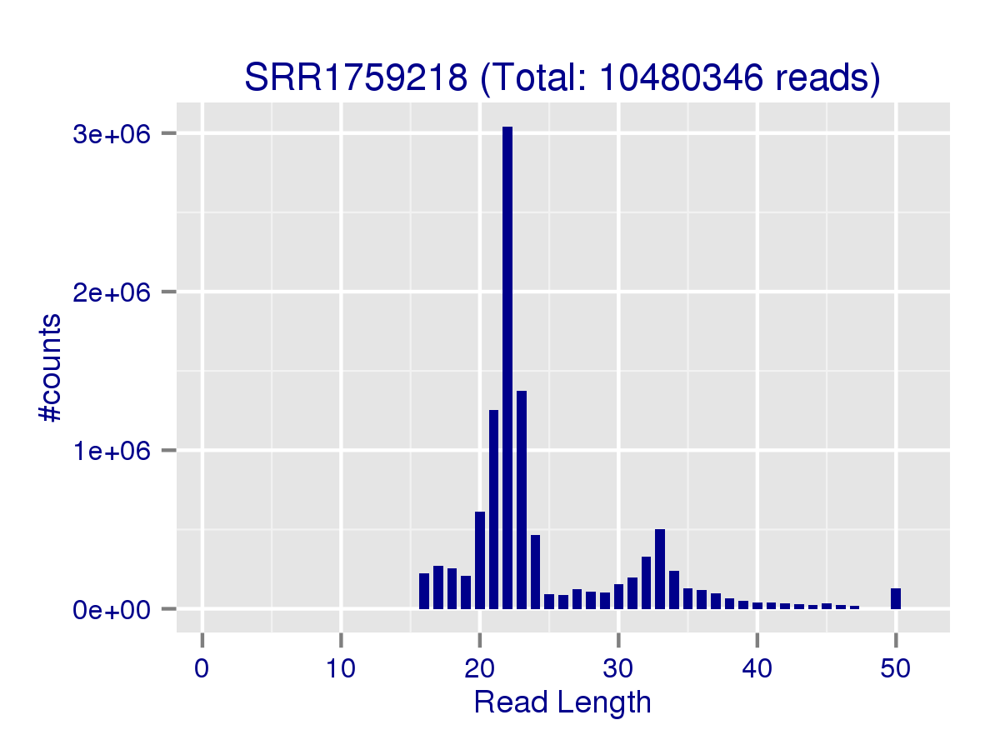
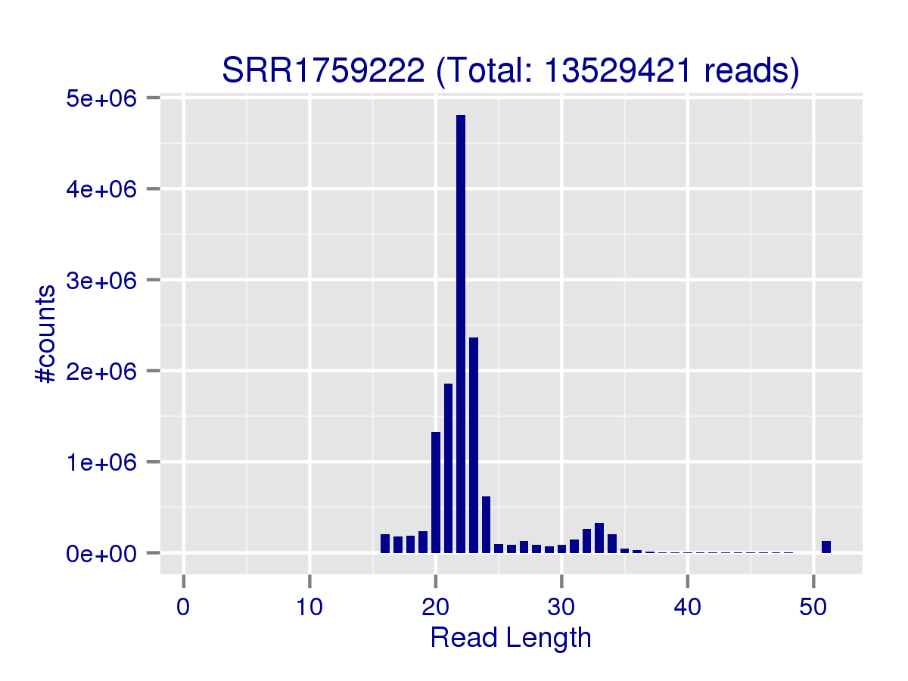
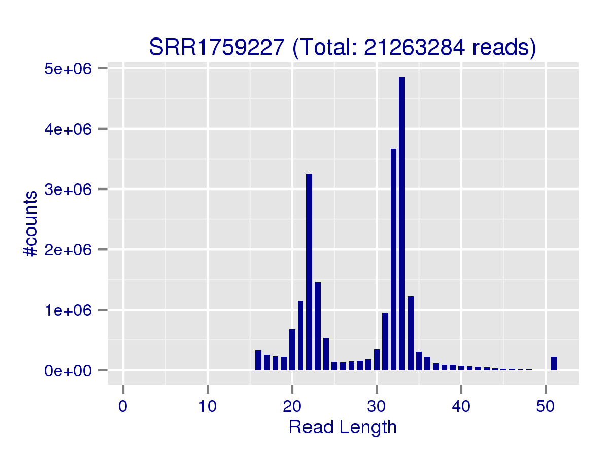
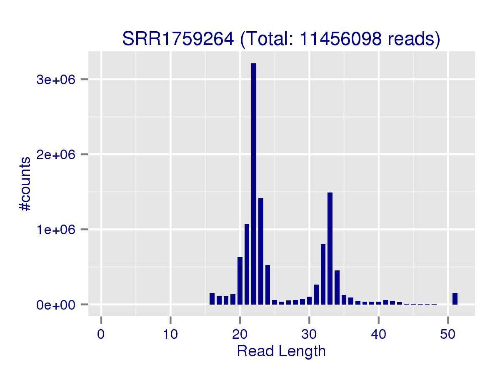

|  |
 |
|  |
|  |
 |
 |
 |
 |
 |
|  |
 |
 |
 |
 |  |
| Samples | total | miRNA | hairpin | smallRNA | mRNA | unaligned | miRNA_mismatch | miRNA detected | miRNA counted | Read Length and Composition Figures | ||
| SRR1759212 | 9950382 | 4744932 | 7730 | 1206047 | 234652 | 3757021 | 521311 | 1188 | 894 | |||
| SRR1759213 | 10520905 | 6399838 | 10182 | 1833004 | 247492 | 2030389 | 795102 | 1280 | 935 | |||
| SRR1759214 | 8870000 | 5336615 | 8169 | 1316614 | 196163 | 2012439 | 644013 | 1226 | 916 | |||
| SRR1759215 | 8754732 | 4032049 | 7982 | 1829197 | 296164 | 2589340 | 463122 | 1206 | 887 | |||
| SRR1759216 | 9480129 | 5264364 | 8438 | 1352204 | 199196 | 2655927 | 594027 | 1237 | 912 | |||
| SRR1759217 | 8688952 | 3596101 | 7674 | 2139200 | 272207 | 2673770 | 427165 | 1229 | 897 | |||
| SRR1759218 | 10480346 | 6283028 | 8785 | 1453596 | 337276 | 2397661 | 733573 | 1297 | 931 |
| ||
| SRR1759219 | 12991643 | 7211138 | 13060 | 1979551 | 386271 | 3401623 | 841609 | 1327 | 951 | |||
| SRR1759220 | 8638958 | 4900432 | 6618 | 1222955 | 225663 | 2283290 | 554558 | 1224 | 912 | |||
| SRR1759221 | 14874043 | 4370434 | 9498 | 1189788 | 930183 | 8374140 | 443502 | 1183 | 890 |
| ||
| SRR1759222 | 13529421 | 10081457 | 15129 | 648890 | 382824 | 2401121 | 1584698 | 1342 | 948 |
| ||
| SRR1759223 | 17774884 | 7372423 | 13805 | 2233651 | 775829 | 7379176 | 873212 | 1232 | 918 | |||
| SRR1759224 | 18826821 | 7520326 | 8933 | 1208041 | 635401 | 9454120 | 872933 | 1233 | 899 | |||
| SRR1759225 | 13580483 | 5741925 | 15165 | 1090205 | 1010677 | 5722511 | 912750 | 1242 | 902 | |||
| SRR1759226 | 15553772 | 8648967 | 11239 | 1376549 | 869286 | 4647731 | 1027590 | 1201 | 892 | |||
| SRR1759227 | 21263284 | 6347569 | 13776 | 1410195 | 1255978 | 12235766 | 663296 | 1262 | 923 |
| ||
| SRR1759228 | 13024245 | 3901421 | 11210 | 743098 | 1038751 | 7329765 | 613164 | 1114 | 851 | |||
| SRR1759229 | 15888532 | 4153444 | 16273 | 2385580 | 1467440 | 7865795 | 462795 | 1136 | 891 | |||
| SRR1759230 | 14085107 | 3565692 | 19594 | 2033683 | 2206848 | 6259290 | 412694 | 1104 | 849 |
| ||
| SRR1759231 | 15341983 | 7841244 | 9965 | 819224 | 796292 | 5875258 | 788916 | 1273 | 931 | |||
| SRR1759232 | 14483410 | 6999910 | 11584 | 997386 | 681654 | 5792876 | 1125292 | 1242 | 914 | |||
| SRR1759233 | 16015129 | 6767839 | 13783 | 1142975 | 1005283 | 7085249 | 737737 | 1253 | 922 | |||
| SRR1759234 | 16468790 | 4213231 | 16120 | 3523201 | 1061057 | 7655181 | 434431 | 1156 | 886 | |||
| SRR1759235 | 9438935 | 4192077 | 10045 | 1243322 | 719725 | 3273766 | 433780 | 1221 | 901 | |||
| SRR1759236 | 17505939 | 7983195 | 16391 | 2379242 | 626211 | 6500900 | 930075 | 1271 | 937 | |||
| SRR1759237 | 22687889 | 10503617 | 22240 | 3913176 | 1301048 | 6947808 | 993067 | 1307 | 942 | |||
| SRR1759238 | 11512261 | 5351598 | 9290 | 1579018 | 265749 | 4306606 | 551831 | 1140 | 875 | |||
| SRR1759239 | 59031174 | 19827601 | 99386 | 7376762 | 6132579 | 25594846 | 2096214 | 1556 | 975 | |||
| SRR1759240 | 20703011 | 8642299 | 16285 | 2762213 | 929711 | 8352503 | 1056130 | 1276 | 931 | |||
| SRR1759241 | 117379221 | 52648207 | 81602 | 14744446 | 7272117 | 42632849 | 5492921 | 1716 | 1017 | |||
| SRR1759242 | 35799370 | 7112198 | 10605 | 1497936 | 1872162 | 25306469 | 797293 | 1180 | 894 | |||
| SRR1759243 | 16777593 | 7137717 | 10710 | 1112235 | 766585 | 7750346 | 833300 | 1210 | 916 | |||
| SRR1759244 | 8327965 | 4397682 | 6350 | 1551554 | 250579 | 2121800 | 502105 | 1255 | 907 | |||
| SRR1759245 | 12072093 | 5550947 | 9732 | 1633702 | 350230 | 4527482 | 598946 | 1242 | 926 | |||
| SRR1759246 | 20174899 | 10515130 | 12170 | 1230228 | 886055 | 7531316 | 1525861 | 1344 | 946 | |||
| SRR1759247 | 13103608 | 3550445 | 8854 | 815286 | 848658 | 7880365 | 543721 | 1110 | 869 | |||
| SRR1759248 | 16689607 | 7381089 | 14896 | 2032840 | 1019460 | 6241322 | 757947 | 1284 | 939 | |||
| SRR1759249 | 20116149 | 11205094 | 15428 | 2025422 | 672105 | 6198100 | 1267230 | 1351 | 968 | |||
| SRR1759250 | 16640919 | 11867310 | 15439 | 1351390 | 429424 | 2977356 | 1302619 | 1358 | 951 | |||
| SRR1759251 | 20104273 | 4955601 | 11349 | 1833539 | 516122 | 12787662 | 547523 | 1153 | 886 | |||
| SRR1759252 | 14061043 | 6381128 | 9680 | 1170781 | 354164 | 6145290 | 785551 | 1210 | 904 |
| ||
| SRR1759253 | 13088117 | 6357796 | 14946 | 2760188 | 450084 | 3505103 | 720926 | 1211 | 915 | |||
| SRR1759254 | 18971058 | 7654485 | 18002 | 4196271 | 616118 | 6486182 | 847853 | 1255 | 926 | |||
| SRR1759255 | 20785294 | 10440040 | 21958 | 3992663 | 867031 | 5463602 | 1277438 | 1374 | 959 |
| ||
| SRR1759256 | 20362711 | 13941098 | 17087 | 1899844 | 543370 | 3961312 | 1785379 | 1380 | 966 | |||
| SRR1759257 | 20597373 | 5066975 | 6503 | 690378 | 1509960 | 13323557 | 599869 | 1108 | 868 | |||
| SRR1759258 | 23362260 | 6786859 | 11496 | 1747559 | 1357429 | 13458917 | 865559 | 1214 | 896 | |||
| SRR1759259 | 13883862 | 7697030 | 10325 | 1530746 | 353429 | 4292332 | 884220 | 1245 | 905 |
| ||
| SRR1759260 | 11594986 | 3614764 | 16674 | 1801620 | 1156687 | 5005241 | 387634 | 1154 | 887 | |||
| SRR1759261 | 17279605 | 5348910 | 14720 | 2943643 | 1637146 | 7335186 | 548936 | 1214 | 908 | |||
| SRR1759262 | 11626854 | 3299896 | 15836 | 1434269 | 893437 | 5983416 | 378240 | 1144 | 863 |
| ||
| SRR1759263 | 17726201 | 12184793 | 18879 | 1116076 | 404939 | 4001514 | 1968084 | 1385 | 968 | |||
| SRR1759264 | 11456098 | 6564245 | 6959 | 919607 | 230688 | 3734599 | 773909 | 1210 | 897 |
| ||
| SRR1759265 | 13928390 | 3944221 | 6589 | 761076 | 1619051 | 7597453 | 430939 | 1104 | 850 | |||
| SRR1759266 | 13256697 | 3227695 | 6880 | 982127 | 711762 | 8328233 | 377824 | 1137 | 875 |
| ||
| SRR1759267 | 12888696 | 6851062 | 10373 | 808558 | 487492 | 4731211 | 1172487 | 1275 | 908 |
| ||
| SRR1759268 | 17140957 | 10291861 | 8520 | 825111 | 436645 | 5578820 | 1351684 | 1349 | 935 | |||
| SRR1759269 | 15272125 | 8775062 | 15267 | 2235776 | 850644 | 3395376 | 953746 | 1340 | 939 | |||
| SRR1759270 | 10880776 | 5503039 | 12490 | 1402524 | 300559 | 3662164 | 614773 | 1221 | 912 |
| ||
| SRR1759271 | 12580727 | 7479129 | 11918 | 873300 | 523632 | 3692748 | 1201070 | 1238 | 926 | |||
| SRR1759272 | 15782800 | 9345005 | 8951 | 858877 | 543877 | 5026090 | 1100451 | 1291 | 937 | |||
| SRR1759273 | 17629880 | 9592515 | 10982 | 1596408 | 638893 | 5791082 | 1201906 | 1350 | 934 |
| ||
| SRR1759274 | 9177036 | 3236795 | 10222 | 1685540 | 702303 | 3542176 | 352019 | 1107 | 861 | |||
| SRR1759275 | 9985891 | 3420640 | 12493 | 1605521 | 819431 | 4127806 | 372270 | 1190 | 889 |
| Samples | total | miRNA | hairpin | smallRNA | mRNA | unaligned | miRNA_mismatch |
| SRR1759212 | 430757 | 26741 | 2021 | 88409 | 84583 | 229003 | 19697 |
| SRR1759213 | 501101 | 31118 | 2547 | 121051 | 77043 | 269342 | 23090 |
| SRR1759214 | 395831 | 28320 | 1919 | 86639 | 58121 | 220832 | 20995 |
| SRR1759215 | 568054 | 26249 | 2395 | 130499 | 124336 | 284575 | 19054 |
| SRR1759216 | 386050 | 27873 | 1961 | 84255 | 51169 | 220792 | 20576 |
| SRR1759217 | 501002 | 26792 | 2356 | 127712 | 86514 | 257628 | 19447 |
| SRR1759218 | 490648 | 30797 | 2479 | 101411 | 121814 | 234147 | 22608 |
| SRR1759219 | 659712 | 33428 | 3283 | 147789 | 143636 | 331576 | 24850 |
| SRR1759220 | 379128 | 27869 | 1940 | 85044 | 67311 | 196964 | 20409 |
| SRR1759221 | 1341031 | 23782 | 3989 | 110320 | 630529 | 572411 | 17084 |
| SRR1759222 | 614675 | 38442 | 3161 | 61861 | 129551 | 381660 | 30689 |
| SRR1759223 | 1302863 | 25532 | 3088 | 134421 | 486008 | 653814 | 18583 |
| SRR1759224 | 788520 | 31036 | 3122 | 92609 | 238756 | 422997 | 24103 |
| SRR1759225 | 1450041 | 33361 | 5349 | 118195 | 530003 | 763133 | 26265 |
| SRR1759226 | 1085960 | 30598 | 3836 | 99039 | 504886 | 447601 | 23759 |
| SRR1759227 | 1476711 | 27572 | 5011 | 112316 | 712992 | 618820 | 20107 |
| SRR1759228 | 1539409 | 26792 | 4990 | 97944 | 523384 | 886299 | 20652 |
| SRR1759229 | 2043974 | 22943 | 4980 | 162468 | 984769 | 868814 | 16405 |
| SRR1759230 | 2717853 | 24208 | 7186 | 163784 | 1484254 | 1038421 | 18052 |
| SRR1759231 | 447542 | 28777 | 2687 | 68307 | 101142 | 246629 | 21075 |
| SRR1759232 | 1144526 | 35546 | 3979 | 88960 | 401071 | 614970 | 28268 |
| SRR1759233 | 1529865 | 31502 | 5588 | 91514 | 621197 | 780064 | 24134 |
| SRR1759234 | 1048496 | 23092 | 3468 | 138082 | 408365 | 475489 | 16537 |
| SRR1759235 | 883278 | 25732 | 3740 | 101584 | 289109 | 463113 | 18273 |
| SRR1759236 | 891467 | 27304 | 3297 | 133805 | 264155 | 462906 | 19652 |
| SRR1759237 | 1670242 | 29595 | 4134 | 159485 | 571622 | 905406 | 21304 |
| SRR1759238 | 488494 | 23467 | 1992 | 96250 | 103974 | 262811 | 17253 |
| SRR1759239 | 5719178 | 40055 | 20063 | 223224 | 2855499 | 2580337 | 28307 |
| SRR1759240 | 1181747 | 29883 | 3340 | 155091 | 334326 | 659107 | 22401 |
| SRR1759241 | 8614897 | 63053 | 16037 | 375156 | 3286181 | 4874470 | 48933 |
| SRR1759242 | 1078849 | 24820 | 3125 | 112160 | 337130 | 601614 | 18433 |
| SRR1759243 | 622200 | 27446 | 3071 | 94191 | 182316 | 315176 | 20283 |
| SRR1759244 | 416442 | 27915 | 2049 | 93724 | 74215 | 218539 | 20242 |
| SRR1759245 | 595510 | 28304 | 2659 | 108455 | 162394 | 293698 | 20730 |
| SRR1759246 | 599426 | 32994 | 3441 | 96615 | 141452 | 324924 | 24570 |
| SRR1759247 | 1368526 | 26474 | 4000 | 99561 | 501994 | 736497 | 20582 |
| SRR1759248 | 1984950 | 27366 | 4631 | 129658 | 672625 | 1150670 | 19400 |
| SRR1759249 | 590587 | 32222 | 3233 | 114535 | 132324 | 308273 | 23555 |
| SRR1759250 | 443961 | 32180 | 2996 | 87503 | 92343 | 228939 | 23458 |
| SRR1759251 | 437883 | 22371 | 1926 | 93445 | 58655 | 261486 | 16056 |
| SRR1759252 | 553939 | 26302 | 2322 | 84768 | 145539 | 295008 | 19513 |
| SRR1759253 | 584817 | 26321 | 2505 | 120407 | 143199 | 292385 | 19330 |
| SRR1759254 | 578505 | 29420 | 2607 | 146703 | 71166 | 328609 | 22044 |
| SRR1759255 | 601730 | 32944 | 3184 | 143955 | 94938 | 326709 | 24737 |
| SRR1759256 | 754322 | 36659 | 3296 | 115626 | 243025 | 355716 | 28298 |
| SRR1759257 | 333656 | 23764 | 1895 | 65060 | 45474 | 197463 | 17561 |
| SRR1759258 | 1766035 | 27008 | 3542 | 121346 | 682092 | 932047 | 20124 |
| SRR1759259 | 496073 | 27981 | 2211 | 87393 | 101364 | 277124 | 20923 |
| SRR1759260 | 1635317 | 23937 | 5581 | 147410 | 770631 | 687758 | 16876 |
| SRR1759261 | 2097874 | 26606 | 4706 | 163661 | 866939 | 1035962 | 19123 |
| SRR1759262 | 1377143 | 23280 | 4958 | 126226 | 655453 | 567226 | 16378 |
| SRR1759263 | 736281 | 46720 | 3856 | 103800 | 116023 | 465882 | 37746 |
| SRR1759264 | 441873 | 31667 | 2185 | 69970 | 77095 | 260956 | 24633 |
| SRR1759265 | 309450 | 21508 | 1930 | 61562 | 45641 | 178809 | 15344 |
| SRR1759266 | 467223 | 23438 | 2522 | 81712 | 107635 | 251916 | 16670 |
| SRR1759267 | 886854 | 36671 | 3806 | 93136 | 272816 | 480425 | 29374 |
| SRR1759268 | 512722 | 37293 | 2792 | 69555 | 114985 | 288097 | 29377 |
| SRR1759269 | 443418 | 32185 | 2748 | 107787 | 65580 | 235118 | 24044 |
| SRR1759270 | 418920 | 28464 | 2458 | 92169 | 74161 | 221668 | 20964 |
| SRR1759271 | 904130 | 36250 | 3661 | 82539 | 223328 | 558352 | 28924 |
| SRR1759272 | 434661 | 34201 | 2490 | 69182 | 73240 | 255548 | 26730 |
| SRR1759273 | 709163 | 34272 | 3582 | 128076 | 171658 | 371575 | 25446 |
| SRR1759274 | 1024517 | 22591 | 3602 | 139708 | 432319 | 426297 | 15947 |
| SRR1759275 | 1421111 | 24291 | 5062 | 130789 | 498957 | 762012 | 17162 |
| Sample | total | miRNA | hairpin | smallRNA | mRNA | unaligned | miRNA_mismatch |
| SRR1759212 | 23.10 | 177.44 | 3.82 | 13.64 | 2.77 | 16.41 | 26.47 |
| SRR1759213 | 21.00 | 205.66 | 4.00 | 15.14 | 3.21 | 7.54 | 34.43 |
| SRR1759214 | 22.41 | 188.44 | 4.26 | 15.20 | 3.38 | 9.11 | 30.67 |
| SRR1759215 | 15.41 | 153.61 | 3.33 | 14.02 | 2.38 | 9.10 | 24.31 |
| SRR1759216 | 24.56 | 188.87 | 4.30 | 16.05 | 3.89 | 12.03 | 28.87 |
| SRR1759217 | 17.34 | 134.22 | 3.26 | 16.75 | 3.15 | 10.38 | 21.97 |
| SRR1759218 | 21.36 | 204.01 | 3.54 | 14.33 | 2.77 | 10.24 | 32.45 |
| SRR1759219 | 19.69 | 215.72 | 3.98 | 13.39 | 2.69 | 10.26 | 33.87 |
| SRR1759220 | 22.79 | 175.84 | 3.41 | 14.38 | 3.35 | 11.59 | 27.17 |
| SRR1759221 | 11.09 | 183.77 | 2.38 | 10.78 | 1.48 | 14.63 | 25.96 |
| SRR1759222 | 22.01 | 262.25 | 4.79 | 10.49 | 2.96 | 6.29 | 51.64 |
| SRR1759223 | 13.64 | 288.75 | 4.47 | 16.62 | 1.60 | 11.29 | 46.99 |
| SRR1759224 | 23.88 | 242.31 | 2.86 | 13.04 | 2.66 | 22.35 | 36.22 |
| SRR1759225 | 9.37 | 172.11 | 2.84 | 9.22 | 1.91 | 7.50 | 34.75 |
| SRR1759226 | 14.32 | 282.66 | 2.93 | 13.90 | 1.72 | 10.38 | 43.25 |
| SRR1759227 | 14.40 | 230.22 | 2.75 | 12.56 | 1.76 | 19.77 | 32.99 |
| SRR1759228 | 8.46 | 145.62 | 2.25 | 7.59 | 1.98 | 8.27 | 29.69 |
| SRR1759229 | 7.77 | 181.03 | 3.27 | 14.68 | 1.49 | 9.05 | 28.21 |
| SRR1759230 | 5.18 | 147.29 | 2.73 | 12.42 | 1.49 | 6.03 | 22.86 |
| SRR1759231 | 34.28 | 272.48 | 3.71 | 11.99 | 7.87 | 23.82 | 37.43 |
| SRR1759232 | 12.65 | 196.93 | 2.91 | 11.21 | 1.70 | 9.42 | 39.81 |
| SRR1759233 | 10.47 | 214.84 | 2.47 | 12.49 | 1.62 | 9.08 | 30.57 |
| SRR1759234 | 15.71 | 182.45 | 4.65 | 25.52 | 2.60 | 16.10 | 26.27 |
| SRR1759235 | 10.69 | 162.91 | 2.69 | 12.24 | 2.49 | 7.07 | 23.74 |
| SRR1759236 | 19.64 | 292.38 | 4.97 | 17.78 | 2.37 | 14.04 | 47.33 |
| SRR1759237 | 13.58 | 354.91 | 5.38 | 24.54 | 2.28 | 7.67 | 46.61 |
| SRR1759238 | 23.57 | 228.05 | 4.66 | 16.41 | 2.56 | 16.39 | 31.98 |
| SRR1759239 | 10.32 | 495.01 | 4.95 | 33.05 | 2.15 | 9.92 | 74.05 |
| SRR1759240 | 17.52 | 289.20 | 4.88 | 17.81 | 2.78 | 12.67 | 47.15 |
| SRR1759241 | 13.63 | 834.98 | 5.09 | 39.30 | 2.21 | 8.75 | 112.25 |
| SRR1759242 | 33.18 | 286.55 | 3.39 | 13.36 | 5.55 | 42.06 | 43.25 |
| SRR1759243 | 26.96 | 260.06 | 3.49 | 11.81 | 4.20 | 24.59 | 41.08 |
| SRR1759244 | 20.00 | 157.54 | 3.10 | 16.55 | 3.38 | 9.71 | 24.81 |
| SRR1759245 | 20.27 | 196.12 | 3.66 | 15.06 | 2.16 | 15.42 | 28.89 |
| SRR1759246 | 33.66 | 318.70 | 3.54 | 12.73 | 6.26 | 23.18 | 62.10 |
| SRR1759247 | 9.57 | 134.11 | 2.21 | 8.19 | 1.69 | 10.70 | 26.42 |
| SRR1759248 | 8.41 | 269.72 | 3.22 | 15.68 | 1.52 | 5.42 | 39.07 |
| SRR1759249 | 34.06 | 347.75 | 4.77 | 17.68 | 5.08 | 20.11 | 53.80 |
| SRR1759250 | 37.48 | 368.78 | 5.15 | 15.44 | 4.65 | 13.01 | 55.53 |
| SRR1759251 | 45.91 | 221.52 | 5.89 | 19.62 | 8.80 | 48.90 | 34.10 |
| SRR1759252 | 25.38 | 242.61 | 4.17 | 13.81 | 2.43 | 20.83 | 40.26 |
| SRR1759253 | 22.38 | 241.55 | 5.97 | 22.92 | 3.14 | 11.99 | 37.30 |
| SRR1759254 | 32.79 | 260.18 | 6.91 | 28.60 | 8.66 | 19.74 | 38.46 |
| SRR1759255 | 34.54 | 316.90 | 6.90 | 27.74 | 9.13 | 16.72 | 51.64 |
| SRR1759256 | 26.99 | 380.29 | 5.18 | 16.43 | 2.24 | 11.14 | 63.09 |
| SRR1759257 | 61.73 | 213.22 | 3.43 | 10.61 | 33.20 | 67.47 | 34.16 |
| SRR1759258 | 13.23 | 251.29 | 3.25 | 14.40 | 1.99 | 14.44 | 43.01 |
| SRR1759259 | 27.99 | 275.08 | 4.67 | 17.52 | 3.49 | 15.49 | 42.26 |
| SRR1759260 | 7.09 | 151.01 | 2.99 | 12.22 | 1.50 | 7.28 | 22.97 |
| SRR1759261 | 8.24 | 201.04 | 3.13 | 17.99 | 1.89 | 7.08 | 28.71 |
| SRR1759262 | 8.44 | 141.75 | 3.19 | 11.36 | 1.36 | 10.55 | 23.09 |
| SRR1759263 | 24.08 | 260.80 | 4.90 | 10.75 | 3.49 | 8.59 | 52.14 |
| SRR1759264 | 25.93 | 207.29 | 3.18 | 13.14 | 2.99 | 14.31 | 31.42 |
| SRR1759265 | 45.01 | 183.38 | 3.41 | 12.36 | 35.47 | 42.49 | 28.09 |
| SRR1759266 | 28.37 | 137.71 | 2.73 | 12.02 | 6.61 | 33.06 | 22.66 |
| SRR1759267 | 14.53 | 186.83 | 2.73 | 8.68 | 1.79 | 9.85 | 39.92 |
| SRR1759268 | 33.43 | 275.97 | 3.05 | 11.86 | 3.80 | 19.36 | 46.01 |
| SRR1759269 | 34.44 | 272.64 | 5.56 | 20.74 | 12.97 | 14.44 | 39.67 |
| SRR1759270 | 25.97 | 193.33 | 5.08 | 15.22 | 4.05 | 16.52 | 29.33 |
| SRR1759271 | 13.91 | 206.32 | 3.26 | 10.58 | 2.34 | 6.61 | 41.53 |
| SRR1759272 | 36.31 | 273.24 | 3.59 | 12.41 | 7.43 | 19.67 | 41.17 |
| SRR1759273 | 24.86 | 279.89 | 3.07 | 12.46 | 3.72 | 15.59 | 47.23 |
| SRR1759274 | 8.96 | 143.28 | 2.84 | 12.06 | 1.62 | 8.31 | 22.07 |
| SRR1759275 | 7.03 | 140.82 | 2.47 | 12.28 | 1.64 | 5.42 | 21.69 |
| Sample | Total_reads | With_adapter | Short_reads | Pass_reads | Adapter_rate | Short_rate | Pass_rate |
| SRR1759212 | 10697688 | 10320821 | 747306 | 9950382 | 96.5 | 7.0 | 93.0 |
| SRR1759213 | 11642297 | 11274783 | 1121392 | 10520905 | 96.8 | 9.6 | 90.4 |
| SRR1759214 | 9795927 | 9535303 | 925927 | 8870000 | 97.3 | 9.5 | 90.5 |
| SRR1759215 | 10286531 | 9922467 | 1531799 | 8754732 | 96.5 | 14.9 | 85.1 |
| SRR1759216 | 10535124 | 10263476 | 1054995 | 9480129 | 97.4 | 10.0 | 90.0 |
| SRR1759217 | 10849981 | 10391837 | 2161029 | 8688952 | 95.8 | 19.9 | 80.1 |
| SRR1759218 | 12206660 | 12075507 | 1726314 | 10480346 | 98.9 | 14.1 | 85.9 |
| SRR1759219 | 14763881 | 14383189 | 1772238 | 12991643 | 97.4 | 12.0 | 88.0 |
| SRR1759220 | 10224351 | 10123912 | 1585393 | 8638958 | 99.0 | 15.5 | 84.5 |
| SRR1759221 | 16255734 | 16050783 | 1381691 | 14874043 | 98.7 | 8.5 | 91.5 |
| SRR1759222 | 15366175 | 15234423 | 1836754 | 13529421 | 99.1 | 12.0 | 88.0 |
| SRR1759223 | 17874597 | 17053600 | 99713 | 17774884 | 95.4 | 0.6 | 99.4 |
| SRR1759224 | 20684626 | 20464215 | 1857805 | 18826821 | 98.9 | 9.0 | 91.0 |
| SRR1759225 | 15723230 | 15568258 | 2142747 | 13580483 | 99.0 | 13.6 | 86.4 |
| SRR1759226 | 17614619 | 17420564 | 2060847 | 15553772 | 98.9 | 11.7 | 88.3 |
| SRR1759227 | 24573660 | 24353050 | 3310376 | 21263284 | 99.1 | 13.5 | 86.5 |
| SRR1759228 | 14350750 | 14195507 | 1326505 | 13024245 | 98.9 | 9.2 | 90.8 |
| SRR1759229 | 17001863 | 15901003 | 1113331 | 15888532 | 93.5 | 6.5 | 93.5 |
| SRR1759230 | 16998739 | 16804137 | 2913632 | 14085107 | 98.9 | 17.1 | 82.9 |
| SRR1759231 | 17725494 | 17579890 | 2383511 | 15341983 | 99.2 | 13.4 | 86.6 |
| SRR1759232 | 16063938 | 15917067 | 1580528 | 14483410 | 99.1 | 9.8 | 90.2 |
| SRR1759233 | 19174763 | 18979793 | 3159634 | 16015129 | 99.0 | 16.5 | 83.5 |
| SRR1759234 | 16888582 | 13254306 | 419792 | 16468790 | 78.5 | 2.5 | 97.5 |
| SRR1759235 | 11315988 | 11119046 | 1877053 | 9438935 | 98.3 | 16.6 | 83.4 |
| SRR1759236 | 17980268 | 16948407 | 474329 | 17505939 | 94.3 | 2.6 | 97.4 |
| SRR1759237 | 23457233 | 20351940 | 769344 | 22687889 | 86.8 | 3.3 | 96.7 |
| SRR1759238 | 11758112 | 10812421 | 245851 | 11512261 | 92.0 | 2.1 | 97.9 |
| SRR1759239 | 85321866 | 70140600 | 26290692 | 59031174 | 82.2 | 30.8 | 69.2 |
| SRR1759240 | 21339492 | 20185399 | 636481 | 20703011 | 94.6 | 3.0 | 97.0 |
| SRR1759241 | 119039780 | 117680783 | 1660559 | 117379221 | 98.9 | 1.4 | 98.6 |
| SRR1759242 | 35988842 | 35596416 | 189472 | 35799370 | 98.9 | 0.5 | 99.5 |
| SRR1759243 | 17706807 | 17595378 | 929214 | 16777593 | 99.4 | 5.2 | 94.8 |
| SRR1759244 | 10764971 | 10518323 | 2437006 | 8327965 | 97.7 | 22.6 | 77.4 |
| SRR1759245 | 13371997 | 12892072 | 1299904 | 12072093 | 96.4 | 9.7 | 90.3 |
| SRR1759246 | 22774664 | 22568285 | 2599765 | 20174899 | 99.1 | 11.4 | 88.6 |
| SRR1759247 | 14283612 | 14123602 | 1180004 | 13103608 | 98.9 | 8.3 | 91.7 |
| SRR1759248 | 17436483 | 16817086 | 746876 | 16689607 | 96.4 | 4.3 | 95.7 |
| SRR1759249 | 21069321 | 20778829 | 953172 | 20116149 | 98.6 | 4.5 | 95.5 |
| SRR1759250 | 17482548 | 17293215 | 841629 | 16640919 | 98.9 | 4.8 | 95.2 |
| SRR1759251 | 20276057 | 19186921 | 171784 | 20104273 | 94.6 | 0.8 | 99.2 |
| SRR1759252 | 14545643 | 13938946 | 484600 | 14061043 | 95.8 | 3.3 | 96.7 |
| SRR1759253 | 13606125 | 11779977 | 518008 | 13088117 | 86.6 | 3.8 | 96.2 |
| SRR1759254 | 19266661 | 15803236 | 295603 | 18971058 | 82.0 | 1.5 | 98.5 |
| SRR1759255 | 21426693 | 18382858 | 641399 | 20785294 | 85.8 | 3.0 | 97.0 |
| SRR1759256 | 20683130 | 20336414 | 320419 | 20362711 | 98.3 | 1.5 | 98.5 |
| SRR1759257 | 20906712 | 20764471 | 309339 | 20597373 | 99.3 | 1.5 | 98.5 |
| SRR1759258 | 23610018 | 23331430 | 247758 | 23362260 | 98.8 | 1.0 | 99.0 |
| SRR1759259 | 14285476 | 13863856 | 401614 | 13883862 | 97.0 | 2.8 | 97.2 |
| SRR1759260 | 13766953 | 13382218 | 2171967 | 11594986 | 97.2 | 15.8 | 84.2 |
| SRR1759261 | 18378785 | 15461334 | 1099180 | 17279605 | 84.1 | 6.0 | 94.0 |
| SRR1759262 | 14359538 | 14026075 | 2732684 | 11626854 | 97.7 | 19.0 | 81.0 |
| SRR1759263 | 20925805 | 20704797 | 3199604 | 17726201 | 98.9 | 15.3 | 84.7 |
| SRR1759264 | 12636871 | 12485114 | 1180773 | 11456098 | 98.8 | 9.3 | 90.7 |
| SRR1759265 | 15097514 | 14451370 | 1169124 | 13928390 | 95.7 | 7.7 | 92.3 |
| SRR1759266 | 14976048 | 14691647 | 1719351 | 13256697 | 98.1 | 11.5 | 88.5 |
| SRR1759267 | 15076907 | 14938227 | 2188211 | 12888696 | 99.1 | 14.5 | 85.5 |
| SRR1759268 | 18317584 | 18182640 | 1176627 | 17140957 | 99.3 | 6.4 | 93.6 |
| SRR1759269 | 17020831 | 14986154 | 1748706 | 15272125 | 88.0 | 10.3 | 89.7 |
| SRR1759270 | 12082088 | 11425322 | 1201312 | 10880776 | 94.6 | 9.9 | 90.1 |
| SRR1759271 | 14603552 | 14479101 | 2022825 | 12580727 | 99.1 | 13.9 | 86.1 |
| SRR1759272 | 17437874 | 17291833 | 1655074 | 15782800 | 99.2 | 9.5 | 90.5 |
| SRR1759273 | 18831945 | 18627345 | 1202065 | 17629880 | 98.9 | 6.4 | 93.6 |
| SRR1759274 | 10648841 | 10131106 | 1471805 | 9177036 | 95.1 | 13.8 | 86.2 |
| SRR1759275 | 12455669 | 11934275 | 2469778 | 9985891 | 95.8 | 19.8 | 80.2 |
| miRNA | miRBase | Target | SRR1759212 | SRR1759213 | SRR1759214 | SRR1759215 | SRR1759216 | SRR1759217 | SRR1759218 | SRR1759219 | SRR1759220 | SRR1759221 | SRR1759222 | SRR1759223 | SRR1759224 | SRR1759225 | SRR1759226 | SRR1759227 | SRR1759228 | SRR1759229 | SRR1759230 | SRR1759231 | SRR1759232 | SRR1759233 | SRR1759234 | SRR1759235 | SRR1759236 | SRR1759237 | SRR1759238 | SRR1759239 | SRR1759240 | SRR1759241 | SRR1759242 | SRR1759243 | SRR1759244 | SRR1759245 | SRR1759246 | SRR1759247 | SRR1759248 | SRR1759249 | SRR1759250 | SRR1759251 | SRR1759252 | SRR1759253 | SRR1759254 | SRR1759255 | SRR1759256 | SRR1759257 | SRR1759258 | SRR1759259 | SRR1759260 | SRR1759261 | SRR1759262 | SRR1759263 | SRR1759264 | SRR1759265 | SRR1759266 | SRR1759267 | SRR1759268 | SRR1759269 | SRR1759270 | SRR1759271 | SRR1759272 | SRR1759273 | SRR1759274 | SRR1759275 |
| hsa-let-7a-2-3p | miRBase | target | 8 | 0 | 5 | 2 | 7 | 1 | 3 | 9 | 12 | 0 | 8 | 4 | 5 | 1 | 0 | 6 | 0 | 2 | 1 | 7 | 2 | 4 | 7 | 2 | 8 | 13 | 4 | 17 | 5 | 29 | 13 | 7 | 6 | 4 | 3 | 0 | 2 | 10 | 10 | 1 | 4 | 2 | 1 | 6 | 7 | 1 | 4 | 7 | 2 | 3 | 5 | 3 | 0 | 4 | 5 | 10 | 7 | 7 | 4 | 2 | 2 | 14 | 1 | 5 |
| hsa-let-7a-3p | miRBase | target | 758 | 1090 | 757 | 626 | 711 | 495 | 1026 | 1220 | 797 | 518 | 991 | 837 | 508 | 543 | 537 | 626 | 445 | 391 | 271 | 847 | 559 | 565 | 487 | 731 | 943 | 1274 | 560 | 1237 | 822 | 5617 | 661 | 868 | 721 | 757 | 900 | 360 | 807 | 1565 | 1132 | 665 | 604 | 542 | 966 | 967 | 1447 | 608 | 845 | 688 | 461 | 583 | 656 | 1622 | 623 | 487 | 502 | 733 | 948 | 1058 | 710 | 647 | 887 | 941 | 482 | 544 |
| hsa-let-7a-5p | miRBase | target | 173602 | 273836 | 253705 | 183329 | 249940 | 109463 | 234100 | 327206 | 202818 | 220969 | 511912 | 382876 | 516490 | 292976 | 453603 | 347405 | 170181 | 191160 | 197802 | 383648 | 370817 | 372322 | 200679 | 167090 | 457171 | 464037 | 249804 | 300297 | 452049 | 2710329 | 343309 | 325489 | 140621 | 279448 | 381017 | 159921 | 356383 | 590079 | 607081 | 262245 | 224657 | 312797 | 342456 | 576221 | 773153 | 195382 | 269687 | 338143 | 150153 | 265693 | 119288 | 531995 | 368628 | 177321 | 137404 | 263434 | 479004 | 420032 | 237571 | 403166 | 467100 | 466652 | 131932 | 134966 |
| hsa-let-7b-3p | miRBase | target | 1035 | 1210 | 912 | 800 | 1109 | 396 | 1310 | 1468 | 920 | 596 | 2211 | 1079 | 1011 | 786 | 1427 | 1010 | 957 | 708 | 436 | 1437 | 965 | 1090 | 727 | 926 | 1243 | 2425 | 824 | 1118 | 1350 | 8925 | 2212 | 1429 | 561 | 955 | 1422 | 655 | 917 | 1697 | 2151 | 769 | 868 | 961 | 1210 | 1612 | 2221 | 873 | 1279 | 1148 | 517 | 967 | 658 | 2019 | 864 | 1048 | 508 | 1032 | 2384 | 1427 | 907 | 986 | 1274 | 2436 | 416 | 586 |
| hsa-let-7b-5p | miRBase | target | 30651 | 68137 | 51128 | 43406 | 51686 | 43709 | 68889 | 68312 | 51770 | 33795 | 111161 | 56604 | 90078 | 51496 | 68470 | 54559 | 35587 | 36536 | 26273 | 76005 | 64319 | 51776 | 36774 | 43813 | 67327 | 88779 | 38964 | 127853 | 90661 | 505789 | 78219 | 72276 | 47648 | 56881 | 68122 | 27492 | 57725 | 91495 | 134853 | 42806 | 40088 | 62554 | 68005 | 112177 | 125907 | 39914 | 40705 | 64797 | 28432 | 41336 | 25981 | 98374 | 53514 | 41289 | 26926 | 48857 | 80655 | 78725 | 42839 | 64111 | 63073 | 149249 | 23830 | 41240 |
| hsa-let-7c-3p | miRBase | target | 49 | 45 | 27 | 24 | 32 | 24 | 37 | 48 | 36 | 31 | 34 | 58 | 43 | 32 | 35 | 47 | 19 | 33 | 17 | 44 | 53 | 38 | 29 | 27 | 64 | 47 | 46 | 126 | 65 | 368 | 36 | 39 | 39 | 29 | 67 | 21 | 45 | 84 | 62 | 36 | 45 | 47 | 46 | 102 | 112 | 25 | 98 | 89 | 24 | 42 | 19 | 88 | 39 | 20 | 27 | 54 | 63 | 68 | 29 | 56 | 52 | 64 | 28 | 25 |
| hsa-let-7c-5p | miRBase | target | 48055 | 61388 | 54015 | 38859 | 54724 | 47503 | 51765 | 74534 | 44768 | 61698 | 68727 | 86481 | 128171 | 66323 | 95316 | 83310 | 26340 | 46027 | 49592 | 70689 | 93215 | 93592 | 45228 | 32926 | 96000 | 77673 | 57988 | 125641 | 96634 | 612277 | 59310 | 63465 | 48329 | 63249 | 89113 | 39286 | 81356 | 143494 | 110255 | 51556 | 53158 | 73974 | 73351 | 134124 | 184200 | 44168 | 70136 | 82386 | 34453 | 68253 | 28965 | 111101 | 93733 | 28201 | 32477 | 61469 | 104940 | 95263 | 56435 | 94048 | 119421 | 108823 | 32847 | 36916 |
| hsa-let-7d-3p | miRBase | target | 2107 | 2235 | 1686 | 1552 | 1454 | 809 | 2147 | 2690 | 2092 | 1565 | 3654 | 2382 | 1916 | 1982 | 2404 | 2337 | 1658 | 1607 | 1190 | 2318 | 2202 | 2503 | 1745 | 1977 | 2450 | 3316 | 1731 | 3439 | 3310 | 16697 | 2998 | 2673 | 1117 | 1807 | 2668 | 1331 | 2043 | 3860 | 3506 | 1801 | 1978 | 2956 | 2272 | 5364 | 4496 | 1872 | 2857 | 2811 | 960 | 2108 | 1348 | 4413 | 2592 | 1263 | 919 | 1989 | 3627 | 3554 | 1860 | 2742 | 2811 | 2640 | 1017 | 1105 |
| hsa-let-7d-5p | miRBase | target | 8645 | 16502 | 14874 | 11792 | 13907 | 7358 | 13751 | 21251 | 11215 | 8907 | 17787 | 15883 | 19916 | 12433 | 14793 | 14466 | 5892 | 8411 | 7327 | 14279 | 15365 | 13882 | 9414 | 11152 | 18996 | 16602 | 8644 | 9559 | 21658 | 121811 | 11512 | 13331 | 9894 | 15835 | 14703 | 7137 | 14634 | 24661 | 22452 | 11008 | 8618 | 15344 | 12023 | 29698 | 33487 | 8368 | 10199 | 13378 | 9485 | 9793 | 6495 | 21744 | 13285 | 4409 | 7524 | 8564 | 12709 | 15327 | 12219 | 15141 | 15167 | 12997 | 8431 | 8606 |
| hsa-let-7e-3p | miRBase | target | 242 | 277 | 232 | 184 | 220 | 118 | 218 | 322 | 186 | 199 | 339 | 276 | 251 | 283 | 191 | 263 | 129 | 161 | 137 | 234 | 314 | 259 | 180 | 159 | 264 | 318 | 193 | 566 | 349 | 1934 | 248 | 270 | 140 | 252 | 376 | 127 | 227 | 585 | 315 | 232 | 283 | 234 | 288 | 491 | 575 | 230 | 237 | 243 | 152 | 238 | 127 | 596 | 309 | 138 | 146 | 264 | 418 | 375 | 221 | 346 | 319 | 470 | 160 | 129 |
| hsa-let-7e-5p | miRBase | target | 15871 | 24707 | 24471 | 18049 | 24836 | 11214 | 19590 | 30528 | 18837 | 22961 | 58406 | 36151 | 50547 | 45711 | 37424 | 33647 | 20550 | 18490 | 21265 | 26773 | 56838 | 37803 | 18073 | 14535 | 41377 | 35406 | 21350 | 55375 | 48070 | 275324 | 24216 | 27406 | 15286 | 25960 | 35315 | 23920 | 37603 | 55161 | 51844 | 23554 | 21873 | 31314 | 29501 | 62763 | 83121 | 16396 | 23516 | 30019 | 15013 | 23917 | 10407 | 72827 | 41679 | 11567 | 12804 | 35536 | 37707 | 38637 | 20438 | 62821 | 41789 | 36327 | 13069 | 13103 |
| hsa-let-7f-1-3p | miRBase | target | 168 | 172 | 141 | 118 | 134 | 97 | 164 | 180 | 112 | 93 | 169 | 158 | 83 | 97 | 106 | 126 | 82 | 99 | 57 | 133 | 123 | 118 | 124 | 113 | 170 | 227 | 98 | 214 | 182 | 1015 | 160 | 148 | 102 | 142 | 196 | 65 | 176 | 251 | 251 | 101 | 109 | 118 | 195 | 240 | 343 | 131 | 188 | 156 | 66 | 112 | 93 | 278 | 124 | 107 | 91 | 131 | 174 | 168 | 132 | 95 | 167 | 250 | 68 | 85 |
| hsa-let-7f-2-3p | miRBase | target | 434 | 521 | 416 | 323 | 387 | 222 | 416 | 636 | 408 | 226 | 402 | 464 | 285 | 277 | 186 | 289 | 166 | 221 | 142 | 328 | 269 | 289 | 243 | 310 | 476 | 571 | 292 | 991 | 500 | 2701 | 244 | 433 | 320 | 461 | 465 | 160 | 414 | 859 | 642 | 328 | 346 | 295 | 448 | 540 | 772 | 321 | 379 | 404 | 341 | 297 | 297 | 712 | 349 | 198 | 292 | 302 | 330 | 460 | 450 | 329 | 394 | 294 | 273 | 255 |
| hsa-let-7f-5p | miRBase | target | 103871 | 174908 | 142091 | 115145 | 145050 | 93326 | 151955 | 199802 | 114282 | 159187 | 323291 | 250818 | 370524 | 195381 | 350328 | 221822 | 100648 | 132981 | 141505 | 238888 | 258660 | 261582 | 136421 | 92126 | 297837 | 267081 | 151031 | 158484 | 308904 | 1711308 | 166014 | 211660 | 113797 | 163318 | 250450 | 111835 | 221808 | 405514 | 295116 | 167347 | 139784 | 239051 | 204900 | 458678 | 490753 | 136267 | 147042 | 210864 | 95558 | 174095 | 75561 | 343974 | 270255 | 127760 | 85680 | 152440 | 323950 | 304252 | 138067 | 271780 | 392473 | 226765 | 85688 | 92105 |
| hsa-let-7g-3p | miRBase | target | 192 | 262 | 193 | 158 | 177 | 347 | 316 | 291 | 258 | 58 | 196 | 102 | 99 | 97 | 115 | 106 | 56 | 76 | 46 | 133 | 82 | 124 | 85 | 155 | 97 | 190 | 113 | 1469 | 145 | 1284 | 132 | 166 | 353 | 224 | 170 | 75 | 129 | 175 | 247 | 91 | 152 | 91 | 203 | 156 | 252 | 156 | 137 | 175 | 143 | 83 | 145 | 303 | 122 | 72 | 153 | 124 | 121 | 143 | 240 | 108 | 131 | 186 | 133 | 195 |
| hsa-let-7g-5p | miRBase | target | 46153 | 77826 | 68315 | 51026 | 64921 | 39129 | 66175 | 88495 | 52364 | 50974 | 118919 | 91097 | 109018 | 75344 | 82827 | 76081 | 31263 | 43053 | 40074 | 83531 | 89193 | 80015 | 51993 | 39999 | 107120 | 103841 | 55347 | 53219 | 113103 | 670956 | 57767 | 76259 | 44226 | 76750 | 79802 | 38007 | 89009 | 138959 | 116678 | 60530 | 49552 | 80366 | 74228 | 133791 | 189760 | 50022 | 46434 | 79381 | 44647 | 53713 | 37404 | 142228 | 84536 | 31490 | 37459 | 51165 | 75986 | 89476 | 63596 | 98573 | 104250 | 70186 | 37879 | 40720 |
| hsa-let-7i-3p | miRBase | target | 238 | 336 | 220 | 225 | 201 | 355 | 447 | 389 | 221 | 114 | 209 | 134 | 91 | 107 | 122 | 135 | 97 | 109 | 56 | 166 | 93 | 161 | 122 | 183 | 129 | 264 | 166 | 1461 | 168 | 1317 | 244 | 204 | 454 | 242 | 250 | 56 | 171 | 184 | 352 | 119 | 159 | 105 | 255 | 182 | 282 | 154 | 188 | 186 | 120 | 141 | 168 | 313 | 99 | 140 | 135 | 210 | 314 | 223 | 252 | 101 | 159 | 483 | 121 | 234 |
| hsa-let-7i-5p | miRBase | target | 17605 | 33559 | 21474 | 19076 | 19519 | 31106 | 32737 | 33542 | 18743 | 26110 | 46097 | 37904 | 40836 | 25630 | 47375 | 31543 | 16432 | 22237 | 16068 | 35015 | 34675 | 33865 | 21203 | 17812 | 37495 | 46996 | 24864 | 92440 | 51195 | 249338 | 31920 | 40562 | 33656 | 24109 | 38681 | 17287 | 35044 | 68517 | 52266 | 28091 | 21606 | 33808 | 38243 | 61871 | 63275 | 28243 | 20618 | 33221 | 13531 | 26260 | 13322 | 51828 | 32732 | 25348 | 14050 | 29572 | 46601 | 48876 | 22369 | 32074 | 56165 | 64129 | 13551 | 20372 |
| hsa-miR-1-3p | miRBase | target | 46 | 197 | 223 | 158 | 153 | 34 | 73 | 137 | 89 | 402 | 50 | 181 | 87 | 65 | 34 | 112 | 14 | 44 | 40 | 84 | 73 | 68 | 56 | 52 | 187 | 118 | 79 | 299 | 192 | 824 | 31 | 121 | 61 | 155 | 374 | 23 | 120 | 222 | 86 | 80 | 86 | 53 | 102 | 94 | 232 | 64 | 24 | 79 | 63 | 50 | 50 | 96 | 92 | 17 | 67 | 62 | 48 | 66 | 81 | 64 | 80 | 66 | 86 | 53 |
| hsa-miR-100-3p | miRBase | target | 38 | 34 | 42 | 31 | 43 | 23 | 64 | 51 | 46 | 40 | 203 | 96 | 102 | 56 | 240 | 97 | 58 | 38 | 48 | 77 | 91 | 68 | 29 | 44 | 117 | 183 | 66 | 60 | 94 | 665 | 98 | 94 | 26 | 30 | 69 | 53 | 67 | 170 | 166 | 47 | 43 | 67 | 68 | 110 | 192 | 40 | 87 | 146 | 26 | 57 | 21 | 113 | 63 | 70 | 23 | 100 | 186 | 107 | 48 | 59 | 123 | 144 | 20 | 37 |
| hsa-miR-100-5p | miRBase | target | 129253 | 215527 | 167252 | 142573 | 154374 | 134364 | 278183 | 176431 | 159157 | 8369 | 105075 | 50827 | 11589 | 35519 | 12771 | 17686 | 39962 | 21819 | 8494 | 38413 | 34384 | 14766 | 24651 | 145648 | 35075 | 51879 | 45420 | 105218 | 49810 | 322020 | 64779 | 43993 | 158538 | 165167 | 42234 | 11444 | 50283 | 75179 | 134717 | 17945 | 68036 | 49738 | 57821 | 34813 | 78401 | 38661 | 48602 | 37771 | 90898 | 15498 | 106632 | 161555 | 12581 | 27982 | 95115 | 90849 | 47382 | 37224 | 181555 | 44846 | 22827 | 72868 | 73580 | 99201 |
| hsa-miR-101-3p | miRBase | target | 57189 | 86276 | 64075 | 50814 | 60485 | 44502 | 81573 | 104055 | 64920 | 46504 | 109942 | 78883 | 106060 | 52670 | 161010 | 64028 | 39852 | 42368 | 34688 | 86512 | 64152 | 74761 | 44675 | 50763 | 94375 | 127972 | 59924 | 302785 | 87685 | 522171 | 58390 | 96458 | 58516 | 61893 | 79335 | 36997 | 93872 | 174279 | 151911 | 66007 | 52856 | 61923 | 93491 | 111667 | 153333 | 70749 | 54009 | 98145 | 48400 | 53631 | 47323 | 126316 | 82024 | 63335 | 47181 | 81932 | 96162 | 102129 | 75116 | 84817 | 131533 | 96041 | 42931 | 36305 |
| hsa-miR-101-5p | miRBase | target | 528 | 860 | 545 | 453 | 465 | 493 | 688 | 917 | 439 | 945 | 1085 | 631 | 884 | 632 | 902 | 1386 | 368 | 440 | 410 | 1567 | 689 | 858 | 547 | 341 | 714 | 938 | 563 | 1645 | 787 | 4200 | 382 | 879 | 595 | 566 | 2271 | 342 | 761 | 1270 | 1304 | 582 | 749 | 639 | 851 | 1110 | 1409 | 606 | 986 | 815 | 433 | 1225 | 373 | 2243 | 879 | 774 | 412 | 769 | 1282 | 2773 | 598 | 841 | 1079 | 1162 | 373 | 331 |
| hsa-miR-103a-2-5p | miRBase | target | 27 | 19 | 10 | 13 | 10 | 42 | 29 | 23 | 14 | 9 | 7 | 12 | 9 | 4 | 8 | 14 | 4 | 9 | 5 | 16 | 13 | 6 | 7 | 6 | 11 | 15 | 16 | 167 | 6 | 156 | 11 | 16 | 26 | 16 | 22 | 4 | 16 | 26 | 22 | 6 | 12 | 7 | 25 | 10 | 32 | 14 | 20 | 30 | 8 | 19 | 5 | 13 | 11 | 3 | 14 | 37 | 23 | 11 | 10 | 3 | 14 | 43 | 10 | 14 |
| hsa-miR-103a-3p | miRBase | target | 43851 | 53151 | 41297 | 37309 | 45092 | 43398 | 53404 | 68821 | 40598 | 41259 | 47932 | 53034 | 78977 | 36682 | 77840 | 54690 | 21159 | 32320 | 27745 | 44716 | 46364 | 58615 | 29447 | 29752 | 55454 | 65252 | 45032 | 207730 | 72911 | 504952 | 50040 | 55327 | 52819 | 48381 | 56048 | 29021 | 58542 | 81681 | 72690 | 36584 | 35466 | 41252 | 65307 | 67781 | 120238 | 43875 | 50052 | 60541 | 29043 | 44197 | 24239 | 73192 | 61121 | 21583 | 28453 | 52106 | 74126 | 57056 | 45318 | 50372 | 72079 | 69019 | 28052 | 30293 |
| hsa-miR-105-3p | miRBase | target | 10 | 7 | 10 | 10 | 15 | 8 | 2 | 14 | 14 | 24 | 11 | 13 | 32 | 15 | 24 | 20 | 7 | 13 | 8 | 9 | 21 | 16 | 11 | 7 | 12 | 17 | 15 | 109 | 20 | 145 | 18 | 17 | 13 | 12 | 24 | 14 | 18 | 22 | 31 | 17 | 13 | 10 | 10 | 19 | 30 | 12 | 11 | 16 | 9 | 14 | 4 | 31 | 28 | 9 | 4 | 13 | 29 | 20 | 16 | 26 | 23 | 17 | 8 | 11 |
| hsa-miR-105-5p | miRBase | target | 125 | 124 | 142 | 86 | 142 | 87 | 102 | 193 | 104 | 111 | 69 | 146 | 116 | 104 | 67 | 121 | 29 | 107 | 47 | 105 | 111 | 34 | 94 | 90 | 184 | 111 | 94 | 640 | 199 | 1185 | 85 | 98 | 123 | 133 | 140 | 54 | 155 | 255 | 157 | 72 | 93 | 123 | 91 | 282 | 290 | 55 | 154 | 159 | 74 | 125 | 58 | 183 | 106 | 47 | 60 | 61 | 76 | 180 | 102 | 100 | 100 | 102 | 94 | 96 |
| hsa-miR-106a-3p | miRBase | target | 3 | 5 | 6 | 2 | 3 | 7 | 4 | 2 | 2 | 0 | 2 | 2 | 0 | 0 | 1 | 2 | 0 | 1 | 1 | 1 | 0 | 1 | 3 | 6 | 3 | 3 | 2 | 17 | 1 | 14 | 1 | 0 | 13 | 5 | 5 | 2 | 3 | 6 | 6 | 1 | 2 | 1 | 7 | 5 | 4 | 1 | 1 | 9 | 9 | 0 | 4 | 6 | 3 | 0 | 2 | 0 | 6 | 5 | 3 | 2 | 0 | 4 | 3 | 1 |
| hsa-miR-106a-5p | miRBase | target | 105 | 142 | 113 | 66 | 123 | 65 | 92 | 167 | 98 | 45 | 52 | 88 | 44 | 40 | 17 | 64 | 21 | 43 | 18 | 59 | 51 | 59 | 53 | 42 | 107 | 118 | 58 | 250 | 123 | 1180 | 60 | 60 | 137 | 131 | 90 | 19 | 148 | 133 | 170 | 127 | 167 | 88 | 232 | 149 | 301 | 81 | 73 | 110 | 46 | 58 | 52 | 145 | 90 | 33 | 86 | 121 | 176 | 107 | 93 | 80 | 70 | 254 | 73 | 40 |
| hsa-miR-106b-3p | miRBase | target | 290 | 460 | 354 | 277 | 363 | 407 | 522 | 445 | 454 | 359 | 845 | 349 | 778 | 444 | 1260 | 601 | 414 | 424 | 277 | 747 | 755 | 565 | 286 | 361 | 456 | 552 | 263 | 2635 | 538 | 3031 | 567 | 474 | 454 | 341 | 754 | 371 | 435 | 703 | 912 | 364 | 394 | 580 | 609 | 1320 | 854 | 350 | 310 | 520 | 217 | 489 | 282 | 918 | 642 | 651 | 236 | 875 | 3686 | 895 | 391 | 814 | 996 | 2663 | 198 | 349 |
| hsa-miR-106b-5p | miRBase | target | 845 | 1132 | 864 | 733 | 781 | 530 | 1103 | 1268 | 850 | 284 | 819 | 544 | 221 | 380 | 302 | 529 | 319 | 501 | 197 | 940 | 469 | 371 | 532 | 861 | 725 | 1126 | 417 | 3806 | 708 | 4672 | 666 | 811 | 710 | 952 | 1033 | 248 | 744 | 1243 | 1742 | 504 | 661 | 509 | 1090 | 1207 | 1138 | 589 | 589 | 636 | 588 | 447 | 636 | 1404 | 410 | 494 | 852 | 935 | 1992 | 913 | 1056 | 490 | 608 | 1007 | 538 | 666 |
| hsa-miR-107 | miRBase | target | 4888 | 7133 | 4938 | 5221 | 5579 | 5544 | 6533 | 8873 | 5030 | 5230 | 5763 | 5697 | 10607 | 5211 | 11088 | 6976 | 2746 | 4574 | 3748 | 6164 | 6671 | 7644 | 3556 | 3881 | 6655 | 7036 | 4699 | 18966 | 8531 | 50334 | 4955 | 6818 | 7116 | 5396 | 8021 | 4159 | 7092 | 11502 | 8370 | 4311 | 4092 | 5791 | 7333 | 12969 | 14197 | 6298 | 5995 | 6499 | 3719 | 5847 | 3059 | 9350 | 8125 | 6900 | 5198 | 7400 | 19845 | 8085 | 5777 | 7403 | 9462 | 9820 | 3903 | 4059 |
| hsa-miR-10a-5p | miRBase | target | 606 | 454 | 845 | 477 | 538 | 400 | 413 | 3788 | 832 | 432 | 1059 | 913 | 574 | 698 | 1665 | 515 | 351 | 1647 | 294 | 476 | 13895 | 572 | 455 | 140 | 2099 | 2545 | 648 | 4286 | 2084 | 9255 | 1228 | 832 | 702 | 666 | 2235 | 171 | 1590 | 9547 | 1442 | 1074 | 5197 | 594 | 4606 | 2772 | 49043 | 1033 | 4119 | 2293 | 493 | 463 | 313 | 2127 | 1334 | 473 | 660 | 5740 | 12243 | 1423 | 1701 | 868 | 647 | 13547 | 485 | 637 |
| hsa-miR-10b-5p | miRBase | target | 518 | 1714 | 1734 | 1493 | 1062 | 732 | 540 | 1102 | 438 | 860 | 717 | 1264 | 2585 | 431 | 2884 | 721 | 418 | 797 | 1108 | 807 | 1082 | 800 | 406 | 223 | 1413 | 1397 | 764 | 5706 | 1189 | 4717 | 746 | 939 | 1430 | 2145 | 3772 | 356 | 16172 | 8597 | 13530 | 38565 | 42264 | 10111 | 60377 | 26009 | 42559 | 8801 | 15185 | 79651 | 7170 | 8860 | 3115 | 21213 | 38627 | 17019 | 7441 | 55202 | 49390 | 17683 | 2682 | 24320 | 13703 | 52858 | 1302 | 2057 |
| hsa-miR-1179 | miRBase | target | 156 | 97 | 96 | 58 | 97 | 94 | 93 | 189 | 89 | 173 | 86 | 233 | 208 | 120 | 148 | 138 | 35 | 114 | 66 | 136 | 145 | 155 | 98 | 43 | 261 | 214 | 107 | 421 | 226 | 1490 | 90 | 153 | 106 | 135 | 164 | 64 | 297 | 361 | 236 | 121 | 191 | 104 | 187 | 306 | 338 | 119 | 196 | 185 | 85 | 155 | 76 | 229 | 199 | 42 | 90 | 151 | 160 | 177 | 103 | 137 | 192 | 172 | 82 | 65 |
| hsa-miR-1180-3p | miRBase | target | 1395 | 1935 | 1436 | 1158 | 2113 | 1166 | 1464 | 2390 | 1613 | 2049 | 2080 | 1841 | 4108 | 2493 | 2466 | 2452 | 605 | 1557 | 1454 | 1892 | 2979 | 2873 | 1201 | 1328 | 2368 | 1564 | 1477 | 5816 | 3588 | 19385 | 1218 | 1781 | 1466 | 1865 | 2376 | 1306 | 2343 | 3192 | 2590 | 1241 | 1527 | 2829 | 1962 | 4667 | 5732 | 1108 | 1626 | 2724 | 1600 | 2035 | 924 | 3866 | 3069 | 650 | 964 | 1310 | 2302 | 3102 | 1543 | 3281 | 2838 | 1964 | 1123 | 1033 |
| hsa-miR-1180-5p | miRBase | target | 2 | 3 | 2 | 0 | 4 | 6 | 0 | 6 | 1 | 3 | 1 | 2 | 1 | 1 | 1 | 4 | 0 | 3 | 2 | 2 | 1 | 1 | 2 | 2 | 3 | 2 | 0 | 7 | 5 | 10 | 1 | 1 | 3 | 2 | 1 | 0 | 3 | 1 | 2 | 0 | 1 | 3 | 0 | 4 | 1 | 1 | 7 | 1 | 0 | 0 | 1 | 6 | 1 | 1 | 0 | 2 | 9 | 3 | 1 | 4 | 1 | 6 | 2 | 1 |
| hsa-miR-1185-1-3p | miRBase | target | 35 | 43 | 30 | 25 | 33 | 8 | 47 | 63 | 33 | 46 | 20 | 47 | 40 | 53 | 23 | 57 | 15 | 27 | 24 | 33 | 42 | 50 | 29 | 27 | 61 | 51 | 27 | 159 | 77 | 464 | 25 | 42 | 16 | 37 | 46 | 24 | 45 | 58 | 38 | 28 | 17 | 20 | 32 | 48 | 97 | 15 | 89 | 78 | 24 | 37 | 13 | 73 | 27 | 6 | 19 | 24 | 32 | 34 | 33 | 32 | 34 | 20 | 18 | 21 |
| hsa-miR-1185-2-3p | miRBase | target | 3 | 5 | 2 | 2 | 1 | 0 | 2 | 7 | 2 | 3 | 3 | 4 | 3 | 3 | 3 | 5 | 0 | 0 | 4 | 1 | 3 | 4 | 1 | 2 | 1 | 1 | 0 | 14 | 3 | 23 | 2 | 0 | 3 | 0 | 2 | 0 | 1 | 1 | 2 | 1 | 2 | 2 | 1 | 2 | 3 | 0 | 1 | 1 | 2 | 3 | 2 | 6 | 2 | 0 | 1 | 1 | 5 | 0 | 0 | 1 | 1 | 5 | 2 | 0 |
| hsa-miR-1185-5p | miRBase | target | 764 | 1040 | 1106 | 972 | 1141 | 656 | 657 | 1171 | 935 | 540 | 470 | 851 | 862 | 649 | 411 | 825 | 169 | 392 | 318 | 476 | 664 | 737 | 429 | 406 | 877 | 678 | 507 | 1855 | 860 | 7631 | 352 | 535 | 836 | 1378 | 870 | 311 | 1023 | 1090 | 783 | 436 | 353 | 464 | 560 | 764 | 1966 | 384 | 749 | 888 | 690 | 623 | 427 | 1131 | 783 | 177 | 517 | 392 | 366 | 836 | 910 | 624 | 491 | 411 | 689 | 484 |
| hsa-miR-1197 | miRBase | target | 288 | 246 | 201 | 146 | 305 | 158 | 219 | 347 | 243 | 192 | 114 | 195 | 160 | 180 | 103 | 232 | 88 | 98 | 100 | 150 | 222 | 216 | 140 | 239 | 281 | 301 | 160 | 1575 | 320 | 2241 | 135 | 156 | 220 | 288 | 295 | 123 | 343 | 393 | 244 | 125 | 148 | 132 | 199 | 261 | 556 | 139 | 404 | 302 | 242 | 221 | 156 | 372 | 185 | 65 | 182 | 165 | 161 | 272 | 225 | 243 | 139 | 137 | 174 | 159 |
| hsa-miR-122-5p | miRBase | target | 9 | 10 | 4 | 7 | 15 | 4 | 5 | 18 | 20 | 15 | 8 | 28 | 37 | 19 | 19 | 18 | 1 | 7 | 11 | 11 | 14 | 24 | 4 | 8 | 19 | 15 | 10 | 47 | 29 | 169 | 3 | 11 | 7 | 18 | 39 | 13 | 31 | 19 | 22 | 10 | 6 | 14 | 7 | 40 | 54 | 2 | 21 | 29 | 10 | 27 | 3 | 30 | 22 | 1 | 7 | 9 | 15 | 15 | 14 | 15 | 13 | 9 | 8 | 5 |
| hsa-miR-1224-3p | miRBase | target | 8 | 16 | 9 | 5 | 6 | 13 | 4 | 9 | 3 | 11 | 8 | 9 | 13 | 5 | 26 | 15 | 3 | 10 | 7 | 15 | 5 | 9 | 6 | 5 | 6 | 11 | 10 | 22 | 12 | 81 | 9 | 11 | 9 | 5 | 15 | 4 | 10 | 12 | 13 | 3 | 7 | 14 | 8 | 19 | 25 | 2 | 8 | 3 | 3 | 11 | 3 | 27 | 27 | 3 | 3 | 9 | 10 | 9 | 7 | 9 | 10 | 7 | 1 | 6 |
| hsa-miR-1224-5p | miRBase | target | 250 | 237 | 268 | 214 | 259 | 357 | 419 | 336 | 208 | 424 | 142 | 249 | 540 | 267 | 412 | 434 | 159 | 293 | 233 | 396 | 285 | 495 | 254 | 234 | 315 | 418 | 291 | 3234 | 728 | 3685 | 398 | 333 | 493 | 272 | 330 | 176 | 327 | 342 | 347 | 194 | 183 | 228 | 236 | 529 | 788 | 226 | 363 | 559 | 171 | 553 | 180 | 254 | 272 | 143 | 147 | 218 | 370 | 445 | 201 | 266 | 311 | 313 | 114 | 226 |
| hsa-miR-1225-5p | miRBase | target | 5 | 6 | 3 | 13 | 6 | 4 | 3 | 8 | 6 | 0 | 1 | 0 | 0 | 0 | 0 | 2 | 0 | 2 | 2 | 2 | 3 | 3 | 3 | 4 | 0 | 3 | 1 | 23 | 0 | 3 | 3 | 7 | 9 | 12 | 3 | 1 | 1 | 1 | 2 | 0 | 0 | 2 | 2 | 2 | 0 | 1 | 0 | 3 | 13 | 3 | 6 | 1 | 0 | 1 | 9 | 1 | 0 | 1 | 10 | 1 | 1 | 4 | 11 | 8 |
| hsa-miR-1226-3p | miRBase | target | 18 | 32 | 21 | 20 | 11 | 8 | 30 | 22 | 17 | 9 | 24 | 14 | 4 | 11 | 13 | 7 | 12 | 6 | 3 | 13 | 3 | 14 | 5 | 19 | 7 | 22 | 6 | 90 | 18 | 101 | 20 | 18 | 23 | 19 | 9 | 4 | 5 | 14 | 24 | 0 | 11 | 13 | 18 | 10 | 15 | 8 | 7 | 16 | 19 | 4 | 16 | 16 | 13 | 7 | 8 | 6 | 8 | 9 | 22 | 14 | 11 | 8 | 6 | 27 |
| hsa-miR-1228-3p | miRBase | target | 8 | 14 | 14 | 8 | 11 | 9 | 22 | 21 | 4 | 7 | 7 | 12 | 7 | 9 | 13 | 8 | 4 | 16 | 10 | 10 | 5 | 5 | 5 | 19 | 10 | 11 | 9 | 49 | 28 | 129 | 0 | 17 | 29 | 13 | 16 | 7 | 4 | 11 | 3 | 7 | 12 | 11 | 18 | 23 | 29 | 8 | 10 | 11 | 9 | 11 | 7 | 16 | 18 | 2 | 3 | 7 | 21 | 21 | 13 | 9 | 10 | 4 | 5 | 15 |
| hsa-miR-1228-5p | miRBase | target | 2 | 5 | 4 | 1 | 1 | 9 | 8 | 6 | 3 | 2 | 1 | 5 | 9 | 4 | 3 | 3 | 0 | 0 | 0 | 4 | 2 | 2 | 2 | 5 | 4 | 8 | 2 | 13 | 3 | 52 | 2 | 3 | 12 | 6 | 4 | 2 | 1 | 3 | 6 | 1 | 2 | 3 | 4 | 8 | 5 | 4 | 4 | 7 | 4 | 3 | 4 | 9 | 2 | 1 | 2 | 1 | 0 | 8 | 2 | 4 | 1 | 1 | 4 | 8 |
| hsa-miR-1229-3p | miRBase | target | 44 | 46 | 42 | 26 | 33 | 32 | 54 | 47 | 37 | 41 | 31 | 60 | 65 | 29 | 46 | 30 | 12 | 34 | 26 | 38 | 42 | 62 | 27 | 22 | 38 | 44 | 31 | 84 | 89 | 400 | 30 | 38 | 42 | 42 | 54 | 23 | 30 | 57 | 48 | 21 | 38 | 44 | 51 | 64 | 79 | 36 | 31 | 48 | 18 | 36 | 13 | 66 | 49 | 17 | 20 | 26 | 68 | 63 | 31 | 35 | 66 | 37 | 26 | 26 |
| hsa-miR-1231 | miRBase | target | 2 | 4 | 1 | 0 | 1 | 0 | 0 | 1 | 1 | 0 | 0 | 0 | 3 | 1 | 0 | 0 | 0 | 0 | 0 | 2 | 0 | 0 | 0 | 1 | 0 | 0 | 1 | 4 | 2 | 1 | 0 | 0 | 1 | 1 | 1 | 0 | 0 | 2 | 3 | 1 | 0 | 0 | 3 | 5 | 3 | 0 | 0 | 0 | 0 | 1 | 0 | 0 | 5 | 0 | 0 | 0 | 1 | 0 | 1 | 1 | 1 | 0 | 0 | 2 |
| hsa-miR-1234-3p | miRBase | target | 0 | 1 | 3 | 4 | 5 | 1 | 3 | 10 | 2 | 2 | 4 | 3 | 2 | 2 | 7 | 4 | 2 | 9 | 2 | 5 | 6 | 6 | 1 | 0 | 3 | 4 | 1 | 23 | 14 | 18 | 3 | 8 | 2 | 3 | 7 | 1 | 4 | 2 | 4 | 2 | 7 | 3 | 4 | 6 | 8 | 8 | 5 | 6 | 3 | 7 | 1 | 2 | 3 | 2 | 1 | 4 | 2 | 7 | 5 | 2 | 5 | 5 | 2 | 3 |
| hsa-miR-1237-3p | miRBase | target | 0 | 1 | 2 | 2 | 0 | 0 | 1 | 0 | 1 | 1 | 3 | 0 | 0 | 1 | 0 | 0 | 0 | 1 | 0 | 0 | 0 | 0 | 0 | 1 | 2 | 0 | 1 | 2 | 0 | 5 | 0 | 2 | 1 | 0 | 3 | 0 | 1 | 0 | 1 | 0 | 1 | 3 | 0 | 1 | 1 | 0 | 0 | 2 | 0 | 1 | 0 | 0 | 2 | 0 | 0 | 1 | 0 | 4 | 0 | 1 | 0 | 5 | 0 | 0 |
| hsa-miR-124-3p | miRBase | target | 64164 | 65445 | 50919 | 52582 | 55491 | 59850 | 80005 | 115781 | 61247 | 47741 | 28649 | 30965 | 50281 | 33726 | 39507 | 40451 | 15878 | 27956 | 22896 | 30392 | 47829 | 52531 | 28951 | 37122 | 38363 | 57756 | 41191 | 636256 | 52584 | 388578 | 23378 | 38614 | 61599 | 82596 | 56374 | 21185 | 69255 | 51263 | 54107 | 26101 | 55110 | 32797 | 57318 | 40683 | 110566 | 29110 | 82299 | 73389 | 43549 | 52065 | 46103 | 77492 | 55565 | 10872 | 43178 | 55361 | 52245 | 55315 | 72217 | 41523 | 46978 | 62399 | 53873 | 34993 |
| hsa-miR-124-5p | miRBase | target | 271 | 236 | 168 | 195 | 185 | 469 | 295 | 391 | 178 | 238 | 192 | 201 | 222 | 216 | 202 | 338 | 92 | 202 | 146 | 176 | 285 | 294 | 190 | 163 | 240 | 256 | 262 | 4080 | 350 | 2337 | 189 | 300 | 457 | 227 | 373 | 150 | 378 | 410 | 387 | 183 | 234 | 193 | 321 | 339 | 584 | 189 | 678 | 462 | 124 | 286 | 158 | 406 | 286 | 98 | 184 | 287 | 280 | 351 | 240 | 286 | 254 | 386 | 129 | 154 |
| hsa-miR-1243 | miRBase | target | 18 | 13 | 20 | 12 | 13 | 8 | 14 | 19 | 13 | 16 | 34 | 20 | 23 | 18 | 41 | 18 | 18 | 11 | 13 | 44 | 15 | 28 | 14 | 11 | 33 | 39 | 11 | 19 | 31 | 113 | 25 | 25 | 7 | 12 | 25 | 14 | 12 | 30 | 44 | 12 | 7 | 23 | 16 | 44 | 23 | 14 | 15 | 8 | 8 | 19 | 10 | 31 | 19 | 20 | 6 | 9 | 22 | 19 | 9 | 19 | 46 | 14 | 4 | 9 |
| hsa-miR-1247-3p | miRBase | target | 0 | 0 | 1 | 0 | 1 | 0 | 1 | 2 | 2 | 3 | 2 | 0 | 2 | 0 | 6 | 4 | 2 | 2 | 5 | 1 | 17 | 2 | 0 | 0 | 2 | 1 | 0 | 9 | 2 | 6 | 0 | 2 | 1 | 0 | 3 | 2 | 3 | 4 | 2 | 1 | 6 | 5 | 2 | 4 | 3 | 2 | 6 | 5 | 0 | 2 | 0 | 2 | 2 | 1 | 0 | 9 | 18 | 0 | 3 | 3 | 1 | 9 | 1 | 1 |
| hsa-miR-1247-5p | miRBase | target | 135 | 235 | 255 | 60 | 138 | 111 | 133 | 211 | 130 | 58 | 133 | 155 | 169 | 101 | 73 | 100 | 49 | 110 | 84 | 111 | 208 | 163 | 139 | 60 | 182 | 100 | 177 | 415 | 116 | 1061 | 57 | 90 | 132 | 152 | 249 | 59 | 254 | 389 | 256 | 118 | 394 | 187 | 279 | 480 | 556 | 169 | 254 | 264 | 125 | 97 | 132 | 882 | 228 | 45 | 104 | 181 | 389 | 330 | 162 | 232 | 174 | 275 | 184 | 149 |
| hsa-miR-1248 | miRBase | target | 3 | 4 | 3 | 1 | 0 | 2 | 6 | 9 | 2 | 16 | 2 | 12 | 4 | 22 | 10 | 10 | 21 | 20 | 22 | 8 | 8 | 8 | 17 | 17 | 20 | 7 | 7 | 88 | 1 | 59 | 10 | 32 | 6 | 3 | 66 | 14 | 14 | 7 | 48 | 11 | 3 | 2 | 5 | 4 | 4 | 11 | 14 | 1 | 64 | 5 | 64 | 36 | 2 | 32 | 179 | 20 | 13 | 5 | 12 | 4 | 10 | 21 | 19 | 8 |
| hsa-miR-1249-3p | miRBase | target | 1479 | 1758 | 1049 | 967 | 982 | 1987 | 2239 | 1248 | 1265 | 821 | 1772 | 971 | 772 | 659 | 1599 | 992 | 393 | 868 | 583 | 1250 | 672 | 1119 | 973 | 1216 | 808 | 1216 | 1029 | 2949 | 1596 | 9451 | 1071 | 1866 | 1939 | 1171 | 1098 | 280 | 1114 | 1631 | 1748 | 592 | 933 | 1235 | 1175 | 2009 | 1963 | 1100 | 2055 | 1966 | 631 | 966 | 853 | 1778 | 1483 | 630 | 871 | 701 | 1080 | 1230 | 1460 | 889 | 1348 | 626 | 629 | 1181 |
| hsa-miR-1250-5p | miRBase | target | 14 | 20 | 13 | 17 | 23 | 23 | 52 | 17 | 15 | 9 | 37 | 5 | 2 | 12 | 2 | 12 | 20 | 5 | 2 | 33 | 5 | 15 | 12 | 21 | 15 | 34 | 16 | 129 | 20 | 181 | 45 | 24 | 30 | 18 | 8 | 6 | 12 | 8 | 48 | 10 | 1 | 8 | 11 | 3 | 12 | 15 | 7 | 23 | 9 | 5 | 11 | 26 | 9 | 19 | 15 | 7 | 1 | 17 | 14 | 7 | 8 | 13 | 4 | 21 |
| hsa-miR-1251-5p | miRBase | target | 196 | 122 | 139 | 123 | 109 | 188 | 224 | 186 | 142 | 85 | 51 | 99 | 80 | 59 | 102 | 122 | 28 | 71 | 29 | 66 | 52 | 103 | 62 | 90 | 118 | 129 | 87 | 2346 | 178 | 1897 | 79 | 118 | 351 | 137 | 104 | 41 | 211 | 159 | 189 | 72 | 79 | 54 | 118 | 118 | 227 | 64 | 225 | 169 | 129 | 81 | 60 | 120 | 92 | 30 | 82 | 63 | 74 | 133 | 119 | 98 | 80 | 75 | 121 | 150 |
| hsa-miR-1252-3p | miRBase | target | 1 | 1 | 1 | 3 | 1 | 1 | 2 | 2 | 0 | 0 | 0 | 1 | 0 | 0 | 0 | 0 | 0 | 0 | 0 | 1 | 0 | 0 | 0 | 1 | 0 | 2 | 0 | 2 | 2 | 9 | 1 | 2 | 4 | 1 | 1 | 0 | 0 | 2 | 1 | 0 | 0 | 0 | 1 | 0 | 0 | 0 | 0 | 2 | 1 | 1 | 1 | 1 | 0 | 0 | 1 | 1 | 0 | 1 | 1 | 0 | 0 | 0 | 1 | 0 |
| hsa-miR-1252-5p | miRBase | target | 31 | 48 | 41 | 22 | 40 | 25 | 31 | 50 | 24 | 15 | 20 | 61 | 30 | 31 | 21 | 20 | 5 | 31 | 9 | 30 | 38 | 21 | 24 | 28 | 49 | 45 | 29 | 77 | 51 | 314 | 27 | 35 | 31 | 44 | 32 | 14 | 48 | 78 | 55 | 33 | 27 | 39 | 50 | 66 | 93 | 24 | 26 | 21 | 37 | 26 | 31 | 61 | 33 | 12 | 22 | 22 | 22 | 51 | 37 | 29 | 49 | 23 | 36 | 32 |
| hsa-miR-1254 | miRBase | target | 0 | 1 | 4 | 0 | 2 | 0 | 1 | 0 | 0 | 0 | 0 | 0 | 0 | 0 | 0 | 0 | 1 | 0 | 0 | 0 | 1 | 0 | 0 | 1 | 0 | 0 | 1 | 3 | 0 | 18 | 0 | 2 | 1 | 0 | 1 | 1 | 2 | 0 | 0 | 1 | 0 | 0 | 1 | 1 | 2 | 1 | 0 | 0 | 1 | 0 | 3 | 3 | 0 | 0 | 1 | 0 | 2 | 6 | 2 | 0 | 0 | 4 | 0 | 2 |
| hsa-miR-1255a | miRBase | target | 4 | 9 | 4 | 0 | 7 | 3 | 4 | 10 | 0 | 0 | 5 | 9 | 5 | 10 | 3 | 4 | 5 | 8 | 4 | 6 | 16 | 6 | 10 | 1 | 15 | 4 | 4 | 17 | 10 | 67 | 4 | 12 | 9 | 4 | 9 | 6 | 15 | 20 | 9 | 5 | 4 | 15 | 3 | 26 | 5 | 1 | 10 | 15 | 0 | 15 | 0 | 7 | 18 | 5 | 1 | 3 | 9 | 19 | 4 | 6 | 17 | 5 | 2 | 4 |
| hsa-miR-1256 | miRBase | target | 1 | 3 | 3 | 3 | 2 | 2 | 3 | 3 | 1 | 1 | 3 | 3 | 3 | 0 | 0 | 4 | 0 | 0 | 2 | 0 | 2 | 1 | 1 | 2 | 0 | 1 | 1 | 4 | 1 | 12 | 3 | 1 | 3 | 4 | 1 | 2 | 0 | 3 | 4 | 2 | 1 | 0 | 4 | 4 | 2 | 3 | 0 | 1 | 1 | 2 | 1 | 2 | 0 | 1 | 2 | 0 | 3 | 1 | 3 | 2 | 3 | 2 | 2 | 1 |
| hsa-miR-1258 | miRBase | target | 7 | 5 | 7 | 9 | 2 | 8 | 18 | 14 | 3 | 9 | 8 | 15 | 19 | 7 | 10 | 12 | 2 | 10 | 6 | 7 | 10 | 10 | 8 | 4 | 12 | 19 | 4 | 43 | 14 | 99 | 9 | 23 | 14 | 14 | 14 | 5 | 11 | 23 | 17 | 10 | 5 | 9 | 15 | 15 | 22 | 15 | 15 | 8 | 5 | 13 | 4 | 20 | 12 | 1 | 2 | 6 | 13 | 12 | 6 | 7 | 17 | 12 | 2 | 4 |
| hsa-miR-125a-3p | miRBase | target | 60 | 75 | 63 | 70 | 53 | 59 | 80 | 86 | 65 | 53 | 97 | 82 | 100 | 75 | 67 | 100 | 28 | 53 | 43 | 89 | 112 | 64 | 43 | 34 | 63 | 53 | 58 | 423 | 107 | 657 | 65 | 70 | 61 | 60 | 83 | 40 | 83 | 117 | 136 | 53 | 75 | 91 | 76 | 193 | 216 | 34 | 88 | 82 | 47 | 61 | 42 | 142 | 85 | 25 | 36 | 57 | 93 | 105 | 45 | 112 | 86 | 171 | 35 | 37 |
| hsa-miR-125a-5p | miRBase | target | 113213 | 184510 | 147470 | 109950 | 144092 | 64919 | 153849 | 168277 | 92663 | 37395 | 79314 | 138698 | 52518 | 64657 | 37145 | 53281 | 29469 | 66840 | 29230 | 63855 | 67385 | 54783 | 65614 | 90328 | 107228 | 89417 | 85059 | 271490 | 125569 | 757534 | 88407 | 84530 | 84475 | 137309 | 121782 | 25614 | 142014 | 193898 | 226316 | 63421 | 183046 | 112840 | 132969 | 127722 | 208908 | 68445 | 182283 | 81824 | 89440 | 48416 | 72162 | 202113 | 56244 | 30589 | 71031 | 82060 | 106940 | 85120 | 132529 | 84602 | 67855 | 92715 | 78179 | 76485 |
| hsa-miR-125b-1-3p | miRBase | target | 1227 | 1820 | 1469 | 1000 | 1461 | 1262 | 1710 | 2013 | 1343 | 1532 | 2845 | 1634 | 1983 | 1841 | 1451 | 2128 | 1196 | 1450 | 1206 | 2146 | 2631 | 2231 | 1280 | 1305 | 1817 | 1954 | 1065 | 6730 | 2468 | 14381 | 1788 | 1710 | 1661 | 1394 | 2627 | 1103 | 1720 | 2803 | 3082 | 1127 | 1598 | 2284 | 1823 | 4260 | 3896 | 1360 | 2393 | 2371 | 919 | 1845 | 926 | 4104 | 1959 | 1213 | 738 | 1608 | 3202 | 3634 | 1218 | 2481 | 2320 | 2821 | 751 | 1191 |
| hsa-miR-125b-2-3p | miRBase | target | 7326 | 10257 | 8192 | 5838 | 8826 | 5174 | 8737 | 11500 | 6519 | 10742 | 17267 | 18425 | 25988 | 13332 | 22397 | 14497 | 5531 | 11314 | 9125 | 12580 | 18557 | 18164 | 9721 | 4816 | 18655 | 18495 | 12668 | 72622 | 21727 | 138331 | 13201 | 17812 | 5451 | 8040 | 16424 | 8364 | 19629 | 30480 | 27683 | 11750 | 15824 | 17371 | 19108 | 30826 | 42933 | 13886 | 17126 | 19926 | 6333 | 11886 | 4777 | 24382 | 21703 | 6524 | 5436 | 12841 | 23130 | 21747 | 9474 | 19008 | 27664 | 17619 | 5727 | 4135 |
| hsa-miR-125b-5p | miRBase | target | 149004 | 227908 | 165528 | 132620 | 159656 | 114843 | 205167 | 232399 | 116972 | 42272 | 80523 | 93495 | 46290 | 58902 | 33908 | 59383 | 29204 | 50396 | 23937 | 79800 | 64881 | 46794 | 53629 | 102415 | 74730 | 81981 | 67830 | 409512 | 93095 | 589177 | 72987 | 75611 | 134702 | 164019 | 126223 | 25641 | 106021 | 136166 | 159850 | 46764 | 107933 | 83626 | 98990 | 100564 | 183812 | 55441 | 126177 | 82036 | 106024 | 55675 | 91921 | 193808 | 47537 | 35835 | 84522 | 67355 | 82728 | 112762 | 166498 | 69392 | 66101 | 103540 | 98731 | 94235 |
| hsa-miR-126-3p | miRBase | target | 15594 | 19251 | 14277 | 11906 | 15216 | 10512 | 11808 | 24206 | 11273 | 9156 | 14183 | 17490 | 9435 | 10950 | 6641 | 15054 | 7030 | 12532 | 6093 | 10956 | 16203 | 13158 | 12733 | 8518 | 16127 | 18506 | 12759 | 70804 | 17016 | 111132 | 15597 | 14134 | 14898 | 19272 | 34502 | 8024 | 19373 | 29450 | 19819 | 11625 | 28355 | 14337 | 19966 | 24351 | 34526 | 13168 | 40943 | 16604 | 9062 | 12763 | 10164 | 29863 | 11768 | 8678 | 10932 | 31361 | 42851 | 20889 | 22345 | 13143 | 10973 | 26120 | 12100 | 11004 |
| hsa-miR-126-5p | miRBase | target | 42810 | 52035 | 44694 | 32216 | 44884 | 19198 | 33474 | 72656 | 38705 | 56218 | 88360 | 73653 | 56937 | 69315 | 38498 | 79404 | 30961 | 52046 | 43061 | 56176 | 89015 | 85812 | 49867 | 25586 | 89296 | 90498 | 59811 | 178278 | 78489 | 551496 | 40736 | 73748 | 32490 | 56940 | 150740 | 41239 | 102991 | 145604 | 86702 | 62217 | 112811 | 72959 | 101198 | 113410 | 163535 | 56931 | 144784 | 78719 | 32880 | 60951 | 31643 | 152788 | 86950 | 35460 | 33985 | 115522 | 131563 | 117124 | 61824 | 75962 | 69348 | 112547 | 37110 | 25651 |
| hsa-miR-1260a | miRBase | target | 133 | 115 | 175 | 259 | 218 | 328 | 295 | 287 | 174 | 164 | 642 | 82 | 238 | 225 | 204 | 264 | 218 | 158 | 142 | 204 | 322 | 312 | 143 | 419 | 226 | 339 | 62 | 870 | 250 | 1442 | 184 | 182 | 114 | 261 | 439 | 114 | 267 | 184 | 278 | 140 | 287 | 296 | 146 | 355 | 343 | 74 | 516 | 509 | 198 | 165 | 167 | 460 | 213 | 94 | 163 | 303 | 635 | 232 | 207 | 230 | 189 | 613 | 174 | 436 |
| hsa-miR-1260b | miRBase | target | 250 | 254 | 464 | 527 | 284 | 460 | 626 | 607 | 557 | 245 | 1312 | 187 | 289 | 347 | 370 | 577 | 220 | 299 | 232 | 294 | 718 | 366 | 301 | 512 | 466 | 525 | 101 | 769 | 669 | 2534 | 173 | 233 | 220 | 266 | 671 | 185 | 492 | 481 | 519 | 228 | 657 | 780 | 274 | 496 | 715 | 79 | 1185 | 909 | 263 | 308 | 223 | 1067 | 418 | 81 | 269 | 557 | 1211 | 275 | 358 | 418 | 225 | 488 | 194 | 663 |
| hsa-miR-1262 | miRBase | target | 1 | 2 | 2 | 2 | 1 | 5 | 0 | 2 | 1 | 4 | 3 | 1 | 1 | 2 | 0 | 2 | 1 | 0 | 1 | 2 | 3 | 1 | 4 | 2 | 3 | 4 | 0 | 5 | 2 | 8 | 0 | 3 | 3 | 0 | 6 | 1 | 5 | 4 | 2 | 6 | 0 | 0 | 1 | 3 | 4 | 0 | 2 | 3 | 1 | 3 | 1 | 2 | 1 | 0 | 0 | 4 | 11 | 3 | 0 | 5 | 3 | 11 | 0 | 0 |
| hsa-miR-1264 | miRBase | target | 81 | 50 | 35 | 33 | 42 | 46 | 44 | 67 | 43 | 20 | 17 | 46 | 14 | 37 | 18 | 25 | 7 | 22 | 16 | 20 | 20 | 34 | 43 | 28 | 32 | 44 | 39 | 312 | 39 | 301 | 19 | 25 | 54 | 59 | 41 | 17 | 39 | 63 | 29 | 19 | 30 | 20 | 25 | 33 | 62 | 19 | 27 | 25 | 14 | 19 | 16 | 30 | 10 | 1 | 21 | 26 | 27 | 20 | 52 | 7 | 24 | 33 | 21 | 21 |
| hsa-miR-1266-5p | miRBase | target | 2 | 3 | 3 | 1 | 2 | 3 | 0 | 4 | 2 | 2 | 4 | 2 | 13 | 1 | 6 | 1 | 0 | 4 | 3 | 2 | 5 | 3 | 0 | 0 | 5 | 3 | 0 | 16 | 3 | 23 | 3 | 1 | 1 | 0 | 3 | 4 | 0 | 1 | 5 | 4 | 2 | 6 | 4 | 9 | 9 | 3 | 1 | 3 | 1 | 1 | 4 | 3 | 3 | 1 | 6 | 4 | 7 | 6 | 6 | 3 | 15 | 16 | 2 | 0 |
| hsa-miR-1267 | miRBase | target | 5 | 4 | 3 | 1 | 3 | 1 | 3 | 4 | 0 | 5 | 3 | 6 | 7 | 3 | 1 | 3 | 1 | 1 | 3 | 4 | 4 | 2 | 6 | 2 | 5 | 5 | 0 | 19 | 4 | 26 | 2 | 3 | 2 | 7 | 3 | 1 | 7 | 3 | 3 | 2 | 8 | 0 | 4 | 2 | 7 | 1 | 2 | 3 | 1 | 3 | 2 | 9 | 1 | 1 | 1 | 3 | 6 | 14 | 2 | 6 | 7 | 2 | 2 | 0 |
| hsa-miR-1268a@ | miRBase | target | 14 | 28 | 17 | 19 | 16 | 29 | 28 | 14 | 18 | 7 | 14 | 9 | 16 | 17 | 9 | 8 | 5 | 4 | 4 | 9 | 19 | 8 | 1 | 9 | 10 | 9 | 3 | 12 | 14 | 100 | 4 | 10 | 24 | 12 | 4 | 8 | 20 | 26 | 28 | 1 | 3 | 13 | 5 | 18 | 19 | 4 | 5 | 28 | 6 | 5 | 11 | 14 | 15 | 2 | 10 | 5 | 7 | 20 | 9 | 15 | 16 | 2 | 9 | 9 |
| hsa-miR-1269a | miRBase | target | 3 | 3 | 0 | 0 | 2 | 1 | 5 | 2 | 1 | 3 | 1 | 2 | 16 | 2 | 20 | 2 | 0 | 1 | 5 | 4 | 14 | 2 | 1 | 1 | 0 | 4 | 2 | 15 | 7 | 34 | 5 | 8 | 1 | 2 | 3 | 2 | 7 | 2 | 0 | 0 | 2 | 2 | 3 | 8 | 11 | 3 | 3 | 7 | 4 | 1 | 0 | 3 | 10 | 0 | 4 | 8 | 5 | 6 | 0 | 2 | 6 | 4 | 1 | 5 |
| hsa-miR-127-3p | miRBase | target | 116726 | 162929 | 134340 | 105161 | 147010 | 134504 | 135312 | 176900 | 113772 | 128216 | 142686 | 146281 | 146488 | 174974 | 96698 | 169621 | 55423 | 103122 | 95310 | 102007 | 190918 | 203812 | 106108 | 68622 | 137846 | 147789 | 126567 | 2327405 | 200369 | 1481632 | 104943 | 162831 | 149809 | 132916 | 222437 | 105495 | 237246 | 247337 | 275943 | 102711 | 160000 | 136646 | 189604 | 214526 | 388583 | 119752 | 214837 | 220490 | 92406 | 143629 | 66984 | 356924 | 183211 | 64863 | 76719 | 164098 | 194111 | 239425 | 125474 | 213423 | 169202 | 183950 | 91951 | 91317 |
| hsa-miR-127-5p | miRBase | target | 1090 | 1154 | 886 | 807 | 963 | 1563 | 1131 | 1360 | 955 | 818 | 497 | 1186 | 1452 | 652 | 1462 | 1033 | 280 | 637 | 591 | 691 | 755 | 1252 | 570 | 643 | 1106 | 1339 | 925 | 11628 | 1392 | 10075 | 634 | 1055 | 1622 | 921 | 959 | 544 | 1414 | 1890 | 1479 | 732 | 665 | 669 | 1072 | 1143 | 2260 | 777 | 1142 | 1654 | 745 | 917 | 612 | 1231 | 1188 | 334 | 605 | 696 | 857 | 1125 | 958 | 943 | 1409 | 942 | 658 | 789 |
| hsa-miR-1270 | miRBase | target | 7 | 16 | 18 | 4 | 17 | 5 | 23 | 5 | 15 | 11 | 46 | 19 | 16 | 10 | 15 | 6 | 5 | 12 | 3 | 31 | 8 | 11 | 4 | 10 | 12 | 39 | 19 | 39 | 19 | 113 | 33 | 17 | 8 | 12 | 11 | 9 | 11 | 15 | 17 | 6 | 9 | 8 | 2 | 16 | 15 | 19 | 6 | 10 | 5 | 9 | 10 | 6 | 9 | 7 | 8 | 7 | 17 | 14 | 15 | 27 | 9 | 21 | 3 | 10 |
| hsa-miR-1271-3p | miRBase | target | 0 | 1 | 0 | 0 | 0 | 0 | 1 | 0 | 0 | 0 | 2 | 2 | 2 | 0 | 2 | 1 | 0 | 0 | 0 | 2 | 1 | 1 | 0 | 0 | 1 | 3 | 2 | 6 | 0 | 6 | 2 | 0 | 1 | 1 | 1 | 0 | 1 | 0 | 2 | 0 | 0 | 0 | 2 | 1 | 0 | 0 | 1 | 2 | 0 | 0 | 1 | 0 | 0 | 1 | 1 | 0 | 0 | 1 | 1 | 0 | 0 | 4 | 2 | 1 |
| hsa-miR-1271-5p | miRBase | target | 1327 | 2034 | 1477 | 1140 | 1394 | 835 | 2316 | 1815 | 916 | 19 | 574 | 558 | 24 | 322 | 14 | 28 | 240 | 387 | 12 | 44 | 254 | 20 | 247 | 1141 | 337 | 163 | 557 | 170 | 454 | 3452 | 612 | 289 | 1081 | 1282 | 38 | 45 | 606 | 656 | 1600 | 154 | 811 | 678 | 645 | 335 | 510 | 373 | 404 | 226 | 844 | 26 | 695 | 1366 | 24 | 20 | 860 | 594 | 60 | 53 | 1354 | 450 | 38 | 54 | 743 | 906 |
| hsa-miR-1273d | miRBase | target | 0 | 0 | 0 | 0 | 1 | 0 | 0 | 1 | 0 | 1 | 0 | 0 | 2 | 3 | 0 | 1 | 1 | 1 | 7 | 2 | 2 | 0 | 1 | 0 | 1 | 0 | 0 | 12 | 0 | 4 | 1 | 0 | 0 | 0 | 0 | 1 | 0 | 0 | 1 | 0 | 0 | 0 | 0 | 0 | 0 | 0 | 0 | 0 | 1 | 1 | 0 | 0 | 2 | 2 | 1 | 1 | 0 | 0 | 0 | 5 | 2 | 0 | 0 | 2 |
| hsa-miR-1273e | miRBase | target | 0 | 0 | 0 | 0 | 0 | 0 | 0 | 1 | 0 | 0 | 1 | 0 | 0 | 1 | 1 | 1 | 3 | 1 | 0 | 0 | 0 | 3 | 2 | 1 | 1 | 0 | 2 | 65 | 3 | 6 | 0 | 2 | 0 | 0 | 0 | 1 | 3 | 0 | 1 | 0 | 3 | 0 | 0 | 0 | 2 | 0 | 1 | 0 | 2 | 2 | 0 | 0 | 1 | 1 | 0 | 1 | 1 | 0 | 0 | 0 | 0 | 0 | 1 | 3 |
| hsa-miR-1273f | miRBase | target | 0 | 0 | 1 | 1 | 0 | 0 | 2 | 0 | 0 | 2 | 1 | 0 | 2 | 5 | 4 | 4 | 7 | 6 | 28 | 0 | 6 | 12 | 2 | 2 | 2 | 0 | 0 | 22 | 0 | 5 | 1 | 3 | 0 | 0 | 3 | 5 | 2 | 0 | 0 | 0 | 0 | 0 | 0 | 0 | 0 | 0 | 0 | 0 | 3 | 3 | 7 | 0 | 0 | 0 | 5 | 4 | 0 | 0 | 0 | 4 | 0 | 0 | 1 | 9 |
| hsa-miR-1273g-3p | miRBase | target | 7 | 16 | 8 | 19 | 0 | 2 | 8 | 24 | 5 | 22 | 10 | 1 | 10 | 49 | 22 | 51 | 21 | 33 | 73 | 10 | 10 | 33 | 23 | 20 | 6 | 9 | 6 | 392 | 5 | 44 | 7 | 29 | 8 | 10 | 12 | 26 | 10 | 9 | 3 | 1 | 2 | 3 | 3 | 3 | 10 | 6 | 3 | 3 | 64 | 18 | 37 | 17 | 4 | 6 | 21 | 26 | 3 | 8 | 2 | 16 | 8 | 2 | 36 | 36 |
| hsa-miR-1273h-3p | miRBase | target | 21 | 44 | 43 | 33 | 61 | 31 | 49 | 44 | 52 | 45 | 56 | 48 | 125 | 46 | 113 | 44 | 23 | 27 | 30 | 61 | 67 | 56 | 22 | 45 | 42 | 39 | 39 | 199 | 76 | 441 | 43 | 41 | 39 | 49 | 34 | 24 | 47 | 86 | 103 | 43 | 42 | 73 | 54 | 128 | 136 | 34 | 28 | 45 | 32 | 36 | 28 | 103 | 89 | 22 | 30 | 27 | 75 | 94 | 35 | 97 | 119 | 44 | 18 | 34 |
| hsa-miR-1273h-5p | miRBase | target | 3 | 3 | 1 | 0 | 3 | 4 | 3 | 0 | 1 | 3 | 2 | 5 | 5 | 5 | 2 | 2 | 1 | 1 | 2 | 2 | 3 | 5 | 1 | 5 | 4 | 2 | 0 | 16 | 6 | 15 | 2 | 0 | 3 | 1 | 5 | 0 | 0 | 4 | 5 | 4 | 3 | 3 | 2 | 0 | 9 | 2 | 0 | 0 | 2 | 4 | 2 | 1 | 6 | 2 | 3 | 4 | 5 | 4 | 3 | 4 | 5 | 8 | 3 | 3 |
| hsa-miR-1275 | miRBase | target | 21 | 36 | 43 | 151 | 55 | 122 | 110 | 100 | 87 | 62 | 212 | 12 | 99 | 52 | 98 | 99 | 39 | 59 | 40 | 50 | 153 | 91 | 48 | 75 | 58 | 47 | 21 | 743 | 45 | 209 | 12 | 41 | 103 | 62 | 90 | 53 | 100 | 85 | 90 | 17 | 95 | 96 | 27 | 38 | 87 | 6 | 49 | 72 | 41 | 45 | 69 | 111 | 102 | 41 | 58 | 62 | 63 | 39 | 80 | 68 | 90 | 143 | 17 | 91 |
| hsa-miR-1276 | miRBase | target | 4 | 8 | 9 | 0 | 3 | 3 | 4 | 8 | 9 | 9 | 18 | 10 | 20 | 13 | 10 | 9 | 1 | 2 | 5 | 10 | 11 | 11 | 8 | 6 | 7 | 15 | 1 | 59 | 14 | 109 | 14 | 7 | 2 | 9 | 11 | 6 | 10 | 14 | 17 | 5 | 9 | 12 | 11 | 20 | 30 | 3 | 17 | 12 | 7 | 11 | 3 | 20 | 10 | 3 | 3 | 5 | 12 | 8 | 5 | 22 | 11 | 6 | 6 | 4 |
| hsa-miR-1277-3p | miRBase | target | 16 | 22 | 15 | 11 | 12 | 9 | 13 | 22 | 13 | 1 | 7 | 5 | 3 | 2 | 6 | 6 | 3 | 5 | 4 | 13 | 5 | 1 | 6 | 12 | 9 | 25 | 13 | 20 | 8 | 65 | 5 | 7 | 15 | 14 | 11 | 1 | 10 | 23 | 44 | 9 | 11 | 11 | 10 | 13 | 19 | 11 | 8 | 11 | 21 | 1 | 11 | 19 | 7 | 4 | 5 | 2 | 6 | 15 | 11 | 7 | 6 | 4 | 9 | 14 |
| hsa-miR-1277-5p | miRBase | target | 118 | 96 | 110 | 75 | 117 | 39 | 115 | 187 | 110 | 56 | 125 | 106 | 44 | 48 | 50 | 88 | 53 | 32 | 31 | 124 | 40 | 73 | 72 | 124 | 113 | 219 | 73 | 154 | 118 | 794 | 57 | 97 | 71 | 113 | 95 | 29 | 90 | 182 | 314 | 80 | 86 | 73 | 111 | 149 | 173 | 79 | 130 | 75 | 99 | 52 | 76 | 188 | 55 | 75 | 86 | 62 | 55 | 121 | 126 | 76 | 80 | 41 | 52 | 74 |
| hsa-miR-1278 | miRBase | target | 0 | 0 | 0 | 0 | 0 | 0 | 0 | 2 | 0 | 0 | 0 | 1 | 0 | 0 | 3 | 2 | 2 | 0 | 1 | 1 | 1 | 0 | 0 | 1 | 1 | 1 | 0 | 0 | 0 | 11 | 0 | 0 | 0 | 0 | 2 | 0 | 3 | 1 | 3 | 0 | 0 | 2 | 0 | 2 | 1 | 1 | 0 | 0 | 0 | 2 | 0 | 4 | 1 | 0 | 0 | 5 | 0 | 0 | 0 | 0 | 3 | 3 | 0 | 1 |
| hsa-miR-128-1-5p | miRBase | target | 559 | 1073 | 888 | 602 | 887 | 533 | 735 | 1329 | 693 | 1431 | 1552 | 1094 | 5868 | 1841 | 5650 | 1650 | 518 | 938 | 1395 | 1361 | 2464 | 2702 | 640 | 580 | 1694 | 1066 | 915 | 4062 | 2088 | 11327 | 587 | 1273 | 589 | 1057 | 1378 | 948 | 1251 | 1948 | 1361 | 947 | 738 | 1851 | 978 | 2645 | 2829 | 820 | 711 | 1577 | 763 | 1245 | 450 | 2302 | 2802 | 536 | 461 | 766 | 1941 | 2251 | 790 | 2562 | 3141 | 910 | 606 | 421 |
| hsa-miR-128-2-5p | miRBase | target | 97 | 227 | 218 | 148 | 221 | 107 | 206 | 205 | 84 | 79 | 108 | 113 | 83 | 159 | 46 | 110 | 28 | 75 | 72 | 79 | 123 | 113 | 115 | 137 | 132 | 71 | 66 | 514 | 233 | 1345 | 40 | 81 | 117 | 187 | 112 | 33 | 144 | 136 | 180 | 61 | 90 | 160 | 85 | 266 | 398 | 66 | 117 | 116 | 143 | 81 | 77 | 260 | 110 | 25 | 71 | 24 | 66 | 147 | 158 | 145 | 73 | 42 | 108 | 137 |
| hsa-miR-128-3p | miRBase | target | 114088 | 137928 | 109606 | 82158 | 113676 | 89759 | 122069 | 191774 | 96876 | 132243 | 182127 | 129372 | 94807 | 236868 | 69491 | 163522 | 60317 | 93441 | 74292 | 120416 | 233120 | 135313 | 90659 | 109708 | 170705 | 137763 | 87269 | 403400 | 212128 | 1058562 | 69766 | 123239 | 110679 | 108816 | 204673 | 108250 | 162069 | 270376 | 171787 | 80298 | 112249 | 147369 | 111371 | 247702 | 275912 | 65751 | 161435 | 126509 | 85552 | 148915 | 64214 | 410148 | 165178 | 42063 | 62856 | 72112 | 124165 | 232751 | 104585 | 241802 | 116054 | 57419 | 69354 | 70452 |
| hsa-miR-1283 | miRBase | target | 16 | 31 | 21 | 25 | 18 | 18 | 24 | 21 | 18 | 25 | 19 | 65 | 46 | 13 | 53 | 47 | 11 | 24 | 10 | 17 | 18 | 22 | 31 | 15 | 19 | 23 | 36 | 72 | 23 | 116 | 18 | 24 | 19 | 19 | 39 | 12 | 51 | 104 | 78 | 26 | 40 | 28 | 28 | 114 | 71 | 27 | 32 | 41 | 3 | 35 | 14 | 48 | 86 | 12 | 8 | 22 | 14 | 41 | 15 | 50 | 47 | 27 | 11 | 8 |
| hsa-miR-1284 | miRBase | target | 2 | 1 | 1 | 1 | 3 | 0 | 1 | 1 | 0 | 0 | 0 | 0 | 1 | 0 | 0 | 1 | 0 | 0 | 1 | 0 | 2 | 0 | 0 | 1 | 1 | 1 | 0 | 0 | 2 | 16 | 1 | 1 | 1 | 1 | 1 | 1 | 1 | 4 | 1 | 0 | 3 | 1 | 2 | 4 | 4 | 0 | 2 | 0 | 0 | 1 | 2 | 3 | 0 | 0 | 2 | 2 | 1 | 5 | 1 | 3 | 5 | 1 | 1 | 1 |
| hsa-miR-1285-3p | miRBase | target | 40 | 64 | 39 | 37 | 53 | 49 | 87 | 62 | 78 | 54 | 115 | 85 | 35 | 52 | 57 | 80 | 40 | 61 | 22 | 116 | 43 | 49 | 36 | 62 | 49 | 140 | 52 | 159 | 125 | 582 | 101 | 83 | 69 | 58 | 63 | 35 | 71 | 152 | 207 | 45 | 53 | 70 | 99 | 133 | 171 | 59 | 43 | 85 | 36 | 56 | 29 | 105 | 42 | 66 | 25 | 110 | 112 | 112 | 43 | 81 | 57 | 199 | 33 | 52 |
| hsa-miR-1285-5p | miRBase | target | 2 | 1 | 0 | 1 | 0 | 0 | 0 | 2 | 0 | 0 | 0 | 0 | 1 | 0 | 0 | 0 | 0 | 0 | 2 | 0 | 0 | 0 | 0 | 0 | 0 | 3 | 0 | 0 | 0 | 4 | 0 | 0 | 1 | 1 | 1 | 0 | 1 | 1 | 0 | 0 | 3 | 1 | 0 | 3 | 0 | 1 | 1 | 2 | 1 | 2 | 1 | 1 | 0 | 1 | 0 | 1 | 1 | 2 | 4 | 0 | 2 | 2 | 1 | 1 |
| hsa-miR-1286 | miRBase | target | 48 | 38 | 41 | 23 | 50 | 35 | 37 | 52 | 47 | 50 | 35 | 48 | 209 | 55 | 207 | 57 | 18 | 26 | 51 | 56 | 60 | 108 | 25 | 27 | 58 | 64 | 30 | 509 | 81 | 515 | 32 | 56 | 27 | 67 | 55 | 37 | 58 | 56 | 65 | 28 | 37 | 38 | 54 | 86 | 92 | 22 | 38 | 54 | 32 | 73 | 26 | 66 | 72 | 22 | 27 | 41 | 69 | 82 | 50 | 71 | 103 | 35 | 26 | 31 |
| hsa-miR-1287-5p | miRBase | target | 36 | 41 | 37 | 28 | 28 | 34 | 48 | 48 | 35 | 25 | 101 | 46 | 31 | 27 | 29 | 41 | 49 | 36 | 26 | 78 | 32 | 42 | 56 | 49 | 41 | 131 | 25 | 141 | 65 | 395 | 96 | 76 | 29 | 48 | 59 | 13 | 36 | 89 | 87 | 23 | 23 | 50 | 62 | 47 | 127 | 29 | 62 | 75 | 30 | 28 | 28 | 115 | 30 | 55 | 20 | 71 | 97 | 87 | 38 | 22 | 49 | 171 | 17 | 45 |
| hsa-miR-129-1-3p | miRBase | target | 1202 | 1875 | 796 | 967 | 932 | 1239 | 1470 | 2684 | 809 | 812 | 515 | 1322 | 1150 | 731 | 735 | 921 | 413 | 792 | 458 | 686 | 691 | 1146 | 654 | 749 | 894 | 1549 | 1082 | 5295 | 1795 | 9750 | 1044 | 1404 | 1538 | 1009 | 2072 | 400 | 1363 | 1411 | 1193 | 804 | 526 | 477 | 1359 | 718 | 2247 | 872 | 1434 | 879 | 629 | 902 | 783 | 778 | 912 | 266 | 747 | 642 | 1057 | 992 | 1047 | 496 | 983 | 1630 | 626 | 700 |
| hsa-miR-129-2-3p | miRBase | target | 4386 | 4528 | 1754 | 2347 | 2064 | 4825 | 3295 | 5506 | 1997 | 1675 | 835 | 3442 | 2083 | 1485 | 1802 | 1903 | 619 | 1630 | 908 | 1293 | 1431 | 2399 | 1519 | 1094 | 2639 | 2641 | 2113 | 20619 | 3114 | 24541 | 2097 | 2796 | 5348 | 2081 | 4291 | 924 | 3775 | 4260 | 3610 | 1902 | 2124 | 1261 | 3082 | 1955 | 5888 | 1600 | 4209 | 2475 | 1650 | 1882 | 1927 | 2111 | 1754 | 578 | 1570 | 1999 | 2836 | 2092 | 3201 | 1228 | 2265 | 4570 | 1343 | 1973 |
| hsa-miR-129-5p | miRBase | target | 5823 | 7637 | 4894 | 6329 | 4802 | 10624 | 8125 | 9292 | 5741 | 6778 | 4783 | 7236 | 10200 | 6260 | 10117 | 7710 | 2485 | 4282 | 4038 | 4748 | 6370 | 9387 | 3474 | 3407 | 6960 | 8191 | 6375 | 71043 | 11515 | 75026 | 4875 | 7336 | 11582 | 6792 | 8404 | 3427 | 8616 | 8952 | 7398 | 4925 | 4200 | 5508 | 6207 | 7641 | 15080 | 4583 | 5584 | 8159 | 2729 | 6371 | 2917 | 6781 | 9457 | 1989 | 3209 | 4655 | 6257 | 8068 | 5806 | 7196 | 7881 | 9427 | 2840 | 4146 |
| hsa-miR-1291 | miRBase | target | 13 | 28 | 23 | 26 | 27 | 16 | 20 | 29 | 18 | 5 | 20 | 14 | 12 | 10 | 5 | 11 | 7 | 13 | 4 | 13 | 4 | 4 | 8 | 27 | 17 | 7 | 10 | 42 | 14 | 127 | 9 | 10 | 29 | 28 | 16 | 5 | 15 | 20 | 30 | 18 | 15 | 20 | 11 | 39 | 22 | 8 | 23 | 23 | 13 | 4 | 21 | 28 | 8 | 11 | 9 | 12 | 10 | 26 | 18 | 17 | 8 | 16 | 5 | 17 |
| hsa-miR-1292-5p | miRBase | target | 4 | 10 | 2 | 2 | 6 | 5 | 2 | 5 | 4 | 1 | 5 | 4 | 3 | 5 | 2 | 6 | 3 | 4 | 1 | 3 | 4 | 2 | 4 | 5 | 2 | 6 | 3 | 16 | 5 | 32 | 5 | 3 | 1 | 6 | 0 | 2 | 1 | 5 | 7 | 6 | 3 | 7 | 1 | 12 | 3 | 2 | 2 | 5 | 4 | 4 | 3 | 5 | 3 | 2 | 0 | 6 | 3 | 4 | 4 | 4 | 3 | 4 | 5 | 7 |
| hsa-miR-1294 | miRBase | target | 0 | 4 | 0 | 1 | 4 | 2 | 1 | 3 | 1 | 0 | 3 | 2 | 1 | 3 | 3 | 0 | 1 | 3 | 1 | 3 | 0 | 2 | 1 | 1 | 3 | 7 | 1 | 1 | 4 | 18 | 1 | 4 | 0 | 1 | 1 | 1 | 2 | 2 | 8 | 1 | 1 | 6 | 3 | 0 | 0 | 1 | 3 | 1 | 1 | 2 | 1 | 5 | 2 | 1 | 0 | 1 | 7 | 4 | 0 | 2 | 1 | 15 | 1 | 0 |
| hsa-miR-1295a | miRBase | target | 2 | 2 | 0 | 0 | 1 | 1 | 1 | 0 | 1 | 1 | 1 | 0 | 0 | 0 | 0 | 0 | 0 | 1 | 1 | 1 | 3 | 4 | 1 | 0 | 0 | 2 | 0 | 7 | 0 | 13 | 1 | 2 | 2 | 1 | 1 | 0 | 0 | 1 | 2 | 0 | 0 | 0 | 3 | 0 | 0 | 1 | 0 | 0 | 0 | 1 | 0 | 3 | 2 | 0 | 1 | 1 | 5 | 0 | 1 | 0 | 0 | 1 | 1 | 0 |
| hsa-miR-1296-3p | miRBase | target | 19 | 37 | 25 | 17 | 20 | 43 | 40 | 35 | 29 | 11 | 12 | 4 | 3 | 6 | 2 | 8 | 6 | 5 | 4 | 10 | 8 | 13 | 10 | 12 | 8 | 15 | 7 | 184 | 21 | 116 | 0 | 9 | 40 | 25 | 4 | 1 | 14 | 10 | 29 | 8 | 9 | 6 | 14 | 4 | 15 | 7 | 9 | 15 | 22 | 8 | 29 | 57 | 4 | 5 | 10 | 10 | 6 | 25 | 18 | 13 | 8 | 7 | 17 | 10 |
| hsa-miR-1296-5p | miRBase | target | 3533 | 4348 | 2556 | 2283 | 2410 | 5204 | 3776 | 5107 | 2765 | 2143 | 1442 | 2968 | 1915 | 1604 | 1441 | 2868 | 1173 | 2893 | 1417 | 2276 | 2054 | 2730 | 2707 | 2224 | 2574 | 2908 | 2960 | 17486 | 4054 | 22690 | 3233 | 3437 | 4909 | 3313 | 4283 | 1220 | 2787 | 6083 | 4138 | 1984 | 3269 | 2723 | 3941 | 4660 | 5995 | 3180 | 5244 | 3465 | 1704 | 2714 | 2627 | 3843 | 2425 | 1137 | 2269 | 2881 | 3929 | 4106 | 4053 | 1719 | 3292 | 4380 | 2069 | 2069 |
| hsa-miR-1298-3p | miRBase | target | 169 | 148 | 111 | 108 | 151 | 90 | 161 | 166 | 115 | 150 | 96 | 189 | 241 | 199 | 472 | 179 | 51 | 96 | 118 | 165 | 180 | 340 | 100 | 130 | 193 | 167 | 105 | 688 | 213 | 1656 | 113 | 146 | 97 | 169 | 191 | 101 | 101 | 227 | 112 | 70 | 94 | 99 | 71 | 237 | 252 | 68 | 75 | 170 | 57 | 90 | 64 | 161 | 122 | 35 | 48 | 90 | 85 | 93 | 121 | 110 | 161 | 103 | 66 | 64 |
| hsa-miR-1298-5p | miRBase | target | 77 | 48 | 53 | 29 | 97 | 24 | 68 | 57 | 43 | 94 | 20 | 208 | 336 | 71 | 274 | 108 | 41 | 95 | 166 | 116 | 96 | 171 | 47 | 43 | 189 | 152 | 45 | 232 | 135 | 913 | 121 | 89 | 37 | 102 | 351 | 83 | 56 | 126 | 65 | 45 | 293 | 50 | 76 | 131 | 155 | 17 | 45 | 95 | 32 | 61 | 28 | 71 | 54 | 8 | 35 | 412 | 112 | 44 | 36 | 46 | 93 | 349 | 31 | 31 |
| hsa-miR-1299 | miRBase | target | 12 | 72 | 30 | 8 | 64 | 2 | 132 | 34 | 20 | 17 | 122 | 121 | 44 | 47 | 3 | 44 | 81 | 35 | 7 | 178 | 75 | 24 | 2 | 4 | 1 | 192 | 38 | 1553 | 123 | 41 | 32 | 24 | 27 | 12 | 76 | 58 | 78 | 3 | 114 | 7 | 23 | 52 | 0 | 212 | 508 | 34 | 711 | 57 | 28 | 79 | 15 | 4 | 180 | 32 | 32 | 51 | 127 | 26 | 77 | 78 | 93 | 26 | 53 | 5 |
| hsa-miR-1301-3p | miRBase | target | 1132 | 1624 | 1250 | 958 | 1293 | 790 | 1407 | 1582 | 815 | 403 | 644 | 599 | 571 | 629 | 444 | 499 | 192 | 397 | 254 | 393 | 616 | 455 | 384 | 1030 | 524 | 492 | 522 | 2765 | 882 | 6226 | 395 | 474 | 989 | 1194 | 566 | 231 | 673 | 823 | 779 | 283 | 491 | 735 | 590 | 774 | 1359 | 430 | 491 | 524 | 840 | 394 | 584 | 1387 | 484 | 143 | 539 | 435 | 381 | 748 | 1116 | 634 | 555 | 503 | 680 | 607 |
| hsa-miR-1302 | miRBase | target | 5 | 12 | 8 | 6 | 11 | 4 | 6 | 19 | 12 | 5 | 6 | 9 | 5 | 12 | 9 | 8 | 5 | 3 | 7 | 10 | 5 | 7 | 4 | 15 | 8 | 8 | 8 | 17 | 4 | 61 | 4 | 7 | 5 | 7 | 11 | 3 | 5 | 13 | 13 | 7 | 3 | 11 | 10 | 9 | 24 | 2 | 2 | 10 | 3 | 6 | 11 | 12 | 8 | 1 | 5 | 3 | 6 | 16 | 8 | 14 | 14 | 4 | 5 | 3 |
| hsa-miR-1303 | miRBase | target | 17 | 18 | 23 | 13 | 21 | 10 | 12 | 20 | 9 | 16 | 27 | 35 | 16 | 20 | 13 | 14 | 7 | 17 | 12 | 17 | 27 | 20 | 17 | 14 | 25 | 23 | 11 | 72 | 37 | 158 | 24 | 18 | 10 | 25 | 30 | 14 | 37 | 68 | 40 | 24 | 17 | 18 | 25 | 45 | 50 | 13 | 26 | 28 | 16 | 27 | 12 | 44 | 37 | 9 | 15 | 14 | 28 | 26 | 15 | 28 | 39 | 70 | 10 | 9 |
| hsa-miR-1304-3p | miRBase | target | 10 | 18 | 13 | 10 | 16 | 16 | 17 | 19 | 13 | 12 | 53 | 23 | 37 | 18 | 64 | 12 | 21 | 9 | 9 | 30 | 15 | 23 | 11 | 14 | 23 | 37 | 7 | 67 | 21 | 169 | 26 | 27 | 12 | 11 | 47 | 14 | 19 | 36 | 52 | 17 | 33 | 27 | 19 | 44 | 29 | 14 | 12 | 23 | 11 | 21 | 8 | 49 | 27 | 26 | 10 | 22 | 30 | 34 | 15 | 23 | 55 | 54 | 4 | 14 |
| hsa-miR-1304-5p | miRBase | target | 0 | 1 | 2 | 1 | 2 | 1 | 1 | 4 | 0 | 1 | 1 | 4 | 2 | 1 | 1 | 3 | 0 | 1 | 1 | 4 | 2 | 1 | 0 | 1 | 2 | 0 | 0 | 2 | 2 | 14 | 1 | 0 | 1 | 1 | 3 | 1 | 3 | 1 | 1 | 1 | 0 | 0 | 0 | 1 | 4 | 3 | 2 | 0 | 3 | 1 | 0 | 2 | 1 | 0 | 1 | 0 | 6 | 3 | 2 | 0 | 2 | 2 | 2 | 2 |
| hsa-miR-1305 | miRBase | target | 1 | 2 | 0 | 0 | 2 | 0 | 2 | 2 | 1 | 1 | 2 | 2 | 2 | 0 | 4 | 3 | 1 | 0 | 1 | 1 | 1 | 2 | 2 | 1 | 4 | 0 | 4 | 14 | 5 | 13 | 0 | 4 | 1 | 2 | 0 | 3 | 3 | 4 | 3 | 1 | 3 | 0 | 4 | 1 | 1 | 1 | 2 | 4 | 2 | 2 | 2 | 4 | 0 | 2 | 0 | 0 | 1 | 4 | 2 | 0 | 4 | 0 | 1 | 0 |
| hsa-miR-1306-3p | miRBase | target | 8 | 10 | 3 | 6 | 6 | 15 | 17 | 15 | 11 | 11 | 10 | 9 | 7 | 6 | 10 | 7 | 4 | 9 | 2 | 10 | 14 | 11 | 6 | 7 | 9 | 10 | 9 | 78 | 10 | 76 | 5 | 8 | 11 | 16 | 4 | 6 | 3 | 18 | 14 | 9 | 7 | 13 | 10 | 21 | 33 | 9 | 18 | 13 | 6 | 10 | 7 | 21 | 13 | 5 | 10 | 8 | 11 | 18 | 11 | 13 | 15 | 10 | 4 | 12 |
| hsa-miR-1306-5p | miRBase | target | 73 | 80 | 55 | 36 | 52 | 56 | 89 | 113 | 46 | 49 | 67 | 39 | 44 | 37 | 49 | 45 | 22 | 43 | 20 | 59 | 44 | 55 | 39 | 55 | 42 | 74 | 50 | 224 | 92 | 436 | 50 | 74 | 66 | 53 | 84 | 17 | 43 | 74 | 96 | 49 | 49 | 39 | 67 | 92 | 124 | 34 | 76 | 72 | 20 | 47 | 40 | 64 | 43 | 22 | 37 | 53 | 86 | 65 | 65 | 40 | 56 | 97 | 26 | 47 |
| hsa-miR-1307-3p | miRBase | target | 1097 | 1215 | 966 | 769 | 1157 | 1191 | 1250 | 1546 | 996 | 1118 | 1021 | 1059 | 1344 | 1032 | 1478 | 1276 | 528 | 788 | 780 | 1012 | 1041 | 1457 | 795 | 893 | 1401 | 1498 | 874 | 7690 | 1833 | 13890 | 1261 | 1134 | 1169 | 946 | 1487 | 706 | 1213 | 1712 | 1836 | 809 | 1071 | 1167 | 1097 | 2046 | 2097 | 866 | 1194 | 1545 | 825 | 1238 | 753 | 2240 | 1310 | 591 | 562 | 892 | 1464 | 1868 | 942 | 1318 | 1596 | 1358 | 492 | 857 |
| hsa-miR-1307-5p | miRBase | target | 8180 | 14419 | 11169 | 9248 | 9772 | 16485 | 16606 | 25564 | 13223 | 3899 | 7153 | 3203 | 2797 | 4986 | 4179 | 5325 | 3208 | 1969 | 2380 | 7083 | 2365 | 6675 | 4240 | 11770 | 6933 | 13176 | 3970 | 97771 | 9459 | 84658 | 3269 | 7030 | 17916 | 6851 | 8579 | 3504 | 7184 | 9765 | 16097 | 5471 | 9156 | 3600 | 4787 | 9571 | 7130 | 8441 | 5357 | 13910 | 13422 | 4949 | 11484 | 19610 | 5225 | 5418 | 4437 | 3396 | 3258 | 16529 | 8009 | 8333 | 7610 | 2188 | 4724 | 12335 |
| hsa-miR-130a-3p | miRBase | target | 3402 | 4008 | 3394 | 2325 | 3442 | 2571 | 3325 | 5362 | 3078 | 4115 | 3097 | 5581 | 4843 | 3448 | 4492 | 4817 | 1775 | 3292 | 3298 | 4054 | 5009 | 5012 | 2488 | 2428 | 6450 | 5620 | 3182 | 16814 | 5828 | 35976 | 3430 | 3750 | 3517 | 3874 | 11677 | 2371 | 6222 | 11692 | 6317 | 4059 | 6275 | 4407 | 6786 | 8710 | 12689 | 3912 | 7934 | 4650 | 2905 | 5180 | 2638 | 8088 | 3925 | 1747 | 3078 | 6938 | 14086 | 6986 | 3854 | 4314 | 4709 | 14481 | 2477 | 2278 |
| hsa-miR-130b-3p | miRBase | target | 274 | 497 | 423 | 321 | 386 | 311 | 450 | 604 | 412 | 347 | 945 | 494 | 356 | 457 | 379 | 547 | 319 | 311 | 199 | 614 | 460 | 469 | 347 | 450 | 596 | 999 | 278 | 1511 | 749 | 4096 | 578 | 629 | 383 | 404 | 635 | 224 | 609 | 857 | 884 | 447 | 461 | 650 | 555 | 959 | 922 | 426 | 369 | 418 | 316 | 405 | 247 | 1095 | 416 | 359 | 270 | 364 | 795 | 899 | 348 | 455 | 509 | 579 | 218 | 351 |
| hsa-miR-130b-5p | miRBase | target | 101 | 238 | 174 | 116 | 148 | 70 | 166 | 237 | 104 | 92 | 237 | 127 | 99 | 139 | 91 | 149 | 62 | 94 | 36 | 172 | 156 | 64 | 104 | 164 | 150 | 145 | 60 | 331 | 179 | 883 | 125 | 129 | 110 | 169 | 207 | 71 | 156 | 274 | 202 | 110 | 186 | 209 | 143 | 414 | 222 | 94 | 109 | 89 | 125 | 81 | 81 | 330 | 114 | 59 | 96 | 80 | 154 | 206 | 151 | 154 | 135 | 99 | 62 | 113 |
| hsa-miR-132-3p | miRBase | target | 9304 | 3907 | 4596 | 3732 | 7576 | 3025 | 8577 | 13609 | 7891 | 14345 | 10879 | 10111 | 12103 | 12171 | 8630 | 14666 | 6243 | 7488 | 9925 | 9765 | 15068 | 17764 | 6520 | 8148 | 13237 | 14954 | 9373 | 23210 | 21754 | 145646 | 13840 | 7726 | 5658 | 12581 | 14974 | 8725 | 13990 | 7306 | 7190 | 6361 | 7219 | 7972 | 14950 | 14961 | 24486 | 6263 | 15167 | 12816 | 6105 | 17267 | 5962 | 14214 | 11464 | 2243 | 3964 | 3885 | 6975 | 14068 | 7416 | 14129 | 8681 | 9906 | 4574 | 4527 |
| hsa-miR-132-5p | miRBase | target | 1358 | 1040 | 1008 | 954 | 1513 | 964 | 1793 | 1543 | 1626 | 1365 | 912 | 1327 | 1092 | 1475 | 607 | 1523 | 533 | 834 | 654 | 1373 | 1465 | 1408 | 1133 | 1473 | 1744 | 1613 | 921 | 8597 | 2298 | 17663 | 1100 | 1080 | 1549 | 2894 | 2130 | 691 | 2023 | 1240 | 1359 | 827 | 997 | 1058 | 1513 | 2054 | 3216 | 903 | 2132 | 1769 | 1511 | 1645 | 1050 | 2520 | 1167 | 326 | 869 | 295 | 681 | 2202 | 1242 | 1752 | 718 | 860 | 859 | 1330 |
| hsa-miR-1322 | miRBase | target | 0 | 2 | 1 | 0 | 4 | 0 | 3 | 4 | 1 | 2 | 2 | 0 | 2 | 6 | 0 | 3 | 1 | 1 | 9 | 3 | 6 | 8 | 1 | 2 | 3 | 2 | 0 | 24 | 5 | 10 | 2 | 2 | 3 | 0 | 2 | 1 | 3 | 2 | 0 | 2 | 2 | 6 | 5 | 9 | 5 | 2 | 0 | 2 | 5 | 8 | 1 | 7 | 2 | 0 | 2 | 2 | 0 | 7 | 6 | 3 | 8 | 9 | 3 | 2 |
| hsa-miR-1323 | miRBase | target | 2 | 1 | 2 | 1 | 3 | 0 | 2 | 0 | 1 | 0 | 1 | 1 | 0 | 0 | 0 | 1 | 0 | 1 | 0 | 2 | 0 | 0 | 0 | 0 | 2 | 2 | 0 | 2 | 0 | 4 | 1 | 0 | 1 | 1 | 0 | 1 | 0 | 2 | 1 | 0 | 1 | 1 | 0 | 4 | 1 | 0 | 0 | 3 | 0 | 1 | 0 | 2 | 0 | 0 | 3 | 1 | 0 | 0 | 0 | 1 | 3 | 0 | 0 | 0 |
| hsa-miR-133a-3p | miRBase | target | 932 | 3460 | 2286 | 1957 | 2239 | 1522 | 1796 | 2618 | 1506 | 7725 | 770 | 1944 | 713 | 1137 | 552 | 1387 | 508 | 1357 | 512 | 855 | 960 | 1015 | 900 | 1169 | 1897 | 1661 | 1088 | 7248 | 2693 | 10441 | 786 | 1388 | 1878 | 1733 | 5524 | 372 | 1405 | 2429 | 1670 | 1081 | 1610 | 1267 | 1228 | 2379 | 3178 | 743 | 1668 | 1143 | 825 | 883 | 946 | 1303 | 890 | 348 | 940 | 1112 | 1495 | 1337 | 1389 | 704 | 957 | 1101 | 1062 | 928 |
| hsa-miR-133a-5p | miRBase | target | 1 | 10 | 7 | 6 | 10 | 3 | 8 | 5 | 6 | 24 | 3 | 6 | 2 | 9 | 3 | 2 | 1 | 1 | 1 | 2 | 4 | 0 | 2 | 6 | 9 | 8 | 5 | 24 | 4 | 25 | 0 | 3 | 7 | 11 | 13 | 2 | 4 | 10 | 4 | 2 | 4 | 3 | 2 | 6 | 3 | 0 | 2 | 2 | 2 | 1 | 4 | 4 | 1 | 2 | 5 | 1 | 6 | 6 | 1 | 4 | 2 | 2 | 1 | 2 |
| hsa-miR-133b | miRBase | target | 1 | 11 | 4 | 7 | 4 | 9 | 6 | 5 | 7 | 23 | 3 | 3 | 2 | 0 | 2 | 4 | 4 | 2 | 3 | 0 | 2 | 4 | 4 | 4 | 8 | 5 | 5 | 85 | 7 | 20 | 2 | 3 | 12 | 7 | 24 | 1 | 5 | 4 | 6 | 3 | 12 | 0 | 3 | 1 | 8 | 1 | 2 | 2 | 0 | 2 | 3 | 3 | 2 | 2 | 1 | 7 | 5 | 4 | 6 | 1 | 1 | 7 | 1 | 6 |
| hsa-miR-134-3p | miRBase | target | 43 | 57 | 50 | 45 | 76 | 39 | 58 | 68 | 50 | 52 | 46 | 35 | 61 | 34 | 43 | 50 | 9 | 34 | 21 | 38 | 53 | 61 | 31 | 28 | 70 | 30 | 33 | 166 | 58 | 442 | 22 | 36 | 47 | 58 | 59 | 26 | 45 | 61 | 63 | 28 | 24 | 46 | 31 | 79 | 108 | 26 | 64 | 67 | 39 | 48 | 35 | 85 | 50 | 10 | 18 | 39 | 57 | 52 | 64 | 68 | 65 | 49 | 29 | 41 |
| hsa-miR-134-5p | miRBase | target | 1237 | 1160 | 882 | 912 | 1065 | 1624 | 1256 | 1364 | 883 | 1396 | 662 | 1293 | 1602 | 1019 | 1235 | 1822 | 440 | 973 | 817 | 1247 | 1295 | 1947 | 1021 | 719 | 1138 | 1291 | 1246 | 13551 | 1793 | 12507 | 1083 | 1393 | 1588 | 1095 | 1994 | 792 | 1411 | 1934 | 1521 | 747 | 946 | 949 | 1332 | 1856 | 2604 | 940 | 2493 | 2511 | 655 | 1802 | 755 | 1864 | 1397 | 553 | 630 | 1094 | 1980 | 1859 | 1184 | 1204 | 2175 | 1741 | 650 | 884 |
| hsa-miR-1343-3p | miRBase | target | 81 | 100 | 71 | 35 | 87 | 72 | 104 | 82 | 44 | 38 | 46 | 43 | 51 | 47 | 36 | 39 | 27 | 35 | 34 | 29 | 29 | 55 | 41 | 66 | 53 | 41 | 36 | 209 | 71 | 710 | 35 | 35 | 31 | 63 | 51 | 30 | 37 | 64 | 61 | 31 | 44 | 48 | 42 | 86 | 90 | 19 | 56 | 65 | 29 | 60 | 34 | 155 | 58 | 16 | 30 | 35 | 65 | 37 | 51 | 58 | 62 | 46 | 61 | 82 |
| hsa-miR-135a-3p | miRBase | target | 0 | 0 | 0 | 0 | 0 | 0 | 0 | 0 | 0 | 2 | 0 | 0 | 1 | 1 | 0 | 0 | 0 | 0 | 0 | 0 | 3 | 0 | 0 | 1 | 0 | 0 | 0 | 7 | 1 | 4 | 0 | 1 | 0 | 3 | 3 | 0 | 1 | 1 | 1 | 0 | 1 | 0 | 0 | 2 | 0 | 2 | 1 | 0 | 0 | 3 | 1 | 1 | 0 | 0 | 0 | 2 | 1 | 1 | 0 | 2 | 1 | 0 | 1 | 1 |
| hsa-miR-135a-5p | miRBase | target | 1980 | 1771 | 1129 | 1192 | 1032 | 3301 | 2019 | 3095 | 1307 | 863 | 595 | 2080 | 709 | 807 | 750 | 1260 | 376 | 845 | 426 | 1227 | 990 | 1129 | 969 | 741 | 1805 | 1465 | 1486 | 3113 | 1993 | 19266 | 812 | 1728 | 3891 | 1365 | 2021 | 513 | 2169 | 3465 | 2527 | 1268 | 1427 | 1112 | 2058 | 1236 | 2944 | 1234 | 1992 | 1314 | 855 | 965 | 864 | 2159 | 1020 | 537 | 1218 | 1233 | 1013 | 1481 | 1484 | 1039 | 1471 | 1669 | 1336 | 1449 |
| hsa-miR-135b-5p | miRBase | target | 28 | 28 | 27 | 20 | 18 | 42 | 34 | 44 | 22 | 16 | 15 | 40 | 22 | 16 | 18 | 22 | 7 | 14 | 7 | 18 | 10 | 24 | 15 | 19 | 23 | 38 | 21 | 69 | 34 | 279 | 16 | 49 | 52 | 37 | 38 | 7 | 24 | 39 | 28 | 12 | 11 | 11 | 16 | 23 | 27 | 22 | 52 | 13 | 7 | 11 | 10 | 11 | 11 | 9 | 20 | 16 | 12 | 21 | 22 | 8 | 13 | 194 | 12 | 12 |
| hsa-miR-136-3p | miRBase | target | 13541 | 18648 | 15182 | 13033 | 15645 | 13627 | 14747 | 22317 | 15065 | 10874 | 11754 | 15514 | 13788 | 12500 | 10991 | 14291 | 4678 | 8137 | 6460 | 11680 | 13671 | 14488 | 8975 | 9257 | 16597 | 17247 | 10571 | 55331 | 17768 | 122162 | 7122 | 14261 | 16659 | 17226 | 16679 | 7588 | 19513 | 30463 | 17941 | 10211 | 10135 | 10393 | 13725 | 18261 | 32270 | 10391 | 13538 | 17475 | 12558 | 11996 | 9484 | 25102 | 15146 | 4517 | 10133 | 11587 | 12574 | 16773 | 16967 | 15615 | 16043 | 9355 | 11304 | 8509 |
| hsa-miR-136-5p | miRBase | target | 2754 | 3821 | 2991 | 2563 | 2947 | 3120 | 3354 | 4675 | 3096 | 1840 | 1594 | 2814 | 1685 | 1958 | 1100 | 2366 | 601 | 1614 | 1052 | 2075 | 1846 | 2110 | 2042 | 2090 | 3266 | 3128 | 1971 | 9082 | 3519 | 21762 | 1259 | 2792 | 3448 | 3305 | 3605 | 985 | 4001 | 6227 | 4363 | 1942 | 2126 | 1913 | 2757 | 3765 | 5857 | 2091 | 2840 | 3302 | 2715 | 2085 | 2167 | 4168 | 2053 | 751 | 2165 | 1814 | 1707 | 3422 | 3793 | 2087 | 2436 | 1576 | 2441 | 2275 |
| hsa-miR-137 | miRBase | target | 4916 | 2853 | 2346 | 2266 | 2514 | 2808 | 3583 | 4722 | 2769 | 1978 | 1331 | 2802 | 1269 | 1570 | 1020 | 2485 | 531 | 1347 | 734 | 1833 | 1689 | 1659 | 1680 | 1651 | 2907 | 2696 | 2045 | 32278 | 2408 | 19616 | 1582 | 2180 | 3738 | 3050 | 3431 | 1054 | 3171 | 5131 | 3456 | 1719 | 2526 | 1640 | 3064 | 2974 | 5458 | 1850 | 4139 | 2617 | 2096 | 2376 | 2151 | 4692 | 1643 | 927 | 2289 | 2420 | 2084 | 3245 | 4147 | 1760 | 2182 | 3219 | 2336 | 2067 |
| hsa-miR-138-1-3p | miRBase | target | 376 | 389 | 250 | 223 | 277 | 219 | 324 | 428 | 284 | 391 | 283 | 263 | 443 | 304 | 310 | 424 | 105 | 307 | 210 | 357 | 367 | 441 | 337 | 243 | 263 | 268 | 195 | 898 | 423 | 2178 | 189 | 282 | 281 | 257 | 568 | 177 | 326 | 469 | 550 | 179 | 332 | 389 | 291 | 1209 | 477 | 214 | 471 | 252 | 188 | 405 | 202 | 579 | 371 | 113 | 149 | 185 | 386 | 550 | 247 | 318 | 517 | 261 | 174 | 203 |
| hsa-miR-138-2-3p | miRBase | target | 103 | 87 | 68 | 61 | 75 | 83 | 72 | 176 | 61 | 92 | 101 | 88 | 58 | 55 | 50 | 90 | 44 | 55 | 41 | 63 | 65 | 62 | 64 | 48 | 88 | 110 | 69 | 158 | 124 | 709 | 85 | 69 | 92 | 81 | 118 | 31 | 79 | 114 | 93 | 49 | 67 | 65 | 80 | 85 | 84 | 39 | 91 | 82 | 30 | 89 | 50 | 74 | 61 | 32 | 30 | 74 | 78 | 124 | 56 | 38 | 83 | 84 | 36 | 31 |
| hsa-miR-138-5p | miRBase | target | 30520 | 40332 | 32564 | 27164 | 33751 | 30425 | 31789 | 46945 | 30064 | 18881 | 18609 | 23244 | 12802 | 19910 | 6833 | 23092 | 6589 | 16289 | 6242 | 14542 | 19735 | 13598 | 18795 | 22210 | 23229 | 21024 | 17407 | 86643 | 34491 | 248628 | 15689 | 22135 | 42871 | 31044 | 19306 | 11569 | 25868 | 38512 | 27539 | 12374 | 13130 | 20887 | 22061 | 32631 | 57198 | 17720 | 24852 | 30231 | 20636 | 17682 | 18336 | 40254 | 15413 | 6147 | 14552 | 16700 | 11079 | 25551 | 25447 | 22106 | 13746 | 16435 | 19905 | 24231 |
| hsa-miR-139-3p | miRBase | target | 144 | 234 | 247 | 165 | 268 | 139 | 211 | 312 | 213 | 190 | 246 | 208 | 423 | 238 | 214 | 275 | 57 | 130 | 202 | 218 | 296 | 325 | 145 | 128 | 297 | 159 | 202 | 3613 | 350 | 3336 | 127 | 177 | 139 | 272 | 332 | 105 | 304 | 272 | 384 | 127 | 216 | 259 | 267 | 359 | 748 | 131 | 232 | 243 | 174 | 184 | 94 | 559 | 361 | 74 | 95 | 171 | 259 | 342 | 205 | 293 | 251 | 205 | 129 | 145 |
| hsa-miR-139-5p | miRBase | target | 9442 | 8226 | 6765 | 5074 | 7148 | 6974 | 9161 | 12417 | 6792 | 6116 | 5386 | 6408 | 5790 | 4583 | 4638 | 5822 | 2347 | 4851 | 3155 | 4732 | 5950 | 6418 | 4658 | 5581 | 7439 | 8036 | 6297 | 40581 | 8942 | 70181 | 6289 | 6301 | 7774 | 7999 | 9347 | 3146 | 8162 | 11210 | 7773 | 4186 | 6526 | 5255 | 9529 | 7684 | 17577 | 4988 | 9608 | 7981 | 4750 | 6425 | 4665 | 11672 | 6104 | 2182 | 4199 | 8052 | 7309 | 9273 | 8867 | 5131 | 8097 | 13540 | 5094 | 4583 |
| hsa-miR-140-3p | miRBase | target | 8081 | 12986 | 10478 | 7361 | 8825 | 8463 | 13381 | 14446 | 10230 | 6572 | 16817 | 12699 | 13504 | 9151 | 16173 | 10063 | 7096 | 7847 | 5589 | 13492 | 11999 | 10303 | 6761 | 8723 | 13619 | 15628 | 9542 | 38628 | 14918 | 94735 | 13573 | 13193 | 9443 | 9560 | 19833 | 6537 | 10664 | 18297 | 21139 | 8149 | 11522 | 11771 | 15796 | 17527 | 24591 | 11081 | 7553 | 12081 | 7145 | 8195 | 7390 | 19090 | 10564 | 8752 | 6753 | 18386 | 19771 | 16313 | 9931 | 11874 | 17509 | 28722 | 5879 | 7112 |
| hsa-miR-140-5p | miRBase | target | 636 | 796 | 691 | 492 | 622 | 517 | 807 | 986 | 604 | 331 | 944 | 773 | 329 | 449 | 248 | 556 | 302 | 385 | 199 | 562 | 465 | 355 | 467 | 558 | 852 | 1169 | 592 | 2310 | 815 | 6286 | 658 | 708 | 631 | 789 | 1241 | 265 | 701 | 1120 | 1502 | 493 | 698 | 550 | 953 | 741 | 1507 | 463 | 827 | 750 | 425 | 445 | 441 | 1345 | 435 | 307 | 338 | 852 | 755 | 762 | 566 | 541 | 457 | 1040 | 380 | 369 |
| hsa-miR-141-3p | miRBase | target | 19 | 39 | 36 | 22 | 27 | 30 | 35 | 53 | 30 | 27 | 55 | 47 | 27 | 29 | 21 | 22 | 24 | 24 | 14 | 41 | 37 | 28 | 17 | 23 | 36 | 52 | 33 | 192 | 36 | 178 | 20 | 44 | 20 | 28 | 66 | 16 | 46 | 91 | 67 | 39 | 326 | 30 | 47 | 60 | 77 | 31 | 76 | 46 | 29 | 33 | 22 | 89 | 23 | 24 | 28 | 76 | 79 | 51 | 39 | 36 | 60 | 67 | 21 | 17 |
| hsa-miR-141-5p | miRBase | target | 0 | 0 | 0 | 0 | 0 | 2 | 0 | 2 | 0 | 0 | 1 | 1 | 0 | 1 | 0 | 0 | 0 | 1 | 0 | 1 | 2 | 0 | 2 | 0 | 1 | 0 | 1 | 0 | 0 | 2 | 2 | 0 | 0 | 0 | 0 | 0 | 1 | 2 | 2 | 0 | 3 | 0 | 1 | 2 | 0 | 1 | 0 | 2 | 1 | 0 | 0 | 1 | 0 | 0 | 0 | 3 | 1 | 0 | 0 | 0 | 2 | 1 | 0 | 0 |
| hsa-miR-142-3p | miRBase | target | 208 | 392 | 256 | 207 | 202 | 193 | 328 | 341 | 259 | 125 | 431 | 546 | 89 | 118 | 112 | 194 | 83 | 264 | 81 | 231 | 222 | 133 | 298 | 173 | 356 | 513 | 218 | 958 | 391 | 2837 | 246 | 313 | 221 | 257 | 682 | 87 | 351 | 704 | 890 | 290 | 585 | 318 | 639 | 715 | 595 | 215 | 304 | 324 | 184 | 240 | 171 | 631 | 179 | 140 | 221 | 766 | 1243 | 455 | 472 | 196 | 211 | 832 | 181 | 274 |
| hsa-miR-142-5p | miRBase | target | 1849 | 3124 | 2913 | 1861 | 2588 | 1015 | 2389 | 3805 | 3056 | 1365 | 3776 | 3353 | 1742 | 1625 | 1344 | 2065 | 1051 | 3114 | 1382 | 2765 | 4742 | 1687 | 1746 | 1554 | 3853 | 4193 | 1602 | 6389 | 3434 | 18560 | 1857 | 2554 | 1659 | 2476 | 7952 | 2011 | 2780 | 5902 | 6426 | 2277 | 4787 | 3210 | 5447 | 10928 | 5673 | 1820 | 1705 | 2115 | 2114 | 2070 | 1954 | 7880 | 2949 | 1825 | 2512 | 10063 | 32640 | 4759 | 4708 | 3730 | 3246 | 6744 | 1485 | 2054 |
| hsa-miR-143-3p | miRBase | target | 94890 | 270578 | 282437 | 123293 | 146663 | 127200 | 162408 | 269579 | 180431 | 157057 | 330215 | 590678 | 413902 | 254706 | 473980 | 247023 | 146673 | 222007 | 277672 | 267177 | 491898 | 285687 | 104204 | 86793 | 706214 | 332843 | 196640 | 1614311 | 352305 | 1537923 | 121837 | 234696 | 148499 | 187452 | 2832031 | 184408 | 322116 | 526374 | 277034 | 212380 | 850774 | 426159 | 341095 | 640169 | 664726 | 213749 | 427130 | 311208 | 105868 | 255138 | 176301 | 429685 | 288314 | 97626 | 134155 | 855860 | 1092389 | 393228 | 203439 | 300845 | 439862 | 877907 | 103782 | 97058 |
| hsa-miR-143-5p | miRBase | target | 55 | 164 | 147 | 68 | 72 | 62 | 94 | 200 | 105 | 19 | 37 | 123 | 20 | 59 | 18 | 44 | 19 | 51 | 31 | 46 | 80 | 38 | 28 | 49 | 111 | 35 | 54 | 364 | 92 | 351 | 24 | 44 | 75 | 77 | 897 | 14 | 69 | 85 | 57 | 31 | 258 | 102 | 101 | 182 | 148 | 21 | 173 | 37 | 35 | 50 | 90 | 129 | 28 | 12 | 42 | 128 | 179 | 71 | 84 | 51 | 21 | 132 | 32 | 51 |
| hsa-miR-144-3p | miRBase | target | 788 | 1278 | 1437 | 788 | 1156 | 909 | 477 | 963 | 1446 | 475 | 1267 | 616 | 546 | 375 | 604 | 1231 | 334 | 1516 | 385 | 1202 | 1790 | 611 | 635 | 850 | 1403 | 1265 | 374 | 2086 | 719 | 5444 | 333 | 873 | 1863 | 1047 | 4801 | 802 | 1523 | 1756 | 3933 | 911 | 1417 | 1364 | 3720 | 8380 | 2832 | 1095 | 361 | 1209 | 1023 | 708 | 1196 | 3241 | 1452 | 1278 | 1954 | 5671 | 20456 | 2325 | 1660 | 2040 | 1287 | 3509 | 728 | 2458 |
| hsa-miR-144-5p | miRBase | target | 343 | 513 | 632 | 303 | 577 | 254 | 143 | 327 | 541 | 260 | 591 | 781 | 388 | 201 | 401 | 643 | 205 | 1058 | 262 | 581 | 1300 | 299 | 313 | 320 | 1099 | 623 | 234 | 451 | 591 | 4615 | 393 | 564 | 402 | 432 | 1377 | 478 | 678 | 1176 | 1324 | 544 | 553 | 1062 | 1994 | 5155 | 2290 | 567 | 262 | 623 | 402 | 315 | 404 | 1621 | 815 | 412 | 725 | 2596 | 13702 | 884 | 907 | 1183 | 742 | 1541 | 298 | 609 |
| hsa-miR-145-3p | miRBase | target | 968 | 2235 | 2259 | 830 | 1282 | 855 | 1358 | 2481 | 1480 | 232 | 481 | 2757 | 281 | 568 | 194 | 414 | 273 | 935 | 321 | 420 | 981 | 331 | 519 | 638 | 2987 | 1091 | 818 | 1755 | 1345 | 5586 | 376 | 641 | 1073 | 1299 | 6090 | 223 | 1544 | 3148 | 1792 | 997 | 4103 | 1567 | 1555 | 2625 | 3245 | 848 | 3235 | 960 | 857 | 493 | 1491 | 1763 | 364 | 201 | 1322 | 2378 | 1874 | 634 | 1061 | 688 | 521 | 1255 | 937 | 807 |
| hsa-miR-145-5p | miRBase | target | 2293 | 6003 | 3331 | 2542 | 1878 | 4452 | 4079 | 5361 | 3009 | 2838 | 1419 | 7586 | 1860 | 2051 | 1729 | 3974 | 1129 | 2586 | 2226 | 4345 | 3088 | 2192 | 1251 | 1213 | 5705 | 3819 | 2909 | 10898 | 3712 | 18850 | 2162 | 2289 | 5697 | 2578 | 77677 | 1192 | 2612 | 6715 | 4495 | 2365 | 7429 | 2327 | 6276 | 4168 | 6441 | 2451 | 7944 | 3573 | 962 | 4593 | 2856 | 6814 | 2656 | 1235 | 2397 | 11958 | 16589 | 10739 | 1520 | 1863 | 3531 | 20523 | 1446 | 2597 |
| hsa-miR-1468-5p | miRBase | target | 117 | 180 | 174 | 89 | 164 | 55 | 107 | 205 | 153 | 213 | 378 | 261 | 481 | 327 | 268 | 269 | 108 | 151 | 204 | 226 | 390 | 331 | 150 | 99 | 312 | 269 | 150 | 228 | 356 | 2096 | 136 | 177 | 78 | 155 | 316 | 177 | 189 | 385 | 298 | 188 | 186 | 309 | 242 | 678 | 756 | 154 | 198 | 274 | 146 | 226 | 81 | 640 | 363 | 149 | 55 | 150 | 455 | 469 | 154 | 430 | 588 | 178 | 86 | 72 |
| hsa-miR-146a-5p | miRBase | target | 773 | 645 | 816 | 777 | 784 | 855 | 959 | 852 | 714 | 1578 | 1453 | 2690 | 1822 | 966 | 997 | 1805 | 750 | 1042 | 1208 | 2048 | 2518 | 2221 | 1533 | 599 | 2628 | 2565 | 1332 | 21320 | 2046 | 20330 | 2001 | 1637 | 624 | 1302 | 3571 | 1242 | 2058 | 2875 | 2198 | 1003 | 1808 | 1521 | 1820 | 2160 | 4394 | 1227 | 2186 | 1934 | 878 | 1606 | 837 | 1097 | 1038 | 697 | 658 | 3103 | 3008 | 2294 | 1269 | 1134 | 1682 | 4560 | 988 | 824 |
| hsa-miR-146b-3p | miRBase | target | 207 | 278 | 296 | 201 | 311 | 155 | 287 | 293 | 234 | 407 | 571 | 442 | 871 | 515 | 799 | 596 | 166 | 244 | 426 | 460 | 704 | 675 | 227 | 215 | 425 | 479 | 297 | 1390 | 813 | 4149 | 355 | 377 | 166 | 365 | 549 | 310 | 454 | 526 | 441 | 259 | 226 | 409 | 366 | 630 | 1060 | 193 | 272 | 491 | 197 | 443 | 135 | 659 | 734 | 182 | 118 | 242 | 574 | 572 | 237 | 713 | 702 | 505 | 157 | 199 |
| hsa-miR-146b-5p | miRBase | target | 10262 | 9107 | 11495 | 9439 | 11461 | 7978 | 11267 | 11213 | 10044 | 19612 | 15459 | 36230 | 32675 | 16027 | 22355 | 27994 | 7682 | 12970 | 20889 | 26585 | 29283 | 29115 | 14016 | 6796 | 30263 | 42523 | 21860 | 156590 | 36060 | 267788 | 24969 | 28596 | 7559 | 19688 | 33031 | 13869 | 34954 | 38736 | 33024 | 17221 | 17789 | 12540 | 33279 | 20049 | 71717 | 20530 | 31610 | 25513 | 9428 | 19111 | 8513 | 24569 | 25635 | 6642 | 8214 | 19132 | 24911 | 24365 | 15907 | 17965 | 26735 | 39016 | 11064 | 9481 |
| hsa-miR-147b | miRBase | target | 10 | 12 | 9 | 7 | 13 | 14 | 12 | 14 | 14 | 6 | 23 | 12 | 5 | 5 | 5 | 5 | 8 | 6 | 3 | 9 | 8 | 6 | 12 | 14 | 11 | 15 | 11 | 84 | 22 | 62 | 16 | 9 | 22 | 8 | 16 | 11 | 21 | 14 | 34 | 2 | 7 | 7 | 10 | 15 | 27 | 8 | 17 | 21 | 8 | 11 | 7 | 23 | 9 | 4 | 7 | 3 | 7 | 15 | 15 | 11 | 15 | 11 | 7 | 12 |
| hsa-miR-148a-3p | miRBase | target | 4128 | 4005 | 4496 | 2735 | 4426 | 2671 | 3117 | 4428 | 4671 | 5886 | 11810 | 12809 | 14109 | 6281 | 21316 | 6601 | 3089 | 6714 | 10115 | 4906 | 24898 | 8121 | 3983 | 2213 | 12986 | 10889 | 5991 | 22375 | 8356 | 58738 | 4381 | 7440 | 3233 | 3553 | 28025 | 9638 | 8736 | 51298 | 11979 | 7166 | 15950 | 6627 | 17876 | 16066 | 36079 | 6290 | 13681 | 9983 | 2839 | 11475 | 4078 | 22340 | 11839 | 5162 | 3191 | 40842 | 79146 | 13812 | 6319 | 10957 | 16728 | 147518 | 2564 | 2419 |
| hsa-miR-148a-5p | miRBase | target | 33 | 53 | 59 | 37 | 66 | 44 | 45 | 49 | 67 | 58 | 133 | 118 | 196 | 57 | 254 | 62 | 40 | 62 | 112 | 82 | 215 | 90 | 38 | 30 | 134 | 125 | 78 | 261 | 100 | 563 | 52 | 70 | 52 | 54 | 203 | 87 | 86 | 404 | 139 | 72 | 131 | 62 | 172 | 177 | 373 | 68 | 77 | 113 | 49 | 116 | 52 | 173 | 99 | 45 | 48 | 350 | 609 | 105 | 93 | 101 | 199 | 1493 | 35 | 38 |
| hsa-miR-148b-3p | miRBase | target | 4186 | 4236 | 3301 | 3179 | 3620 | 3581 | 5121 | 5006 | 3489 | 3406 | 8029 | 7613 | 6675 | 4713 | 6337 | 5526 | 3139 | 3917 | 3035 | 5234 | 5307 | 5985 | 4077 | 2622 | 8269 | 11186 | 4639 | 40528 | 7959 | 56630 | 6329 | 7241 | 5009 | 4174 | 8175 | 3245 | 8495 | 12521 | 13100 | 5660 | 6370 | 5238 | 7864 | 8072 | 14435 | 4795 | 10581 | 7304 | 2241 | 4457 | 2105 | 8727 | 5644 | 3710 | 2603 | 7248 | 9064 | 8417 | 3682 | 6616 | 7606 | 13358 | 2287 | 2717 |
| hsa-miR-148b-5p | miRBase | target | 389 | 629 | 515 | 414 | 491 | 348 | 656 | 781 | 503 | 227 | 566 | 522 | 324 | 345 | 203 | 320 | 227 | 252 | 151 | 565 | 335 | 299 | 313 | 431 | 577 | 648 | 314 | 813 | 537 | 3528 | 374 | 471 | 397 | 567 | 478 | 164 | 486 | 795 | 823 | 334 | 342 | 413 | 420 | 693 | 971 | 323 | 419 | 491 | 448 | 271 | 304 | 802 | 320 | 168 | 389 | 286 | 341 | 537 | 523 | 396 | 440 | 270 | 358 | 335 |
| hsa-miR-149-3p | miRBase | target | 1 | 1 | 2 | 1 | 7 | 2 | 4 | 4 | 2 | 3 | 1 | 2 | 5 | 3 | 0 | 1 | 0 | 2 | 2 | 1 | 2 | 3 | 2 | 1 | 1 | 0 | 1 | 15 | 0 | 21 | 0 | 5 | 2 | 2 | 0 | 1 | 0 | 6 | 1 | 0 | 2 | 6 | 1 | 6 | 4 | 1 | 3 | 4 | 2 | 2 | 2 | 1 | 0 | 0 | 0 | 0 | 2 | 5 | 2 | 3 | 1 | 0 | 0 | 1 |
| hsa-miR-149-5p | miRBase | target | 16042 | 19338 | 15897 | 12456 | 12702 | 17811 | 17976 | 21839 | 12039 | 12314 | 8614 | 14097 | 12464 | 10008 | 8846 | 14954 | 4292 | 10196 | 5224 | 10908 | 11851 | 11389 | 9485 | 12426 | 14831 | 11849 | 11638 | 83081 | 20438 | 121288 | 11129 | 12695 | 20594 | 13925 | 13979 | 5682 | 14935 | 23822 | 16297 | 9011 | 11372 | 13385 | 13140 | 27566 | 37188 | 12373 | 18996 | 18772 | 10253 | 14627 | 8412 | 23461 | 13409 | 5271 | 10642 | 11139 | 10967 | 22895 | 13124 | 14133 | 14627 | 15492 | 8758 | 10763 |
| hsa-miR-150-3p | miRBase | target | 1 | 1 | 3 | 1 | 2 | 0 | 2 | 4 | 1 | 2 | 3 | 2 | 4 | 1 | 0 | 2 | 2 | 1 | 2 | 1 | 5 | 1 | 0 | 0 | 1 | 1 | 0 | 17 | 4 | 14 | 2 | 2 | 0 | 0 | 4 | 1 | 0 | 1 | 0 | 0 | 2 | 2 | 1 | 3 | 3 | 2 | 3 | 1 | 1 | 1 | 1 | 2 | 3 | 1 | 0 | 2 | 2 | 3 | 3 | 2 | 3 | 6 | 1 | 1 |
| hsa-miR-150-5p | miRBase | target | 916 | 2200 | 1520 | 852 | 1265 | 654 | 926 | 2350 | 1080 | 1615 | 1317 | 1565 | 1982 | 1119 | 1773 | 2281 | 484 | 1029 | 892 | 2166 | 1685 | 1834 | 910 | 863 | 1871 | 1622 | 891 | 2602 | 3391 | 13757 | 1168 | 1262 | 1071 | 1081 | 6291 | 675 | 1927 | 2736 | 2528 | 1491 | 2525 | 2119 | 2713 | 4304 | 4335 | 1372 | 2924 | 1414 | 776 | 1895 | 653 | 5117 | 2828 | 970 | 697 | 2202 | 4538 | 9095 | 1376 | 2000 | 1589 | 2628 | 847 | 815 |
| hsa-miR-151a-3p | miRBase | target | 13228 | 25110 | 20378 | 15206 | 20374 | 13193 | 32441 | 24745 | 24197 | 15815 | 90621 | 30482 | 45031 | 33438 | 87896 | 35881 | 33488 | 17490 | 16822 | 57182 | 32821 | 37987 | 18045 | 21121 | 38073 | 68055 | 20159 | 97234 | 43616 | 257996 | 58574 | 44872 | 14707 | 14909 | 29814 | 19514 | 34189 | 52988 | 96345 | 26083 | 17534 | 30228 | 31896 | 41636 | 53131 | 25478 | 18437 | 39103 | 12560 | 23310 | 10859 | 63911 | 34843 | 48945 | 9016 | 20703 | 47787 | 57125 | 15995 | 44471 | 69088 | 50079 | 8091 | 14586 |
| hsa-miR-151a-5p@ | miRBase | target | 39352 | 67492 | 66509 | 50040 | 66000 | 23341 | 85698 | 72530 | 59795 | 17480 | 108469 | 35219 | 25509 | 44553 | 32526 | 42164 | 35282 | 26947 | 15357 | 78794 | 36367 | 31220 | 34717 | 63740 | 45470 | 74483 | 27259 | 33973 | 52930 | 311958 | 59455 | 52200 | 34762 | 54446 | 46294 | 18142 | 42997 | 56499 | 111021 | 26427 | 29990 | 48224 | 38161 | 56086 | 76069 | 29934 | 39006 | 38962 | 45241 | 28027 | 33826 | 129964 | 26933 | 37713 | 24116 | 26682 | 37810 | 59593 | 55475 | 48550 | 43822 | 33373 | 30977 | 43307 |
| hsa-miR-152-3p | miRBase | target | 623 | 908 | 631 | 577 | 636 | 668 | 756 | 988 | 583 | 375 | 1199 | 1038 | 557 | 524 | 498 | 695 | 300 | 624 | 421 | 805 | 964 | 481 | 550 | 450 | 964 | 1291 | 554 | 3808 | 1127 | 5898 | 692 | 812 | 700 | 697 | 2077 | 360 | 834 | 2569 | 1424 | 550 | 1283 | 846 | 1639 | 1387 | 2257 | 572 | 1096 | 802 | 304 | 610 | 684 | 1507 | 467 | 550 | 403 | 1934 | 3140 | 1148 | 831 | 652 | 716 | 8154 | 360 | 506 |
| hsa-miR-152-5p | miRBase | target | 10 | 17 | 18 | 16 | 10 | 8 | 15 | 22 | 10 | 8 | 25 | 21 | 22 | 16 | 23 | 15 | 7 | 15 | 14 | 19 | 32 | 12 | 6 | 9 | 17 | 24 | 17 | 44 | 21 | 123 | 17 | 14 | 9 | 18 | 42 | 12 | 14 | 71 | 15 | 12 | 16 | 13 | 24 | 19 | 49 | 8 | 19 | 15 | 10 | 11 | 10 | 14 | 18 | 11 | 10 | 40 | 67 | 16 | 17 | 16 | 21 | 121 | 5 | 12 |
| hsa-miR-153-3p | miRBase | target | 13503 | 12223 | 10091 | 7606 | 10380 | 7018 | 8976 | 18170 | 10280 | 9154 | 7558 | 13596 | 8078 | 9667 | 4998 | 10265 | 3394 | 6819 | 5302 | 7541 | 9951 | 11154 | 7439 | 6235 | 13357 | 11725 | 9770 | 53948 | 12763 | 90046 | 4900 | 10162 | 8562 | 11646 | 16790 | 5470 | 17390 | 22904 | 16562 | 9729 | 11977 | 7953 | 13808 | 16665 | 25807 | 8626 | 20006 | 13046 | 9060 | 9551 | 7930 | 24396 | 10077 | 3612 | 8265 | 10448 | 10000 | 17772 | 14488 | 10733 | 11092 | 6302 | 9326 | 4754 |
| hsa-miR-153-5p | miRBase | target | 118 | 161 | 146 | 94 | 139 | 95 | 101 | 212 | 101 | 236 | 183 | 308 | 94 | 141 | 85 | 297 | 45 | 135 | 58 | 249 | 136 | 142 | 133 | 61 | 261 | 156 | 156 | 306 | 217 | 1558 | 58 | 141 | 126 | 117 | 453 | 53 | 266 | 448 | 427 | 150 | 189 | 236 | 239 | 318 | 408 | 121 | 275 | 178 | 90 | 228 | 60 | 507 | 196 | 89 | 60 | 133 | 206 | 629 | 154 | 176 | 194 | 210 | 82 | 73 |
| hsa-miR-1538 | miRBase | target | 1 | 0 | 0 | 0 | 0 | 0 | 1 | 0 | 2 | 1 | 3 | 1 | 0 | 1 | 2 | 1 | 1 | 1 | 0 | 2 | 5 | 4 | 0 | 0 | 1 | 0 | 2 | 10 | 0 | 14 | 0 | 1 | 1 | 2 | 1 | 0 | 0 | 2 | 0 | 1 | 1 | 2 | 1 | 1 | 1 | 1 | 0 | 0 | 1 | 3 | 0 | 1 | 2 | 0 | 0 | 1 | 1 | 3 | 0 | 0 | 1 | 3 | 0 | 0 |
| hsa-miR-154-3p | miRBase | target | 77 | 50 | 50 | 61 | 27 | 91 | 74 | 99 | 38 | 23 | 17 | 42 | 12 | 17 | 19 | 22 | 16 | 33 | 16 | 41 | 25 | 24 | 37 | 23 | 36 | 55 | 34 | 372 | 65 | 384 | 23 | 54 | 127 | 67 | 49 | 18 | 43 | 88 | 76 | 27 | 18 | 14 | 52 | 24 | 77 | 28 | 93 | 75 | 22 | 25 | 30 | 57 | 31 | 14 | 48 | 46 | 24 | 33 | 54 | 21 | 37 | 63 | 35 | 37 |
| hsa-miR-154-5p | miRBase | target | 316 | 484 | 288 | 242 | 206 | 486 | 449 | 521 | 360 | 184 | 123 | 281 | 150 | 147 | 114 | 229 | 77 | 215 | 83 | 152 | 181 | 208 | 223 | 187 | 255 | 347 | 263 | 1618 | 473 | 2690 | 218 | 390 | 606 | 330 | 371 | 98 | 317 | 446 | 472 | 214 | 274 | 175 | 374 | 277 | 732 | 248 | 388 | 356 | 128 | 216 | 141 | 351 | 172 | 87 | 198 | 240 | 251 | 273 | 305 | 141 | 253 | 608 | 183 | 264 |
| hsa-miR-155-5p | miRBase | target | 177 | 341 | 266 | 189 | 175 | 155 | 262 | 446 | 184 | 269 | 469 | 592 | 323 | 246 | 297 | 337 | 153 | 290 | 220 | 369 | 384 | 344 | 322 | 73 | 555 | 475 | 408 | 952 | 518 | 2346 | 345 | 435 | 164 | 335 | 1135 | 203 | 420 | 793 | 457 | 298 | 699 | 490 | 458 | 824 | 634 | 240 | 469 | 310 | 120 | 334 | 113 | 525 | 283 | 168 | 130 | 570 | 1106 | 628 | 320 | 234 | 511 | 1080 | 138 | 174 |
| hsa-miR-15a-3p | miRBase | target | 1 | 2 | 0 | 0 | 1 | 1 | 1 | 2 | 0 | 0 | 3 | 1 | 0 | 0 | 0 | 0 | 0 | 0 | 0 | 1 | 0 | 1 | 0 | 2 | 0 | 2 | 1 | 5 | 0 | 6 | 0 | 1 | 5 | 1 | 2 | 0 | 0 | 0 | 1 | 0 | 0 | 0 | 0 | 0 | 0 | 0 | 1 | 2 | 0 | 0 | 0 | 0 | 0 | 2 | 0 | 1 | 0 | 1 | 0 | 0 | 0 | 2 | 0 | 2 |
| hsa-miR-15a-5p | miRBase | target | 3474 | 6075 | 5160 | 3849 | 4776 | 2753 | 6096 | 7911 | 4978 | 2635 | 8522 | 4276 | 2456 | 3455 | 2644 | 4910 | 2782 | 3380 | 1674 | 7009 | 3800 | 3034 | 3722 | 5461 | 5821 | 9756 | 2991 | 5325 | 6052 | 35244 | 4951 | 5763 | 3947 | 4851 | 6770 | 1927 | 5352 | 8384 | 13046 | 3880 | 3325 | 5271 | 5940 | 12741 | 10352 | 3844 | 4311 | 4942 | 3702 | 3502 | 3306 | 9428 | 3042 | 3784 | 3922 | 5164 | 16037 | 7308 | 5147 | 4281 | 4489 | 5537 | 2926 | 3544 |
| hsa-miR-15b-3p | miRBase | target | 31 | 61 | 40 | 29 | 39 | 57 | 72 | 51 | 42 | 17 | 53 | 31 | 22 | 22 | 38 | 30 | 28 | 38 | 13 | 33 | 47 | 28 | 23 | 26 | 59 | 94 | 32 | 197 | 55 | 363 | 39 | 84 | 62 | 31 | 53 | 30 | 52 | 60 | 101 | 45 | 43 | 36 | 79 | 129 | 102 | 38 | 34 | 60 | 21 | 33 | 28 | 82 | 31 | 29 | 38 | 120 | 385 | 42 | 46 | 59 | 41 | 161 | 11 | 42 |
| hsa-miR-15b-5p | miRBase | target | 467 | 573 | 366 | 287 | 345 | 209 | 490 | 706 | 367 | 490 | 916 | 462 | 391 | 330 | 540 | 775 | 341 | 290 | 251 | 1214 | 566 | 465 | 296 | 360 | 464 | 812 | 420 | 282 | 464 | 3736 | 507 | 549 | 295 | 464 | 1879 | 273 | 371 | 817 | 837 | 297 | 363 | 307 | 720 | 712 | 984 | 455 | 419 | 464 | 291 | 678 | 266 | 1337 | 460 | 539 | 443 | 1004 | 3581 | 1273 | 578 | 516 | 827 | 1621 | 263 | 291 |
| hsa-miR-16-1-3p | miRBase | target | 2 | 1 | 1 | 0 | 0 | 2 | 1 | 0 | 1 | 0 | 1 | 1 | 0 | 1 | 0 | 1 | 0 | 1 | 0 | 0 | 0 | 1 | 0 | 0 | 0 | 1 | 0 | 4 | 0 | 2 | 0 | 0 | 0 | 1 | 0 | 0 | 0 | 0 | 0 | 0 | 0 | 1 | 2 | 0 | 5 | 0 | 0 | 0 | 0 | 0 | 1 | 0 | 0 | 0 | 2 | 0 | 3 | 0 | 1 | 0 | 0 | 2 | 1 | 1 |
| hsa-miR-16-2-3p | miRBase | target | 75 | 161 | 149 | 71 | 152 | 55 | 97 | 179 | 126 | 72 | 256 | 112 | 61 | 109 | 78 | 149 | 49 | 202 | 60 | 176 | 248 | 65 | 72 | 146 | 192 | 164 | 48 | 154 | 188 | 950 | 75 | 138 | 70 | 108 | 313 | 75 | 153 | 197 | 385 | 111 | 156 | 249 | 310 | 1229 | 366 | 70 | 80 | 137 | 122 | 74 | 84 | 509 | 136 | 97 | 119 | 311 | 1779 | 280 | 182 | 279 | 150 | 373 | 72 | 140 |
| hsa-miR-16-5p | miRBase | target | 24711 | 34159 | 32941 | 22974 | 29482 | 12206 | 28711 | 44546 | 26321 | 27411 | 82008 | 47562 | 24957 | 37659 | 22634 | 48353 | 27108 | 40548 | 18550 | 50656 | 50787 | 31538 | 35943 | 23907 | 57630 | 77056 | 34904 | 44796 | 56304 | 365080 | 58312 | 50123 | 18153 | 31729 | 79027 | 22720 | 44129 | 77085 | 87531 | 36763 | 38076 | 51550 | 69728 | 108935 | 114784 | 41871 | 51337 | 45355 | 20606 | 33667 | 19435 | 98290 | 32275 | 33095 | 24361 | 57978 | 159702 | 63928 | 36107 | 46548 | 40060 | 64084 | 19260 | 18621 |
| hsa-miR-17-3p | miRBase | target | 96 | 263 | 210 | 124 | 161 | 68 | 235 | 195 | 175 | 61 | 306 | 120 | 43 | 94 | 68 | 106 | 91 | 108 | 39 | 194 | 93 | 67 | 145 | 151 | 153 | 267 | 90 | 492 | 169 | 905 | 131 | 196 | 130 | 136 | 172 | 46 | 163 | 252 | 507 | 149 | 174 | 164 | 181 | 334 | 258 | 114 | 126 | 143 | 130 | 83 | 120 | 337 | 69 | 105 | 103 | 84 | 198 | 201 | 181 | 129 | 106 | 155 | 98 | 144 |
| hsa-miR-17-5p | miRBase | target | 771 | 1169 | 855 | 608 | 738 | 428 | 1067 | 1092 | 845 | 238 | 1279 | 836 | 304 | 365 | 444 | 532 | 450 | 533 | 214 | 843 | 442 | 398 | 622 | 637 | 813 | 1497 | 627 | 1500 | 957 | 6806 | 1055 | 1080 | 648 | 783 | 1026 | 300 | 793 | 1327 | 2320 | 654 | 829 | 684 | 1452 | 1017 | 1827 | 727 | 782 | 962 | 513 | 411 | 478 | 1646 | 526 | 463 | 580 | 1011 | 1639 | 880 | 920 | 633 | 721 | 1237 | 426 | 469 |
| hsa-miR-181a-2-3p | miRBase | target | 819 | 1182 | 1136 | 773 | 1230 | 812 | 1499 | 1250 | 1052 | 925 | 5605 | 1091 | 2781 | 1564 | 5288 | 1867 | 1744 | 854 | 944 | 3322 | 1720 | 2018 | 872 | 1329 | 1639 | 3237 | 1072 | 6680 | 2453 | 14099 | 2957 | 1961 | 980 | 1165 | 1752 | 1211 | 1057 | 1591 | 2884 | 906 | 880 | 1607 | 1491 | 2455 | 2888 | 1176 | 1059 | 2240 | 664 | 1499 | 669 | 3127 | 1886 | 1775 | 616 | 1413 | 2842 | 2678 | 907 | 2476 | 2760 | 2520 | 479 | 758 |
| hsa-miR-181a-3p | miRBase | target | 3146 | 4374 | 3835 | 2717 | 3892 | 2458 | 6766 | 4605 | 4130 | 3319 | 12575 | 4186 | 7115 | 4681 | 16961 | 5974 | 4877 | 3110 | 2821 | 8968 | 4583 | 6366 | 3405 | 5039 | 6046 | 11736 | 4590 | 18598 | 9111 | 53789 | 8882 | 7545 | 3153 | 3278 | 3971 | 2888 | 4864 | 6234 | 12342 | 3804 | 2575 | 4843 | 5650 | 6818 | 10320 | 4375 | 4938 | 8427 | 2775 | 4543 | 2348 | 8421 | 5177 | 5237 | 2147 | 2876 | 4660 | 7573 | 3224 | 6175 | 8520 | 4650 | 1698 | 2831 |
| hsa-miR-181a-5p | miRBase | target | 364011 | 597411 | 507404 | 391143 | 470901 | 272645 | 878530 | 576833 | 605044 | 524689 | 2509904 | 826269 | 1181936 | 866937 | 2238398 | 997072 | 975254 | 546271 | 496478 | 1949560 | 944933 | 1099211 | 646255 | 718322 | 1069310 | 2277437 | 752869 | 458582 | 1484082 | 8902785 | 1887110 | 1475047 | 308623 | 438943 | 612015 | 574907 | 789430 | 1191583 | 2253566 | 794120 | 405664 | 943053 | 965007 | 1440746 | 1720405 | 1056258 | 474686 | 1241330 | 386740 | 653245 | 382437 | 1553153 | 926148 | 964428 | 278617 | 442395 | 806540 | 1395267 | 480687 | 1277691 | 1784392 | 809407 | 238236 | 434037 |
| hsa-miR-181b-2-3p | miRBase | target | 4 | 5 | 8 | 7 | 5 | 6 | 13 | 3 | 9 | 3 | 25 | 8 | 3 | 3 | 4 | 6 | 5 | 5 | 3 | 14 | 7 | 8 | 6 | 10 | 9 | 20 | 4 | 4 | 15 | 52 | 6 | 6 | 4 | 37 | 9 | 3 | 6 | 7 | 13 | 5 | 7 | 7 | 8 | 10 | 8 | 9 | 3 | 6 | 4 | 6 | 3 | 12 | 6 | 6 | 1 | 4 | 8 | 11 | 5 | 10 | 14 | 3 | 4 | 5 |
| hsa-miR-181b-3p | miRBase | target | 51 | 61 | 76 | 42 | 71 | 56 | 128 | 79 | 69 | 29 | 223 | 61 | 81 | 73 | 246 | 84 | 73 | 38 | 23 | 144 | 52 | 77 | 44 | 91 | 87 | 192 | 50 | 101 | 127 | 612 | 90 | 109 | 55 | 37 | 28 | 36 | 71 | 97 | 185 | 49 | 17 | 66 | 51 | 74 | 117 | 45 | 52 | 161 | 39 | 47 | 36 | 112 | 53 | 55 | 18 | 27 | 30 | 126 | 39 | 97 | 119 | 26 | 12 | 45 |
| hsa-miR-181b-5p | miRBase | target | 23456 | 44281 | 38320 | 26170 | 33423 | 22648 | 63731 | 39209 | 47235 | 36672 | 205900 | 55613 | 70433 | 68682 | 158349 | 73095 | 78265 | 38646 | 31588 | 168317 | 58257 | 77174 | 47440 | 57261 | 75339 | 162885 | 44855 | 69334 | 114910 | 640935 | 153058 | 102946 | 25928 | 26202 | 38319 | 39415 | 50931 | 77112 | 173143 | 45271 | 22401 | 78084 | 61121 | 121679 | 99645 | 63021 | 27844 | 81313 | 25970 | 47069 | 26306 | 122071 | 56524 | 80804 | 16599 | 23204 | 38797 | 118022 | 27925 | 103380 | 114561 | 38307 | 14516 | 35224 |
| hsa-miR-181c-3p | miRBase | target | 3989 | 5838 | 4736 | 3585 | 4610 | 3631 | 5053 | 6719 | 4138 | 4535 | 5745 | 4914 | 8000 | 5384 | 5784 | 6197 | 2108 | 3563 | 3322 | 5232 | 6716 | 6837 | 3198 | 2996 | 5426 | 5256 | 4422 | 21793 | 7558 | 46812 | 3209 | 5469 | 4078 | 5162 | 6167 | 3024 | 5538 | 8365 | 6940 | 3150 | 4207 | 4966 | 6159 | 8210 | 12572 | 4232 | 4033 | 5697 | 3797 | 5366 | 2732 | 9289 | 6787 | 2150 | 2990 | 4270 | 5772 | 7256 | 5803 | 7128 | 8541 | 4487 | 3682 | 2733 |
| hsa-miR-181c-5p | miRBase | target | 45859 | 55407 | 44847 | 35224 | 44842 | 28146 | 48867 | 70893 | 39274 | 41832 | 36334 | 71371 | 75893 | 42905 | 55154 | 52661 | 18240 | 39659 | 31322 | 46975 | 56097 | 64258 | 34138 | 28371 | 72898 | 75028 | 55325 | 107260 | 80358 | 478198 | 44167 | 59955 | 31323 | 52564 | 53989 | 25261 | 75496 | 116712 | 75291 | 47685 | 45116 | 50620 | 73917 | 88969 | 136171 | 50646 | 49280 | 65248 | 41406 | 46296 | 31165 | 73903 | 61161 | 17070 | 32928 | 44603 | 56473 | 62538 | 60723 | 57645 | 82599 | 46527 | 38399 | 26341 |
| hsa-miR-181d-3p | miRBase | target | 1 | 4 | 1 | 2 | 5 | 0 | 2 | 8 | 1 | 0 | 2 | 2 | 1 | 1 | 0 | 0 | 0 | 0 | 1 | 0 | 4 | 0 | 0 | 2 | 1 | 0 | 0 | 0 | 5 | 9 | 2 | 2 | 0 | 1 | 0 | 0 | 2 | 2 | 1 | 0 | 1 | 4 | 0 | 2 | 1 | 0 | 0 | 1 | 1 | 0 | 2 | 3 | 2 | 0 | 2 | 1 | 0 | 1 | 5 | 2 | 0 | 0 | 3 | 2 |
| hsa-miR-181d-5p | miRBase | target | 4015 | 4511 | 3339 | 2467 | 3350 | 3466 | 4305 | 5082 | 3042 | 6228 | 5262 | 8491 | 12026 | 5882 | 11560 | 6928 | 2383 | 4845 | 4421 | 4863 | 7652 | 9260 | 4543 | 2231 | 7816 | 8388 | 6727 | 20936 | 10089 | 58209 | 5066 | 7147 | 3461 | 3652 | 7083 | 3431 | 8655 | 13206 | 10233 | 5788 | 5426 | 7168 | 9055 | 11517 | 14431 | 5195 | 5971 | 8021 | 2352 | 6681 | 2245 | 9414 | 8575 | 2220 | 2192 | 5274 | 7928 | 9571 | 4431 | 8009 | 12885 | 7479 | 2556 | 2097 |
| hsa-miR-182-5p | miRBase | target | 712 | 1068 | 958 | 454 | 886 | 524 | 323 | 428 | 714 | 793 | 1286 | 1460 | 2514 | 672 | 2328 | 938 | 556 | 2678 | 984 | 859 | 3486 | 1121 | 342 | 306 | 1779 | 1423 | 1482 | 3488 | 1215 | 7258 | 856 | 737 | 501 | 555 | 3180 | 713 | 1393 | 1274 | 1092 | 570 | 7840 | 1466 | 1465 | 7429 | 3462 | 774 | 696 | 1510 | 394 | 1075 | 444 | 2160 | 1697 | 783 | 361 | 2851 | 38103 | 1299 | 931 | 1434 | 1478 | 6626 | 478 | 1103 |
| hsa-miR-183-5p | miRBase | target | 56 | 52 | 60 | 32 | 64 | 32 | 29 | 29 | 42 | 99 | 149 | 144 | 86 | 68 | 48 | 77 | 40 | 166 | 47 | 61 | 210 | 120 | 20 | 14 | 126 | 107 | 102 | 3707 | 87 | 576 | 57 | 66 | 44 | 50 | 330 | 62 | 172 | 110 | 152 | 46 | 2148 | 93 | 150 | 283 | 190 | 73 | 181 | 81 | 18 | 119 | 27 | 220 | 89 | 37 | 28 | 342 | 1930 | 109 | 68 | 105 | 81 | 475 | 38 | 48 |
| hsa-miR-184 | miRBase | target | 108 | 187 | 119 | 104 | 117 | 165 | 143 | 173 | 121 | 207 | 226 | 307 | 520 | 153 | 194 | 303 | 104 | 151 | 136 | 186 | 286 | 331 | 83 | 60 | 255 | 348 | 194 | 1076 | 455 | 1798 | 262 | 359 | 177 | 194 | 353 | 100 | 306 | 515 | 415 | 212 | 168 | 293 | 373 | 424 | 549 | 205 | 249 | 258 | 55 | 224 | 69 | 559 | 298 | 103 | 87 | 491 | 486 | 292 | 89 | 241 | 225 | 625 | 120 | 54 |
| hsa-miR-185-3p | miRBase | target | 40 | 96 | 57 | 52 | 63 | 56 | 79 | 67 | 46 | 62 | 106 | 56 | 66 | 88 | 62 | 85 | 30 | 61 | 44 | 64 | 82 | 85 | 55 | 37 | 70 | 81 | 49 | 636 | 109 | 569 | 60 | 86 | 83 | 49 | 91 | 33 | 61 | 127 | 150 | 55 | 62 | 78 | 79 | 147 | 133 | 77 | 53 | 69 | 42 | 71 | 35 | 111 | 77 | 42 | 28 | 61 | 93 | 127 | 52 | 70 | 85 | 66 | 29 | 39 |
| hsa-miR-185-5p | miRBase | target | 313 | 989 | 715 | 700 | 512 | 846 | 1269 | 831 | 568 | 203 | 573 | 538 | 398 | 361 | 412 | 298 | 157 | 228 | 151 | 451 | 347 | 291 | 331 | 558 | 540 | 774 | 294 | 3061 | 920 | 5986 | 337 | 778 | 917 | 686 | 482 | 176 | 679 | 932 | 1331 | 330 | 345 | 461 | 570 | 560 | 1060 | 369 | 292 | 545 | 404 | 222 | 230 | 709 | 426 | 160 | 229 | 270 | 476 | 530 | 462 | 377 | 430 | 766 | 309 | 893 |
| hsa-miR-186-3p | miRBase | target | 2 | 4 | 2 | 1 | 0 | 6 | 2 | 2 | 2 | 1 | 3 | 3 | 1 | 0 | 0 | 1 | 2 | 2 | 1 | 3 | 0 | 1 | 1 | 3 | 6 | 2 | 2 | 5 | 1 | 32 | 1 | 5 | 2 | 5 | 9 | 0 | 6 | 4 | 5 | 1 | 3 | 4 | 5 | 3 | 8 | 3 | 3 | 6 | 1 | 2 | 0 | 5 | 0 | 2 | 1 | 1 | 5 | 10 | 0 | 0 | 0 | 28 | 1 | 4 |
| hsa-miR-186-5p | miRBase | target | 13311 | 17419 | 15976 | 9685 | 12850 | 7836 | 15455 | 18978 | 14091 | 14940 | 37782 | 32336 | 15879 | 20901 | 13342 | 21869 | 15288 | 16379 | 10102 | 30498 | 26654 | 17057 | 16361 | 12582 | 33004 | 34961 | 17699 | 54112 | 30452 | 177769 | 28200 | 25359 | 8534 | 12846 | 37322 | 12437 | 28187 | 56558 | 55188 | 19283 | 26453 | 22068 | 31068 | 36146 | 54971 | 17623 | 24409 | 26348 | 10676 | 18726 | 9547 | 52659 | 18917 | 18232 | 10852 | 28106 | 38427 | 38806 | 18083 | 24875 | 23371 | 56466 | 8086 | 8883 |
| hsa-miR-187-3p | miRBase | target | 192 | 280 | 239 | 181 | 219 | 265 | 207 | 284 | 142 | 143 | 55 | 133 | 98 | 98 | 83 | 96 | 35 | 115 | 73 | 59 | 69 | 106 | 110 | 118 | 176 | 132 | 115 | 1540 | 255 | 2250 | 87 | 138 | 314 | 230 | 157 | 44 | 215 | 223 | 202 | 125 | 123 | 132 | 167 | 245 | 376 | 123 | 132 | 169 | 100 | 118 | 73 | 208 | 99 | 40 | 95 | 110 | 93 | 162 | 127 | 81 | 87 | 156 | 156 | 144 |
| hsa-miR-188-3p | miRBase | target | 5 | 4 | 5 | 3 | 1 | 0 | 6 | 8 | 2 | 3 | 3 | 3 | 2 | 3 | 4 | 5 | 0 | 0 | 1 | 4 | 3 | 3 | 3 | 3 | 1 | 2 | 1 | 50 | 2 | 35 | 4 | 1 | 3 | 10 | 11 | 3 | 2 | 2 | 9 | 2 | 4 | 4 | 3 | 10 | 8 | 3 | 6 | 2 | 1 | 6 | 3 | 5 | 3 | 6 | 2 | 4 | 6 | 2 | 3 | 5 | 3 | 4 | 3 | 3 |
| hsa-miR-188-5p | miRBase | target | 27 | 25 | 28 | 20 | 29 | 28 | 30 | 41 | 18 | 16 | 19 | 23 | 8 | 8 | 8 | 27 | 4 | 17 | 9 | 22 | 14 | 10 | 24 | 21 | 23 | 28 | 14 | 69 | 33 | 223 | 20 | 21 | 28 | 22 | 49 | 7 | 29 | 31 | 43 | 18 | 30 | 25 | 51 | 59 | 52 | 15 | 23 | 25 | 25 | 17 | 21 | 55 | 11 | 9 | 16 | 20 | 20 | 36 | 20 | 14 | 13 | 29 | 14 | 14 |
| hsa-miR-18a-3p | miRBase | target | 11 | 15 | 14 | 12 | 12 | 16 | 36 | 20 | 29 | 11 | 71 | 18 | 12 | 27 | 26 | 25 | 33 | 14 | 7 | 45 | 29 | 10 | 24 | 20 | 20 | 36 | 11 | 14 | 40 | 176 | 41 | 39 | 18 | 12 | 37 | 11 | 19 | 43 | 69 | 34 | 20 | 26 | 21 | 59 | 45 | 19 | 21 | 21 | 12 | 18 | 9 | 68 | 22 | 23 | 9 | 8 | 38 | 40 | 8 | 33 | 18 | 32 | 4 | 20 |
| hsa-miR-18a-5p | miRBase | target | 148 | 161 | 111 | 110 | 110 | 138 | 309 | 186 | 184 | 34 | 166 | 109 | 25 | 48 | 56 | 68 | 61 | 69 | 16 | 126 | 45 | 38 | 84 | 142 | 98 | 329 | 73 | 677 | 114 | 905 | 214 | 186 | 205 | 126 | 127 | 35 | 107 | 134 | 403 | 75 | 111 | 74 | 177 | 102 | 174 | 93 | 78 | 130 | 66 | 64 | 85 | 198 | 51 | 82 | 85 | 159 | 232 | 102 | 140 | 59 | 102 | 409 | 61 | 142 |
| hsa-miR-18b-5p | miRBase | target | 16 | 17 | 11 | 8 | 22 | 12 | 12 | 17 | 9 | 5 | 6 | 6 | 1 | 5 | 0 | 5 | 4 | 4 | 3 | 12 | 5 | 1 | 1 | 9 | 14 | 11 | 1 | 52 | 7 | 76 | 6 | 8 | 27 | 17 | 27 | 2 | 17 | 9 | 25 | 8 | 16 | 12 | 24 | 14 | 20 | 7 | 4 | 8 | 5 | 13 | 4 | 17 | 5 | 8 | 11 | 18 | 36 | 10 | 9 | 6 | 4 | 29 | 8 | 10 |
| hsa-miR-1908-3p | miRBase | target | 3 | 5 | 3 | 0 | 5 | 1 | 2 | 11 | 3 | 1 | 11 | 4 | 3 | 4 | 5 | 5 | 2 | 0 | 3 | 5 | 5 | 1 | 3 | 1 | 1 | 6 | 1 | 2 | 13 | 43 | 1 | 1 | 2 | 1 | 1 | 2 | 7 | 2 | 8 | 0 | 0 | 5 | 1 | 5 | 11 | 2 | 5 | 2 | 2 | 4 | 1 | 6 | 11 | 0 | 2 | 2 | 2 | 3 | 1 | 7 | 4 | 1 | 3 | 1 |
| hsa-miR-1908-5p | miRBase | target | 41 | 37 | 26 | 34 | 39 | 22 | 66 | 91 | 50 | 19 | 165 | 42 | 49 | 60 | 64 | 56 | 12 | 29 | 33 | 53 | 44 | 37 | 34 | 47 | 69 | 52 | 28 | 79 | 90 | 600 | 25 | 48 | 32 | 54 | 34 | 16 | 69 | 24 | 72 | 25 | 27 | 56 | 52 | 84 | 165 | 27 | 69 | 59 | 33 | 14 | 22 | 118 | 88 | 11 | 38 | 40 | 44 | 40 | 27 | 53 | 35 | 44 | 30 | 28 |
| hsa-miR-1909-5p | miRBase | target | 0 | 3 | 1 | 0 | 1 | 1 | 1 | 0 | 0 | 1 | 2 | 1 | 0 | 0 | 0 | 0 | 0 | 1 | 0 | 0 | 2 | 1 | 0 | 1 | 1 | 0 | 0 | 3 | 0 | 9 | 0 | 0 | 1 | 0 | 0 | 0 | 0 | 1 | 1 | 4 | 2 | 1 | 1 | 1 | 1 | 0 | 0 | 0 | 0 | 1 | 0 | 2 | 1 | 0 | 0 | 0 | 2 | 0 | 0 | 2 | 0 | 0 | 0 | 3 |
| hsa-miR-190a-3p | miRBase | target | 90 | 83 | 57 | 49 | 42 | 60 | 81 | 85 | 62 | 23 | 34 | 47 | 14 | 23 | 19 | 37 | 23 | 11 | 7 | 47 | 20 | 20 | 26 | 71 | 38 | 64 | 43 | 101 | 39 | 318 | 26 | 44 | 58 | 63 | 48 | 14 | 33 | 95 | 93 | 27 | 32 | 23 | 70 | 43 | 89 | 34 | 43 | 33 | 46 | 27 | 34 | 92 | 20 | 27 | 57 | 55 | 41 | 52 | 81 | 14 | 37 | 51 | 35 | 29 |
| hsa-miR-190a-5p | miRBase | target | 1959 | 2786 | 2740 | 1883 | 2471 | 746 | 2969 | 3177 | 2675 | 1039 | 1982 | 2742 | 1893 | 1220 | 1583 | 1745 | 704 | 751 | 671 | 1760 | 1251 | 1290 | 1333 | 1194 | 2728 | 2996 | 1717 | 4652 | 2830 | 20339 | 1037 | 1805 | 1345 | 3151 | 2618 | 751 | 3055 | 3437 | 6852 | 1682 | 2232 | 1544 | 3106 | 2245 | 5527 | 988 | 2201 | 2648 | 1443 | 1422 | 908 | 3915 | 1817 | 801 | 1272 | 1449 | 2073 | 2629 | 2251 | 1687 | 1468 | 1953 | 1258 | 943 |
| hsa-miR-190b | miRBase | target | 16 | 9 | 9 | 11 | 13 | 8 | 20 | 13 | 7 | 9 | 17 | 15 | 11 | 5 | 10 | 7 | 9 | 8 | 4 | 11 | 4 | 7 | 3 | 9 | 15 | 13 | 7 | 21 | 22 | 55 | 10 | 16 | 11 | 7 | 29 | 4 | 18 | 28 | 36 | 8 | 17 | 7 | 22 | 9 | 30 | 7 | 16 | 23 | 5 | 8 | 7 | 18 | 7 | 7 | 6 | 11 | 25 | 14 | 5 | 8 | 15 | 30 | 6 | 12 |
| hsa-miR-191-3p | miRBase | target | 52 | 72 | 62 | 37 | 77 | 38 | 69 | 74 | 67 | 102 | 124 | 86 | 81 | 110 | 60 | 136 | 32 | 60 | 52 | 62 | 124 | 107 | 61 | 66 | 111 | 69 | 54 | 290 | 174 | 842 | 50 | 92 | 52 | 72 | 110 | 45 | 96 | 123 | 112 | 61 | 77 | 158 | 68 | 291 | 217 | 49 | 126 | 115 | 37 | 102 | 35 | 200 | 117 | 40 | 25 | 31 | 70 | 153 | 47 | 144 | 74 | 48 | 43 | 36 |
| hsa-miR-191-5p | miRBase | target | 68316 | 92890 | 72468 | 60382 | 75136 | 61481 | 83760 | 100671 | 64871 | 72509 | 138371 | 125845 | 95819 | 111510 | 58754 | 101572 | 43852 | 76050 | 57171 | 76709 | 130399 | 121366 | 72642 | 45016 | 117634 | 140742 | 96447 | 669167 | 142003 | 1035500 | 104368 | 119169 | 70215 | 81393 | 140129 | 56914 | 145378 | 186483 | 196866 | 82803 | 124996 | 99706 | 154826 | 140928 | 267796 | 89695 | 179923 | 140209 | 53655 | 82161 | 42653 | 215156 | 107489 | 37913 | 48394 | 119274 | 137059 | 128531 | 81245 | 120930 | 112798 | 148261 | 51774 | 44792 |
| hsa-miR-1910-5p | miRBase | target | 3 | 4 | 5 | 3 | 6 | 1 | 7 | 9 | 2 | 3 | 12 | 2 | 9 | 9 | 11 | 8 | 7 | 5 | 2 | 11 | 7 | 6 | 3 | 7 | 6 | 1 | 3 | 8 | 5 | 50 | 2 | 0 | 1 | 3 | 7 | 5 | 4 | 6 | 3 | 8 | 1 | 9 | 3 | 9 | 14 | 2 | 2 | 10 | 5 | 3 | 2 | 5 | 11 | 5 | 3 | 3 | 5 | 3 | 3 | 11 | 12 | 0 | 2 | 4 |
| hsa-miR-1911-5p | miRBase | target | 2 | 2 | 2 | 0 | 7 | 1 | 1 | 4 | 0 | 2 | 1 | 13 | 10 | 1 | 8 | 2 | 1 | 11 | 7 | 9 | 6 | 6 | 0 | 1 | 10 | 5 | 0 | 28 | 3 | 23 | 6 | 1 | 1 | 11 | 33 | 5 | 3 | 7 | 4 | 1 | 44 | 0 | 3 | 3 | 9 | 1 | 6 | 2 | 1 | 2 | 0 | 2 | 1 | 0 | 2 | 27 | 7 | 0 | 2 | 0 | 3 | 42 | 1 | 1 |
| hsa-miR-1912 | miRBase | target | 13 | 6 | 4 | 10 | 9 | 7 | 9 | 10 | 10 | 10 | 3 | 4 | 12 | 6 | 8 | 3 | 2 | 1 | 4 | 3 | 2 | 5 | 5 | 6 | 3 | 5 | 11 | 54 | 5 | 100 | 6 | 1 | 10 | 11 | 15 | 1 | 3 | 1 | 6 | 1 | 17 | 4 | 4 | 3 | 10 | 4 | 4 | 3 | 5 | 2 | 7 | 5 | 2 | 1 | 9 | 9 | 8 | 4 | 10 | 1 | 15 | 11 | 5 | 0 |
| hsa-miR-1913 | miRBase | target | 2 | 1 | 2 | 0 | 1 | 1 | 2 | 1 | 4 | 2 | 3 | 0 | 0 | 0 | 0 | 2 | 0 | 1 | 0 | 0 | 1 | 1 | 0 | 2 | 0 | 1 | 1 | 2 | 1 | 10 | 0 | 2 | 4 | 2 | 1 | 2 | 0 | 3 | 0 | 0 | 4 | 1 | 1 | 2 | 1 | 0 | 2 | 1 | 0 | 0 | 3 | 1 | 1 | 0 | 1 | 3 | 0 | 2 | 1 | 1 | 2 | 4 | 0 | 0 |
| hsa-miR-192-3p | miRBase | target | 0 | 3 | 4 | 1 | 1 | 2 | 4 | 0 | 2 | 0 | 1 | 1 | 0 | 0 | 1 | 0 | 1 | 1 | 1 | 0 | 0 | 0 | 1 | 0 | 1 | 6 | 0 | 5 | 0 | 12 | 2 | 0 | 3 | 3 | 2 | 0 | 2 | 3 | 1 | 0 | 4 | 2 | 3 | 1 | 4 | 1 | 0 | 1 | 1 | 0 | 1 | 1 | 0 | 3 | 1 | 2 | 2 | 5 | 1 | 1 | 1 | 8 | 1 | 1 |
| hsa-miR-192-5p | miRBase | target | 4780 | 10285 | 7602 | 5888 | 7347 | 5897 | 9146 | 10606 | 8983 | 6751 | 24280 | 9941 | 23560 | 9377 | 28475 | 11017 | 7895 | 7476 | 7334 | 14377 | 15891 | 13981 | 6564 | 5684 | 13342 | 18371 | 8338 | 28449 | 12455 | 68835 | 10140 | 13441 | 6584 | 8014 | 13598 | 7100 | 12294 | 22277 | 21540 | 9006 | 11060 | 10885 | 14519 | 15895 | 22101 | 9825 | 10620 | 11002 | 5424 | 7921 | 4425 | 22966 | 15245 | 10103 | 5054 | 14345 | 33997 | 16969 | 8775 | 14357 | 24685 | 33925 | 4794 | 5359 |
| hsa-miR-193a-3p | miRBase | target | 76 | 161 | 143 | 101 | 68 | 126 | 123 | 186 | 132 | 45 | 78 | 93 | 17 | 28 | 19 | 64 | 18 | 63 | 16 | 107 | 29 | 21 | 76 | 67 | 83 | 163 | 36 | 275 | 146 | 552 | 71 | 71 | 108 | 91 | 508 | 12 | 97 | 130 | 297 | 70 | 116 | 86 | 131 | 228 | 149 | 79 | 156 | 90 | 74 | 66 | 89 | 103 | 35 | 67 | 81 | 128 | 90 | 204 | 178 | 44 | 52 | 252 | 55 | 79 |
| hsa-miR-193a-5p | miRBase | target | 61 | 208 | 203 | 125 | 216 | 31 | 125 | 259 | 127 | 74 | 388 | 214 | 292 | 205 | 267 | 159 | 63 | 106 | 116 | 171 | 253 | 191 | 101 | 90 | 261 | 220 | 96 | 534 | 311 | 1785 | 137 | 185 | 36 | 241 | 405 | 91 | 230 | 228 | 495 | 139 | 176 | 231 | 198 | 368 | 548 | 96 | 130 | 246 | 122 | 125 | 60 | 404 | 253 | 72 | 66 | 219 | 314 | 205 | 212 | 284 | 234 | 479 | 94 | 61 |
| hsa-miR-193b-3p | miRBase | target | 960 | 1271 | 1070 | 1122 | 931 | 1562 | 2425 | 1435 | 1094 | 401 | 1117 | 534 | 398 | 332 | 475 | 605 | 453 | 521 | 191 | 874 | 328 | 543 | 529 | 944 | 472 | 995 | 527 | 3450 | 713 | 6064 | 1426 | 995 | 1536 | 1130 | 994 | 246 | 609 | 1012 | 1223 | 326 | 605 | 568 | 785 | 706 | 1092 | 614 | 1071 | 902 | 552 | 396 | 706 | 1250 | 447 | 494 | 517 | 724 | 942 | 630 | 1102 | 360 | 778 | 1438 | 553 | 1146 |
| hsa-miR-193b-5p | miRBase | target | 21 | 64 | 46 | 46 | 39 | 41 | 55 | 41 | 20 | 17 | 64 | 24 | 23 | 25 | 28 | 19 | 9 | 20 | 8 | 33 | 37 | 20 | 18 | 27 | 26 | 20 | 21 | 159 | 52 | 323 | 36 | 50 | 36 | 35 | 25 | 8 | 21 | 39 | 80 | 13 | 12 | 31 | 26 | 60 | 63 | 23 | 44 | 36 | 26 | 19 | 17 | 51 | 25 | 13 | 11 | 13 | 16 | 29 | 20 | 22 | 29 | 34 | 10 | 36 |
| hsa-miR-194-3p | miRBase | target | 3 | 3 | 0 | 1 | 4 | 2 | 4 | 2 | 1 | 1 | 1 | 3 | 4 | 2 | 8 | 1 | 0 | 1 | 1 | 1 | 0 | 3 | 1 | 0 | 2 | 6 | 1 | 10 | 2 | 14 | 1 | 1 | 0 | 4 | 3 | 0 | 1 | 2 | 2 | 0 | 0 | 0 | 3 | 2 | 3 | 1 | 0 | 6 | 1 | 1 | 0 | 6 | 1 | 4 | 3 | 4 | 4 | 1 | 1 | 2 | 3 | 8 | 1 | 1 |
| hsa-miR-194-5p | miRBase | target | 292 | 568 | 437 | 290 | 395 | 210 | 383 | 666 | 388 | 294 | 538 | 553 | 215 | 233 | 204 | 531 | 160 | 427 | 143 | 500 | 334 | 275 | 341 | 261 | 651 | 788 | 373 | 884 | 704 | 3466 | 403 | 606 | 316 | 358 | 723 | 130 | 661 | 1297 | 1096 | 444 | 585 | 636 | 791 | 927 | 1103 | 479 | 568 | 512 | 239 | 339 | 204 | 698 | 289 | 354 | 282 | 349 | 735 | 926 | 457 | 258 | 371 | 1407 | 253 | 270 |
| hsa-miR-195-3p | miRBase | target | 45 | 100 | 73 | 39 | 59 | 34 | 66 | 120 | 50 | 79 | 133 | 127 | 254 | 116 | 210 | 88 | 23 | 72 | 95 | 87 | 189 | 97 | 46 | 27 | 125 | 83 | 65 | 391 | 133 | 737 | 49 | 46 | 45 | 47 | 199 | 62 | 92 | 139 | 131 | 84 | 124 | 172 | 127 | 327 | 243 | 60 | 77 | 72 | 56 | 95 | 34 | 243 | 165 | 38 | 31 | 115 | 301 | 206 | 78 | 191 | 254 | 170 | 36 | 25 |
| hsa-miR-195-5p | miRBase | target | 5508 | 6170 | 4931 | 4310 | 3984 | 3630 | 5512 | 10282 | 3489 | 4213 | 3093 | 6934 | 3778 | 3321 | 3109 | 5035 | 1798 | 3652 | 2264 | 5301 | 5313 | 3832 | 3353 | 2549 | 6751 | 7367 | 4792 | 14150 | 5667 | 47832 | 4683 | 5164 | 5492 | 6300 | 12658 | 2346 | 5648 | 9000 | 6837 | 5060 | 5949 | 3802 | 8643 | 7690 | 12418 | 6665 | 6972 | 4328 | 3599 | 4370 | 3545 | 7592 | 3870 | 2341 | 5551 | 11000 | 9917 | 8752 | 7815 | 3730 | 7493 | 16344 | 3993 | 3064 |
| hsa-miR-196a-5p | miRBase | target | 0 | 0 | 0 | 0 | 0 | 0 | 1 | 0 | 1 | 0 | 0 | 1 | 0 | 0 | 0 | 0 | 0 | 0 | 0 | 1 | 2 | 0 | 0 | 0 | 0 | 0 | 0 | 0 | 0 | 4 | 0 | 0 | 1 | 0 | 2 | 0 | 10 | 6 | 15 | 20 | 12 | 6 | 26 | 46 | 16 | 5 | 4 | 9 | 4 | 4 | 5 | 7 | 13 | 5 | 9 | 13 | 18 | 17 | 3 | 9 | 8 | 4 | 2 | 0 |
| hsa-miR-196b-5p | miRBase | target | 1 | 1 | 1 | 2 | 0 | 3 | 1 | 0 | 0 | 0 | 3 | 2 | 1 | 0 | 2 | 2 | 0 | 0 | 1 | 1 | 7 | 3 | 0 | 0 | 3 | 4 | 0 | 3 | 4 | 10 | 1 | 2 | 1 | 0 | 4 | 0 | 8 | 2 | 4 | 11 | 10 | 6 | 15 | 21 | 14 | 1 | 3 | 10 | 1 | 3 | 1 | 7 | 5 | 2 | 3 | 9 | 47 | 6 | 1 | 3 | 4 | 10 | 0 | 1 |
| hsa-miR-197-3p | miRBase | target | 4444 | 4807 | 3638 | 3076 | 3552 | 3545 | 5053 | 5353 | 3224 | 3143 | 4175 | 4990 | 4890 | 2939 | 4935 | 4937 | 2724 | 3770 | 2552 | 5124 | 4239 | 5429 | 3970 | 2569 | 4617 | 5761 | 4290 | 16110 | 6748 | 41669 | 6253 | 5353 | 4280 | 3968 | 7999 | 2496 | 4218 | 7312 | 6312 | 2918 | 6880 | 5484 | 6310 | 8960 | 10073 | 4176 | 7522 | 4768 | 2137 | 5076 | 2371 | 8586 | 5343 | 3039 | 2250 | 5198 | 12002 | 7437 | 4939 | 3547 | 6871 | 8048 | 2216 | 3076 |
| hsa-miR-197-5p | miRBase | target | 1 | 0 | 1 | 0 | 1 | 1 | 2 | 2 | 3 | 1 | 1 | 0 | 0 | 1 | 0 | 0 | 0 | 0 | 1 | 1 | 2 | 0 | 0 | 0 | 1 | 0 | 0 | 1 | 1 | 12 | 0 | 2 | 2 | 1 | 1 | 0 | 0 | 2 | 1 | 0 | 1 | 1 | 0 | 0 | 3 | 2 | 0 | 3 | 0 | 0 | 0 | 0 | 0 | 0 | 0 | 0 | 0 | 1 | 3 | 0 | 0 | 2 | 1 | 1 |
| hsa-miR-199a-5p | miRBase | target | 211 | 441 | 431 | 204 | 307 | 189 | 284 | 397 | 428 | 88 | 138 | 460 | 129 | 119 | 72 | 139 | 79 | 193 | 138 | 136 | 474 | 114 | 95 | 145 | 353 | 282 | 146 | 768 | 265 | 1244 | 105 | 100 | 190 | 287 | 2041 | 131 | 169 | 1096 | 322 | 204 | 860 | 236 | 800 | 755 | 1269 | 165 | 770 | 229 | 154 | 174 | 472 | 758 | 131 | 56 | 333 | 1221 | 2650 | 326 | 614 | 178 | 191 | 2171 | 180 | 163 |
| hsa-miR-199b-3p | miRBase | target | 811 | 1728 | 1810 | 1002 | 1286 | 900 | 1195 | 1706 | 1950 | 773 | 1227 | 2797 | 1054 | 978 | 1080 | 1283 | 484 | 1317 | 1332 | 1133 | 4108 | 923 | 632 | 835 | 3076 | 2028 | 726 | 2468 | 2236 | 9124 | 565 | 1087 | 882 | 1162 | 13036 | 1116 | 1166 | 8425 | 1880 | 1462 | 3983 | 2198 | 4285 | 6347 | 7303 | 1154 | 2865 | 1396 | 774 | 1351 | 1974 | 4532 | 1093 | 415 | 1312 | 6231 | 21192 | 3177 | 2454 | 1632 | 1765 | 14977 | 745 | 770 |
| hsa-miR-199b-5p | miRBase | target | 277 | 589 | 323 | 329 | 318 | 215 | 233 | 414 | 258 | 70 | 56 | 163 | 57 | 81 | 53 | 107 | 22 | 91 | 43 | 83 | 115 | 63 | 94 | 172 | 197 | 138 | 89 | 341 | 202 | 1107 | 45 | 101 | 179 | 281 | 240 | 32 | 134 | 280 | 154 | 92 | 147 | 150 | 195 | 199 | 336 | 67 | 172 | 142 | 200 | 118 | 173 | 223 | 50 | 47 | 115 | 166 | 463 | 150 | 284 | 102 | 94 | 210 | 160 | 139 |
| hsa-miR-19a-3p | miRBase | target | 434 | 679 | 479 | 471 | 320 | 856 | 895 | 671 | 590 | 124 | 549 | 602 | 167 | 178 | 429 | 288 | 379 | 297 | 86 | 492 | 274 | 164 | 421 | 468 | 487 | 1156 | 380 | 1832 | 509 | 3430 | 788 | 745 | 927 | 438 | 634 | 204 | 501 | 962 | 2153 | 532 | 748 | 431 | 1001 | 582 | 695 | 615 | 683 | 688 | 290 | 219 | 404 | 822 | 215 | 498 | 453 | 933 | 1021 | 479 | 549 | 295 | 419 | 1144 | 242 | 466 |
| hsa-miR-19a-5p | miRBase | target | 1 | 5 | 8 | 4 | 3 | 4 | 11 | 7 | 10 | 4 | 10 | 8 | 1 | 5 | 1 | 2 | 6 | 4 | 0 | 14 | 1 | 1 | 7 | 8 | 2 | 13 | 3 | 5 | 3 | 23 | 0 | 11 | 2 | 6 | 2 | 4 | 4 | 3 | 30 | 4 | 4 | 3 | 3 | 6 | 7 | 12 | 2 | 9 | 4 | 1 | 6 | 7 | 1 | 5 | 7 | 1 | 3 | 7 | 7 | 6 | 5 | 2 | 4 | 5 |
| hsa-miR-19b-1-5p | miRBase | target | 3 | 1 | 0 | 0 | 0 | 1 | 2 | 1 | 0 | 2 | 1 | 1 | 0 | 1 | 3 | 1 | 0 | 2 | 1 | 0 | 0 | 0 | 2 | 1 | 0 | 4 | 1 | 8 | 1 | 11 | 0 | 2 | 0 | 0 | 1 | 1 | 2 | 1 | 5 | 2 | 3 | 0 | 5 | 1 | 2 | 2 | 2 | 3 | 1 | 0 | 0 | 1 | 1 | 0 | 0 | 1 | 1 | 4 | 1 | 0 | 2 | 1 | 0 | 1 |
| hsa-miR-19b-3p | miRBase | target | 2240 | 3109 | 2285 | 2166 | 1681 | 5204 | 4113 | 3270 | 2630 | 932 | 2569 | 3176 | 1366 | 1032 | 2697 | 1580 | 1661 | 1620 | 620 | 2280 | 1501 | 1063 | 1994 | 2023 | 2691 | 5652 | 2251 | 16247 | 2881 | 21846 | 4195 | 3405 | 5252 | 1992 | 3508 | 1116 | 2936 | 5154 | 9083 | 2833 | 3318 | 2251 | 5291 | 3076 | 4264 | 3159 | 3581 | 3991 | 1312 | 1306 | 1681 | 3783 | 1545 | 2046 | 1761 | 4548 | 5512 | 2725 | 2516 | 1576 | 2610 | 8103 | 1226 | 1984 |
| hsa-miR-200a-3p | miRBase | target | 47 | 54 | 39 | 47 | 44 | 36 | 67 | 100 | 35 | 20 | 66 | 40 | 8 | 40 | 12 | 29 | 28 | 38 | 10 | 60 | 12 | 27 | 41 | 60 | 23 | 115 | 41 | 226 | 48 | 281 | 42 | 75 | 35 | 45 | 41 | 10 | 52 | 68 | 174 | 33 | 379 | 43 | 37 | 41 | 65 | 34 | 43 | 57 | 31 | 26 | 34 | 75 | 15 | 51 | 18 | 35 | 37 | 52 | 67 | 17 | 45 | 27 | 22 | 29 |
| hsa-miR-200a-5p | miRBase | target | 0 | 0 | 3 | 0 | 1 | 1 | 2 | 0 | 2 | 2 | 6 | 0 | 1 | 0 | 1 | 2 | 1 | 0 | 0 | 6 | 2 | 4 | 3 | 1 | 1 | 4 | 2 | 2 | 2 | 9 | 2 | 1 | 1 | 0 | 0 | 3 | 1 | 5 | 4 | 1 | 8 | 2 | 0 | 1 | 3 | 2 | 2 | 1 | 0 | 2 | 0 | 2 | 2 | 3 | 0 | 0 | 2 | 4 | 0 | 1 | 3 | 2 | 2 | 0 |
| hsa-miR-200b-3p | miRBase | target | 53 | 106 | 88 | 99 | 95 | 33 | 78 | 185 | 49 | 29 | 137 | 63 | 21 | 66 | 21 | 46 | 44 | 57 | 19 | 69 | 41 | 27 | 60 | 81 | 76 | 151 | 48 | 211 | 76 | 432 | 69 | 68 | 43 | 73 | 65 | 34 | 111 | 101 | 166 | 57 | 496 | 83 | 51 | 101 | 140 | 40 | 177 | 71 | 28 | 39 | 35 | 178 | 34 | 42 | 13 | 65 | 76 | 80 | 84 | 49 | 55 | 47 | 34 | 38 |
| hsa-miR-200c-3p | miRBase | target | 9 | 14 | 4 | 9 | 12 | 5 | 12 | 15 | 5 | 8 | 16 | 16 | 7 | 6 | 3 | 8 | 4 | 4 | 4 | 8 | 5 | 7 | 14 | 7 | 19 | 15 | 10 | 24 | 14 | 88 | 2 | 10 | 7 | 6 | 19 | 3 | 12 | 23 | 27 | 14 | 40 | 17 | 22 | 26 | 32 | 7 | 23 | 10 | 5 | 11 | 10 | 20 | 16 | 5 | 5 | 10 | 13 | 11 | 11 | 10 | 17 | 27 | 1 | 4 |
| hsa-miR-203a-3p | miRBase | target | 590 | 874 | 736 | 528 | 472 | 666 | 794 | 1391 | 538 | 842 | 611 | 1366 | 1189 | 1279 | 1285 | 1197 | 413 | 1030 | 711 | 782 | 1036 | 1520 | 707 | 561 | 1402 | 1724 | 1031 | 4902 | 1687 | 7777 | 716 | 1317 | 704 | 505 | 1222 | 459 | 1588 | 2930 | 1885 | 1236 | 651 | 1209 | 1324 | 1448 | 2228 | 803 | 1109 | 967 | 586 | 833 | 512 | 819 | 1358 | 541 | 421 | 973 | 784 | 1573 | 1027 | 1017 | 1304 | 574 | 404 | 430 |
| hsa-miR-203a-5p | miRBase | target | 6 | 2 | 4 | 0 | 1 | 1 | 2 | 6 | 5 | 0 | 0 | 3 | 1 | 1 | 0 | 2 | 1 | 2 | 1 | 1 | 2 | 0 | 3 | 1 | 2 | 2 | 3 | 7 | 2 | 23 | 1 | 1 | 6 | 1 | 2 | 0 | 4 | 6 | 5 | 0 | 1 | 0 | 2 | 1 | 3 | 0 | 0 | 3 | 3 | 0 | 4 | 2 | 2 | 0 | 2 | 1 | 0 | 1 | 5 | 3 | 1 | 1 | 6 | 2 |
| hsa-miR-203b-3p | miRBase | target | 32 | 29 | 28 | 14 | 8 | 30 | 30 | 37 | 28 | 22 | 20 | 33 | 45 | 51 | 92 | 33 | 7 | 34 | 19 | 20 | 18 | 54 | 10 | 14 | 38 | 93 | 45 | 628 | 98 | 443 | 41 | 49 | 36 | 21 | 25 | 25 | 46 | 87 | 65 | 53 | 16 | 39 | 54 | 21 | 55 | 27 | 38 | 34 | 14 | 24 | 22 | 14 | 33 | 21 | 20 | 44 | 19 | 53 | 33 | 24 | 35 | 19 | 7 | 15 |
| hsa-miR-204-3p | miRBase | target | 13 | 21 | 13 | 15 | 15 | 31 | 18 | 28 | 13 | 3 | 16 | 14 | 13 | 11 | 9 | 7 | 2 | 9 | 12 | 17 | 16 | 14 | 12 | 18 | 12 | 16 | 7 | 62 | 15 | 96 | 7 | 26 | 39 | 13 | 25 | 6 | 19 | 32 | 17 | 9 | 15 | 8 | 19 | 33 | 38 | 9 | 16 | 15 | 9 | 13 | 3 | 28 | 8 | 10 | 18 | 20 | 19 | 9 | 15 | 15 | 11 | 60 | 19 | 11 |
| hsa-miR-204-5p | miRBase | target | 9023 | 21745 | 12307 | 13917 | 13035 | 12938 | 14067 | 19084 | 9798 | 9875 | 20079 | 28667 | 36559 | 14768 | 26960 | 13136 | 7117 | 13146 | 16191 | 14193 | 21917 | 20090 | 9526 | 8069 | 18621 | 23167 | 12942 | 53759 | 21212 | 122046 | 13895 | 28790 | 15351 | 10610 | 58541 | 11649 | 25686 | 51282 | 24048 | 15903 | 25285 | 12891 | 31263 | 29914 | 50610 | 10773 | 23994 | 17026 | 11756 | 11283 | 8132 | 36706 | 22641 | 9421 | 12080 | 37995 | 55607 | 15952 | 17527 | 19067 | 27751 | 161171 | 9711 | 9509 |
| hsa-miR-205-5p | miRBase | target | 7 | 7 | 10 | 6 | 5 | 3 | 10 | 11 | 7 | 9 | 16 | 11 | 5 | 2 | 8 | 11 | 3 | 8 | 8 | 8 | 10 | 10 | 9 | 2 | 13 | 6 | 6 | 22 | 18 | 108 | 7 | 16 | 10 | 5 | 8 | 1 | 10 | 15 | 16 | 9 | 12 | 9 | 7 | 13 | 38 | 9 | 8 | 11 | 7 | 11 | 2 | 11 | 7 | 3 | 6 | 6 | 9 | 6 | 9 | 7 | 14 | 7 | 3 | 1 |
| hsa-miR-208b-3p | miRBase | target | 113 | 49 | 59 | 35 | 73 | 44 | 55 | 128 | 59 | 154 | 45 | 87 | 90 | 53 | 63 | 83 | 21 | 60 | 47 | 62 | 93 | 78 | 45 | 42 | 128 | 75 | 51 | 320 | 99 | 658 | 35 | 51 | 50 | 74 | 118 | 40 | 143 | 208 | 140 | 76 | 55 | 70 | 94 | 193 | 204 | 51 | 125 | 128 | 79 | 95 | 49 | 150 | 77 | 33 | 92 | 148 | 120 | 100 | 76 | 110 | 123 | 119 | 58 | 42 |
| hsa-miR-20a-3p | miRBase | target | 12 | 16 | 3 | 6 | 5 | 6 | 15 | 28 | 6 | 6 | 16 | 11 | 3 | 4 | 4 | 14 | 3 | 2 | 2 | 9 | 2 | 2 | 14 | 4 | 10 | 21 | 14 | 20 | 11 | 78 | 17 | 10 | 6 | 6 | 16 | 5 | 19 | 27 | 35 | 14 | 15 | 10 | 17 | 13 | 24 | 15 | 13 | 21 | 6 | 3 | 5 | 18 | 3 | 9 | 7 | 20 | 13 | 20 | 8 | 4 | 10 | 22 | 6 | 5 |
| hsa-miR-20a-5p | miRBase | target | 986 | 1698 | 1363 | 995 | 1334 | 524 | 1743 | 1787 | 1261 | 336 | 2057 | 1442 | 580 | 571 | 854 | 769 | 554 | 538 | 274 | 1157 | 641 | 600 | 763 | 730 | 1362 | 2496 | 1014 | 1414 | 1357 | 11620 | 1323 | 1512 | 830 | 1512 | 1298 | 386 | 1288 | 2039 | 3700 | 1042 | 1089 | 1020 | 2117 | 1230 | 2695 | 1012 | 820 | 1379 | 811 | 517 | 676 | 2485 | 882 | 684 | 879 | 1392 | 1876 | 983 | 1300 | 954 | 1062 | 1556 | 649 | 592 |
| hsa-miR-20b-5p | miRBase | target | 173 | 214 | 233 | 152 | 220 | 151 | 161 | 242 | 164 | 94 | 149 | 158 | 110 | 95 | 101 | 163 | 42 | 69 | 56 | 128 | 88 | 157 | 75 | 74 | 212 | 222 | 109 | 508 | 259 | 2084 | 118 | 93 | 240 | 267 | 180 | 56 | 270 | 203 | 320 | 194 | 209 | 147 | 360 | 261 | 572 | 136 | 114 | 190 | 93 | 137 | 94 | 287 | 168 | 67 | 143 | 250 | 327 | 174 | 148 | 145 | 141 | 255 | 99 | 63 |
| hsa-miR-21-3p | miRBase | target | 189 | 446 | 395 | 414 | 288 | 256 | 495 | 450 | 446 | 154 | 1939 | 335 | 526 | 327 | 1019 | 288 | 467 | 195 | 237 | 822 | 468 | 515 | 283 | 322 | 416 | 867 | 212 | 615 | 509 | 3087 | 515 | 617 | 277 | 426 | 1439 | 318 | 473 | 440 | 923 | 299 | 661 | 602 | 518 | 559 | 540 | 383 | 372 | 731 | 308 | 311 | 295 | 857 | 490 | 454 | 262 | 832 | 1085 | 875 | 778 | 608 | 1054 | 730 | 236 | 362 |
| hsa-miR-21-5p | miRBase | target | 7199 | 14195 | 10975 | 11019 | 8520 | 8835 | 14412 | 16825 | 10558 | 5655 | 39720 | 20400 | 11063 | 9266 | 20717 | 10992 | 9375 | 7979 | 6487 | 19244 | 14904 | 10890 | 10736 | 9509 | 21998 | 29465 | 9637 | 33400 | 17731 | 97414 | 14652 | 17503 | 9426 | 10113 | 57723 | 7244 | 18567 | 28764 | 33788 | 13755 | 21851 | 20840 | 16200 | 23679 | 25962 | 11368 | 13697 | 16814 | 7253 | 8988 | 6715 | 25714 | 11430 | 14515 | 7205 | 29414 | 32931 | 27180 | 20235 | 14235 | 22572 | 38067 | 5360 | 8624 |
| hsa-miR-210-3p | miRBase | target | 348 | 507 | 535 | 388 | 482 | 609 | 1036 | 688 | 555 | 296 | 383 | 636 | 388 | 332 | 743 | 383 | 279 | 414 | 253 | 426 | 550 | 459 | 302 | 434 | 437 | 638 | 369 | 2463 | 596 | 4641 | 577 | 586 | 767 | 961 | 684 | 233 | 437 | 1673 | 714 | 207 | 576 | 274 | 661 | 621 | 1044 | 469 | 576 | 734 | 357 | 366 | 429 | 816 | 483 | 222 | 334 | 1361 | 1980 | 427 | 1778 | 347 | 501 | 6050 | 274 | 991 |
| hsa-miR-210-5p | miRBase | target | 15 | 49 | 64 | 26 | 37 | 20 | 75 | 58 | 27 | 33 | 55 | 49 | 39 | 43 | 45 | 53 | 18 | 34 | 30 | 48 | 75 | 34 | 37 | 54 | 31 | 37 | 14 | 89 | 78 | 520 | 31 | 49 | 39 | 72 | 86 | 30 | 28 | 92 | 68 | 19 | 49 | 47 | 47 | 86 | 97 | 17 | 72 | 64 | 45 | 20 | 31 | 125 | 45 | 6 | 16 | 40 | 129 | 62 | 95 | 50 | 43 | 198 | 16 | 61 |
| hsa-miR-211-5p | miRBase | target | 426 | 649 | 292 | 11 | 509 | 330 | 734 | 544 | 8 | 34 | 480 | 202 | 33 | 7 | 5 | 9 | 282 | 13 | 110 | 539 | 191 | 13 | 88 | 11 | 408 | 1421 | 5 | 1392 | 630 | 3818 | 501 | 6 | 215 | 194 | 9 | 226 | 214 | 604 | 10 | 31 | 174 | 149 | 279 | 5 | 549 | 433 | 147 | 10 | 2 | 97 | 4 | 297 | 9 | 146 | 88 | 77 | 118 | 369 | 112 | 174 | 304 | 114 | 107 | 281 |
| hsa-miR-2110 | miRBase | target | 64 | 134 | 122 | 106 | 100 | 101 | 128 | 158 | 55 | 63 | 113 | 102 | 112 | 97 | 71 | 89 | 31 | 60 | 66 | 82 | 109 | 90 | 66 | 53 | 138 | 77 | 55 | 506 | 167 | 1321 | 76 | 102 | 99 | 109 | 123 | 41 | 134 | 158 | 154 | 69 | 80 | 164 | 107 | 171 | 252 | 80 | 107 | 150 | 69 | 64 | 37 | 212 | 90 | 48 | 40 | 65 | 81 | 123 | 55 | 124 | 102 | 129 | 44 | 57 |
| hsa-miR-2113 | miRBase | target | 13 | 27 | 50 | 14 | 35 | 19 | 23 | 45 | 27 | 21 | 41 | 27 | 31 | 33 | 17 | 49 | 22 | 25 | 21 | 33 | 41 | 41 | 20 | 24 | 35 | 55 | 23 | 70 | 48 | 223 | 21 | 16 | 25 | 25 | 35 | 22 | 41 | 55 | 35 | 17 | 19 | 38 | 25 | 62 | 72 | 28 | 28 | 55 | 26 | 23 | 12 | 57 | 45 | 14 | 10 | 31 | 46 | 75 | 13 | 48 | 35 | 25 | 11 | 11 |
| hsa-miR-2114-3p | miRBase | target | 3 | 5 | 4 | 3 | 1 | 4 | 1 | 5 | 0 | 1 | 2 | 5 | 0 | 1 | 2 | 2 | 2 | 3 | 0 | 3 | 2 | 3 | 2 | 1 | 5 | 2 | 1 | 12 | 3 | 25 | 3 | 4 | 3 | 6 | 4 | 3 | 6 | 8 | 1 | 0 | 2 | 1 | 10 | 11 | 19 | 3 | 9 | 1 | 3 | 0 | 6 | 4 | 3 | 1 | 1 | 6 | 18 | 4 | 6 | 1 | 2 | 17 | 0 | 4 |
| hsa-miR-2114-5p | miRBase | target | 7 | 15 | 8 | 11 | 7 | 6 | 6 | 17 | 7 | 2 | 4 | 9 | 2 | 6 | 2 | 8 | 1 | 4 | 2 | 2 | 2 | 1 | 4 | 3 | 3 | 10 | 3 | 42 | 6 | 37 | 6 | 4 | 10 | 18 | 22 | 6 | 11 | 27 | 10 | 4 | 8 | 7 | 16 | 11 | 29 | 3 | 21 | 3 | 8 | 1 | 10 | 16 | 5 | 1 | 11 | 19 | 12 | 8 | 17 | 7 | 1 | 31 | 6 | 5 |
| hsa-miR-2115-3p | miRBase | target | 3 | 2 | 2 | 7 | 4 | 0 | 0 | 2 | 3 | 4 | 4 | 0 | 2 | 1 | 0 | 1 | 2 | 0 | 5 | 1 | 4 | 4 | 4 | 1 | 4 | 2 | 3 | 4 | 1 | 25 | 0 | 2 | 3 | 3 | 4 | 2 | 1 | 1 | 3 | 4 | 1 | 2 | 1 | 5 | 3 | 3 | 1 | 1 | 2 | 2 | 0 | 7 | 3 | 1 | 0 | 4 | 4 | 4 | 7 | 2 | 0 | 8 | 2 | 1 |
| hsa-miR-2115-5p | miRBase | target | 2 | 2 | 0 | 0 | 1 | 1 | 0 | 2 | 2 | 0 | 1 | 0 | 0 | 0 | 0 | 0 | 0 | 1 | 0 | 0 | 1 | 3 | 1 | 0 | 0 | 0 | 0 | 4 | 0 | 8 | 0 | 0 | 3 | 1 | 2 | 0 | 4 | 1 | 1 | 0 | 1 | 0 | 2 | 0 | 5 | 2 | 0 | 0 | 0 | 1 | 0 | 1 | 0 | 0 | 2 | 1 | 0 | 1 | 1 | 1 | 0 | 3 | 0 | 3 |
| hsa-miR-2116-3p | miRBase | target | 7 | 4 | 8 | 5 | 5 | 2 | 16 | 16 | 8 | 0 | 68 | 8 | 5 | 6 | 12 | 1 | 10 | 4 | 6 | 13 | 9 | 6 | 7 | 13 | 9 | 25 | 4 | 12 | 16 | 77 | 21 | 11 | 4 | 3 | 22 | 5 | 4 | 6 | 30 | 3 | 8 | 10 | 10 | 13 | 5 | 3 | 3 | 10 | 5 | 5 | 6 | 19 | 8 | 14 | 1 | 1 | 7 | 27 | 4 | 23 | 11 | 5 | 1 | 6 |
| hsa-miR-2116-5p | miRBase | target | 0 | 3 | 2 | 1 | 1 | 1 | 3 | 1 | 4 | 1 | 5 | 0 | 1 | 0 | 0 | 0 | 1 | 2 | 0 | 5 | 0 | 1 | 2 | 4 | 1 | 6 | 1 | 4 | 1 | 10 | 2 | 2 | 2 | 1 | 0 | 0 | 1 | 1 | 4 | 0 | 1 | 1 | 4 | 0 | 2 | 0 | 0 | 0 | 0 | 0 | 0 | 3 | 0 | 6 | 1 | 3 | 1 | 3 | 0 | 1 | 1 | 0 | 0 | 0 |
| hsa-miR-212-3p | miRBase | target | 751 | 419 | 564 | 462 | 998 | 346 | 897 | 1000 | 1030 | 1029 | 804 | 763 | 1282 | 1299 | 591 | 1042 | 532 | 594 | 806 | 903 | 1394 | 1562 | 553 | 710 | 1017 | 1173 | 774 | 3404 | 1637 | 12192 | 948 | 633 | 735 | 1584 | 1506 | 740 | 1337 | 591 | 760 | 604 | 865 | 715 | 1326 | 1498 | 1970 | 596 | 1311 | 1008 | 901 | 1262 | 689 | 1827 | 1169 | 156 | 502 | 309 | 800 | 1365 | 874 | 1592 | 798 | 1031 | 464 | 458 |
| hsa-miR-212-5p | miRBase | target | 722 | 492 | 432 | 612 | 776 | 506 | 972 | 795 | 616 | 204 | 156 | 313 | 209 | 255 | 102 | 226 | 112 | 148 | 123 | 252 | 268 | 310 | 188 | 599 | 322 | 299 | 276 | 3945 | 454 | 3944 | 258 | 214 | 840 | 1318 | 385 | 137 | 532 | 219 | 287 | 159 | 335 | 149 | 402 | 324 | 698 | 250 | 633 | 351 | 756 | 258 | 475 | 548 | 220 | 50 | 503 | 91 | 176 | 299 | 585 | 404 | 123 | 256 | 393 | 536 |
| hsa-miR-214-3p | miRBase | target | 40 | 50 | 43 | 19 | 25 | 29 | 28 | 30 | 38 | 26 | 17 | 53 | 27 | 16 | 42 | 35 | 11 | 41 | 34 | 28 | 69 | 24 | 12 | 13 | 42 | 31 | 27 | 114 | 47 | 239 | 7 | 40 | 29 | 22 | 481 | 15 | 16 | 150 | 50 | 29 | 108 | 37 | 159 | 105 | 115 | 43 | 51 | 17 | 7 | 37 | 50 | 74 | 25 | 12 | 64 | 112 | 363 | 61 | 70 | 17 | 55 | 532 | 13 | 26 |
| hsa-miR-214-5p | miRBase | target | 7 | 13 | 21 | 3 | 13 | 6 | 13 | 13 | 17 | 2 | 2 | 16 | 5 | 1 | 6 | 7 | 6 | 9 | 4 | 2 | 21 | 3 | 4 | 4 | 15 | 5 | 5 | 40 | 16 | 67 | 1 | 7 | 7 | 13 | 109 | 15 | 8 | 48 | 16 | 12 | 46 | 18 | 36 | 58 | 80 | 11 | 40 | 11 | 8 | 11 | 20 | 42 | 0 | 3 | 16 | 55 | 129 | 14 | 19 | 14 | 10 | 137 | 5 | 7 |
| hsa-miR-215-5p | miRBase | target | 14 | 12 | 22 | 10 | 7 | 18 | 22 | 23 | 11 | 6 | 26 | 30 | 6 | 25 | 12 | 21 | 10 | 5 | 7 | 35 | 21 | 13 | 22 | 12 | 23 | 33 | 17 | 58 | 18 | 134 | 23 | 18 | 22 | 20 | 53 | 8 | 25 | 45 | 35 | 26 | 20 | 27 | 35 | 31 | 41 | 25 | 26 | 31 | 23 | 10 | 10 | 47 | 21 | 29 | 17 | 24 | 38 | 37 | 17 | 28 | 22 | 38 | 9 | 15 |
| hsa-miR-216a-3p | miRBase | target | 0 | 1 | 0 | 1 | 0 | 0 | 6 | 0 | 0 | 1 | 3 | 2 | 1 | 1 | 3 | 0 | 1 | 1 | 2 | 0 | 0 | 5 | 1 | 0 | 1 | 0 | 0 | 0 | 1 | 8 | 0 | 6 | 0 | 0 | 2 | 0 | 2 | 1 | 0 | 1 | 0 | 1 | 2 | 2 | 0 | 3 | 0 | 2 | 0 | 1 | 0 | 0 | 0 | 0 | 0 | 0 | 0 | 0 | 0 | 1 | 1 | 0 | 0 | 0 |
| hsa-miR-216a-5p | miRBase | target | 10 | 3 | 0 | 1 | 0 | 2 | 14 | 3 | 5 | 8 | 11 | 8 | 1 | 4 | 4 | 2 | 2 | 7 | 8 | 7 | 4 | 4 | 3 | 0 | 4 | 7 | 4 | 54 | 1 | 30 | 6 | 22 | 7 | 7 | 22 | 0 | 6 | 5 | 11 | 1 | 3 | 3 | 2 | 2 | 1 | 4 | 5 | 9 | 0 | 2 | 3 | 4 | 2 | 4 | 2 | 3 | 3 | 3 | 2 | 5 | 2 | 5 | 1 | 2 |
| hsa-miR-216b-5p | miRBase | target | 1 | 2 | 1 | 0 | 0 | 0 | 0 | 3 | 0 | 1 | 4 | 3 | 1 | 1 | 0 | 1 | 1 | 1 | 1 | 3 | 0 | 0 | 3 | 0 | 0 | 2 | 2 | 4 | 2 | 10 | 3 | 7 | 5 | 0 | 1 | 2 | 4 | 3 | 10 | 3 | 0 | 2 | 0 | 4 | 8 | 2 | 0 | 0 | 2 | 1 | 0 | 0 | 1 | 3 | 0 | 0 | 3 | 4 | 3 | 1 | 2 | 1 | 0 | 0 |
| hsa-miR-217 | miRBase | target | 2 | 3 | 4 | 2 | 2 | 7 | 2 | 3 | 2 | 6 | 1 | 7 | 2 | 1 | 4 | 2 | 2 | 0 | 5 | 5 | 5 | 4 | 2 | 1 | 3 | 5 | 1 | 6 | 2 | 23 | 0 | 4 | 3 | 1 | 7 | 0 | 2 | 5 | 5 | 0 | 3 | 1 | 2 | 2 | 1 | 4 | 0 | 1 | 2 | 3 | 1 | 2 | 1 | 4 | 0 | 0 | 0 | 1 | 1 | 2 | 1 | 0 | 0 | 1 |
| hsa-miR-218-1-3p | miRBase | target | 51 | 76 | 52 | 53 | 58 | 46 | 70 | 60 | 41 | 48 | 55 | 69 | 51 | 57 | 21 | 66 | 22 | 57 | 35 | 67 | 124 | 84 | 50 | 36 | 54 | 66 | 50 | 115 | 88 | 505 | 42 | 67 | 39 | 60 | 108 | 51 | 66 | 152 | 86 | 47 | 68 | 63 | 108 | 125 | 243 | 53 | 93 | 51 | 46 | 67 | 43 | 170 | 63 | 29 | 37 | 84 | 75 | 102 | 60 | 70 | 62 | 399 | 53 | 31 |
| hsa-miR-218-2-3p | miRBase | target | 24 | 18 | 16 | 6 | 18 | 17 | 24 | 24 | 19 | 11 | 7 | 12 | 5 | 9 | 8 | 7 | 8 | 8 | 2 | 10 | 7 | 11 | 7 | 4 | 12 | 10 | 16 | 170 | 27 | 120 | 14 | 13 | 11 | 14 | 27 | 6 | 20 | 17 | 19 | 8 | 13 | 8 | 16 | 13 | 26 | 7 | 30 | 16 | 12 | 6 | 13 | 24 | 9 | 5 | 12 | 10 | 19 | 13 | 23 | 10 | 13 | 17 | 12 | 12 |
| hsa-miR-218-5p | miRBase | target | 7937 | 6634 | 5520 | 5167 | 5866 | 7148 | 6391 | 8704 | 5441 | 4792 | 3308 | 5826 | 5392 | 3784 | 3573 | 5180 | 1783 | 3491 | 2718 | 4513 | 5403 | 6041 | 4044 | 3171 | 6888 | 7716 | 5125 | 26647 | 6471 | 48096 | 3208 | 5739 | 8467 | 8224 | 6556 | 3163 | 8611 | 12989 | 7696 | 4481 | 4790 | 3771 | 7127 | 6288 | 13852 | 4482 | 5991 | 6772 | 3967 | 4888 | 4414 | 10152 | 5078 | 2167 | 4647 | 6595 | 4961 | 6974 | 8119 | 4629 | 7529 | 7385 | 5071 | 4420 |
| hsa-miR-219a-1-3p | miRBase | target | 2 | 4 | 3 | 1 | 2 | 2 | 2 | 7 | 1 | 4 | 6 | 5 | 11 | 2 | 16 | 3 | 4 | 3 | 1 | 5 | 8 | 6 | 4 | 4 | 9 | 11 | 6 | 9 | 15 | 54 | 3 | 8 | 3 | 5 | 5 | 4 | 4 | 12 | 10 | 6 | 5 | 14 | 8 | 13 | 13 | 5 | 10 | 5 | 5 | 5 | 3 | 13 | 15 | 6 | 0 | 0 | 12 | 7 | 1 | 5 | 10 | 12 | 2 | 3 |
| hsa-miR-219a-2-3p | miRBase | target | 4287 | 10164 | 7688 | 7216 | 7311 | 7306 | 17516 | 7940 | 10384 | 2000 | 39187 | 6235 | 3316 | 8616 | 11729 | 8698 | 15923 | 4566 | 2710 | 26615 | 4349 | 7138 | 8191 | 17815 | 9950 | 34309 | 5239 | 14238 | 15568 | 86954 | 31289 | 21589 | 7272 | 5690 | 3070 | 4705 | 5099 | 7767 | 28543 | 5871 | 2019 | 9262 | 7491 | 10109 | 10437 | 8849 | 2230 | 11086 | 4469 | 4676 | 4587 | 20943 | 4389 | 13314 | 2787 | 2073 | 2268 | 16928 | 5110 | 9132 | 10905 | 2018 | 2143 | 8677 |
| hsa-miR-219a-5p | miRBase | target | 6713 | 15286 | 12182 | 14077 | 9715 | 12945 | 31598 | 14871 | 19141 | 975 | 17930 | 4064 | 774 | 3765 | 3420 | 4247 | 6166 | 3002 | 831 | 15553 | 1230 | 2665 | 8792 | 21081 | 7209 | 28740 | 4019 | 23269 | 9498 | 59813 | 13705 | 18383 | 14055 | 9906 | 3248 | 1637 | 7854 | 6397 | 52749 | 6368 | 2871 | 5457 | 6835 | 7882 | 7806 | 7879 | 3590 | 10572 | 7614 | 2671 | 9329 | 16303 | 1635 | 10129 | 6214 | 1329 | 846 | 9872 | 8443 | 3394 | 4464 | 789 | 3664 | 16761 |
| hsa-miR-219b-3p | miRBase | target | 2 | 2 | 3 | 1 | 3 | 1 | 6 | 2 | 2 | 3 | 8 | 7 | 7 | 3 | 13 | 2 | 3 | 5 | 2 | 6 | 3 | 7 | 4 | 4 | 3 | 15 | 4 | 2 | 7 | 59 | 5 | 7 | 5 | 3 | 1 | 1 | 1 | 6 | 9 | 4 | 0 | 1 | 5 | 3 | 5 | 3 | 3 | 3 | 1 | 1 | 0 | 5 | 3 | 0 | 1 | 1 | 1 | 1 | 2 | 6 | 9 | 7 | 1 | 4 |
| hsa-miR-219b-5p | miRBase | target | 2 | 3 | 1 | 3 | 2 | 1 | 2 | 2 | 2 | 0 | 0 | 0 | 0 | 0 | 1 | 2 | 0 | 0 | 0 | 1 | 4 | 0 | 2 | 4 | 0 | 2 | 0 | 2 | 1 | 10 | 2 | 5 | 2 | 3 | 1 | 2 | 4 | 0 | 6 | 2 | 1 | 1 | 1 | 0 | 2 | 1 | 0 | 1 | 5 | 0 | 2 | 2 | 1 | 0 | 0 | 0 | 1 | 0 | 0 | 0 | 1 | 0 | 1 | 3 |
| hsa-miR-22-3p | miRBase | target | 224170 | 303953 | 285425 | 197071 | 303935 | 198500 | 288404 | 354142 | 282981 | 202778 | 347173 | 376013 | 177532 | 260292 | 133815 | 282027 | 108145 | 218610 | 132090 | 245920 | 268682 | 251028 | 229154 | 228746 | 381111 | 419880 | 196929 | 1097916 | 449492 | 2931558 | 258187 | 303185 | 239000 | 323747 | 459838 | 132713 | 422948 | 590573 | 543743 | 210813 | 291926 | 298693 | 329211 | 523899 | 811293 | 212629 | 388544 | 329117 | 222646 | 233751 | 176957 | 574510 | 253437 | 104187 | 161110 | 230210 | 409226 | 379036 | 294070 | 277607 | 230354 | 364394 | 181202 | 211538 |
| hsa-miR-22-5p | miRBase | target | 460 | 397 | 293 | 308 | 351 | 425 | 442 | 543 | 278 | 194 | 226 | 296 | 129 | 162 | 168 | 270 | 118 | 165 | 91 | 286 | 157 | 234 | 228 | 305 | 354 | 489 | 268 | 1024 | 370 | 3069 | 410 | 383 | 577 | 541 | 364 | 113 | 383 | 571 | 424 | 225 | 224 | 165 | 367 | 230 | 561 | 238 | 369 | 369 | 226 | 253 | 234 | 364 | 198 | 101 | 285 | 325 | 286 | 268 | 430 | 154 | 233 | 363 | 245 | 263 |
| hsa-miR-221-3p | miRBase | target | 23239 | 22695 | 15444 | 14053 | 15059 | 22182 | 23693 | 29025 | 17927 | 14859 | 14442 | 22945 | 19988 | 15204 | 14695 | 18071 | 5906 | 14131 | 9698 | 13474 | 19067 | 19274 | 15330 | 12307 | 24836 | 24971 | 18478 | 92976 | 30790 | 193608 | 14892 | 22161 | 28069 | 17701 | 26107 | 9996 | 28897 | 48461 | 34153 | 14719 | 18613 | 17213 | 24362 | 31946 | 45391 | 14787 | 26530 | 24707 | 10807 | 19486 | 12173 | 34255 | 21671 | 6275 | 11163 | 17213 | 25587 | 27389 | 21296 | 17424 | 27748 | 22010 | 11329 | 13688 |
| hsa-miR-221-5p | miRBase | target | 1646 | 1364 | 1070 | 907 | 1285 | 782 | 1291 | 1651 | 753 | 339 | 274 | 1041 | 313 | 390 | 189 | 465 | 125 | 423 | 200 | 366 | 386 | 369 | 458 | 676 | 900 | 742 | 684 | 2397 | 811 | 7237 | 519 | 439 | 1144 | 1349 | 611 | 180 | 1071 | 1256 | 1124 | 441 | 886 | 645 | 798 | 764 | 1337 | 500 | 1207 | 496 | 833 | 463 | 703 | 1016 | 286 | 115 | 745 | 472 | 365 | 489 | 1376 | 452 | 344 | 519 | 799 | 619 |
| hsa-miR-222-3p | miRBase | target | 16152 | 14983 | 15615 | 11252 | 14983 | 9646 | 15802 | 22880 | 12858 | 19112 | 27166 | 21442 | 27679 | 28375 | 30214 | 25359 | 6069 | 14006 | 13337 | 13213 | 38152 | 22550 | 13035 | 11898 | 25482 | 16507 | 14678 | 75905 | 29667 | 206022 | 11222 | 13627 | 12329 | 14831 | 21434 | 15202 | 19844 | 27233 | 17898 | 8830 | 14485 | 29019 | 15046 | 49834 | 53034 | 9543 | 21313 | 19861 | 10620 | 19795 | 8232 | 45160 | 30435 | 5821 | 6810 | 10519 | 23882 | 30659 | 14229 | 37760 | 25800 | 12680 | 9923 | 8675 |
| hsa-miR-222-5p | miRBase | target | 2 | 3 | 1 | 2 | 4 | 0 | 0 | 0 | 3 | 2 | 2 | 2 | 2 | 1 | 3 | 1 | 0 | 0 | 2 | 0 | 2 | 4 | 0 | 1 | 8 | 2 | 1 | 4 | 10 | 24 | 1 | 3 | 0 | 1 | 4 | 1 | 1 | 3 | 2 | 1 | 2 | 2 | 0 | 5 | 7 | 4 | 21 | 6 | 0 | 4 | 0 | 0 | 0 | 0 | 1 | 0 | 1 | 1 | 0 | 2 | 1 | 1 | 0 | 1 |
| hsa-miR-223-3p | miRBase | target | 331 | 586 | 463 | 319 | 468 | 200 | 325 | 721 | 370 | 184 | 442 | 634 | 166 | 188 | 174 | 177 | 131 | 250 | 135 | 391 | 348 | 146 | 391 | 170 | 356 | 574 | 422 | 562 | 260 | 2771 | 432 | 318 | 258 | 406 | 1229 | 167 | 422 | 1239 | 896 | 286 | 895 | 401 | 791 | 674 | 847 | 395 | 743 | 321 | 370 | 326 | 373 | 1089 | 338 | 161 | 436 | 1065 | 1742 | 703 | 845 | 222 | 349 | 1233 | 382 | 312 |
| hsa-miR-223-5p | miRBase | target | 4 | 5 | 5 | 1 | 2 | 2 | 5 | 7 | 5 | 4 | 8 | 8 | 2 | 1 | 2 | 3 | 1 | 5 | 4 | 2 | 3 | 4 | 2 | 2 | 3 | 8 | 0 | 7 | 1 | 29 | 5 | 2 | 2 | 4 | 13 | 1 | 5 | 8 | 6 | 4 | 6 | 7 | 6 | 2 | 8 | 4 | 4 | 13 | 2 | 4 | 2 | 11 | 8 | 3 | 3 | 8 | 26 | 4 | 4 | 3 | 3 | 31 | 7 | 5 |
| hsa-miR-224-3p | miRBase | target | 2 | 1 | 2 | 1 | 1 | 2 | 1 | 0 | 2 | 0 | 1 | 1 | 0 | 0 | 0 | 3 | 0 | 0 | 2 | 0 | 1 | 0 | 0 | 0 | 1 | 0 | 0 | 1 | 3 | 5 | 0 | 0 | 0 | 1 | 5 | 0 | 2 | 2 | 0 | 0 | 2 | 0 | 0 | 2 | 0 | 0 | 3 | 0 | 0 | 0 | 0 | 1 | 0 | 0 | 3 | 2 | 4 | 1 | 1 | 0 | 0 | 4 | 0 | 1 |
| hsa-miR-224-5p | miRBase | target | 16 | 53 | 62 | 23 | 33 | 20 | 8 | 28 | 26 | 10 | 164 | 68 | 14 | 13 | 5 | 10 | 7 | 13 | 9 | 6 | 44 | 4 | 15 | 22 | 48 | 23 | 18 | 5 | 30 | 93 | 6 | 25 | 11 | 35 | 188 | 13 | 25 | 93 | 27 | 17 | 123 | 205 | 49 | 69 | 84 | 16 | 70 | 31 | 20 | 22 | 19 | 48 | 7 | 11 | 17 | 76 | 136 | 40 | 72 | 21 | 23 | 93 | 22 | 8 |
| hsa-miR-2276-3p | miRBase | target | 3 | 9 | 10 | 2 | 8 | 2 | 7 | 3 | 8 | 6 | 32 | 7 | 5 | 2 | 6 | 8 | 10 | 5 | 0 | 16 | 4 | 9 | 4 | 8 | 11 | 11 | 2 | 3 | 11 | 57 | 19 | 3 | 9 | 4 | 5 | 5 | 6 | 11 | 17 | 3 | 2 | 5 | 11 | 14 | 10 | 5 | 4 | 8 | 1 | 9 | 4 | 28 | 2 | 8 | 3 | 2 | 8 | 15 | 4 | 6 | 7 | 7 | 2 | 6 |
| hsa-miR-2276-5p | miRBase | target | 0 | 0 | 2 | 1 | 1 | 2 | 0 | 1 | 1 | 0 | 0 | 0 | 0 | 0 | 0 | 0 | 0 | 0 | 0 | 0 | 0 | 0 | 1 | 1 | 1 | 2 | 0 | 0 | 1 | 3 | 1 | 3 | 1 | 1 | 0 | 0 | 1 | 2 | 0 | 0 | 0 | 0 | 1 | 2 | 0 | 0 | 0 | 0 | 0 | 1 | 0 | 0 | 0 | 0 | 0 | 0 | 0 | 4 | 1 | 0 | 1 | 0 | 1 | 1 |
| hsa-miR-2277-3p | miRBase | target | 25 | 20 | 12 | 19 | 15 | 27 | 27 | 21 | 19 | 10 | 15 | 16 | 9 | 14 | 16 | 12 | 6 | 18 | 6 | 13 | 15 | 21 | 16 | 17 | 12 | 15 | 12 | 236 | 27 | 163 | 16 | 9 | 24 | 13 | 16 | 6 | 19 | 29 | 20 | 5 | 18 | 18 | 10 | 23 | 29 | 7 | 23 | 30 | 21 | 14 | 14 | 25 | 11 | 9 | 3 | 21 | 17 | 16 | 23 | 11 | 12 | 27 | 9 | 17 |
| hsa-miR-2277-5p | miRBase | target | 77 | 113 | 73 | 51 | 74 | 83 | 95 | 130 | 83 | 61 | 87 | 89 | 87 | 98 | 45 | 89 | 55 | 66 | 40 | 81 | 119 | 72 | 40 | 67 | 98 | 49 | 68 | 525 | 157 | 814 | 61 | 75 | 87 | 96 | 126 | 51 | 77 | 134 | 98 | 44 | 91 | 106 | 79 | 163 | 181 | 51 | 91 | 87 | 82 | 66 | 52 | 216 | 78 | 29 | 38 | 66 | 106 | 72 | 97 | 85 | 91 | 93 | 58 | 76 |
| hsa-miR-2355-3p | miRBase | target | 2 | 7 | 1 | 1 | 5 | 4 | 6 | 7 | 3 | 0 | 15 | 3 | 2 | 4 | 4 | 2 | 1 | 2 | 0 | 9 | 0 | 3 | 1 | 5 | 6 | 4 | 4 | 31 | 8 | 42 | 5 | 12 | 6 | 4 | 3 | 0 | 4 | 3 | 10 | 2 | 6 | 4 | 3 | 4 | 7 | 1 | 4 | 4 | 2 | 1 | 1 | 10 | 3 | 6 | 1 | 7 | 4 | 7 | 5 | 1 | 4 | 4 | 3 | 4 |
| hsa-miR-2355-5p | miRBase | target | 60 | 101 | 110 | 91 | 83 | 58 | 120 | 102 | 97 | 40 | 196 | 67 | 32 | 56 | 44 | 44 | 50 | 27 | 28 | 85 | 46 | 64 | 40 | 140 | 56 | 110 | 52 | 104 | 67 | 685 | 83 | 128 | 76 | 110 | 60 | 23 | 34 | 95 | 137 | 57 | 48 | 37 | 62 | 98 | 80 | 46 | 28 | 50 | 61 | 40 | 43 | 105 | 60 | 74 | 46 | 56 | 47 | 97 | 80 | 52 | 77 | 49 | 41 | 61 |
| hsa-miR-23a-3p | miRBase | target | 1782 | 2593 | 2041 | 1576 | 1713 | 1491 | 2009 | 3366 | 1825 | 1120 | 2013 | 2804 | 1043 | 1234 | 1031 | 1634 | 888 | 1182 | 1016 | 2006 | 1784 | 1417 | 1218 | 1179 | 2271 | 2785 | 1554 | 4908 | 2340 | 15483 | 1872 | 1604 | 2108 | 2555 | 11044 | 785 | 2012 | 3862 | 2503 | 1618 | 3424 | 1682 | 3105 | 2758 | 4349 | 1423 | 3040 | 1794 | 1222 | 1552 | 1498 | 3411 | 1332 | 782 | 1553 | 4218 | 5116 | 2898 | 2064 | 1320 | 1873 | 8009 | 1447 | 1397 |
| hsa-miR-23a-5p | miRBase | target | 1 | 3 | 3 | 3 | 0 | 0 | 0 | 1 | 0 | 0 | 4 | 1 | 1 | 0 | 1 | 0 | 0 | 2 | 0 | 1 | 7 | 0 | 2 | 2 | 0 | 1 | 1 | 8 | 3 | 17 | 1 | 1 | 0 | 2 | 3 | 0 | 4 | 1 | 4 | 1 | 1 | 6 | 0 | 4 | 2 | 0 | 1 | 4 | 1 | 3 | 1 | 1 | 2 | 1 | 0 | 3 | 2 | 0 | 2 | 3 | 3 | 2 | 1 | 3 |
| hsa-miR-23b-3p | miRBase | target | 17089 | 11960 | 9524 | 8739 | 12723 | 6963 | 16126 | 16734 | 11921 | 11297 | 20976 | 20812 | 13465 | 9597 | 13167 | 19988 | 14643 | 12491 | 8178 | 21922 | 14310 | 18811 | 12367 | 10569 | 17428 | 37386 | 18184 | 17408 | 17553 | 108589 | 35883 | 15569 | 9043 | 13226 | 38346 | 11136 | 11548 | 20360 | 20110 | 10229 | 14796 | 8516 | 17793 | 15655 | 23672 | 14257 | 24225 | 15031 | 5911 | 15554 | 10985 | 19509 | 11359 | 10003 | 7782 | 20238 | 28391 | 21368 | 18399 | 9575 | 19234 | 27658 | 6934 | 7369 |
| hsa-miR-23b-5p | miRBase | target | 2 | 7 | 9 | 2 | 2 | 5 | 9 | 4 | 4 | 1 | 9 | 1 | 0 | 3 | 5 | 3 | 2 | 2 | 4 | 4 | 3 | 2 | 3 | 2 | 3 | 14 | 4 | 20 | 12 | 32 | 7 | 6 | 8 | 5 | 8 | 0 | 3 | 4 | 3 | 1 | 2 | 5 | 4 | 6 | 5 | 5 | 8 | 2 | 1 | 1 | 3 | 6 | 3 | 0 | 3 | 2 | 0 | 6 | 7 | 4 | 4 | 2 | 2 | 3 |
| hsa-miR-23c | miRBase | target | 3 | 1 | 4 | 2 | 1 | 3 | 1 | 3 | 1 | 1 | 0 | 0 | 1 | 0 | 1 | 2 | 0 | 0 | 0 | 2 | 2 | 1 | 0 | 0 | 1 | 3 | 6 | 1 | 1 | 8 | 0 | 1 | 3 | 1 | 0 | 0 | 0 | 2 | 0 | 3 | 0 | 1 | 4 | 0 | 2 | 0 | 3 | 4 | 4 | 1 | 3 | 1 | 0 | 1 | 1 | 3 | 1 | 7 | 1 | 2 | 1 | 2 | 0 | 2 |
| hsa-miR-24-1-5p | miRBase | target | 45 | 77 | 79 | 82 | 73 | 59 | 121 | 109 | 83 | 34 | 151 | 40 | 21 | 47 | 44 | 98 | 53 | 23 | 20 | 151 | 43 | 42 | 35 | 60 | 38 | 121 | 49 | 224 | 66 | 509 | 94 | 78 | 75 | 55 | 130 | 24 | 44 | 66 | 147 | 24 | 37 | 26 | 49 | 58 | 81 | 63 | 56 | 56 | 44 | 56 | 48 | 134 | 28 | 82 | 14 | 45 | 36 | 205 | 54 | 63 | 53 | 59 | 27 | 51 |
| hsa-miR-24-2-5p | miRBase | target | 33 | 73 | 69 | 41 | 71 | 45 | 60 | 104 | 48 | 35 | 93 | 63 | 40 | 56 | 29 | 75 | 28 | 45 | 32 | 56 | 62 | 47 | 49 | 47 | 74 | 64 | 37 | 229 | 71 | 583 | 43 | 26 | 58 | 105 | 324 | 28 | 69 | 74 | 81 | 36 | 84 | 65 | 52 | 93 | 124 | 21 | 116 | 63 | 47 | 57 | 31 | 115 | 38 | 16 | 32 | 71 | 108 | 118 | 61 | 60 | 43 | 92 | 40 | 44 |
| hsa-miR-24-3p | miRBase | target | 3891 | 5815 | 4198 | 4425 | 3679 | 5554 | 7446 | 6237 | 3994 | 2122 | 5337 | 4385 | 1977 | 2550 | 2354 | 3573 | 2153 | 2150 | 1679 | 5713 | 2872 | 3040 | 4101 | 3133 | 3912 | 8276 | 3657 | 31320 | 5101 | 40366 | 5167 | 6487 | 5736 | 5465 | 9952 | 1727 | 4575 | 6889 | 9652 | 2796 | 4797 | 2722 | 6363 | 3342 | 8858 | 4044 | 4952 | 4995 | 2747 | 2451 | 3024 | 6701 | 2469 | 2216 | 3143 | 4990 | 3950 | 4484 | 5256 | 2423 | 4375 | 14886 | 3057 | 4341 |
| hsa-miR-2467-5p | miRBase | target | 116 | 176 | 130 | 110 | 96 | 151 | 213 | 218 | 164 | 106 | 325 | 191 | 321 | 152 | 372 | 171 | 90 | 106 | 123 | 233 | 223 | 254 | 114 | 124 | 230 | 274 | 200 | 1654 | 338 | 1901 | 99 | 231 | 121 | 209 | 197 | 134 | 229 | 270 | 320 | 179 | 162 | 161 | 237 | 278 | 503 | 203 | 168 | 345 | 116 | 153 | 71 | 384 | 257 | 120 | 103 | 167 | 200 | 274 | 146 | 300 | 328 | 160 | 112 | 99 |
| hsa-miR-25-3p | miRBase | target | 2973 | 5453 | 4297 | 3763 | 3926 | 3363 | 6292 | 5077 | 4627 | 3622 | 15709 | 6294 | 9735 | 6024 | 17893 | 6858 | 5783 | 5132 | 3941 | 8627 | 8748 | 7169 | 4194 | 4096 | 8142 | 12511 | 4609 | 12798 | 9366 | 57354 | 8995 | 8694 | 4382 | 3943 | 10356 | 4860 | 7430 | 11381 | 17755 | 5755 | 6361 | 7615 | 9602 | 15770 | 15017 | 5220 | 5419 | 8029 | 2306 | 5391 | 2713 | 13842 | 9280 | 7444 | 2805 | 9672 | 38588 | 10961 | 4133 | 10328 | 12756 | 29513 | 2287 | 3787 |
| hsa-miR-25-5p | miRBase | target | 12 | 15 | 20 | 15 | 8 | 22 | 23 | 21 | 14 | 12 | 26 | 14 | 8 | 13 | 15 | 22 | 7 | 15 | 5 | 13 | 15 | 21 | 9 | 28 | 10 | 12 | 5 | 36 | 32 | 128 | 7 | 17 | 19 | 19 | 10 | 7 | 16 | 20 | 32 | 8 | 9 | 16 | 14 | 27 | 41 | 18 | 25 | 42 | 8 | 19 | 10 | 20 | 13 | 7 | 7 | 10 | 24 | 25 | 11 | 12 | 5 | 33 | 10 | 12 |
| hsa-miR-2681-3p | miRBase | target | 18 | 10 | 12 | 10 | 8 | 5 | 7 | 17 | 11 | 8 | 7 | 17 | 7 | 10 | 7 | 10 | 3 | 7 | 2 | 8 | 11 | 4 | 7 | 12 | 16 | 11 | 11 | 60 | 24 | 82 | 12 | 11 | 6 | 21 | 18 | 0 | 22 | 18 | 26 | 10 | 9 | 11 | 15 | 20 | 26 | 11 | 20 | 8 | 10 | 8 | 9 | 24 | 10 | 3 | 17 | 12 | 7 | 18 | 10 | 11 | 11 | 14 | 6 | 6 |
| hsa-miR-2681-5p | miRBase | target | 20 | 20 | 37 | 14 | 22 | 10 | 16 | 27 | 20 | 21 | 20 | 47 | 47 | 23 | 40 | 28 | 9 | 29 | 17 | 26 | 39 | 30 | 28 | 25 | 51 | 31 | 16 | 90 | 36 | 271 | 24 | 25 | 11 | 29 | 51 | 23 | 49 | 71 | 48 | 24 | 27 | 44 | 49 | 67 | 77 | 29 | 44 | 30 | 10 | 40 | 8 | 48 | 49 | 4 | 17 | 21 | 38 | 48 | 24 | 33 | 38 | 27 | 13 | 13 |
| hsa-miR-2682-3p | miRBase | target | 24 | 38 | 31 | 44 | 42 | 61 | 57 | 43 | 41 | 18 | 22 | 13 | 26 | 14 | 27 | 28 | 4 | 16 | 10 | 9 | 17 | 27 | 16 | 17 | 16 | 27 | 13 | 307 | 15 | 181 | 15 | 9 | 118 | 47 | 26 | 12 | 21 | 39 | 33 | 9 | 23 | 14 | 19 | 16 | 58 | 22 | 25 | 37 | 19 | 31 | 22 | 51 | 23 | 9 | 25 | 44 | 27 | 35 | 36 | 16 | 34 | 30 | 23 | 31 |
| hsa-miR-2682-5p | miRBase | target | 131 | 154 | 172 | 107 | 185 | 103 | 160 | 214 | 155 | 240 | 225 | 246 | 648 | 217 | 787 | 315 | 81 | 181 | 207 | 114 | 351 | 435 | 168 | 94 | 235 | 239 | 201 | 1185 | 303 | 2208 | 120 | 105 | 191 | 207 | 280 | 200 | 279 | 415 | 354 | 247 | 156 | 312 | 225 | 341 | 682 | 189 | 261 | 354 | 138 | 308 | 92 | 528 | 419 | 96 | 92 | 208 | 381 | 376 | 173 | 218 | 663 | 242 | 110 | 78 |
| hsa-miR-26a-1-3p | miRBase | target | 11 | 18 | 10 | 13 | 10 | 29 | 32 | 18 | 17 | 4 | 7 | 11 | 11 | 7 | 5 | 2 | 5 | 4 | 5 | 10 | 12 | 10 | 4 | 10 | 15 | 11 | 6 | 87 | 23 | 138 | 9 | 11 | 37 | 9 | 16 | 3 | 17 | 17 | 20 | 11 | 20 | 7 | 10 | 9 | 37 | 11 | 14 | 15 | 6 | 10 | 4 | 16 | 11 | 6 | 3 | 12 | 21 | 15 | 5 | 4 | 14 | 68 | 7 | 15 |
| hsa-miR-26a-2-3p | miRBase | target | 53 | 81 | 42 | 68 | 47 | 71 | 82 | 117 | 61 | 47 | 119 | 99 | 46 | 50 | 61 | 73 | 38 | 54 | 16 | 49 | 61 | 51 | 44 | 40 | 78 | 115 | 61 | 142 | 81 | 623 | 46 | 83 | 91 | 56 | 99 | 39 | 99 | 141 | 106 | 56 | 83 | 60 | 123 | 62 | 160 | 54 | 116 | 103 | 44 | 48 | 40 | 168 | 54 | 50 | 31 | 83 | 74 | 91 | 63 | 74 | 80 | 120 | 30 | 44 |
| hsa-miR-26a-5p | miRBase | target | 781074 | 566629 | 497845 | 351990 | 581326 | 288423 | 525525 | 744735 | 483132 | 646411 | 733550 | 985757 | 763140 | 536321 | 903559 | 756167 | 439206 | 498068 | 469389 | 833937 | 781178 | 837848 | 550239 | 356698 | 866719 | 1538955 | 972078 | 1968485 | 741543 | 4379301 | 889454 | 682938 | 354487 | 637443 | 1033490 | 428458 | 927699 | 1332855 | 1194143 | 595397 | 1056026 | 605811 | 1044109 | 965501 | 1397012 | 469404 | 1235870 | 1126680 | 338906 | 885569 | 326205 | 1425352 | 680598 | 305138 | 303929 | 1214148 | 1364058 | 866485 | 675037 | 613016 | 1329324 | 1125294 | 428499 | 268875 |
| hsa-miR-26b-3p | miRBase | target | 94 | 162 | 139 | 107 | 122 | 125 | 169 | 165 | 127 | 68 | 217 | 163 | 94 | 95 | 119 | 94 | 52 | 88 | 40 | 164 | 127 | 82 | 95 | 118 | 162 | 235 | 72 | 209 | 173 | 928 | 164 | 179 | 121 | 82 | 249 | 33 | 158 | 333 | 314 | 122 | 142 | 179 | 161 | 326 | 322 | 118 | 175 | 133 | 68 | 73 | 60 | 298 | 100 | 95 | 67 | 88 | 210 | 252 | 143 | 131 | 148 | 420 | 70 | 108 |
| hsa-miR-26b-5p | miRBase | target | 17769 | 27088 | 22008 | 16416 | 23800 | 13813 | 22709 | 33681 | 21364 | 17581 | 59498 | 39788 | 24085 | 23513 | 21636 | 30193 | 18685 | 20121 | 13947 | 40286 | 31785 | 25698 | 24765 | 14616 | 44539 | 60165 | 25671 | 45376 | 40034 | 269091 | 35096 | 39519 | 17916 | 23090 | 56954 | 15868 | 36776 | 78312 | 72737 | 28213 | 33594 | 30514 | 51351 | 47285 | 72033 | 25719 | 37979 | 38498 | 13162 | 24070 | 13377 | 74786 | 27264 | 21451 | 14043 | 46755 | 64622 | 45150 | 22314 | 31441 | 33123 | 87581 | 12013 | 13032 |
| hsa-miR-27a-3p | miRBase | target | 3138 | 6449 | 5467 | 4010 | 5202 | 2842 | 3921 | 7489 | 4373 | 3785 | 8082 | 5005 | 2931 | 5366 | 2269 | 5089 | 2800 | 3351 | 2846 | 6249 | 5864 | 3984 | 3677 | 2878 | 5963 | 5587 | 2964 | 23410 | 5463 | 32754 | 2770 | 4314 | 4268 | 6964 | 34202 | 2394 | 6589 | 9135 | 6392 | 3798 | 11389 | 5676 | 6947 | 9442 | 9823 | 3637 | 8155 | 3582 | 4072 | 4712 | 3640 | 14683 | 3926 | 2721 | 4121 | 10006 | 11809 | 8427 | 5262 | 5980 | 4555 | 11351 | 3341 | 3369 |
| hsa-miR-27a-5p | miRBase | target | 1 | 2 | 1 | 5 | 1 | 3 | 4 | 2 | 4 | 3 | 5 | 4 | 6 | 0 | 6 | 4 | 2 | 3 | 3 | 3 | 13 | 4 | 5 | 3 | 2 | 12 | 0 | 13 | 12 | 36 | 3 | 4 | 2 | 0 | 13 | 1 | 4 | 4 | 3 | 3 | 12 | 4 | 2 | 7 | 6 | 3 | 41 | 45 | 3 | 6 | 1 | 6 | 3 | 0 | 1 | 5 | 11 | 4 | 2 | 6 | 10 | 10 | 3 | 8 |
| hsa-miR-27b-3p | miRBase | target | 126125 | 238063 | 202876 | 147904 | 199497 | 98213 | 290009 | 220621 | 206889 | 147955 | 903450 | 247729 | 254556 | 335388 | 346033 | 287749 | 346316 | 149702 | 153551 | 626130 | 293852 | 317484 | 194453 | 216161 | 311573 | 688091 | 183395 | 433435 | 364254 | 2143189 | 447333 | 412292 | 116333 | 169904 | 396190 | 193310 | 269152 | 377502 | 705263 | 194684 | 181538 | 260769 | 276066 | 369005 | 495877 | 251389 | 186019 | 270643 | 143991 | 207628 | 135388 | 671786 | 261120 | 372478 | 111895 | 186497 | 265494 | 447999 | 184410 | 405395 | 465387 | 326301 | 97670 | 144618 |
| hsa-miR-27b-5p | miRBase | target | 101 | 161 | 135 | 135 | 133 | 126 | 241 | 174 | 157 | 178 | 569 | 244 | 421 | 293 | 536 | 448 | 272 | 197 | 179 | 394 | 367 | 381 | 150 | 266 | 378 | 510 | 146 | 448 | 418 | 2034 | 407 | 275 | 152 | 132 | 427 | 209 | 175 | 443 | 391 | 158 | 139 | 316 | 168 | 449 | 485 | 174 | 362 | 452 | 121 | 261 | 132 | 339 | 242 | 252 | 54 | 188 | 398 | 438 | 166 | 328 | 462 | 410 | 70 | 119 |
| hsa-miR-28-3p | miRBase | target | 3717 | 7741 | 5816 | 3924 | 5188 | 2934 | 5442 | 7323 | 5269 | 6440 | 17929 | 13123 | 18613 | 10182 | 24017 | 9616 | 5741 | 6338 | 7140 | 9449 | 14789 | 11418 | 5203 | 3687 | 13095 | 13355 | 6226 | 20743 | 13334 | 76385 | 8942 | 8949 | 4216 | 3930 | 27369 | 6298 | 11753 | 22122 | 18450 | 7782 | 15470 | 13322 | 13107 | 26326 | 23640 | 6141 | 9684 | 10993 | 3223 | 8431 | 2929 | 19839 | 15798 | 6743 | 2665 | 11339 | 31905 | 16956 | 4881 | 16631 | 19403 | 27743 | 3018 | 2859 |
| hsa-miR-28-5p | miRBase | target | 851 | 1603 | 1282 | 819 | 1233 | 550 | 1057 | 1700 | 963 | 1198 | 1907 | 1924 | 1259 | 1236 | 843 | 1647 | 788 | 1085 | 859 | 1795 | 1826 | 1255 | 1153 | 896 | 2450 | 1914 | 842 | 2263 | 2043 | 10732 | 1195 | 1323 | 945 | 1159 | 4418 | 751 | 1843 | 4105 | 2981 | 1344 | 2072 | 2076 | 1581 | 4435 | 3915 | 956 | 2123 | 1345 | 917 | 1267 | 756 | 3328 | 1432 | 757 | 762 | 1801 | 2916 | 2335 | 1291 | 1822 | 1538 | 3221 | 684 | 756 |
| hsa-miR-296-3p | miRBase | target | 2 | 8 | 6 | 6 | 5 | 9 | 11 | 4 | 9 | 1 | 8 | 6 | 3 | 11 | 6 | 5 | 4 | 10 | 1 | 6 | 5 | 4 | 4 | 7 | 5 | 6 | 5 | 66 | 10 | 48 | 3 | 7 | 10 | 6 | 14 | 7 | 4 | 11 | 12 | 3 | 2 | 7 | 5 | 6 | 9 | 2 | 9 | 9 | 3 | 5 | 3 | 17 | 7 | 4 | 7 | 17 | 8 | 7 | 8 | 0 | 2 | 26 | 2 | 7 |
| hsa-miR-296-5p | miRBase | target | 18 | 41 | 22 | 27 | 16 | 23 | 32 | 29 | 23 | 15 | 26 | 16 | 9 | 12 | 11 | 12 | 7 | 9 | 12 | 20 | 9 | 13 | 15 | 21 | 22 | 26 | 14 | 29 | 28 | 146 | 34 | 24 | 26 | 15 | 27 | 5 | 16 | 36 | 33 | 12 | 23 | 21 | 31 | 29 | 40 | 22 | 19 | 35 | 10 | 8 | 10 | 37 | 13 | 15 | 13 | 30 | 33 | 24 | 18 | 11 | 17 | 160 | 10 | 21 |
| hsa-miR-299-3p | miRBase | target | 348 | 565 | 359 | 361 | 438 | 195 | 430 | 602 | 399 | 421 | 349 | 661 | 708 | 439 | 704 | 480 | 118 | 408 | 255 | 293 | 471 | 552 | 355 | 159 | 469 | 613 | 363 | 2534 | 681 | 4288 | 364 | 523 | 397 | 487 | 528 | 200 | 599 | 1210 | 803 | 363 | 308 | 484 | 502 | 613 | 1215 | 474 | 553 | 533 | 243 | 399 | 305 | 758 | 548 | 183 | 322 | 428 | 528 | 752 | 568 | 354 | 1422 | 432 | 251 | 247 |
| hsa-miR-299-5p | miRBase | target | 94 | 149 | 128 | 116 | 98 | 138 | 149 | 155 | 114 | 76 | 66 | 154 | 109 | 112 | 147 | 126 | 28 | 79 | 54 | 46 | 67 | 124 | 104 | 44 | 120 | 148 | 138 | 291 | 174 | 1503 | 85 | 161 | 173 | 178 | 153 | 42 | 175 | 217 | 87 | 101 | 93 | 91 | 218 | 92 | 375 | 101 | 164 | 139 | 96 | 85 | 59 | 258 | 144 | 31 | 86 | 101 | 82 | 122 | 153 | 91 | 297 | 116 | 94 | 85 |
| hsa-miR-29a-3p | miRBase | target | 63160 | 95499 | 69006 | 55293 | 70657 | 46463 | 73949 | 125526 | 55632 | 25099 | 38072 | 49434 | 23699 | 34065 | 19124 | 38436 | 16519 | 31024 | 14558 | 35187 | 32433 | 29231 | 37080 | 46291 | 50396 | 53816 | 33871 | 203154 | 50355 | 312059 | 32950 | 49361 | 62517 | 65591 | 68431 | 16321 | 64733 | 109022 | 82592 | 34815 | 53460 | 40227 | 53799 | 74135 | 106987 | 39220 | 80846 | 50056 | 52283 | 34921 | 43282 | 97979 | 33395 | 20609 | 54430 | 39596 | 38610 | 59889 | 76434 | 36496 | 39688 | 46465 | 53262 | 38595 |
| hsa-miR-29a-5p | miRBase | target | 197 | 261 | 156 | 153 | 157 | 235 | 201 | 305 | 131 | 86 | 94 | 253 | 68 | 64 | 72 | 147 | 37 | 106 | 51 | 124 | 74 | 98 | 150 | 131 | 225 | 279 | 153 | 775 | 251 | 1438 | 121 | 238 | 273 | 160 | 202 | 34 | 278 | 548 | 412 | 166 | 153 | 136 | 266 | 263 | 475 | 156 | 293 | 270 | 107 | 116 | 115 | 193 | 100 | 63 | 125 | 142 | 125 | 181 | 195 | 78 | 130 | 204 | 134 | 114 |
| hsa-miR-29b-1-5p | miRBase | target | 21 | 32 | 28 | 23 | 35 | 19 | 44 | 34 | 10 | 13 | 32 | 36 | 43 | 26 | 43 | 24 | 6 | 11 | 16 | 13 | 34 | 31 | 19 | 18 | 42 | 36 | 15 | 23 | 45 | 304 | 18 | 17 | 14 | 29 | 21 | 17 | 44 | 61 | 46 | 13 | 14 | 37 | 18 | 52 | 79 | 24 | 40 | 40 | 19 | 16 | 13 | 54 | 47 | 5 | 12 | 18 | 16 | 17 | 23 | 34 | 27 | 17 | 16 | 9 |
| hsa-miR-29b-2-5p | miRBase | target | 166 | 198 | 168 | 139 | 158 | 178 | 207 | 232 | 129 | 108 | 85 | 207 | 89 | 83 | 102 | 136 | 35 | 90 | 47 | 77 | 83 | 105 | 114 | 107 | 166 | 160 | 125 | 784 | 229 | 1526 | 133 | 148 | 219 | 197 | 141 | 54 | 197 | 260 | 244 | 107 | 109 | 135 | 221 | 154 | 456 | 140 | 180 | 200 | 101 | 88 | 97 | 187 | 104 | 30 | 72 | 93 | 96 | 181 | 153 | 93 | 139 | 196 | 88 | 101 |
| hsa-miR-29b-3p | miRBase | target | 11439 | 16461 | 8505 | 8616 | 7473 | 15918 | 13486 | 24959 | 9328 | 3758 | 5824 | 10007 | 4175 | 3279 | 3484 | 5131 | 1645 | 3892 | 1824 | 5806 | 3566 | 4356 | 5577 | 4680 | 7549 | 10138 | 7294 | 37951 | 9484 | 60113 | 4038 | 10952 | 17628 | 9817 | 9729 | 1593 | 12079 | 19564 | 19065 | 6487 | 6947 | 4387 | 13332 | 7835 | 17572 | 8228 | 7592 | 9747 | 5838 | 4216 | 5716 | 10251 | 5546 | 2703 | 8491 | 6135 | 3621 | 9092 | 10913 | 3910 | 6894 | 7272 | 6877 | 5450 |
| hsa-miR-29c-3p | miRBase | target | 19271 | 24372 | 18188 | 15131 | 18003 | 13661 | 20810 | 33136 | 16558 | 11399 | 12645 | 17029 | 7388 | 9281 | 6387 | 15063 | 4799 | 9495 | 5004 | 12326 | 9583 | 9828 | 11357 | 13609 | 16945 | 17009 | 10578 | 62759 | 16082 | 98962 | 9593 | 15620 | 19693 | 19265 | 23500 | 4828 | 19315 | 34441 | 27278 | 11596 | 13674 | 11684 | 16890 | 23107 | 32566 | 11841 | 21949 | 15762 | 14051 | 11915 | 13509 | 27895 | 10099 | 7473 | 15206 | 14545 | 12340 | 21692 | 22448 | 10396 | 11437 | 16867 | 13957 | 10425 |
| hsa-miR-29c-5p | miRBase | target | 1171 | 1572 | 847 | 978 | 1020 | 1685 | 1380 | 1825 | 909 | 447 | 522 | 1068 | 490 | 378 | 444 | 631 | 257 | 576 | 249 | 562 | 488 | 561 | 626 | 525 | 778 | 1301 | 915 | 7056 | 1067 | 7119 | 1008 | 1111 | 1560 | 1162 | 1028 | 246 | 1165 | 1788 | 1602 | 690 | 823 | 527 | 1494 | 826 | 1835 | 871 | 1348 | 1212 | 560 | 560 | 605 | 922 | 545 | 350 | 812 | 1071 | 747 | 808 | 1159 | 407 | 748 | 1821 | 689 | 674 |
| hsa-miR-301a-3p | miRBase | target | 3900 | 5397 | 4182 | 3087 | 4342 | 2800 | 4414 | 6732 | 3814 | 3802 | 7019 | 8179 | 4626 | 3738 | 3848 | 5333 | 2752 | 3836 | 2213 | 4694 | 4153 | 4924 | 3456 | 3466 | 7573 | 10094 | 4980 | 7557 | 8006 | 49317 | 6309 | 6838 | 3638 | 4150 | 5756 | 2419 | 7176 | 11605 | 11951 | 5532 | 3882 | 5577 | 7507 | 8037 | 12851 | 4957 | 6742 | 6726 | 3090 | 4156 | 2332 | 8133 | 5043 | 2965 | 2642 | 4867 | 5892 | 6671 | 4211 | 5038 | 5893 | 4632 | 2714 | 1950 |
| hsa-miR-301a-5p | miRBase | target | 19 | 23 | 15 | 31 | 19 | 23 | 29 | 27 | 21 | 8 | 12 | 18 | 21 | 10 | 13 | 14 | 8 | 9 | 5 | 25 | 8 | 13 | 15 | 23 | 16 | 23 | 13 | 20 | 15 | 135 | 19 | 20 | 24 | 22 | 14 | 6 | 12 | 32 | 26 | 15 | 10 | 17 | 23 | 32 | 40 | 14 | 21 | 17 | 19 | 11 | 19 | 27 | 9 | 6 | 9 | 10 | 16 | 15 | 31 | 8 | 17 | 14 | 14 | 8 |
| hsa-miR-301b-3p | miRBase | target | 322 | 462 | 434 | 281 | 368 | 246 | 329 | 532 | 338 | 273 | 545 | 467 | 253 | 328 | 182 | 320 | 170 | 238 | 117 | 256 | 275 | 308 | 269 | 289 | 507 | 686 | 268 | 1213 | 638 | 3680 | 381 | 423 | 355 | 463 | 406 | 179 | 581 | 734 | 662 | 375 | 396 | 394 | 555 | 501 | 746 | 333 | 404 | 269 | 268 | 284 | 196 | 679 | 276 | 171 | 242 | 284 | 322 | 496 | 342 | 299 | 305 | 324 | 256 | 243 |
| hsa-miR-302a-3p | miRBase | target | 1 | 0 | 0 | 0 | 1 | 1 | 2 | 0 | 1 | 0 | 1 | 5 | 3 | 1 | 0 | 2 | 0 | 0 | 0 | 0 | 1 | 0 | 0 | 1 | 2 | 1 | 2 | 2 | 0 | 5 | 0 | 1 | 3 | 0 | 1 | 0 | 2 | 6 | 3 | 4 | 5 | 2 | 1 | 4 | 3 | 0 | 4 | 4 | 0 | 1 | 1 | 4 | 1 | 2 | 0 | 6 | 5 | 2 | 2 | 3 | 2 | 2 | 1 | 0 |
| hsa-miR-302a-5p | miRBase | target | 1 | 0 | 0 | 3 | 4 | 3 | 1 | 2 | 2 | 4 | 5 | 5 | 1 | 0 | 4 | 0 | 1 | 2 | 2 | 3 | 3 | 1 | 3 | 2 | 2 | 4 | 6 | 4 | 0 | 7 | 3 | 2 | 5 | 2 | 3 | 4 | 3 | 13 | 10 | 7 | 7 | 5 | 9 | 10 | 5 | 0 | 8 | 8 | 2 | 0 | 1 | 5 | 1 | 6 | 4 | 24 | 13 | 5 | 2 | 1 | 6 | 13 | 3 | 0 |
| hsa-miR-302b-3p | miRBase | target | 4 | 4 | 4 | 1 | 3 | 0 | 3 | 3 | 2 | 3 | 1 | 3 | 6 | 1 | 1 | 0 | 0 | 0 | 1 | 5 | 2 | 1 | 1 | 0 | 4 | 0 | 4 | 2 | 0 | 15 | 0 | 5 | 2 | 3 | 4 | 3 | 2 | 8 | 2 | 3 | 2 | 3 | 9 | 5 | 3 | 0 | 6 | 6 | 1 | 1 | 0 | 8 | 0 | 0 | 2 | 10 | 2 | 3 | 5 | 0 | 2 | 6 | 0 | 1 |
| hsa-miR-302d-3p | miRBase | target | 0 | 2 | 1 | 0 | 3 | 3 | 3 | 2 | 1 | 3 | 1 | 3 | 1 | 0 | 1 | 0 | 0 | 3 | 0 | 2 | 2 | 2 | 0 | 1 | 4 | 4 | 6 | 3 | 9 | 16 | 2 | 2 | 2 | 0 | 3 | 2 | 4 | 7 | 6 | 0 | 3 | 5 | 5 | 3 | 3 | 4 | 1 | 4 | 0 | 2 | 0 | 4 | 0 | 4 | 0 | 11 | 3 | 2 | 2 | 0 | 8 | 2 | 1 | 0 |
| hsa-miR-3064-3p | miRBase | target | 0 | 2 | 1 | 1 | 1 | 2 | 0 | 3 | 3 | 1 | 0 | 0 | 0 | 1 | 0 | 0 | 0 | 0 | 0 | 1 | 1 | 1 | 0 | 0 | 3 | 1 | 2 | 3 | 0 | 7 | 2 | 1 | 0 | 1 | 1 | 0 | 2 | 3 | 0 | 1 | 1 | 0 | 2 | 0 | 1 | 1 | 2 | 5 | 0 | 0 | 2 | 2 | 1 | 1 | 0 | 2 | 1 | 2 | 0 | 0 | 0 | 3 | 2 | 3 |
| hsa-miR-3064-5p | miRBase | target | 2 | 8 | 4 | 3 | 1 | 6 | 3 | 6 | 1 | 4 | 9 | 2 | 6 | 4 | 3 | 3 | 2 | 4 | 3 | 3 | 5 | 1 | 4 | 6 | 1 | 7 | 0 | 17 | 9 | 25 | 8 | 5 | 3 | 6 | 10 | 4 | 3 | 12 | 3 | 2 | 2 | 5 | 1 | 8 | 21 | 0 | 1 | 4 | 1 | 6 | 4 | 7 | 1 | 1 | 1 | 4 | 10 | 8 | 3 | 9 | 11 | 4 | 1 | 4 |
| hsa-miR-3065-3p | miRBase | target | 82 | 93 | 99 | 50 | 77 | 37 | 41 | 115 | 66 | 65 | 77 | 107 | 77 | 56 | 71 | 64 | 35 | 62 | 37 | 88 | 96 | 72 | 101 | 48 | 115 | 145 | 69 | 294 | 136 | 810 | 126 | 91 | 85 | 93 | 107 | 50 | 95 | 255 | 187 | 106 | 174 | 131 | 239 | 182 | 211 | 73 | 104 | 87 | 85 | 66 | 44 | 183 | 75 | 46 | 45 | 97 | 133 | 164 | 134 | 76 | 126 | 252 | 55 | 39 |
| hsa-miR-3065-5p | miRBase | target | 56 | 63 | 52 | 18 | 44 | 22 | 28 | 74 | 41 | 39 | 51 | 86 | 56 | 45 | 61 | 46 | 23 | 31 | 21 | 47 | 71 | 43 | 57 | 28 | 76 | 81 | 48 | 297 | 78 | 598 | 79 | 65 | 37 | 60 | 65 | 24 | 63 | 176 | 140 | 85 | 135 | 124 | 172 | 125 | 132 | 61 | 58 | 46 | 57 | 50 | 30 | 148 | 44 | 29 | 33 | 86 | 100 | 125 | 86 | 46 | 75 | 218 | 34 | 37 |
| hsa-miR-3074-3p | miRBase | target | 0 | 0 | 0 | 2 | 0 | 1 | 1 | 1 | 1 | 0 | 2 | 1 | 0 | 0 | 1 | 0 | 0 | 0 | 0 | 2 | 0 | 0 | 2 | 0 | 1 | 2 | 0 | 3 | 2 | 1 | 0 | 0 | 0 | 0 | 0 | 1 | 0 | 2 | 0 | 0 | 0 | 0 | 0 | 1 | 1 | 0 | 0 | 1 | 0 | 0 | 0 | 1 | 2 | 0 | 0 | 0 | 1 | 2 | 2 | 0 | 0 | 1 | 0 | 0 |
| hsa-miR-3074-5p | miRBase | target | 0 | 2 | 5 | 1 | 0 | 6 | 7 | 2 | 3 | 0 | 2 | 2 | 2 | 2 | 0 | 3 | 1 | 1 | 0 | 1 | 2 | 0 | 0 | 2 | 2 | 3 | 1 | 5 | 5 | 7 | 3 | 0 | 1 | 1 | 1 | 1 | 1 | 2 | 2 | 1 | 0 | 1 | 1 | 1 | 7 | 2 | 0 | 0 | 2 | 2 | 1 | 3 | 1 | 2 | 5 | 2 | 1 | 3 | 2 | 1 | 1 | 3 | 2 | 1 |
| hsa-miR-30a-3p | miRBase | target | 2126 | 3349 | 2149 | 1938 | 2369 | 3247 | 2378 | 3597 | 1794 | 3291 | 5059 | 5733 | 7975 | 3624 | 8016 | 3983 | 1912 | 3382 | 3407 | 2878 | 4968 | 5654 | 2386 | 1305 | 5496 | 6962 | 3868 | 17748 | 6616 | 37421 | 3317 | 4573 | 3461 | 2485 | 7292 | 2382 | 6399 | 13609 | 7514 | 4198 | 4978 | 5240 | 7578 | 10561 | 12385 | 3502 | 6607 | 6533 | 1176 | 4246 | 1293 | 6070 | 6018 | 2002 | 1777 | 8068 | 11024 | 5469 | 2027 | 4763 | 6257 | 22076 | 1269 | 1137 |
| hsa-miR-30a-5p | miRBase | target | 87570 | 161785 | 121799 | 101294 | 122119 | 76722 | 114258 | 166269 | 106652 | 107161 | 192147 | 219385 | 297677 | 122965 | 286794 | 144720 | 67563 | 108449 | 98962 | 135233 | 189815 | 172088 | 83045 | 63470 | 215574 | 226538 | 136594 | 616988 | 218239 | 1257657 | 108420 | 166165 | 107596 | 136715 | 281352 | 86831 | 240580 | 444031 | 305256 | 171382 | 206362 | 144964 | 285106 | 298731 | 417225 | 138141 | 151696 | 196243 | 79631 | 122491 | 78408 | 263805 | 229304 | 82118 | 95612 | 278268 | 376468 | 206188 | 122724 | 191552 | 262797 | 481451 | 84326 | 58927 |
| hsa-miR-30b-3p | miRBase | target | 19 | 34 | 30 | 21 | 40 | 17 | 39 | 44 | 31 | 33 | 31 | 45 | 42 | 34 | 27 | 31 | 9 | 26 | 20 | 15 | 40 | 38 | 27 | 12 | 53 | 32 | 19 | 87 | 47 | 345 | 15 | 32 | 18 | 30 | 34 | 15 | 43 | 66 | 51 | 37 | 19 | 38 | 38 | 65 | 98 | 20 | 28 | 40 | 25 | 22 | 8 | 59 | 59 | 9 | 16 | 24 | 41 | 29 | 23 | 51 | 25 | 37 | 22 | 22 |
| hsa-miR-30b-5p | miRBase | target | 16529 | 21764 | 15750 | 13404 | 16025 | 11650 | 15816 | 24060 | 15247 | 16203 | 16348 | 20749 | 24629 | 14815 | 18205 | 20064 | 7583 | 10627 | 8368 | 19289 | 18953 | 19274 | 9133 | 10179 | 20872 | 21712 | 15319 | 33359 | 19117 | 143777 | 13817 | 16655 | 16392 | 20622 | 33923 | 10432 | 23198 | 37806 | 22444 | 13473 | 14456 | 12355 | 22523 | 22134 | 40458 | 12311 | 19581 | 21074 | 9403 | 19007 | 10114 | 33382 | 22343 | 7698 | 11031 | 25345 | 31989 | 36901 | 18481 | 24165 | 21746 | 32662 | 10054 | 8366 |
| hsa-miR-30c-1-3p | miRBase | target | 77 | 165 | 143 | 87 | 123 | 96 | 122 | 189 | 118 | 159 | 257 | 198 | 323 | 252 | 249 | 280 | 102 | 150 | 128 | 200 | 304 | 278 | 109 | 91 | 217 | 219 | 114 | 814 | 294 | 1574 | 106 | 167 | 125 | 104 | 301 | 132 | 190 | 394 | 282 | 157 | 144 | 249 | 163 | 533 | 365 | 141 | 175 | 203 | 84 | 205 | 62 | 383 | 293 | 94 | 51 | 132 | 354 | 377 | 128 | 304 | 325 | 210 | 83 | 79 |
| hsa-miR-30c-2-3p | miRBase | target | 183 | 345 | 197 | 184 | 229 | 270 | 252 | 347 | 255 | 215 | 302 | 367 | 620 | 254 | 721 | 271 | 132 | 198 | 219 | 241 | 372 | 380 | 149 | 176 | 386 | 378 | 186 | 2116 | 526 | 2217 | 234 | 290 | 351 | 223 | 468 | 188 | 322 | 805 | 518 | 291 | 334 | 328 | 354 | 824 | 652 | 212 | 238 | 295 | 120 | 287 | 134 | 434 | 447 | 177 | 141 | 388 | 705 | 512 | 170 | 379 | 531 | 833 | 123 | 159 |
| hsa-miR-30c-5p | miRBase | target | 31391 | 46129 | 36699 | 27721 | 39378 | 18857 | 31890 | 49138 | 29148 | 26012 | 34145 | 52640 | 28330 | 28627 | 22282 | 32904 | 11645 | 24999 | 13382 | 28093 | 31491 | 27802 | 23634 | 23980 | 50661 | 46041 | 29108 | 69618 | 55337 | 325841 | 26272 | 34639 | 27042 | 38611 | 50736 | 13364 | 48592 | 90201 | 61760 | 32444 | 36434 | 45403 | 48908 | 80016 | 96269 | 23450 | 44696 | 38872 | 20406 | 28941 | 16911 | 69400 | 33937 | 11991 | 19125 | 31423 | 42547 | 53455 | 31916 | 37158 | 32170 | 54283 | 19098 | 16055 |
| hsa-miR-30d-3p | miRBase | target | 274 | 495 | 390 | 289 | 409 | 323 | 424 | 659 | 333 | 310 | 530 | 546 | 513 | 463 | 387 | 467 | 186 | 326 | 233 | 438 | 496 | 546 | 308 | 249 | 571 | 650 | 347 | 1471 | 702 | 4109 | 262 | 546 | 366 | 355 | 560 | 242 | 725 | 995 | 805 | 402 | 383 | 503 | 481 | 776 | 1184 | 360 | 551 | 630 | 312 | 436 | 182 | 812 | 516 | 212 | 235 | 327 | 525 | 663 | 315 | 512 | 518 | 489 | 237 | 242 |
| hsa-miR-30d-5p | miRBase | target | 66533 | 84942 | 77774 | 59835 | 79409 | 44094 | 70480 | 104258 | 65480 | 77501 | 88772 | 119188 | 99431 | 78548 | 66999 | 101835 | 39904 | 69413 | 51821 | 85647 | 101180 | 105501 | 60749 | 50850 | 119883 | 125011 | 83546 | 376155 | 133502 | 859900 | 81891 | 83333 | 56825 | 88728 | 121893 | 51073 | 116162 | 173799 | 132536 | 71390 | 88304 | 96166 | 108839 | 154065 | 240348 | 61996 | 109521 | 120275 | 53835 | 82886 | 46250 | 157393 | 107027 | 39489 | 44238 | 85417 | 120349 | 118330 | 79828 | 105832 | 103700 | 110594 | 51175 | 38267 |
| hsa-miR-30e-3p | miRBase | target | 2790 | 2924 | 2241 | 1713 | 2495 | 1933 | 2499 | 3649 | 1680 | 4141 | 6349 | 7274 | 10540 | 4186 | 13371 | 4994 | 2566 | 4021 | 3906 | 4034 | 5372 | 7509 | 3291 | 1531 | 7480 | 9405 | 4819 | 11157 | 7723 | 47290 | 5327 | 5887 | 2188 | 2273 | 5698 | 2845 | 7675 | 13028 | 9027 | 5048 | 4098 | 6271 | 6645 | 10657 | 13724 | 4081 | 5911 | 7230 | 1426 | 4892 | 1231 | 6587 | 6988 | 2760 | 1586 | 5585 | 9207 | 6974 | 2419 | 5526 | 9160 | 10270 | 1367 | 1013 |
| hsa-miR-30e-5p | miRBase | target | 66178 | 98172 | 82714 | 62156 | 79638 | 39744 | 78508 | 108821 | 66788 | 44360 | 77627 | 106944 | 54476 | 54304 | 36466 | 63427 | 29913 | 53002 | 29560 | 72174 | 61808 | 57561 | 55309 | 48167 | 100018 | 108925 | 64700 | 346914 | 98881 | 639656 | 57696 | 77911 | 56725 | 90362 | 93996 | 30891 | 107851 | 162002 | 158732 | 69577 | 83800 | 71959 | 106609 | 123121 | 188515 | 66069 | 79289 | 80314 | 56699 | 52874 | 47371 | 144527 | 67855 | 37403 | 53652 | 67658 | 86918 | 95053 | 84707 | 67792 | 73322 | 70591 | 57246 | 36521 |
| hsa-miR-31-3p | miRBase | target | 29 | 54 | 32 | 51 | 35 | 94 | 73 | 73 | 35 | 14 | 6 | 24 | 9 | 3 | 5 | 16 | 7 | 10 | 3 | 9 | 1 | 5 | 21 | 27 | 19 | 28 | 22 | 124 | 33 | 218 | 6 | 18 | 90 | 37 | 17 | 3 | 22 | 36 | 22 | 16 | 6 | 7 | 28 | 5 | 50 | 15 | 22 | 20 | 24 | 7 | 8 | 19 | 13 | 3 | 16 | 25 | 12 | 9 | 40 | 5 | 19 | 21 | 19 | 19 |
| hsa-miR-31-5p | miRBase | target | 867 | 2223 | 1616 | 1551 | 1713 | 1459 | 1728 | 2214 | 1062 | 936 | 1124 | 1560 | 1273 | 1209 | 938 | 1739 | 537 | 1202 | 734 | 1352 | 1126 | 1455 | 1215 | 1143 | 1257 | 1489 | 989 | 2890 | 1882 | 13619 | 858 | 1323 | 1503 | 1405 | 1697 | 475 | 1368 | 2683 | 1614 | 1066 | 949 | 1385 | 1273 | 2109 | 3272 | 1508 | 1284 | 1198 | 866 | 1109 | 640 | 1774 | 1550 | 511 | 824 | 813 | 1516 | 1838 | 1274 | 1138 | 1706 | 810 | 1081 | 716 |
| hsa-miR-3115 | miRBase | target | 0 | 0 | 1 | 1 | 2 | 1 | 0 | 0 | 0 | 2 | 2 | 1 | 0 | 2 | 2 | 0 | 1 | 0 | 1 | 0 | 4 | 1 | 1 | 1 | 1 | 2 | 1 | 0 | 0 | 5 | 0 | 1 | 0 | 1 | 4 | 0 | 1 | 0 | 5 | 0 | 1 | 0 | 0 | 1 | 1 | 0 | 2 | 0 | 1 | 0 | 0 | 2 | 2 | 0 | 3 | 0 | 1 | 1 | 0 | 1 | 0 | 0 | 0 | 0 |
| hsa-miR-3116 | miRBase | target | 0 | 1 | 0 | 2 | 1 | 0 | 0 | 1 | 0 | 0 | 1 | 0 | 1 | 1 | 0 | 2 | 1 | 0 | 0 | 0 | 0 | 0 | 1 | 1 | 2 | 2 | 0 | 1 | 1 | 3 | 2 | 1 | 0 | 0 | 1 | 1 | 1 | 1 | 0 | 0 | 0 | 1 | 1 | 1 | 2 | 1 | 0 | 0 | 0 | 1 | 0 | 0 | 1 | 0 | 0 | 2 | 2 | 2 | 1 | 2 | 4 | 5 | 0 | 0 |
| hsa-miR-3117-3p | miRBase | target | 96 | 44 | 79 | 90 | 128 | 78 | 135 | 196 | 31 | 69 | 204 | 91 | 132 | 97 | 197 | 135 | 32 | 62 | 26 | 185 | 111 | 111 | 112 | 104 | 151 | 264 | 42 | 292 | 81 | 1032 | 154 | 127 | 106 | 113 | 88 | 80 | 124 | 261 | 252 | 74 | 76 | 104 | 81 | 116 | 346 | 108 | 120 | 119 | 103 | 96 | 110 | 111 | 111 | 54 | 56 | 129 | 107 | 150 | 120 | 53 | 78 | 115 | 58 | 88 |
| hsa-miR-3120-3p | miRBase | target | 1 | 1 | 2 | 1 | 6 | 1 | 7 | 2 | 5 | 1 | 6 | 0 | 2 | 2 | 0 | 5 | 3 | 3 | 2 | 8 | 1 | 2 | 3 | 5 | 1 | 5 | 2 | 0 | 2 | 16 | 13 | 5 | 1 | 4 | 0 | 0 | 0 | 3 | 4 | 2 | 5 | 2 | 3 | 3 | 0 | 5 | 3 | 3 | 0 | 2 | 6 | 8 | 0 | 1 | 2 | 0 | 2 | 3 | 3 | 1 | 1 | 2 | 0 | 2 |
| hsa-miR-3124-5p | miRBase | target | 3 | 8 | 1 | 4 | 6 | 8 | 11 | 4 | 4 | 4 | 14 | 8 | 9 | 2 | 13 | 8 | 11 | 5 | 2 | 12 | 12 | 10 | 6 | 5 | 7 | 6 | 4 | 44 | 9 | 40 | 7 | 12 | 10 | 2 | 10 | 2 | 11 | 14 | 14 | 5 | 3 | 7 | 11 | 9 | 9 | 3 | 9 | 8 | 3 | 11 | 4 | 15 | 4 | 3 | 4 | 5 | 10 | 12 | 1 | 3 | 11 | 16 | 1 | 2 |
| hsa-miR-3125 | miRBase | target | 1 | 0 | 1 | 3 | 2 | 2 | 3 | 1 | 1 | 0 | 3 | 0 | 0 | 1 | 2 | 4 | 0 | 0 | 3 | 3 | 0 | 5 | 0 | 0 | 8 | 4 | 0 | 32 | 0 | 0 | 3 | 0 | 2 | 1 | 2 | 3 | 4 | 0 | 4 | 0 | 4 | 5 | 0 | 5 | 7 | 0 | 7 | 0 | 0 | 2 | 0 | 1 | 0 | 2 | 1 | 3 | 0 | 0 | 2 | 2 | 8 | 7 | 1 | 0 |
| hsa-miR-3127-5p | miRBase | target | 1 | 5 | 3 | 4 | 2 | 5 | 4 | 3 | 3 | 6 | 14 | 7 | 15 | 4 | 27 | 13 | 8 | 8 | 8 | 12 | 10 | 19 | 2 | 7 | 9 | 9 | 3 | 41 | 14 | 83 | 13 | 13 | 4 | 8 | 11 | 6 | 10 | 18 | 19 | 9 | 13 | 14 | 6 | 24 | 20 | 7 | 4 | 12 | 3 | 11 | 2 | 14 | 19 | 10 | 4 | 12 | 20 | 15 | 6 | 11 | 24 | 15 | 3 | 3 |
| hsa-miR-3129-3p | miRBase | target | 0 | 0 | 2 | 4 | 1 | 0 | 1 | 3 | 0 | 0 | 1 | 0 | 2 | 1 | 0 | 2 | 0 | 1 | 0 | 0 | 2 | 1 | 0 | 0 | 1 | 1 | 2 | 4 | 2 | 4 | 2 | 1 | 0 | 3 | 3 | 0 | 0 | 4 | 2 | 1 | 0 | 2 | 6 | 2 | 4 | 0 | 5 | 0 | 0 | 0 | 0 | 4 | 0 | 0 | 1 | 1 | 0 | 3 | 2 | 1 | 0 | 2 | 1 | 0 |
| hsa-miR-3130-5p | miRBase | target | 1 | 5 | 2 | 1 | 0 | 1 | 1 | 2 | 1 | 1 | 4 | 0 | 0 | 1 | 1 | 2 | 2 | 1 | 0 | 2 | 1 | 0 | 0 | 2 | 0 | 0 | 0 | 0 | 1 | 5 | 0 | 0 | 0 | 1 | 2 | 1 | 0 | 1 | 0 | 0 | 1 | 0 | 0 | 4 | 2 | 2 | 1 | 1 | 1 | 0 | 0 | 2 | 0 | 1 | 0 | 0 | 0 | 1 | 0 | 2 | 0 | 0 | 0 | 1 |
| hsa-miR-3139 | miRBase | target | 0 | 2 | 11 | 3 | 2 | 2 | 6 | 2 | 3 | 1 | 12 | 7 | 5 | 2 | 12 | 6 | 7 | 2 | 1 | 13 | 3 | 0 | 3 | 7 | 12 | 17 | 5 | 8 | 9 | 58 | 7 | 6 | 2 | 2 | 3 | 2 | 2 | 3 | 8 | 1 | 0 | 3 | 5 | 7 | 5 | 1 | 1 | 4 | 4 | 4 | 3 | 11 | 6 | 6 | 2 | 1 | 2 | 10 | 3 | 4 | 5 | 4 | 2 | 1 |
| hsa-miR-3145-5p | miRBase | target | 0 | 1 | 1 | 0 | 0 | 0 | 1 | 1 | 0 | 0 | 1 | 0 | 0 | 1 | 0 | 0 | 0 | 0 | 0 | 2 | 1 | 0 | 0 | 0 | 3 | 4 | 0 | 0 | 1 | 5 | 0 | 0 | 0 | 0 | 0 | 2 | 1 | 1 | 1 | 2 | 1 | 0 | 1 | 0 | 0 | 0 | 0 | 0 | 0 | 0 | 0 | 1 | 1 | 0 | 0 | 1 | 1 | 0 | 0 | 2 | 0 | 1 | 1 | 2 |
| hsa-miR-3149 | miRBase | target | 0 | 1 | 2 | 1 | 0 | 1 | 0 | 3 | 1 | 2 | 4 | 2 | 0 | 2 | 1 | 0 | 0 | 4 | 0 | 3 | 1 | 1 | 3 | 1 | 0 | 2 | 0 | 4 | 0 | 14 | 2 | 2 | 0 | 1 | 2 | 2 | 1 | 2 | 2 | 2 | 0 | 0 | 2 | 1 | 3 | 1 | 0 | 2 | 0 | 1 | 0 | 3 | 0 | 0 | 1 | 0 | 1 | 2 | 3 | 0 | 4 | 1 | 0 | 1 |
| hsa-miR-3151-5p | miRBase | target | 3 | 4 | 1 | 6 | 4 | 7 | 9 | 4 | 7 | 3 | 3 | 2 | 1 | 0 | 3 | 1 | 0 | 1 | 2 | 5 | 0 | 3 | 1 | 5 | 0 | 2 | 8 | 17 | 3 | 19 | 0 | 1 | 5 | 4 | 0 | 0 | 3 | 5 | 4 | 0 | 2 | 6 | 5 | 8 | 2 | 0 | 0 | 0 | 4 | 0 | 2 | 4 | 3 | 1 | 1 | 1 | 2 | 4 | 1 | 5 | 0 | 3 | 1 | 3 |
| hsa-miR-3157-3p | miRBase | target | 3 | 12 | 2 | 6 | 8 | 4 | 7 | 5 | 9 | 3 | 17 | 8 | 2 | 3 | 5 | 5 | 8 | 5 | 1 | 11 | 6 | 2 | 0 | 3 | 4 | 10 | 4 | 8 | 6 | 48 | 11 | 9 | 7 | 6 | 13 | 5 | 2 | 9 | 11 | 6 | 2 | 3 | 11 | 4 | 11 | 8 | 10 | 4 | 7 | 4 | 2 | 17 | 4 | 7 | 2 | 6 | 14 | 7 | 8 | 6 | 10 | 8 | 3 | 5 |
| hsa-miR-3157-5p | miRBase | target | 2 | 1 | 5 | 4 | 3 | 1 | 3 | 5 | 3 | 3 | 12 | 4 | 2 | 0 | 2 | 2 | 1 | 1 | 2 | 6 | 1 | 3 | 2 | 1 | 4 | 7 | 2 | 3 | 4 | 20 | 5 | 3 | 1 | 5 | 3 | 2 | 0 | 3 | 6 | 1 | 4 | 1 | 4 | 5 | 2 | 3 | 1 | 4 | 3 | 3 | 2 | 9 | 1 | 4 | 0 | 2 | 3 | 6 | 1 | 3 | 2 | 8 | 0 | 1 |
| hsa-miR-3158-3p | miRBase | target | 9 | 17 | 11 | 4 | 15 | 3 | 8 | 16 | 11 | 14 | 18 | 29 | 38 | 31 | 55 | 25 | 8 | 18 | 11 | 20 | 31 | 20 | 5 | 4 | 28 | 21 | 16 | 37 | 28 | 148 | 8 | 24 | 6 | 9 | 23 | 11 | 17 | 47 | 18 | 12 | 19 | 31 | 27 | 75 | 57 | 23 | 14 | 20 | 6 | 22 | 13 | 38 | 38 | 8 | 5 | 14 | 114 | 45 | 13 | 44 | 43 | 35 | 4 | 8 |
| hsa-miR-3167 | miRBase | target | 1 | 2 | 0 | 1 | 0 | 3 | 2 | 2 | 1 | 2 | 0 | 1 | 1 | 0 | 0 | 3 | 0 | 0 | 0 | 5 | 3 | 0 | 2 | 0 | 0 | 3 | 0 | 5 | 4 | 15 | 1 | 0 | 2 | 0 | 0 | 1 | 1 | 0 | 5 | 1 | 0 | 1 | 3 | 2 | 2 | 0 | 1 | 0 | 1 | 0 | 0 | 0 | 0 | 0 | 0 | 1 | 0 | 2 | 1 | 2 | 3 | 1 | 0 | 0 |
| hsa-miR-3173-5p | miRBase | target | 1 | 3 | 3 | 2 | 1 | 6 | 8 | 7 | 7 | 2 | 18 | 5 | 0 | 0 | 5 | 7 | 7 | 4 | 0 | 13 | 4 | 5 | 9 | 6 | 4 | 14 | 8 | 7 | 14 | 54 | 17 | 8 | 4 | 2 | 4 | 2 | 0 | 8 | 20 | 4 | 5 | 12 | 7 | 15 | 14 | 5 | 2 | 10 | 2 | 5 | 2 | 14 | 8 | 7 | 5 | 1 | 5 | 8 | 12 | 3 | 4 | 9 | 0 | 4 |
| hsa-miR-3174 | miRBase | target | 1 | 2 | 1 | 1 | 0 | 2 | 2 | 0 | 1 | 1 | 0 | 0 | 2 | 2 | 2 | 1 | 0 | 0 | 0 | 1 | 1 | 4 | 0 | 1 | 1 | 3 | 0 | 2 | 0 | 20 | 3 | 2 | 2 | 3 | 1 | 0 | 4 | 2 | 4 | 1 | 1 | 3 | 0 | 0 | 0 | 0 | 0 | 0 | 3 | 1 | 2 | 0 | 2 | 0 | 1 | 1 | 3 | 2 | 1 | 0 | 5 | 0 | 0 | 0 |
| hsa-miR-3176 | miRBase | target | 2 | 16 | 18 | 6 | 10 | 20 | 7 | 6 | 11 | 19 | 9 | 16 | 13 | 9 | 7 | 24 | 8 | 18 | 7 | 12 | 15 | 20 | 9 | 7 | 18 | 25 | 3 | 75 | 18 | 194 | 5 | 6 | 14 | 11 | 12 | 9 | 10 | 5 | 10 | 6 | 4 | 8 | 15 | 17 | 49 | 1 | 11 | 29 | 3 | 1 | 4 | 16 | 20 | 7 | 7 | 6 | 24 | 17 | 18 | 26 | 29 | 10 | 4 | 7 |
| hsa-miR-3177-3p | miRBase | target | 11 | 5 | 3 | 6 | 9 | 4 | 8 | 6 | 5 | 7 | 15 | 7 | 15 | 8 | 6 | 14 | 8 | 2 | 7 | 9 | 20 | 11 | 12 | 8 | 15 | 17 | 6 | 67 | 10 | 84 | 6 | 10 | 3 | 12 | 15 | 3 | 9 | 9 | 16 | 2 | 9 | 19 | 7 | 23 | 10 | 6 | 4 | 10 | 5 | 14 | 4 | 18 | 10 | 4 | 3 | 6 | 9 | 17 | 6 | 20 | 10 | 12 | 4 | 11 |
| hsa-miR-3177-5p | miRBase | target | 1 | 1 | 1 | 0 | 1 | 1 | 0 | 1 | 1 | 3 | 1 | 1 | 0 | 1 | 0 | 1 | 0 | 0 | 0 | 0 | 0 | 1 | 0 | 2 | 2 | 0 | 1 | 6 | 2 | 13 | 1 | 1 | 0 | 1 | 0 | 0 | 3 | 1 | 1 | 0 | 1 | 2 | 2 | 3 | 3 | 0 | 0 | 0 | 0 | 0 | 0 | 3 | 0 | 0 | 1 | 1 | 1 | 0 | 0 | 0 | 0 | 0 | 0 | 0 |
| hsa-miR-3180-5p | miRBase | target | 5 | 22 | 13 | 13 | 11 | 10 | 12 | 12 | 8 | 6 | 21 | 14 | 30 | 19 | 14 | 23 | 3 | 8 | 10 | 12 | 22 | 28 | 11 | 11 | 14 | 10 | 8 | 70 | 21 | 144 | 5 | 10 | 19 | 8 | 13 | 9 | 8 | 12 | 17 | 4 | 18 | 33 | 12 | 40 | 42 | 6 | 7 | 6 | 3 | 12 | 3 | 37 | 14 | 3 | 4 | 7 | 11 | 34 | 4 | 26 | 14 | 8 | 10 | 6 |
| hsa-miR-3180@ | miRBase | target | 13 | 12 | 10 | 16 | 13 | 13 | 25 | 15 | 17 | 18 | 23 | 15 | 58 | 42 | 17 | 37 | 10 | 18 | 15 | 34 | 46 | 43 | 13 | 7 | 13 | 17 | 17 | 221 | 24 | 211 | 14 | 16 | 12 | 16 | 17 | 16 | 13 | 28 | 35 | 16 | 21 | 24 | 25 | 44 | 53 | 6 | 9 | 23 | 12 | 23 | 11 | 36 | 28 | 5 | 9 | 19 | 27 | 40 | 6 | 33 | 26 | 22 | 9 | 15 |
| hsa-miR-3183 | miRBase | target | 1 | 2 | 1 | 1 | 1 | 3 | 0 | 3 | 2 | 2 | 2 | 0 | 4 | 3 | 0 | 6 | 0 | 0 | 1 | 2 | 3 | 2 | 1 | 3 | 2 | 1 | 2 | 3 | 1 | 8 | 0 | 2 | 0 | 0 | 1 | 0 | 0 | 4 | 5 | 1 | 2 | 2 | 2 | 3 | 6 | 2 | 0 | 0 | 1 | 3 | 1 | 1 | 1 | 1 | 0 | 1 | 1 | 2 | 1 | 3 | 0 | 0 | 1 | 0 |
| hsa-miR-3188 | miRBase | target | 3 | 3 | 0 | 0 | 1 | 0 | 11 | 3 | 5 | 2 | 11 | 3 | 11 | 2 | 0 | 2 | 0 | 0 | 4 | 6 | 0 | 4 | 2 | 4 | 3 | 3 | 0 | 1 | 4 | 20 | 4 | 5 | 1 | 0 | 1 | 3 | 2 | 0 | 0 | 2 | 0 | 7 | 0 | 4 | 4 | 0 | 0 | 0 | 2 | 2 | 1 | 3 | 1 | 7 | 2 | 0 | 1 | 6 | 1 | 1 | 4 | 0 | 0 | 4 |
| hsa-miR-3194-5p | miRBase | target | 2 | 2 | 0 | 6 | 4 | 2 | 1 | 5 | 1 | 0 | 0 | 1 | 0 | 0 | 0 | 1 | 3 | 1 | 0 | 1 | 1 | 0 | 1 | 3 | 1 | 0 | 0 | 9 | 3 | 9 | 0 | 2 | 3 | 3 | 4 | 0 | 0 | 2 | 1 | 1 | 5 | 4 | 0 | 2 | 3 | 1 | 1 | 0 | 3 | 0 | 1 | 1 | 1 | 0 | 0 | 4 | 0 | 1 | 2 | 0 | 0 | 3 | 1 | 1 |
| hsa-miR-3196 | miRBase | target | 0 | 5 | 2 | 14 | 8 | 8 | 13 | 6 | 6 | 46 | 11 | 10 | 18 | 65 | 34 | 77 | 64 | 87 | 182 | 11 | 17 | 53 | 32 | 29 | 15 | 11 | 7 | 1468 | 12 | 113 | 5 | 32 | 2 | 13 | 64 | 50 | 14 | 6 | 6 | 3 | 6 | 7 | 0 | 2 | 19 | 4 | 0 | 2 | 167 | 30 | 71 | 20 | 4 | 1 | 13 | 82 | 3 | 10 | 7 | 13 | 6 | 29 | 46 | 55 |
| hsa-miR-32-3p | miRBase | target | 20 | 34 | 24 | 19 | 41 | 9 | 27 | 36 | 29 | 11 | 73 | 35 | 29 | 28 | 19 | 22 | 24 | 19 | 11 | 52 | 34 | 19 | 15 | 34 | 50 | 50 | 19 | 23 | 31 | 288 | 36 | 40 | 11 | 36 | 31 | 9 | 29 | 49 | 71 | 11 | 20 | 26 | 30 | 38 | 53 | 23 | 21 | 26 | 24 | 20 | 14 | 85 | 18 | 23 | 29 | 20 | 35 | 32 | 23 | 24 | 31 | 43 | 14 | 10 |
| hsa-miR-32-5p | miRBase | target | 206 | 444 | 335 | 297 | 251 | 195 | 396 | 452 | 438 | 152 | 998 | 335 | 103 | 286 | 210 | 376 | 327 | 200 | 90 | 756 | 232 | 192 | 299 | 405 | 457 | 894 | 221 | 485 | 433 | 2553 | 365 | 526 | 317 | 278 | 486 | 179 | 357 | 668 | 1130 | 248 | 294 | 320 | 572 | 611 | 645 | 340 | 262 | 332 | 266 | 202 | 304 | 1069 | 185 | 582 | 304 | 395 | 574 | 580 | 348 | 289 | 320 | 398 | 170 | 223 |
| hsa-miR-3200-3p | miRBase | target | 1313 | 1506 | 1253 | 1126 | 1272 | 1378 | 1563 | 1763 | 1189 | 917 | 1389 | 1141 | 1270 | 859 | 1378 | 1150 | 634 | 688 | 615 | 1135 | 1152 | 1384 | 676 | 1231 | 1179 | 1459 | 973 | 6697 | 1662 | 12849 | 1438 | 1023 | 1379 | 1338 | 1158 | 616 | 930 | 1301 | 1510 | 637 | 783 | 1082 | 1097 | 1539 | 2575 | 705 | 1323 | 1662 | 678 | 1241 | 709 | 1880 | 1187 | 475 | 495 | 912 | 1458 | 1283 | 1119 | 1189 | 1227 | 1470 | 732 | 1038 |
| hsa-miR-3200-5p | miRBase | target | 39 | 55 | 43 | 25 | 32 | 29 | 41 | 45 | 48 | 19 | 56 | 41 | 15 | 23 | 17 | 31 | 14 | 14 | 9 | 37 | 35 | 25 | 22 | 53 | 34 | 53 | 25 | 91 | 48 | 332 | 29 | 36 | 43 | 34 | 31 | 19 | 32 | 42 | 64 | 39 | 22 | 42 | 35 | 61 | 68 | 18 | 36 | 40 | 29 | 38 | 19 | 70 | 23 | 13 | 12 | 13 | 26 | 48 | 40 | 25 | 19 | 16 | 20 | 23 |
| hsa-miR-320a | miRBase | target | 2737 | 7210 | 4485 | 3595 | 3641 | 4939 | 7323 | 6099 | 4378 | 2617 | 8053 | 4839 | 4403 | 3354 | 3975 | 3943 | 2430 | 2794 | 1991 | 5861 | 4314 | 3767 | 3348 | 3463 | 5248 | 6477 | 2745 | 30876 | 8332 | 43897 | 5621 | 6221 | 4958 | 3822 | 6752 | 2094 | 4811 | 9108 | 14626 | 4122 | 4848 | 6580 | 6462 | 10764 | 10426 | 5156 | 2875 | 4826 | 2708 | 3230 | 2531 | 9415 | 4407 | 3828 | 2499 | 4208 | 6944 | 9028 | 3856 | 4927 | 7287 | 16789 | 2204 | 4087 |
| hsa-miR-320b | miRBase | target | 23 | 84 | 63 | 58 | 51 | 67 | 111 | 79 | 61 | 41 | 182 | 75 | 76 | 71 | 71 | 66 | 80 | 38 | 54 | 153 | 61 | 82 | 63 | 111 | 87 | 158 | 44 | 833 | 108 | 1005 | 183 | 165 | 64 | 76 | 87 | 40 | 96 | 112 | 166 | 71 | 85 | 88 | 97 | 162 | 168 | 107 | 67 | 109 | 67 | 74 | 36 | 131 | 65 | 104 | 47 | 55 | 111 | 137 | 54 | 124 | 97 | 292 | 54 | 123 |
| hsa-miR-320c | miRBase | target | 5 | 7 | 10 | 3 | 9 | 12 | 19 | 12 | 8 | 7 | 25 | 5 | 3 | 6 | 4 | 9 | 13 | 10 | 0 | 12 | 10 | 3 | 4 | 13 | 5 | 10 | 4 | 68 | 16 | 89 | 20 | 7 | 6 | 7 | 11 | 3 | 11 | 22 | 30 | 6 | 7 | 22 | 6 | 31 | 21 | 5 | 7 | 6 | 5 | 10 | 2 | 18 | 7 | 9 | 8 | 8 | 9 | 23 | 7 | 16 | 20 | 41 | 7 | 10 |
| hsa-miR-320d | miRBase | target | 7 | 6 | 11 | 22 | 10 | 4 | 14 | 7 | 7 | 6 | 36 | 3 | 2 | 19 | 4 | 5 | 72 | 6 | 22 | 51 | 7 | 16 | 13 | 65 | 11 | 20 | 5 | 569 | 10 | 142 | 50 | 29 | 13 | 15 | 8 | 10 | 20 | 6 | 22 | 7 | 9 | 7 | 10 | 7 | 10 | 12 | 25 | 11 | 16 | 32 | 6 | 24 | 2 | 32 | 6 | 5 | 10 | 23 | 9 | 19 | 8 | 43 | 37 | 39 |
| hsa-miR-323a-3p | miRBase | target | 3490 | 2623 | 2522 | 2294 | 2860 | 2568 | 2883 | 3824 | 2669 | 2984 | 2126 | 2553 | 2781 | 2554 | 2066 | 3644 | 1169 | 2432 | 1753 | 2074 | 3322 | 3870 | 2528 | 2924 | 2994 | 3176 | 2137 | 13823 | 4367 | 29276 | 2496 | 2260 | 3767 | 3090 | 3404 | 1815 | 2885 | 3956 | 2817 | 1474 | 2088 | 2745 | 2297 | 4568 | 7492 | 1431 | 5942 | 4900 | 1537 | 3468 | 2010 | 4936 | 3149 | 758 | 1256 | 2218 | 3046 | 3603 | 2830 | 3569 | 2455 | 2939 | 1725 | 2061 |
| hsa-miR-323a-5p | miRBase | target | 52 | 60 | 64 | 79 | 61 | 101 | 93 | 49 | 60 | 37 | 39 | 47 | 38 | 49 | 29 | 70 | 17 | 36 | 35 | 28 | 54 | 55 | 41 | 58 | 60 | 41 | 30 | 602 | 60 | 664 | 22 | 25 | 138 | 78 | 55 | 21 | 45 | 49 | 56 | 25 | 23 | 68 | 27 | 93 | 163 | 24 | 81 | 106 | 35 | 45 | 23 | 69 | 60 | 12 | 22 | 28 | 30 | 60 | 39 | 52 | 38 | 46 | 27 | 68 |
| hsa-miR-323b-3p | miRBase | target | 680 | 1423 | 1256 | 1201 | 1382 | 1431 | 729 | 1682 | 1094 | 1658 | 1396 | 1334 | 1667 | 1970 | 1279 | 1014 | 270 | 530 | 1063 | 501 | 1964 | 2237 | 600 | 1108 | 717 | 1547 | 1050 | 7511 | 2549 | 16313 | 1064 | 1226 | 876 | 1384 | 1309 | 886 | 1682 | 868 | 1603 | 757 | 1131 | 669 | 1362 | 2560 | 1984 | 882 | 2162 | 1952 | 763 | 1745 | 714 | 1575 | 1025 | 412 | 633 | 1236 | 831 | 1059 | 1142 | 2395 | 1404 | 1392 | 672 | 842 |
| hsa-miR-324-3p | miRBase | target | 366 | 426 | 317 | 281 | 343 | 445 | 469 | 593 | 323 | 364 | 360 | 254 | 427 | 324 | 337 | 388 | 258 | 308 | 246 | 454 | 370 | 449 | 260 | 352 | 364 | 427 | 310 | 2300 | 534 | 3096 | 408 | 401 | 487 | 356 | 460 | 213 | 428 | 627 | 490 | 269 | 304 | 318 | 426 | 587 | 683 | 356 | 421 | 479 | 224 | 460 | 273 | 537 | 389 | 235 | 303 | 358 | 558 | 524 | 370 | 410 | 487 | 476 | 261 | 292 |
| hsa-miR-324-5p | miRBase | target | 1191 | 1020 | 693 | 691 | 716 | 1464 | 1359 | 1731 | 829 | 836 | 724 | 799 | 558 | 504 | 481 | 901 | 478 | 592 | 486 | 767 | 718 | 885 | 623 | 814 | 745 | 1142 | 787 | 4398 | 1052 | 7610 | 881 | 824 | 1360 | 988 | 1036 | 455 | 917 | 927 | 990 | 555 | 620 | 407 | 1055 | 604 | 1414 | 671 | 871 | 1102 | 589 | 879 | 737 | 933 | 685 | 342 | 614 | 1002 | 851 | 893 | 1021 | 410 | 1160 | 1265 | 685 | 829 |
| hsa-miR-326 | miRBase | target | 1036 | 1033 | 810 | 776 | 860 | 2238 | 1611 | 1290 | 1106 | 487 | 363 | 592 | 501 | 306 | 548 | 673 | 331 | 626 | 236 | 666 | 413 | 622 | 528 | 690 | 552 | 853 | 658 | 6462 | 760 | 5607 | 1129 | 801 | 2054 | 1057 | 787 | 288 | 716 | 921 | 861 | 427 | 672 | 387 | 927 | 983 | 1288 | 690 | 1051 | 1130 | 531 | 767 | 736 | 684 | 383 | 446 | 686 | 994 | 1017 | 778 | 1232 | 383 | 654 | 1568 | 573 | 969 |
| hsa-miR-328-3p | miRBase | target | 2647 | 4411 | 2977 | 3008 | 3015 | 4957 | 4993 | 4916 | 3315 | 2567 | 3932 | 3299 | 3519 | 3948 | 2848 | 3334 | 1417 | 2587 | 1678 | 2517 | 4091 | 3722 | 2047 | 3042 | 3405 | 3321 | 2320 | 20900 | 5553 | 33690 | 2394 | 3438 | 4715 | 3061 | 3971 | 1853 | 3490 | 5168 | 5191 | 2147 | 2701 | 4709 | 2964 | 7569 | 9549 | 2390 | 4429 | 4537 | 1593 | 2904 | 1783 | 6799 | 3863 | 1319 | 1388 | 2122 | 3947 | 4458 | 2576 | 4905 | 3602 | 4190 | 1828 | 2983 |
| hsa-miR-328-5p | miRBase | target | 1 | 0 | 0 | 1 | 3 | 1 | 0 | 4 | 1 | 0 | 1 | 1 | 1 | 0 | 1 | 0 | 0 | 2 | 1 | 0 | 1 | 1 | 0 | 0 | 1 | 0 | 0 | 1 | 2 | 9 | 0 | 2 | 1 | 0 | 1 | 0 | 0 | 1 | 0 | 0 | 0 | 1 | 0 | 0 | 0 | 0 | 1 | 4 | 0 | 0 | 0 | 0 | 0 | 0 | 0 | 0 | 0 | 1 | 0 | 0 | 0 | 0 | 0 | 0 |
| hsa-miR-329-3p | miRBase | target | 812 | 859 | 741 | 749 | 569 | 1464 | 1186 | 873 | 605 | 379 | 428 | 606 | 274 | 441 | 326 | 481 | 183 | 386 | 217 | 446 | 564 | 350 | 428 | 649 | 585 | 705 | 443 | 4166 | 664 | 4929 | 479 | 626 | 1719 | 835 | 655 | 256 | 565 | 1110 | 621 | 303 | 498 | 483 | 529 | 730 | 996 | 445 | 974 | 735 | 410 | 515 | 347 | 1021 | 398 | 186 | 461 | 545 | 427 | 616 | 838 | 511 | 471 | 555 | 460 | 770 |
| hsa-miR-329-5p | miRBase | target | 20 | 17 | 15 | 14 | 12 | 12 | 24 | 25 | 10 | 19 | 12 | 36 | 12 | 17 | 14 | 46 | 4 | 13 | 12 | 15 | 27 | 23 | 15 | 15 | 40 | 28 | 12 | 69 | 53 | 238 | 15 | 21 | 15 | 21 | 19 | 9 | 24 | 47 | 43 | 25 | 17 | 21 | 18 | 51 | 66 | 12 | 46 | 46 | 8 | 25 | 2 | 27 | 18 | 9 | 7 | 15 | 19 | 23 | 13 | 21 | 28 | 13 | 9 | 17 |
| hsa-miR-330-3p | miRBase | target | 1371 | 2258 | 1777 | 1340 | 1584 | 1023 | 2201 | 2001 | 1431 | 715 | 2980 | 1170 | 844 | 1412 | 962 | 1246 | 1099 | 1030 | 578 | 1836 | 1179 | 1197 | 1233 | 1869 | 1349 | 1932 | 992 | 6371 | 2020 | 13058 | 2030 | 1661 | 1220 | 1590 | 1231 | 622 | 1275 | 1718 | 3101 | 830 | 989 | 1653 | 1415 | 2279 | 2666 | 1133 | 1424 | 1679 | 1077 | 1038 | 852 | 3208 | 1011 | 857 | 820 | 912 | 1002 | 2024 | 1516 | 1498 | 1348 | 792 | 929 | 1062 |
| hsa-miR-330-5p | miRBase | target | 2493 | 3426 | 2977 | 1696 | 3294 | 1012 | 2632 | 3882 | 2194 | 1878 | 6244 | 2985 | 2523 | 3418 | 2301 | 3121 | 2013 | 2206 | 1549 | 3696 | 3232 | 3166 | 2342 | 3026 | 3275 | 4498 | 2366 | 10685 | 4430 | 27425 | 3163 | 3402 | 1370 | 2685 | 3136 | 1749 | 3310 | 4604 | 6113 | 2413 | 2728 | 3283 | 3406 | 5576 | 7498 | 2574 | 3239 | 3848 | 2601 | 2376 | 1901 | 7881 | 2926 | 2068 | 1759 | 2118 | 2574 | 5209 | 3003 | 4091 | 3824 | 1141 | 2059 | 1503 |
| hsa-miR-331-3p | miRBase | target | 2441 | 3605 | 2355 | 2388 | 2701 | 4680 | 5026 | 4808 | 2356 | 1324 | 1738 | 1768 | 1223 | 1187 | 1101 | 1834 | 1027 | 1463 | 644 | 1396 | 1920 | 1790 | 1182 | 1715 | 1542 | 2429 | 1642 | 18466 | 2484 | 18274 | 2152 | 2040 | 5830 | 2467 | 2744 | 1233 | 2099 | 2384 | 2461 | 1038 | 1603 | 1281 | 2744 | 1807 | 4531 | 1486 | 2293 | 2576 | 1340 | 1897 | 1877 | 3296 | 1312 | 1282 | 1411 | 4519 | 2958 | 2847 | 2902 | 1342 | 1531 | 5574 | 1676 | 2740 |
| hsa-miR-331-5p | miRBase | target | 88 | 118 | 83 | 72 | 91 | 92 | 127 | 111 | 87 | 70 | 111 | 90 | 79 | 92 | 74 | 133 | 38 | 70 | 65 | 81 | 93 | 109 | 66 | 62 | 105 | 105 | 68 | 467 | 130 | 785 | 99 | 117 | 121 | 77 | 141 | 44 | 110 | 177 | 203 | 81 | 109 | 123 | 120 | 167 | 208 | 82 | 144 | 115 | 56 | 108 | 62 | 170 | 85 | 50 | 37 | 81 | 133 | 160 | 90 | 119 | 93 | 153 | 50 | 74 |
| hsa-miR-335-3p | miRBase | target | 2430 | 1825 | 1686 | 1389 | 1745 | 1086 | 1900 | 2734 | 1473 | 1710 | 1917 | 3162 | 1475 | 1564 | 1130 | 2056 | 590 | 1372 | 972 | 1350 | 1998 | 1851 | 1213 | 1101 | 2952 | 2627 | 1965 | 7442 | 2395 | 21008 | 1556 | 1830 | 1323 | 2397 | 2643 | 960 | 2889 | 4539 | 2806 | 1573 | 2331 | 2017 | 2381 | 2911 | 5037 | 1265 | 3619 | 2021 | 1228 | 1986 | 1243 | 3789 | 1556 | 630 | 932 | 2124 | 3028 | 2631 | 2594 | 1845 | 2080 | 2149 | 1309 | 904 |
| hsa-miR-335-5p | miRBase | target | 6151 | 5381 | 4047 | 3629 | 4312 | 3283 | 4284 | 7831 | 3390 | 3568 | 3289 | 7779 | 1914 | 3640 | 1500 | 5004 | 1318 | 3568 | 1465 | 3596 | 4114 | 2563 | 4243 | 2853 | 6881 | 5356 | 4296 | 22931 | 5274 | 41294 | 3658 | 4319 | 4474 | 4392 | 9284 | 2042 | 6904 | 13214 | 8309 | 3866 | 5776 | 4546 | 6059 | 6708 | 11042 | 3874 | 11301 | 4676 | 3216 | 4429 | 3085 | 10711 | 2847 | 1888 | 2943 | 5416 | 5973 | 9153 | 6561 | 3739 | 3176 | 5679 | 3258 | 2389 |
| hsa-miR-337-3p | miRBase | target | 63 | 71 | 46 | 53 | 49 | 69 | 57 | 85 | 54 | 36 | 51 | 66 | 34 | 54 | 45 | 56 | 15 | 29 | 27 | 49 | 76 | 54 | 52 | 38 | 68 | 81 | 49 | 136 | 67 | 567 | 39 | 55 | 78 | 68 | 92 | 30 | 63 | 207 | 57 | 46 | 61 | 50 | 67 | 79 | 131 | 45 | 42 | 67 | 38 | 61 | 31 | 128 | 67 | 30 | 45 | 67 | 146 | 103 | 85 | 51 | 67 | 120 | 37 | 43 |
| hsa-miR-337-5p | miRBase | target | 15 | 38 | 37 | 24 | 28 | 25 | 26 | 32 | 36 | 28 | 22 | 16 | 32 | 27 | 17 | 28 | 5 | 9 | 10 | 28 | 28 | 26 | 12 | 16 | 19 | 32 | 23 | 78 | 25 | 262 | 11 | 24 | 38 | 50 | 49 | 11 | 35 | 44 | 41 | 15 | 25 | 11 | 39 | 29 | 46 | 32 | 11 | 16 | 20 | 23 | 15 | 44 | 36 | 8 | 20 | 36 | 37 | 39 | 39 | 32 | 28 | 43 | 24 | 21 |
| hsa-miR-338-3p | miRBase | target | 31558 | 68874 | 53604 | 49712 | 49238 | 34550 | 106400 | 61063 | 75565 | 10674 | 160695 | 43537 | 9720 | 39313 | 25834 | 37986 | 50757 | 24430 | 8590 | 91182 | 18238 | 23069 | 47586 | 74740 | 54791 | 153035 | 33655 | 57461 | 71381 | 421023 | 108928 | 103179 | 39902 | 43615 | 29289 | 17351 | 49875 | 56780 | 256335 | 43590 | 21774 | 47534 | 55274 | 58602 | 80162 | 49311 | 31215 | 60634 | 34971 | 21217 | 33811 | 127222 | 17889 | 62865 | 25978 | 14163 | 12041 | 69194 | 42047 | 36694 | 37244 | 9070 | 18199 | 50912 |
| hsa-miR-338-5p | miRBase | target | 1631 | 7546 | 2681 | 5731 | 2136 | 17852 | 27323 | 3141 | 6699 | 831 | 12554 | 1612 | 1087 | 2379 | 2584 | 2864 | 4108 | 1168 | 671 | 6653 | 1280 | 1700 | 1887 | 5185 | 2233 | 7355 | 1377 | 25686 | 3460 | 20824 | 5305 | 5806 | 16850 | 2543 | 1661 | 1303 | 1815 | 2099 | 10200 | 1577 | 904 | 2159 | 2488 | 2575 | 3051 | 2345 | 1415 | 3701 | 1395 | 1597 | 1429 | 7135 | 1285 | 5444 | 880 | 984 | 972 | 8668 | 1915 | 2511 | 2997 | 1922 | 828 | 9586 |
| hsa-miR-339-3p | miRBase | target | 934 | 1078 | 1118 | 865 | 1185 | 842 | 1063 | 1702 | 924 | 1106 | 1377 | 1150 | 1014 | 950 | 905 | 1470 | 432 | 1016 | 659 | 1170 | 1283 | 675 | 979 | 824 | 1271 | 1190 | 938 | 4287 | 1662 | 10763 | 898 | 998 | 1000 | 1128 | 1515 | 565 | 1367 | 1587 | 1775 | 766 | 1238 | 1554 | 1342 | 2276 | 2789 | 847 | 1519 | 1757 | 778 | 1207 | 719 | 2733 | 1189 | 466 | 224 | 1152 | 1552 | 2070 | 1222 | 1246 | 1289 | 1972 | 715 | 786 |
| hsa-miR-339-5p | miRBase | target | 105 | 154 | 104 | 98 | 112 | 175 | 291 | 208 | 167 | 53 | 208 | 69 | 50 | 51 | 83 | 72 | 67 | 87 | 38 | 125 | 58 | 68 | 86 | 176 | 93 | 174 | 62 | 1002 | 89 | 584 | 124 | 177 | 234 | 166 | 165 | 40 | 49 | 137 | 210 | 38 | 83 | 70 | 146 | 100 | 113 | 90 | 106 | 134 | 81 | 57 | 104 | 222 | 50 | 75 | 47 | 155 | 206 | 141 | 119 | 62 | 73 | 267 | 62 | 130 |
| hsa-miR-33a-3p | miRBase | target | 66 | 84 | 53 | 69 | 73 | 70 | 101 | 100 | 68 | 51 | 74 | 38 | 38 | 38 | 41 | 83 | 30 | 28 | 17 | 82 | 26 | 59 | 33 | 73 | 56 | 105 | 48 | 108 | 76 | 422 | 71 | 79 | 86 | 80 | 87 | 23 | 66 | 110 | 121 | 47 | 30 | 39 | 66 | 72 | 112 | 44 | 45 | 59 | 37 | 62 | 46 | 109 | 54 | 45 | 39 | 60 | 58 | 141 | 64 | 45 | 56 | 180 | 37 | 48 |
| hsa-miR-33a-5p | miRBase | target | 541 | 934 | 775 | 664 | 725 | 731 | 1266 | 1309 | 906 | 205 | 599 | 228 | 246 | 259 | 304 | 366 | 168 | 224 | 116 | 582 | 189 | 326 | 282 | 722 | 366 | 928 | 270 | 3923 | 562 | 2823 | 178 | 584 | 884 | 773 | 503 | 149 | 543 | 548 | 1217 | 320 | 344 | 309 | 503 | 579 | 693 | 333 | 345 | 555 | 613 | 328 | 593 | 857 | 292 | 281 | 485 | 209 | 237 | 612 | 675 | 338 | 422 | 190 | 429 | 598 |
| hsa-miR-33b-3p | miRBase | target | 2 | 1 | 2 | 3 | 1 | 2 | 4 | 2 | 1 | 0 | 14 | 0 | 0 | 5 | 3 | 2 | 5 | 1 | 1 | 15 | 1 | 1 | 0 | 6 | 1 | 3 | 1 | 9 | 6 | 20 | 3 | 4 | 1 | 0 | 3 | 2 | 5 | 7 | 4 | 0 | 3 | 3 | 5 | 2 | 5 | 1 | 7 | 15 | 1 | 5 | 1 | 12 | 0 | 7 | 0 | 1 | 2 | 3 | 1 | 7 | 1 | 3 | 2 | 2 |
| hsa-miR-33b-5p | miRBase | target | 615 | 1713 | 1400 | 1357 | 984 | 1304 | 3364 | 1991 | 2191 | 351 | 4464 | 358 | 270 | 930 | 759 | 879 | 1202 | 449 | 212 | 3144 | 405 | 601 | 956 | 2425 | 784 | 2860 | 436 | 1620 | 1174 | 6923 | 1036 | 1852 | 1175 | 1105 | 660 | 451 | 904 | 997 | 4435 | 652 | 433 | 926 | 790 | 1373 | 1114 | 742 | 338 | 1181 | 1106 | 572 | 1105 | 2825 | 468 | 1490 | 649 | 341 | 272 | 1628 | 977 | 1182 | 1115 | 226 | 529 | 1657 |
| hsa-miR-340-3p | miRBase | target | 736 | 956 | 1024 | 624 | 1002 | 339 | 922 | 1150 | 859 | 353 | 1357 | 938 | 613 | 709 | 590 | 574 | 362 | 478 | 262 | 879 | 594 | 521 | 600 | 831 | 1083 | 1153 | 497 | 871 | 1187 | 7418 | 705 | 961 | 484 | 827 | 790 | 342 | 860 | 1375 | 1590 | 528 | 603 | 880 | 675 | 1232 | 1900 | 520 | 1010 | 851 | 685 | 461 | 400 | 1969 | 593 | 338 | 410 | 384 | 564 | 845 | 791 | 793 | 698 | 415 | 501 | 574 |
| hsa-miR-340-5p | miRBase | target | 15573 | 12879 | 16017 | 14176 | 16504 | 5446 | 22620 | 23365 | 19936 | 12657 | 42752 | 21531 | 29791 | 14641 | 57622 | 21417 | 18795 | 9998 | 9867 | 33229 | 15378 | 22571 | 11083 | 21404 | 29872 | 54211 | 16110 | 60471 | 27781 | 189189 | 25897 | 23261 | 9396 | 15183 | 12184 | 13468 | 23239 | 29648 | 45703 | 16942 | 8733 | 16784 | 17469 | 24431 | 35595 | 12471 | 13529 | 32850 | 9665 | 15380 | 10463 | 33605 | 20471 | 21865 | 5741 | 13051 | 15890 | 24528 | 13813 | 21668 | 34337 | 13774 | 8569 | 9548 |
| hsa-miR-342-3p | miRBase | target | 8893 | 9699 | 6652 | 7017 | 6341 | 8130 | 9554 | 11599 | 6250 | 3716 | 4093 | 6705 | 3557 | 3548 | 2684 | 4853 | 1992 | 4209 | 2018 | 5071 | 4093 | 4408 | 4602 | 5347 | 5829 | 7536 | 5952 | 63195 | 8002 | 56045 | 6239 | 7293 | 9120 | 7928 | 8271 | 2269 | 6520 | 9700 | 8884 | 4262 | 6754 | 4799 | 8692 | 7213 | 12229 | 5623 | 11013 | 6633 | 4862 | 4066 | 4128 | 8732 | 4037 | 1863 | 5196 | 5512 | 5175 | 8314 | 8427 | 3606 | 5792 | 7538 | 4699 | 4927 |
| hsa-miR-342-5p | miRBase | target | 169 | 286 | 217 | 138 | 193 | 160 | 224 | 285 | 168 | 209 | 147 | 219 | 198 | 215 | 171 | 236 | 74 | 194 | 132 | 193 | 201 | 238 | 183 | 232 | 209 | 214 | 157 | 641 | 350 | 1912 | 201 | 184 | 166 | 180 | 281 | 92 | 196 | 330 | 245 | 139 | 142 | 249 | 185 | 590 | 528 | 159 | 297 | 243 | 158 | 203 | 123 | 311 | 245 | 87 | 106 | 120 | 222 | 330 | 200 | 201 | 226 | 176 | 136 | 144 |
| hsa-miR-345-5p | miRBase | target | 963 | 2056 | 2026 | 1314 | 1640 | 1218 | 1884 | 2329 | 1560 | 906 | 2999 | 1230 | 1092 | 1715 | 923 | 1462 | 780 | 1020 | 731 | 1773 | 1581 | 1071 | 1144 | 1447 | 1301 | 1377 | 875 | 3280 | 1886 | 10262 | 989 | 1378 | 1351 | 1714 | 2203 | 706 | 1318 | 2205 | 2676 | 743 | 1175 | 1777 | 898 | 2904 | 3346 | 903 | 1505 | 1559 | 1438 | 1044 | 802 | 4368 | 1387 | 800 | 823 | 1237 | 2178 | 2133 | 1539 | 1666 | 1553 | 2723 | 1064 | 1299 |
| hsa-miR-346 | miRBase | target | 346 | 521 | 428 | 300 | 363 | 304 | 521 | 531 | 350 | 238 | 308 | 265 | 370 | 275 | 399 | 307 | 187 | 214 | 163 | 336 | 175 | 217 | 210 | 375 | 317 | 450 | 289 | 1694 | 524 | 2850 | 340 | 389 | 510 | 269 | 436 | 166 | 317 | 389 | 421 | 170 | 271 | 372 | 306 | 402 | 767 | 136 | 446 | 419 | 161 | 257 | 223 | 551 | 209 | 161 | 181 | 233 | 319 | 418 | 324 | 326 | 333 | 342 | 199 | 304 |
| hsa-miR-34a-3p | miRBase | target | 21 | 39 | 40 | 51 | 40 | 34 | 31 | 68 | 22 | 6 | 9 | 20 | 11 | 14 | 5 | 12 | 4 | 14 | 4 | 17 | 6 | 19 | 7 | 17 | 17 | 31 | 10 | 68 | 12 | 107 | 12 | 23 | 51 | 46 | 28 | 2 | 15 | 46 | 25 | 9 | 8 | 8 | 10 | 16 | 32 | 7 | 15 | 20 | 11 | 6 | 15 | 19 | 10 | 8 | 30 | 16 | 18 | 12 | 47 | 7 | 15 | 17 | 24 | 17 |
| hsa-miR-34a-5p | miRBase | target | 1374 | 5093 | 3587 | 3669 | 3981 | 2870 | 2868 | 4803 | 2175 | 853 | 1496 | 2204 | 1393 | 1355 | 820 | 1508 | 481 | 988 | 639 | 1275 | 1274 | 1401 | 1486 | 1048 | 1978 | 1917 | 1441 | 5261 | 2373 | 16248 | 755 | 1995 | 3840 | 5323 | 2667 | 449 | 2053 | 2865 | 2635 | 1024 | 1071 | 1508 | 1928 | 1781 | 4406 | 1259 | 1329 | 1706 | 1222 | 991 | 1000 | 1948 | 1521 | 442 | 1460 | 1398 | 1269 | 1202 | 2303 | 871 | 1269 | 1704 | 2033 | 1338 |
| hsa-miR-34b-3p | miRBase | target | 17 | 44 | 27 | 37 | 27 | 27 | 66 | 34 | 34 | 2 | 160 | 25 | 16 | 42 | 40 | 31 | 53 | 17 | 11 | 59 | 11 | 25 | 22 | 41 | 35 | 113 | 17 | 32 | 66 | 261 | 104 | 71 | 28 | 28 | 52 | 15 | 16 | 24 | 59 | 12 | 31 | 31 | 22 | 28 | 56 | 29 | 31 | 31 | 17 | 16 | 19 | 66 | 23 | 39 | 11 | 20 | 30 | 45 | 22 | 12 | 25 | 29 | 7 | 8 |
| hsa-miR-34b-5p | miRBase | target | 81 | 84 | 77 | 77 | 86 | 78 | 177 | 114 | 106 | 19 | 325 | 81 | 48 | 56 | 103 | 92 | 115 | 53 | 24 | 190 | 45 | 62 | 65 | 100 | 126 | 405 | 75 | 84 | 147 | 879 | 195 | 222 | 103 | 83 | 110 | 33 | 61 | 149 | 255 | 66 | 85 | 79 | 82 | 96 | 114 | 95 | 60 | 115 | 53 | 52 | 36 | 116 | 60 | 123 | 45 | 74 | 60 | 102 | 49 | 39 | 67 | 59 | 16 | 35 |
| hsa-miR-34c-3p | miRBase | target | 36 | 47 | 38 | 24 | 50 | 18 | 54 | 45 | 48 | 13 | 134 | 36 | 51 | 36 | 125 | 68 | 63 | 26 | 15 | 148 | 22 | 44 | 57 | 51 | 58 | 136 | 27 | 18 | 64 | 303 | 111 | 94 | 16 | 37 | 72 | 29 | 25 | 53 | 111 | 32 | 38 | 52 | 29 | 57 | 53 | 50 | 23 | 58 | 32 | 32 | 18 | 76 | 26 | 57 | 35 | 15 | 32 | 67 | 29 | 30 | 42 | 20 | 8 | 14 |
| hsa-miR-34c-5p | miRBase | target | 580 | 651 | 649 | 559 | 663 | 788 | 1595 | 685 | 837 | 144 | 2825 | 438 | 403 | 506 | 693 | 686 | 1031 | 451 | 258 | 1825 | 367 | 444 | 536 | 1389 | 858 | 2204 | 370 | 844 | 1125 | 5352 | 1440 | 1511 | 789 | 526 | 943 | 247 | 308 | 739 | 1367 | 330 | 649 | 510 | 340 | 645 | 800 | 568 | 424 | 1082 | 413 | 279 | 324 | 922 | 283 | 953 | 320 | 506 | 455 | 796 | 391 | 417 | 491 | 622 | 149 | 426 |
| hsa-miR-3529-5p | miRBase | target | 1 | 2 | 0 | 3 | 0 | 2 | 0 | 1 | 0 | 0 | 0 | 1 | 0 | 1 | 1 | 1 | 0 | 0 | 0 | 0 | 3 | 1 | 2 | 0 | 2 | 2 | 0 | 5 | 0 | 4 | 0 | 0 | 0 | 1 | 0 | 0 | 1 | 3 | 0 | 0 | 0 | 1 | 0 | 0 | 0 | 1 | 0 | 2 | 0 | 0 | 0 | 1 | 1 | 0 | 1 | 0 | 0 | 1 | 1 | 1 | 0 | 0 | 1 | 0 |
| hsa-miR-3605-3p | miRBase | target | 29 | 78 | 68 | 42 | 65 | 40 | 79 | 50 | 51 | 60 | 182 | 69 | 100 | 120 | 117 | 88 | 46 | 76 | 48 | 82 | 103 | 103 | 58 | 49 | 120 | 86 | 40 | 125 | 167 | 710 | 61 | 90 | 40 | 43 | 122 | 30 | 85 | 140 | 116 | 50 | 61 | 238 | 70 | 418 | 228 | 37 | 72 | 89 | 39 | 58 | 22 | 239 | 150 | 42 | 25 | 36 | 118 | 161 | 53 | 194 | 89 | 48 | 27 | 37 |
| hsa-miR-3605-5p | miRBase | target | 22 | 32 | 30 | 34 | 23 | 40 | 42 | 47 | 19 | 21 | 58 | 52 | 40 | 40 | 38 | 33 | 29 | 31 | 13 | 31 | 34 | 27 | 25 | 20 | 48 | 41 | 30 | 84 | 57 | 342 | 57 | 24 | 38 | 42 | 31 | 10 | 48 | 52 | 48 | 26 | 37 | 60 | 28 | 65 | 85 | 35 | 54 | 42 | 23 | 21 | 18 | 71 | 37 | 14 | 23 | 30 | 51 | 47 | 28 | 40 | 38 | 48 | 21 | 17 |
| hsa-miR-3607-3p | miRBase | target | 389 | 612 | 668 | 481 | 597 | 336 | 576 | 712 | 450 | 152 | 140 | 250 | 166 | 110 | 193 | 200 | 68 | 138 | 86 | 204 | 139 | 149 | 141 | 446 | 384 | 342 | 162 | 598 | 200 | 1864 | 139 | 178 | 354 | 682 | 151 | 68 | 378 | 444 | 402 | 178 | 142 | 264 | 202 | 275 | 435 | 132 | 69 | 323 | 445 | 149 | 340 | 279 | 155 | 63 | 265 | 168 | 118 | 224 | 570 | 180 | 243 | 146 | 399 | 274 |
| hsa-miR-3609 | miRBase | target | 0 | 3 | 1 | 2 | 1 | 0 | 2 | 1 | 1 | 2 | 3 | 7 | 1 | 2 | 1 | 0 | 4 | 3 | 4 | 3 | 2 | 4 | 0 | 0 | 4 | 5 | 3 | 14 | 4 | 20 | 5 | 2 | 0 | 0 | 0 | 4 | 3 | 9 | 15 | 4 | 2 | 4 | 1 | 5 | 6 | 0 | 4 | 9 | 0 | 6 | 2 | 2 | 1 | 0 | 4 | 3 | 4 | 1 | 2 | 1 | 3 | 3 | 1 | 0 |
| hsa-miR-361-3p | miRBase | target | 1094 | 1907 | 1493 | 1115 | 1388 | 1073 | 1803 | 2010 | 1334 | 937 | 2391 | 1841 | 1261 | 1501 | 1037 | 1478 | 848 | 1053 | 707 | 1709 | 1633 | 1269 | 1171 | 1165 | 1746 | 2072 | 1266 | 6163 | 2334 | 12910 | 1844 | 1858 | 1229 | 1272 | 2083 | 812 | 1788 | 2987 | 2636 | 1046 | 1417 | 1871 | 1947 | 3000 | 3707 | 1079 | 1625 | 1961 | 986 | 1280 | 724 | 3862 | 1423 | 974 | 796 | 1320 | 1874 | 2300 | 1428 | 1754 | 1494 | 2210 | 823 | 904 |
| hsa-miR-361-5p | miRBase | target | 3198 | 3145 | 2600 | 1924 | 2749 | 1322 | 2929 | 4607 | 2435 | 1622 | 3166 | 3133 | 2119 | 1939 | 1479 | 2258 | 1205 | 1603 | 1157 | 2637 | 2502 | 2209 | 1631 | 2016 | 2979 | 3632 | 2235 | 8753 | 3061 | 19985 | 2455 | 2667 | 1851 | 2975 | 4166 | 1149 | 3154 | 5069 | 4817 | 1893 | 2857 | 2126 | 3335 | 3271 | 5650 | 1952 | 4621 | 2690 | 1983 | 2132 | 1812 | 5154 | 2071 | 1277 | 2085 | 3036 | 3703 | 3181 | 3255 | 2274 | 2828 | 4912 | 1965 | 1411 |
| hsa-miR-3611 | miRBase | target | 3 | 13 | 2 | 2 | 5 | 10 | 9 | 8 | 10 | 2 | 11 | 7 | 2 | 4 | 4 | 5 | 4 | 4 | 3 | 6 | 3 | 2 | 4 | 7 | 8 | 4 | 4 | 66 | 1 | 68 | 2 | 9 | 8 | 11 | 12 | 0 | 4 | 16 | 21 | 8 | 13 | 3 | 10 | 10 | 12 | 2 | 10 | 10 | 4 | 8 | 7 | 17 | 4 | 10 | 6 | 6 | 2 | 11 | 11 | 5 | 6 | 8 | 5 | 8 |
| hsa-miR-3612 | miRBase | target | 7 | 12 | 7 | 10 | 5 | 6 | 1 | 13 | 4 | 4 | 5 | 10 | 0 | 2 | 2 | 7 | 5 | 5 | 3 | 0 | 1 | 2 | 1 | 8 | 13 | 10 | 0 | 0 | 1 | 29 | 6 | 5 | 11 | 5 | 2 | 2 | 5 | 11 | 8 | 9 | 2 | 4 | 1 | 1 | 8 | 1 | 3 | 3 | 5 | 2 | 8 | 9 | 1 | 3 | 0 | 3 | 0 | 2 | 6 | 1 | 0 | 4 | 5 | 5 |
| hsa-miR-3613-3p | miRBase | target | 39 | 37 | 26 | 21 | 16 | 49 | 58 | 37 | 23 | 7 | 21 | 21 | 8 | 11 | 23 | 11 | 12 | 17 | 2 | 31 | 4 | 6 | 10 | 25 | 26 | 59 | 19 | 124 | 12 | 164 | 38 | 33 | 50 | 23 | 24 | 5 | 19 | 34 | 75 | 19 | 19 | 16 | 31 | 22 | 40 | 33 | 25 | 27 | 8 | 13 | 23 | 39 | 7 | 24 | 17 | 32 | 44 | 45 | 21 | 14 | 18 | 49 | 13 | 30 |
| hsa-miR-3613-5p | miRBase | target | 220 | 362 | 197 | 246 | 136 | 300 | 508 | 437 | 283 | 55 | 298 | 151 | 45 | 67 | 95 | 102 | 84 | 68 | 32 | 280 | 56 | 79 | 153 | 233 | 214 | 574 | 195 | 592 | 214 | 1746 | 82 | 388 | 387 | 305 | 182 | 50 | 254 | 391 | 486 | 206 | 131 | 100 | 274 | 144 | 204 | 196 | 123 | 361 | 120 | 68 | 167 | 341 | 94 | 188 | 187 | 168 | 136 | 165 | 216 | 102 | 174 | 138 | 94 | 284 |
| hsa-miR-3615 | miRBase | target | 136 | 241 | 287 | 209 | 381 | 65 | 524 | 221 | 433 | 126 | 762 | 115 | 316 | 388 | 550 | 463 | 458 | 159 | 197 | 639 | 291 | 258 | 97 | 423 | 330 | 267 | 123 | 356 | 557 | 3139 | 414 | 308 | 172 | 54 | 301 | 241 | 117 | 344 | 851 | 239 | 212 | 367 | 273 | 741 | 735 | 83 | 166 | 383 | 84 | 248 | 51 | 579 | 227 | 261 | 122 | 68 | 398 | 537 | 53 | 385 | 561 | 492 | 30 | 268 |
| hsa-miR-3617-5p | miRBase | target | 6 | 6 | 1 | 1 | 0 | 1 | 2 | 13 | 3 | 0 | 6 | 5 | 5 | 2 | 2 | 6 | 4 | 0 | 2 | 10 | 0 | 1 | 0 | 4 | 2 | 5 | 2 | 15 | 4 | 26 | 10 | 5 | 5 | 2 | 5 | 2 | 1 | 7 | 11 | 3 | 4 | 9 | 1 | 3 | 2 | 1 | 3 | 2 | 4 | 1 | 3 | 4 | 4 | 1 | 2 | 1 | 6 | 3 | 0 | 5 | 0 | 20 | 3 | 1 |
| hsa-miR-362-3p | miRBase | target | 16 | 21 | 16 | 10 | 21 | 29 | 44 | 25 | 18 | 3 | 9 | 13 | 2 | 3 | 4 | 11 | 3 | 4 | 2 | 14 | 4 | 4 | 7 | 10 | 4 | 17 | 11 | 111 | 8 | 81 | 4 | 11 | 53 | 17 | 19 | 3 | 11 | 25 | 17 | 9 | 13 | 2 | 20 | 9 | 26 | 7 | 16 | 21 | 8 | 10 | 19 | 23 | 5 | 11 | 16 | 18 | 20 | 6 | 20 | 7 | 8 | 22 | 12 | 22 |
| hsa-miR-362-5p | miRBase | target | 84 | 233 | 118 | 129 | 120 | 225 | 201 | 243 | 129 | 36 | 126 | 150 | 154 | 51 | 69 | 60 | 37 | 41 | 23 | 68 | 72 | 43 | 42 | 48 | 119 | 156 | 73 | 1425 | 200 | 1233 | 108 | 101 | 163 | 129 | 129 | 21 | 205 | 183 | 371 | 81 | 191 | 94 | 277 | 114 | 336 | 91 | 97 | 122 | 57 | 33 | 29 | 182 | 89 | 18 | 67 | 107 | 169 | 86 | 101 | 89 | 96 | 707 | 56 | 108 |
| hsa-miR-3620-3p | miRBase | target | 2 | 2 | 3 | 4 | 1 | 6 | 7 | 4 | 2 | 4 | 4 | 3 | 5 | 1 | 5 | 4 | 6 | 1 | 3 | 4 | 3 | 4 | 0 | 3 | 2 | 2 | 1 | 34 | 4 | 28 | 4 | 2 | 4 | 2 | 8 | 2 | 2 | 0 | 3 | 1 | 3 | 4 | 2 | 4 | 2 | 6 | 0 | 5 | 2 | 2 | 2 | 4 | 1 | 0 | 3 | 3 | 4 | 7 | 2 | 4 | 4 | 5 | 2 | 1 |
| hsa-miR-3620-5p | miRBase | target | 3 | 0 | 3 | 4 | 1 | 6 | 3 | 5 | 4 | 4 | 8 | 2 | 12 | 2 | 6 | 3 | 2 | 3 | 2 | 6 | 12 | 5 | 2 | 8 | 2 | 3 | 3 | 16 | 0 | 29 | 6 | 5 | 8 | 3 | 4 | 1 | 0 | 2 | 4 | 1 | 6 | 2 | 2 | 14 | 16 | 2 | 1 | 12 | 6 | 0 | 3 | 6 | 1 | 2 | 0 | 1 | 3 | 12 | 4 | 3 | 1 | 7 | 1 | 4 |
| hsa-miR-3622a-3p | miRBase | target | 5 | 17 | 14 | 4 | 7 | 11 | 10 | 18 | 9 | 1 | 18 | 13 | 16 | 4 | 6 | 6 | 0 | 9 | 6 | 5 | 13 | 15 | 8 | 5 | 13 | 7 | 5 | 16 | 20 | 48 | 5 | 9 | 8 | 12 | 15 | 4 | 11 | 13 | 8 | 6 | 17 | 13 | 17 | 14 | 15 | 13 | 1 | 10 | 5 | 4 | 6 | 11 | 11 | 3 | 5 | 4 | 19 | 14 | 16 | 8 | 18 | 24 | 4 | 8 |
| hsa-miR-3622a-5p | miRBase | target | 8 | 19 | 6 | 9 | 7 | 6 | 5 | 22 | 18 | 8 | 22 | 17 | 28 | 26 | 6 | 68 | 9 | 9 | 4 | 15 | 11 | 30 | 5 | 15 | 36 | 19 | 17 | 135 | 18 | 212 | 12 | 11 | 13 | 23 | 56 | 11 | 17 | 32 | 32 | 18 | 14 | 23 | 23 | 16 | 74 | 16 | 10 | 18 | 5 | 26 | 9 | 42 | 15 | 3 | 7 | 24 | 17 | 56 | 14 | 26 | 15 | 39 | 17 | 4 |
| hsa-miR-363-3p | miRBase | target | 2525 | 3653 | 3072 | 1584 | 3304 | 1888 | 2478 | 3725 | 2355 | 1507 | 2734 | 2137 | 1281 | 1538 | 777 | 1985 | 962 | 1329 | 915 | 2040 | 2317 | 1911 | 1572 | 1720 | 2937 | 2601 | 1401 | 5238 | 3422 | 21905 | 1439 | 1663 | 3420 | 3312 | 3458 | 1053 | 3539 | 3519 | 4666 | 2388 | 3302 | 2539 | 4108 | 5673 | 5825 | 1736 | 2358 | 2571 | 1908 | 2138 | 1844 | 5740 | 2180 | 1136 | 1915 | 3250 | 6087 | 3361 | 2715 | 2212 | 1908 | 3165 | 1627 | 1375 |
| hsa-miR-3651 | miRBase | target | 5 | 3 | 0 | 3 | 1 | 1 | 1 | 4 | 4 | 3 | 0 | 1 | 3 | 7 | 6 | 4 | 0 | 4 | 10 | 1 | 0 | 7 | 5 | 2 | 4 | 4 | 2 | 16 | 2 | 14 | 1 | 1 | 2 | 4 | 2 | 2 | 2 | 4 | 2 | 2 | 0 | 0 | 0 | 5 | 3 | 2 | 0 | 1 | 3 | 2 | 3 | 1 | 1 | 0 | 5 | 2 | 4 | 3 | 1 | 4 | 2 | 0 | 3 | 1 |
| hsa-miR-3653-3p | miRBase | target | 11 | 13 | 10 | 9 | 10 | 12 | 15 | 9 | 7 | 9 | 2 | 5 | 12 | 11 | 6 | 3 | 6 | 5 | 7 | 10 | 3 | 15 | 8 | 20 | 9 | 14 | 5 | 80 | 12 | 29 | 0 | 9 | 5 | 8 | 5 | 5 | 13 | 8 | 8 | 0 | 3 | 9 | 4 | 10 | 13 | 1 | 0 | 4 | 8 | 13 | 2 | 6 | 5 | 3 | 7 | 5 | 1 | 6 | 10 | 4 | 9 | 3 | 6 | 10 |
| hsa-miR-3653-5p | miRBase | target | 2 | 4 | 1 | 2 | 2 | 1 | 3 | 4 | 1 | 4 | 3 | 0 | 2 | 1 | 0 | 0 | 0 | 1 | 1 | 1 | 0 | 2 | 1 | 1 | 1 | 3 | 0 | 1 | 3 | 12 | 1 | 1 | 1 | 3 | 0 | 1 | 5 | 2 | 3 | 0 | 0 | 1 | 2 | 3 | 4 | 2 | 1 | 0 | 0 | 0 | 0 | 1 | 0 | 0 | 0 | 1 | 0 | 1 | 1 | 2 | 3 | 2 | 3 | 0 |
| hsa-miR-3656 | miRBase | target | 1 | 1 | 0 | 0 | 0 | 0 | 2 | 2 | 2 | 4 | 2 | 0 | 4 | 12 | 15 | 3 | 10 | 10 | 35 | 2 | 3 | 8 | 2 | 3 | 3 | 2 | 0 | 34 | 3 | 24 | 3 | 4 | 0 | 2 | 1 | 7 | 0 | 2 | 3 | 0 | 0 | 1 | 1 | 1 | 3 | 0 | 3 | 1 | 14 | 3 | 4 | 2 | 0 | 1 | 0 | 2 | 1 | 0 | 0 | 2 | 0 | 14 | 6 | 3 |
| hsa-miR-365a-5p | miRBase | target | 4 | 7 | 2 | 1 | 4 | 10 | 7 | 4 | 2 | 2 | 7 | 3 | 7 | 7 | 2 | 2 | 1 | 3 | 3 | 4 | 4 | 3 | 3 | 4 | 4 | 7 | 5 | 46 | 17 | 68 | 8 | 2 | 4 | 8 | 5 | 4 | 3 | 6 | 10 | 4 | 7 | 5 | 5 | 9 | 13 | 3 | 6 | 9 | 1 | 4 | 6 | 5 | 4 | 1 | 3 | 1 | 4 | 7 | 4 | 5 | 5 | 4 | 4 | 2 |
| hsa-miR-365b-3p | miRBase | target | 754 | 981 | 617 | 612 | 661 | 368 | 848 | 1049 | 553 | 246 | 494 | 619 | 245 | 258 | 288 | 360 | 212 | 309 | 169 | 465 | 314 | 386 | 405 | 456 | 449 | 714 | 418 | 1251 | 582 | 3996 | 571 | 677 | 458 | 728 | 818 | 173 | 567 | 1014 | 738 | 320 | 514 | 379 | 668 | 554 | 1042 | 422 | 750 | 375 | 434 | 305 | 491 | 788 | 308 | 283 | 393 | 579 | 571 | 443 | 892 | 257 | 602 | 702 | 446 | 375 |
| hsa-miR-365b-5p | miRBase | target | 0 | 0 | 3 | 1 | 2 | 2 | 0 | 1 | 2 | 0 | 1 | 0 | 1 | 0 | 0 | 0 | 1 | 1 | 0 | 2 | 1 | 1 | 1 | 4 | 1 | 1 | 0 | 6 | 2 | 6 | 2 | 0 | 0 | 2 | 2 | 0 | 0 | 1 | 10 | 0 | 5 | 2 | 1 | 7 | 2 | 2 | 3 | 0 | 1 | 1 | 0 | 3 | 2 | 0 | 0 | 2 | 1 | 3 | 1 | 1 | 2 | 2 | 2 | 1 |
| hsa-miR-3660 | miRBase | target | 0 | 0 | 2 | 0 | 2 | 0 | 1 | 2 | 0 | 2 | 1 | 2 | 9 | 1 | 3 | 2 | 2 | 6 | 1 | 5 | 8 | 4 | 2 | 0 | 3 | 1 | 3 | 1 | 3 | 25 | 3 | 3 | 0 | 2 | 4 | 1 | 2 | 3 | 2 | 2 | 1 | 2 | 1 | 3 | 5 | 3 | 6 | 3 | 3 | 8 | 2 | 5 | 6 | 0 | 1 | 4 | 2 | 2 | 3 | 6 | 3 | 0 | 1 | 0 |
| hsa-miR-3661 | miRBase | target | 3 | 2 | 2 | 1 | 0 | 4 | 5 | 2 | 2 | 3 | 3 | 0 | 1 | 2 | 4 | 2 | 1 | 2 | 2 | 3 | 7 | 9 | 0 | 5 | 7 | 3 | 5 | 19 | 2 | 29 | 5 | 5 | 4 | 4 | 4 | 6 | 6 | 5 | 11 | 1 | 2 | 4 | 1 | 5 | 14 | 2 | 5 | 3 | 2 | 3 | 1 | 6 | 7 | 2 | 0 | 4 | 9 | 8 | 0 | 6 | 3 | 3 | 1 | 1 |
| hsa-miR-3663-3p | miRBase | target | 1 | 1 | 1 | 0 | 1 | 1 | 0 | 2 | 3 | 3 | 2 | 2 | 2 | 2 | 0 | 2 | 1 | 2 | 1 | 3 | 1 | 3 | 1 | 0 | 1 | 0 | 0 | 1 | 1 | 14 | 3 | 1 | 3 | 3 | 0 | 0 | 2 | 5 | 2 | 0 | 0 | 2 | 0 | 2 | 1 | 0 | 0 | 0 | 0 | 1 | 2 | 4 | 2 | 1 | 1 | 0 | 1 | 1 | 1 | 2 | 1 | 1 | 0 | 1 |
| hsa-miR-3677-3p | miRBase | target | 6 | 14 | 13 | 7 | 8 | 16 | 16 | 15 | 10 | 10 | 7 | 12 | 10 | 6 | 6 | 11 | 9 | 7 | 8 | 11 | 14 | 18 | 4 | 7 | 11 | 8 | 13 | 203 | 10 | 78 | 8 | 9 | 13 | 9 | 20 | 6 | 18 | 15 | 12 | 9 | 6 | 10 | 10 | 13 | 26 | 10 | 24 | 13 | 5 | 7 | 5 | 28 | 10 | 6 | 4 | 16 | 7 | 19 | 7 | 21 | 11 | 19 | 7 | 4 |
| hsa-miR-3679-5p | miRBase | target | 0 | 1 | 4 | 0 | 2 | 1 | 1 | 0 | 0 | 2 | 2 | 0 | 0 | 0 | 1 | 0 | 2 | 1 | 0 | 4 | 0 | 0 | 1 | 0 | 0 | 0 | 1 | 2 | 1 | 2 | 0 | 2 | 0 | 1 | 0 | 0 | 1 | 1 | 3 | 0 | 0 | 0 | 0 | 1 | 1 | 2 | 0 | 4 | 1 | 2 | 0 | 0 | 2 | 0 | 1 | 0 | 0 | 0 | 1 | 0 | 0 | 1 | 0 | 0 |
| hsa-miR-3681-5p | miRBase | target | 12 | 22 | 8 | 9 | 18 | 13 | 19 | 22 | 4 | 27 | 14 | 15 | 17 | 12 | 13 | 11 | 7 | 9 | 18 | 12 | 37 | 26 | 7 | 2 | 25 | 17 | 20 | 137 | 30 | 259 | 12 | 11 | 12 | 18 | 32 | 12 | 13 | 27 | 29 | 10 | 8 | 7 | 23 | 37 | 50 | 21 | 18 | 14 | 11 | 16 | 3 | 38 | 33 | 4 | 7 | 25 | 39 | 27 | 14 | 19 | 29 | 50 | 6 | 10 |
| hsa-miR-3684 | miRBase | target | 0 | 2 | 1 | 1 | 1 | 0 | 1 | 2 | 1 | 0 | 0 | 2 | 0 | 1 | 0 | 1 | 0 | 1 | 0 | 1 | 1 | 2 | 0 | 1 | 1 | 2 | 0 | 1 | 0 | 5 | 1 | 0 | 2 | 2 | 1 | 0 | 2 | 1 | 0 | 2 | 1 | 0 | 2 | 3 | 4 | 0 | 0 | 0 | 1 | 0 | 1 | 1 | 3 | 0 | 2 | 0 | 0 | 0 | 0 | 2 | 3 | 1 | 1 | 0 |
| hsa-miR-3687 | miRBase | target | 0 | 0 | 1 | 2 | 0 | 0 | 1 | 2 | 2 | 23 | 5 | 2 | 8 | 51 | 12 | 26 | 45 | 35 | 136 | 5 | 9 | 38 | 13 | 15 | 7 | 10 | 1 | 548 | 9 | 72 | 15 | 12 | 0 | 4 | 5 | 24 | 10 | 5 | 1 | 1 | 1 | 1 | 0 | 3 | 8 | 2 | 7 | 3 | 38 | 19 | 22 | 4 | 0 | 0 | 0 | 11 | 0 | 0 | 2 | 8 | 1 | 9 | 6 | 12 |
| hsa-miR-3688-3p | miRBase | target | 0 | 3 | 2 | 1 | 0 | 1 | 1 | 4 | 1 | 1 | 3 | 5 | 6 | 1 | 12 | 7 | 1 | 6 | 1 | 3 | 2 | 1 | 6 | 1 | 5 | 9 | 0 | 12 | 3 | 28 | 1 | 10 | 4 | 4 | 5 | 1 | 4 | 7 | 7 | 6 | 1 | 2 | 12 | 21 | 9 | 3 | 0 | 2 | 2 | 1 | 1 | 4 | 4 | 2 | 3 | 9 | 48 | 7 | 2 | 3 | 11 | 10 | 4 | 4 |
| hsa-miR-369-3p | miRBase | target | 759 | 617 | 523 | 505 | 559 | 462 | 524 | 1048 | 531 | 925 | 567 | 790 | 798 | 596 | 875 | 1057 | 244 | 347 | 428 | 806 | 688 | 891 | 615 | 441 | 846 | 891 | 541 | 1807 | 1004 | 7072 | 420 | 673 | 576 | 666 | 1214 | 462 | 1138 | 1494 | 1014 | 661 | 521 | 420 | 863 | 974 | 1671 | 502 | 949 | 909 | 439 | 984 | 471 | 1419 | 855 | 275 | 592 | 754 | 623 | 1261 | 801 | 656 | 986 | 800 | 468 | 383 |
| hsa-miR-369-5p | miRBase | target | 466 | 749 | 697 | 492 | 760 | 247 | 441 | 880 | 473 | 560 | 646 | 731 | 681 | 847 | 434 | 855 | 222 | 437 | 420 | 566 | 874 | 673 | 615 | 569 | 888 | 663 | 457 | 765 | 1180 | 7123 | 374 | 679 | 365 | 660 | 922 | 380 | 832 | 1454 | 738 | 419 | 384 | 715 | 583 | 1357 | 2115 | 439 | 768 | 912 | 585 | 635 | 374 | 1509 | 760 | 200 | 421 | 313 | 579 | 891 | 712 | 868 | 771 | 410 | 420 | 344 |
| hsa-miR-3690 | miRBase | target | 4 | 6 | 4 | 0 | 1 | 5 | 8 | 6 | 4 | 0 | 1 | 3 | 10 | 0 | 1 | 5 | 0 | 4 | 1 | 0 | 1 | 2 | 1 | 4 | 3 | 6 | 0 | 18 | 4 | 19 | 8 | 8 | 4 | 1 | 4 | 2 | 1 | 9 | 2 | 1 | 4 | 3 | 3 | 4 | 10 | 1 | 8 | 0 | 2 | 1 | 1 | 7 | 0 | 4 | 4 | 13 | 2 | 2 | 12 | 7 | 3 | 4 | 1 | 3 |
| hsa-miR-3691-5p | miRBase | target | 1 | 1 | 2 | 1 | 0 | 0 | 2 | 0 | 1 | 0 | 1 | 2 | 3 | 2 | 1 | 0 | 0 | 1 | 2 | 1 | 0 | 0 | 2 | 0 | 0 | 2 | 0 | 0 | 2 | 13 | 5 | 0 | 1 | 0 | 0 | 3 | 0 | 0 | 0 | 2 | 0 | 1 | 1 | 2 | 2 | 0 | 0 | 0 | 1 | 1 | 0 | 2 | 0 | 0 | 1 | 1 | 1 | 0 | 3 | 3 | 2 | 1 | 0 | 2 |
| hsa-miR-370-3p | miRBase | target | 997 | 1191 | 1217 | 850 | 1163 | 932 | 1000 | 1294 | 860 | 946 | 816 | 828 | 1079 | 1127 | 608 | 1129 | 312 | 688 | 644 | 937 | 1372 | 1376 | 937 | 909 | 993 | 836 | 822 | 15661 | 1549 | 11232 | 672 | 955 | 1069 | 1144 | 1315 | 579 | 1081 | 1269 | 1382 | 490 | 873 | 810 | 983 | 1446 | 2693 | 664 | 1177 | 1286 | 808 | 972 | 597 | 2284 | 1038 | 283 | 528 | 653 | 764 | 1327 | 1009 | 1247 | 1087 | 478 | 673 | 869 |
| hsa-miR-370-5p | miRBase | target | 31 | 27 | 25 | 18 | 35 | 19 | 25 | 39 | 20 | 37 | 29 | 30 | 72 | 33 | 78 | 58 | 9 | 23 | 14 | 30 | 41 | 56 | 29 | 27 | 33 | 40 | 29 | 91 | 59 | 372 | 33 | 38 | 40 | 35 | 42 | 12 | 40 | 50 | 22 | 21 | 15 | 34 | 31 | 56 | 66 | 23 | 34 | 51 | 23 | 31 | 30 | 49 | 47 | 15 | 21 | 22 | 47 | 31 | 35 | 38 | 55 | 39 | 16 | 15 |
| hsa-miR-372-3p | miRBase | target | 0 | 6 | 3 | 0 | 12 | 14 | 31 | 0 | 1 | 1 | 0 | 1 | 1 | 2 | 0 | 0 | 7 | 0 | 3 | 0 | 0 | 1 | 0 | 1 | 0 | 0 | 1 | 3 | 0 | 11 | 12 | 0 | 0 | 1 | 0 | 0 | 11 | 2 | 1 | 0 | 1 | 0 | 2 | 1 | 0 | 0 | 0 | 0 | 0 | 0 | 0 | 1 | 0 | 0 | 1 | 0 | 0 | 6 | 0 | 1 | 0 | 0 | 0 | 2 |
| hsa-miR-373-3p | miRBase | target | 0 | 3 | 2 | 0 | 16 | 12 | 30 | 0 | 0 | 0 | 1 | 8 | 16 | 7 | 0 | 1 | 10 | 4 | 4 | 0 | 2 | 0 | 0 | 0 | 1 | 1 | 0 | 31 | 0 | 27 | 14 | 1 | 0 | 0 | 2 | 0 | 24 | 3 | 4 | 2 | 3 | 1 | 0 | 3 | 0 | 2 | 0 | 2 | 0 | 4 | 0 | 0 | 0 | 0 | 0 | 0 | 2 | 15 | 0 | 0 | 1 | 0 | 0 | 3 |
| hsa-miR-374a-3p | miRBase | target | 1233 | 1490 | 1099 | 895 | 941 | 846 | 1493 | 1855 | 1324 | 865 | 2609 | 2088 | 2182 | 1097 | 3803 | 1364 | 936 | 784 | 697 | 1775 | 1148 | 1528 | 912 | 984 | 2342 | 3293 | 1397 | 2648 | 1978 | 12096 | 1196 | 1912 | 1226 | 1163 | 1696 | 946 | 1724 | 3350 | 3429 | 1413 | 1296 | 1175 | 2020 | 2096 | 3222 | 1340 | 1307 | 2115 | 757 | 1122 | 803 | 2490 | 1621 | 1099 | 752 | 1520 | 1894 | 2130 | 1058 | 1408 | 2774 | 2224 | 628 | 734 |
| hsa-miR-374a-5p | miRBase | target | 1020 | 1033 | 905 | 642 | 731 | 326 | 871 | 1433 | 939 | 501 | 1144 | 1101 | 377 | 574 | 413 | 867 | 460 | 540 | 344 | 1107 | 541 | 622 | 735 | 689 | 1035 | 1468 | 755 | 2263 | 1019 | 6538 | 795 | 947 | 551 | 873 | 2318 | 358 | 914 | 1763 | 1955 | 742 | 875 | 730 | 1313 | 1152 | 1960 | 728 | 1256 | 1023 | 597 | 665 | 643 | 1896 | 504 | 662 | 732 | 1234 | 1503 | 1587 | 1001 | 505 | 852 | 2320 | 588 | 419 |
| hsa-miR-374b-3p | miRBase | target | 183 | 194 | 141 | 130 | 152 | 84 | 175 | 261 | 159 | 134 | 286 | 279 | 167 | 150 | 164 | 222 | 129 | 131 | 99 | 170 | 167 | 240 | 110 | 129 | 267 | 385 | 169 | 211 | 288 | 1641 | 241 | 231 | 92 | 172 | 232 | 104 | 256 | 399 | 340 | 182 | 159 | 206 | 260 | 322 | 322 | 160 | 224 | 214 | 111 | 168 | 132 | 336 | 190 | 139 | 110 | 205 | 272 | 264 | 190 | 153 | 236 | 184 | 123 | 84 |
| hsa-miR-374b-5p | miRBase | target | 1199 | 1260 | 780 | 827 | 656 | 657 | 1341 | 1764 | 1109 | 557 | 1715 | 1185 | 763 | 661 | 972 | 870 | 823 | 583 | 394 | 1580 | 810 | 900 | 706 | 947 | 1060 | 1812 | 756 | 1824 | 1350 | 6766 | 1291 | 1361 | 870 | 760 | 2196 | 504 | 910 | 1990 | 2613 | 758 | 972 | 828 | 1418 | 1375 | 1760 | 866 | 1647 | 1090 | 467 | 818 | 778 | 1784 | 738 | 967 | 602 | 1389 | 1993 | 1763 | 792 | 623 | 1309 | 5530 | 412 | 595 |
| hsa-miR-375 | miRBase | target | 213 | 514 | 379 | 272 | 382 | 212 | 359 | 571 | 225 | 516 | 680 | 767 | 759 | 1151 | 1370 | 966 | 195 | 809 | 400 | 490 | 673 | 716 | 591 | 262 | 1065 | 1015 | 497 | 1315 | 1154 | 6212 | 524 | 778 | 381 | 346 | 818 | 237 | 681 | 1168 | 879 | 685 | 400 | 879 | 500 | 1210 | 1728 | 694 | 929 | 1057 | 193 | 551 | 175 | 728 | 1323 | 416 | 134 | 315 | 727 | 941 | 174 | 623 | 1021 | 204 | 242 | 306 |
| hsa-miR-376a-2-5p | miRBase | target | 8 | 2 | 4 | 5 | 5 | 9 | 4 | 8 | 5 | 17 | 10 | 3 | 5 | 6 | 17 | 22 | 4 | 1 | 3 | 18 | 10 | 10 | 7 | 1 | 5 | 9 | 2 | 33 | 4 | 64 | 9 | 5 | 10 | 8 | 38 | 3 | 11 | 16 | 7 | 9 | 9 | 4 | 11 | 12 | 23 | 7 | 14 | 9 | 3 | 14 | 3 | 28 | 9 | 7 | 2 | 13 | 18 | 30 | 5 | 7 | 12 | 24 | 7 | 4 |
| hsa-miR-376a-3p | miRBase | target | 370 | 258 | 244 | 176 | 219 | 353 | 257 | 345 | 207 | 99 | 91 | 215 | 79 | 119 | 78 | 149 | 36 | 134 | 52 | 109 | 118 | 121 | 173 | 174 | 211 | 274 | 183 | 2283 | 278 | 2003 | 167 | 312 | 474 | 315 | 258 | 64 | 261 | 434 | 420 | 149 | 231 | 121 | 326 | 253 | 513 | 223 | 315 | 314 | 161 | 93 | 175 | 341 | 108 | 41 | 262 | 233 | 144 | 229 | 303 | 135 | 172 | 238 | 224 | 215 |
| hsa-miR-376a-5p | miRBase | target | 1133 | 1328 | 1058 | 829 | 975 | 658 | 701 | 1514 | 836 | 1285 | 590 | 1669 | 650 | 608 | 632 | 1382 | 194 | 823 | 300 | 963 | 555 | 705 | 1001 | 846 | 1630 | 1427 | 928 | 2244 | 2010 | 9107 | 760 | 1157 | 951 | 974 | 1580 | 249 | 1842 | 2756 | 1854 | 1001 | 959 | 1130 | 1355 | 2220 | 3148 | 925 | 1954 | 1525 | 814 | 1104 | 588 | 1431 | 774 | 482 | 603 | 569 | 603 | 2195 | 1011 | 773 | 620 | 638 | 585 | 530 |
| hsa-miR-376b-3p | miRBase | target | 78 | 71 | 73 | 36 | 42 | 72 | 73 | 98 | 58 | 26 | 15 | 55 | 20 | 28 | 20 | 31 | 9 | 13 | 9 | 26 | 22 | 35 | 29 | 28 | 51 | 52 | 35 | 279 | 55 | 430 | 20 | 57 | 77 | 59 | 43 | 13 | 72 | 81 | 70 | 34 | 49 | 42 | 57 | 50 | 101 | 33 | 41 | 43 | 45 | 27 | 31 | 45 | 21 | 17 | 54 | 21 | 32 | 40 | 64 | 26 | 47 | 38 | 46 | 59 |
| hsa-miR-376c-3p | miRBase | target | 1580 | 2026 | 1344 | 1436 | 1299 | 4815 | 2345 | 2161 | 1400 | 572 | 401 | 966 | 410 | 510 | 296 | 745 | 184 | 570 | 253 | 724 | 560 | 498 | 717 | 945 | 948 | 1236 | 792 | 12046 | 1223 | 8351 | 556 | 1180 | 4612 | 1662 | 1193 | 262 | 1256 | 1822 | 1684 | 638 | 915 | 607 | 1254 | 1072 | 2105 | 764 | 1256 | 1264 | 930 | 605 | 897 | 1282 | 488 | 252 | 1132 | 807 | 507 | 1055 | 1754 | 506 | 690 | 963 | 1111 | 1516 |
| hsa-miR-376c-5p | miRBase | target | 9 | 5 | 8 | 7 | 6 | 15 | 12 | 10 | 6 | 2 | 0 | 6 | 2 | 0 | 2 | 5 | 2 | 5 | 0 | 4 | 1 | 1 | 2 | 3 | 5 | 11 | 9 | 28 | 12 | 63 | 3 | 6 | 33 | 13 | 7 | 2 | 3 | 6 | 7 | 3 | 6 | 0 | 8 | 5 | 21 | 4 | 3 | 11 | 2 | 4 | 7 | 3 | 2 | 3 | 4 | 3 | 4 | 9 | 12 | 2 | 7 | 6 | 8 | 6 |
| hsa-miR-377-3p | miRBase | target | 528 | 605 | 378 | 331 | 361 | 491 | 503 | 820 | 414 | 221 | 196 | 542 | 221 | 221 | 117 | 357 | 93 | 187 | 104 | 253 | 212 | 211 | 289 | 209 | 373 | 446 | 365 | 2137 | 524 | 3667 | 228 | 389 | 790 | 496 | 705 | 113 | 533 | 775 | 803 | 305 | 485 | 257 | 628 | 388 | 1047 | 334 | 773 | 478 | 309 | 256 | 236 | 610 | 246 | 101 | 343 | 317 | 352 | 430 | 505 | 205 | 291 | 380 | 270 | 242 |
| hsa-miR-377-5p | miRBase | target | 354 | 523 | 329 | 354 | 440 | 466 | 508 | 499 | 370 | 310 | 255 | 483 | 406 | 283 | 346 | 530 | 128 | 307 | 174 | 264 | 292 | 458 | 320 | 326 | 419 | 550 | 295 | 3427 | 667 | 4883 | 415 | 478 | 542 | 443 | 563 | 214 | 592 | 604 | 577 | 329 | 389 | 355 | 456 | 534 | 1169 | 268 | 1046 | 770 | 226 | 394 | 174 | 606 | 307 | 116 | 176 | 361 | 608 | 459 | 359 | 318 | 334 | 611 | 276 | 341 |
| hsa-miR-378a-3p | miRBase | target | 5118 | 7324 | 6487 | 3787 | 5193 | 5166 | 5747 | 8107 | 4797 | 9322 | 4737 | 8591 | 12945 | 5862 | 11260 | 5661 | 2430 | 5596 | 4305 | 5135 | 10320 | 7664 | 3253 | 3574 | 8714 | 7737 | 4941 | 30965 | 9703 | 57158 | 5496 | 5090 | 7624 | 5350 | 11023 | 4844 | 6984 | 18550 | 11057 | 6636 | 9417 | 6866 | 10117 | 15497 | 16903 | 6556 | 4286 | 6008 | 3752 | 5579 | 4472 | 11044 | 10547 | 2580 | 4436 | 13672 | 20491 | 10628 | 5943 | 8846 | 14204 | 36729 | 3817 | 3927 |
| hsa-miR-378a-5p | miRBase | target | 110 | 102 | 68 | 61 | 86 | 62 | 89 | 141 | 77 | 80 | 25 | 61 | 54 | 31 | 39 | 45 | 28 | 68 | 30 | 54 | 59 | 77 | 56 | 38 | 58 | 79 | 74 | 416 | 77 | 358 | 107 | 30 | 109 | 114 | 148 | 40 | 77 | 119 | 77 | 42 | 142 | 33 | 121 | 83 | 159 | 64 | 83 | 59 | 35 | 48 | 138 | 80 | 52 | 25 | 64 | 212 | 264 | 73 | 119 | 28 | 68 | 838 | 54 | 81 |
| hsa-miR-378c | miRBase | target | 50 | 97 | 73 | 59 | 84 | 64 | 96 | 137 | 61 | 100 | 43 | 58 | 85 | 46 | 44 | 48 | 27 | 56 | 44 | 61 | 79 | 80 | 25 | 56 | 93 | 90 | 44 | 694 | 58 | 435 | 39 | 53 | 121 | 97 | 100 | 49 | 95 | 193 | 129 | 80 | 102 | 62 | 103 | 115 | 81 | 59 | 58 | 57 | 60 | 70 | 76 | 109 | 70 | 22 | 70 | 151 | 177 | 101 | 76 | 80 | 108 | 333 | 58 | 52 |
| hsa-miR-378d | miRBase | target | 12 | 23 | 23 | 13 | 15 | 18 | 15 | 33 | 18 | 22 | 11 | 18 | 23 | 15 | 15 | 10 | 7 | 10 | 6 | 7 | 22 | 13 | 15 | 13 | 21 | 18 | 14 | 117 | 35 | 141 | 10 | 17 | 34 | 18 | 45 | 19 | 26 | 61 | 31 | 18 | 28 | 17 | 16 | 24 | 45 | 11 | 11 | 9 | 13 | 17 | 11 | 36 | 17 | 5 | 12 | 37 | 28 | 37 | 20 | 25 | 32 | 83 | 13 | 13 |
| hsa-miR-378e | miRBase | target | 3 | 1 | 3 | 2 | 1 | 1 | 2 | 4 | 1 | 7 | 1 | 0 | 6 | 2 | 4 | 2 | 1 | 1 | 1 | 2 | 1 | 1 | 1 | 0 | 0 | 1 | 0 | 8 | 3 | 6 | 0 | 0 | 1 | 2 | 1 | 0 | 2 | 3 | 4 | 0 | 1 | 1 | 1 | 1 | 0 | 2 | 1 | 3 | 2 | 1 | 1 | 6 | 9 | 2 | 1 | 3 | 4 | 1 | 1 | 3 | 0 | 5 | 1 | 2 |
| hsa-miR-378g | miRBase | target | 12 | 15 | 7 | 6 | 8 | 12 | 13 | 19 | 5 | 16 | 11 | 17 | 25 | 15 | 12 | 15 | 4 | 8 | 13 | 16 | 31 | 17 | 4 | 8 | 19 | 6 | 9 | 64 | 25 | 129 | 14 | 12 | 27 | 10 | 15 | 13 | 4 | 40 | 13 | 8 | 17 | 18 | 18 | 41 | 55 | 16 | 14 | 12 | 9 | 14 | 10 | 17 | 20 | 6 | 10 | 15 | 30 | 27 | 8 | 20 | 44 | 40 | 12 | 9 |
| hsa-miR-378i | miRBase | target | 0 | 0 | 0 | 0 | 0 | 0 | 0 | 0 | 0 | 0 | 54 | 0 | 0 | 54 | 0 | 0 | 32 | 0 | 0 | 0 | 79 | 0 | 0 | 0 | 0 | 0 | 0 | 1 | 0 | 3 | 0 | 0 | 0 | 0 | 0 | 37 | 0 | 1 | 0 | 0 | 0 | 0 | 1 | 1 | 1 | 0 | 0 | 0 | 0 | 0 | 0 | 101 | 0 | 0 | 1 | 112 | 2 | 0 | 0 | 71 | 1 | 0 | 0 | 0 |
| hsa-miR-379-3p | miRBase | target | 119 | 107 | 99 | 91 | 132 | 44 | 76 | 156 | 86 | 118 | 146 | 190 | 83 | 151 | 78 | 171 | 49 | 98 | 63 | 101 | 136 | 132 | 110 | 60 | 191 | 155 | 130 | 317 | 225 | 1457 | 92 | 104 | 50 | 113 | 250 | 95 | 230 | 348 | 229 | 136 | 134 | 139 | 216 | 254 | 406 | 80 | 285 | 139 | 84 | 119 | 68 | 326 | 130 | 44 | 74 | 120 | 179 | 231 | 148 | 151 | 127 | 125 | 95 | 46 |
| hsa-miR-379-5p | miRBase | target | 619 | 1030 | 1074 | 836 | 961 | 901 | 938 | 999 | 681 | 567 | 453 | 962 | 850 | 632 | 505 | 879 | 132 | 398 | 346 | 695 | 606 | 729 | 556 | 416 | 924 | 1060 | 644 | 11543 | 1285 | 9991 | 541 | 994 | 987 | 1307 | 990 | 260 | 1178 | 1440 | 1285 | 464 | 553 | 675 | 895 | 841 | 2567 | 683 | 920 | 1365 | 640 | 665 | 436 | 1244 | 845 | 192 | 520 | 371 | 394 | 835 | 944 | 694 | 842 | 614 | 637 | 546 |
| hsa-miR-380-3p | miRBase | target | 334 | 268 | 262 | 224 | 331 | 92 | 214 | 389 | 224 | 181 | 150 | 264 | 142 | 158 | 134 | 209 | 64 | 125 | 67 | 197 | 206 | 174 | 199 | 212 | 302 | 260 | 184 | 481 | 323 | 2151 | 142 | 197 | 150 | 363 | 330 | 98 | 300 | 501 | 273 | 221 | 203 | 188 | 278 | 346 | 728 | 149 | 386 | 226 | 265 | 208 | 168 | 533 | 205 | 70 | 216 | 215 | 178 | 314 | 404 | 245 | 239 | 198 | 229 | 115 |
| hsa-miR-380-5p | miRBase | target | 23 | 45 | 23 | 49 | 16 | 198 | 75 | 35 | 28 | 19 | 9 | 15 | 7 | 9 | 4 | 16 | 9 | 9 | 5 | 8 | 7 | 21 | 16 | 26 | 21 | 21 | 7 | 315 | 25 | 172 | 12 | 10 | 196 | 30 | 30 | 4 | 32 | 33 | 13 | 18 | 28 | 9 | 18 | 12 | 32 | 15 | 26 | 34 | 8 | 16 | 9 | 16 | 13 | 5 | 9 | 17 | 19 | 23 | 22 | 14 | 12 | 46 | 10 | 53 |
| hsa-miR-381-3p | miRBase | target | 8821 | 11019 | 10454 | 5799 | 9125 | 2452 | 8119 | 12750 | 7876 | 8454 | 6744 | 12548 | 20799 | 8923 | 20101 | 10563 | 3308 | 7660 | 6015 | 9881 | 10738 | 13636 | 6455 | 5012 | 16003 | 13093 | 8201 | 26559 | 15358 | 87947 | 7630 | 10162 | 5408 | 8927 | 11233 | 6263 | 13412 | 25444 | 14983 | 9914 | 12053 | 9950 | 13835 | 18044 | 24761 | 8252 | 5760 | 7297 | 7595 | 8055 | 5201 | 17099 | 16006 | 3681 | 7070 | 8022 | 12317 | 15489 | 11752 | 10798 | 23041 | 12751 | 6844 | 4517 |
| hsa-miR-381-5p | miRBase | target | 28 | 30 | 26 | 21 | 23 | 13 | 36 | 34 | 17 | 6 | 7 | 26 | 10 | 10 | 5 | 17 | 3 | 5 | 5 | 6 | 5 | 13 | 10 | 9 | 14 | 17 | 10 | 16 | 20 | 171 | 13 | 8 | 38 | 24 | 19 | 7 | 11 | 27 | 20 | 13 | 6 | 8 | 18 | 15 | 32 | 13 | 5 | 12 | 14 | 9 | 14 | 25 | 11 | 0 | 17 | 9 | 11 | 13 | 28 | 12 | 14 | 16 | 22 | 4 |
| hsa-miR-382-3p | miRBase | target | 252 | 233 | 138 | 212 | 158 | 364 | 251 | 337 | 153 | 201 | 121 | 343 | 217 | 142 | 165 | 255 | 113 | 198 | 116 | 170 | 244 | 266 | 218 | 152 | 324 | 432 | 254 | 1783 | 347 | 2618 | 243 | 325 | 470 | 291 | 382 | 149 | 410 | 670 | 341 | 199 | 244 | 158 | 334 | 291 | 668 | 268 | 622 | 420 | 118 | 221 | 123 | 342 | 226 | 96 | 165 | 271 | 288 | 267 | 286 | 206 | 249 | 293 | 143 | 182 |
| hsa-miR-382-5p | miRBase | target | 525 | 851 | 640 | 818 | 601 | 1082 | 998 | 757 | 596 | 696 | 412 | 885 | 686 | 614 | 418 | 872 | 208 | 440 | 391 | 503 | 598 | 911 | 539 | 485 | 775 | 990 | 644 | 7300 | 1501 | 9771 | 551 | 800 | 1225 | 813 | 825 | 312 | 1086 | 1171 | 1300 | 480 | 441 | 678 | 783 | 1070 | 2197 | 439 | 1155 | 1433 | 372 | 784 | 297 | 1170 | 720 | 190 | 278 | 459 | 506 | 852 | 469 | 735 | 633 | 914 | 343 | 897 |
| hsa-miR-383-3p | miRBase | target | 13 | 5 | 4 | 7 | 19 | 4 | 6 | 7 | 10 | 7 | 2 | 2 | 6 | 7 | 4 | 9 | 1 | 5 | 3 | 5 | 3 | 4 | 7 | 5 | 2 | 5 | 4 | 47 | 12 | 37 | 1 | 1 | 12 | 8 | 10 | 3 | 6 | 3 | 8 | 3 | 4 | 2 | 3 | 9 | 10 | 4 | 0 | 8 | 8 | 2 | 3 | 14 | 6 | 1 | 7 | 4 | 5 | 5 | 6 | 5 | 11 | 4 | 3 | 8 |
| hsa-miR-383-5p | miRBase | target | 549 | 404 | 663 | 332 | 577 | 424 | 470 | 546 | 495 | 818 | 845 | 895 | 477 | 849 | 451 | 861 | 320 | 443 | 421 | 820 | 985 | 671 | 587 | 733 | 1104 | 1010 | 650 | 1817 | 1848 | 8995 | 842 | 821 | 688 | 870 | 678 | 535 | 489 | 1601 | 701 | 354 | 370 | 807 | 438 | 1583 | 2281 | 548 | 463 | 1062 | 613 | 809 | 341 | 1324 | 751 | 236 | 446 | 469 | 512 | 1258 | 957 | 818 | 857 | 351 | 496 | 311 |
| hsa-miR-3909 | miRBase | target | 57 | 108 | 152 | 85 | 123 | 51 | 101 | 163 | 77 | 67 | 210 | 75 | 93 | 123 | 65 | 96 | 52 | 78 | 46 | 109 | 128 | 102 | 85 | 85 | 115 | 86 | 60 | 165 | 118 | 804 | 84 | 98 | 64 | 117 | 106 | 75 | 92 | 129 | 114 | 72 | 73 | 145 | 101 | 201 | 225 | 53 | 69 | 103 | 78 | 86 | 49 | 238 | 103 | 61 | 50 | 69 | 139 | 147 | 95 | 141 | 123 | 114 | 76 | 50 |
| hsa-miR-3912-3p | miRBase | target | 81 | 97 | 70 | 54 | 71 | 42 | 67 | 145 | 51 | 70 | 72 | 143 | 127 | 67 | 167 | 111 | 32 | 63 | 51 | 87 | 116 | 101 | 54 | 41 | 128 | 109 | 77 | 160 | 81 | 729 | 57 | 86 | 43 | 87 | 100 | 68 | 102 | 274 | 148 | 82 | 60 | 76 | 94 | 136 | 262 | 87 | 103 | 100 | 44 | 62 | 42 | 111 | 112 | 48 | 68 | 135 | 114 | 124 | 76 | 99 | 191 | 115 | 66 | 26 |
| hsa-miR-3913-5p | miRBase | target | 12 | 8 | 6 | 5 | 5 | 13 | 4 | 10 | 13 | 1 | 13 | 9 | 9 | 4 | 8 | 12 | 5 | 7 | 10 | 13 | 17 | 7 | 1 | 3 | 17 | 11 | 4 | 48 | 16 | 76 | 4 | 10 | 11 | 7 | 15 | 4 | 6 | 37 | 18 | 10 | 11 | 5 | 19 | 15 | 22 | 6 | 3 | 10 | 7 | 4 | 4 | 20 | 16 | 5 | 3 | 26 | 42 | 18 | 13 | 7 | 22 | 28 | 4 | 4 |
| hsa-miR-3919 | miRBase | target | 0 | 0 | 2 | 0 | 2 | 0 | 0 | 2 | 2 | 0 | 3 | 3 | 3 | 2 | 3 | 2 | 2 | 1 | 0 | 2 | 0 | 0 | 1 | 1 | 1 | 1 | 2 | 2 | 1 | 11 | 0 | 4 | 1 | 2 | 1 | 0 | 1 | 2 | 2 | 1 | 1 | 1 | 2 | 3 | 3 | 3 | 4 | 5 | 1 | 3 | 2 | 2 | 2 | 2 | 0 | 0 | 3 | 2 | 0 | 2 | 4 | 0 | 0 | 0 |
| hsa-miR-3928-3p | miRBase | target | 4 | 9 | 8 | 6 | 8 | 10 | 12 | 9 | 4 | 2 | 10 | 9 | 2 | 8 | 8 | 9 | 5 | 14 | 3 | 10 | 6 | 7 | 4 | 5 | 7 | 6 | 2 | 109 | 24 | 69 | 9 | 2 | 16 | 2 | 13 | 4 | 2 | 5 | 32 | 5 | 5 | 3 | 5 | 16 | 14 | 8 | 5 | 8 | 2 | 4 | 6 | 10 | 3 | 4 | 4 | 1 | 3 | 13 | 5 | 9 | 4 | 18 | 0 | 6 |
| hsa-miR-3938 | miRBase | target | 8 | 13 | 6 | 6 | 6 | 9 | 1 | 7 | 6 | 0 | 5 | 5 | 14 | 9 | 3 | 5 | 4 | 2 | 5 | 6 | 12 | 5 | 6 | 8 | 13 | 4 | 6 | 88 | 7 | 88 | 4 | 8 | 5 | 10 | 15 | 8 | 4 | 9 | 15 | 2 | 12 | 10 | 10 | 15 | 11 | 9 | 9 | 6 | 8 | 7 | 6 | 21 | 12 | 4 | 8 | 4 | 11 | 11 | 14 | 6 | 10 | 12 | 10 | 11 |
| hsa-miR-3939 | miRBase | target | 1 | 1 | 0 | 1 | 2 | 0 | 0 | 4 | 0 | 1 | 0 | 2 | 0 | 3 | 2 | 3 | 1 | 4 | 2 | 2 | 1 | 2 | 3 | 1 | 1 | 2 | 2 | 2 | 2 | 15 | 0 | 2 | 0 | 4 | 1 | 2 | 0 | 1 | 0 | 0 | 0 | 0 | 2 | 4 | 7 | 0 | 0 | 3 | 0 | 2 | 0 | 2 | 0 | 1 | 1 | 2 | 2 | 2 | 1 | 1 | 1 | 0 | 0 | 0 |
| hsa-miR-3940-3p | miRBase | target | 8 | 43 | 3 | 3 | 0 | 7 | 7 | 6 | 5 | 3 | 6 | 8 | 4 | 5 | 5 | 3 | 1 | 3 | 3 | 6 | 6 | 2 | 11 | 6 | 2 | 3 | 8 | 16 | 6 | 53 | 3 | 0 | 9 | 8 | 3 | 16 | 9 | 28 | 11 | 1 | 7 | 0 | 27 | 3 | 6 | 8 | 3 | 1 | 8 | 3 | 3 | 5 | 7 | 2 | 3 | 8 | 17 | 6 | 7 | 3 | 3 | 9 | 3 | 37 |
| hsa-miR-3943 | miRBase | target | 183 | 184 | 95 | 136 | 118 | 260 | 256 | 216 | 123 | 112 | 93 | 133 | 138 | 99 | 97 | 119 | 54 | 121 | 67 | 98 | 174 | 139 | 116 | 82 | 116 | 162 | 154 | 1511 | 147 | 1560 | 142 | 169 | 224 | 163 | 190 | 85 | 176 | 211 | 159 | 79 | 126 | 63 | 187 | 90 | 334 | 163 | 281 | 229 | 82 | 142 | 113 | 233 | 120 | 63 | 109 | 314 | 198 | 156 | 197 | 89 | 168 | 357 | 113 | 113 |
| hsa-miR-409-3p | miRBase | target | 3829 | 4314 | 4073 | 4257 | 5718 | 4717 | 4866 | 6664 | 3889 | 5741 | 7394 | 5180 | 18364 | 9284 | 18631 | 7776 | 2341 | 3732 | 5830 | 5232 | 8524 | 9570 | 3573 | 3898 | 6484 | 6003 | 4134 | 35833 | 12187 | 89058 | 5506 | 6360 | 5638 | 4479 | 6910 | 5766 | 8245 | 8499 | 8753 | 4184 | 4347 | 4958 | 5475 | 13145 | 15409 | 2764 | 6595 | 13086 | 2656 | 8001 | 2566 | 10779 | 9451 | 2083 | 2390 | 5035 | 7213 | 8215 | 4632 | 9748 | 12011 | 5603 | 2701 | 3883 |
| hsa-miR-409-5p | miRBase | target | 2477 | 2773 | 1900 | 2476 | 2818 | 2013 | 2306 | 3108 | 1113 | 54 | 202 | 724 | 29 | 361 | 23 | 52 | 81 | 241 | 17 | 35 | 171 | 32 | 135 | 1624 | 229 | 135 | 599 | 441 | 637 | 4966 | 276 | 171 | 2688 | 2365 | 95 | 35 | 1198 | 529 | 746 | 149 | 770 | 460 | 572 | 164 | 894 | 317 | 819 | 288 | 1205 | 93 | 1302 | 1140 | 37 | 23 | 1588 | 536 | 51 | 87 | 2352 | 359 | 44 | 85 | 1607 | 1517 |
| hsa-miR-410-3p | miRBase | target | 12483 | 13300 | 13221 | 10416 | 16411 | 5431 | 10580 | 20760 | 11608 | 22038 | 19388 | 21660 | 47831 | 23745 | 42175 | 28573 | 8662 | 12894 | 17443 | 16311 | 27451 | 37966 | 11769 | 11608 | 26096 | 28008 | 12955 | 41645 | 32585 | 221332 | 13236 | 19109 | 8832 | 12499 | 23022 | 16209 | 26033 | 40839 | 20275 | 13012 | 7518 | 17570 | 15477 | 29138 | 47032 | 12786 | 21914 | 27621 | 12090 | 23088 | 6663 | 31483 | 31184 | 7206 | 7041 | 14730 | 22576 | 25133 | 12785 | 32306 | 30158 | 16684 | 9437 | 6173 |
| hsa-miR-410-5p | miRBase | target | 5 | 1 | 1 | 4 | 7 | 1 | 2 | 3 | 0 | 1 | 1 | 3 | 2 | 0 | 1 | 3 | 1 | 1 | 0 | 1 | 2 | 0 | 2 | 2 | 2 | 3 | 0 | 9 | 2 | 29 | 1 | 0 | 2 | 4 | 5 | 1 | 4 | 2 | 3 | 1 | 2 | 3 | 1 | 2 | 2 | 0 | 5 | 3 | 1 | 1 | 2 | 2 | 5 | 2 | 0 | 2 | 3 | 0 | 1 | 3 | 1 | 0 | 3 | 0 |
| hsa-miR-411-3p | miRBase | target | 272 | 254 | 234 | 196 | 255 | 79 | 162 | 352 | 214 | 210 | 183 | 326 | 237 | 180 | 154 | 333 | 79 | 175 | 124 | 177 | 221 | 263 | 283 | 91 | 318 | 361 | 212 | 625 | 353 | 2944 | 233 | 305 | 142 | 326 | 382 | 121 | 335 | 570 | 378 | 195 | 276 | 258 | 357 | 399 | 771 | 233 | 350 | 269 | 172 | 224 | 154 | 514 | 266 | 77 | 209 | 174 | 271 | 341 | 312 | 224 | 347 | 228 | 186 | 94 |
| hsa-miR-411-5p | miRBase | target | 16577 | 24635 | 21101 | 12573 | 24014 | 5409 | 11985 | 26864 | 13257 | 34051 | 33453 | 33528 | 57041 | 39741 | 43031 | 46517 | 12350 | 23165 | 24814 | 27363 | 45005 | 50904 | 22874 | 7493 | 36125 | 33860 | 26391 | 35211 | 40974 | 301207 | 18211 | 30484 | 9259 | 20162 | 44823 | 21627 | 34543 | 63141 | 28916 | 20821 | 21041 | 33505 | 32942 | 49367 | 86987 | 23392 | 29964 | 36989 | 16222 | 33399 | 10592 | 62720 | 47332 | 14333 | 12557 | 23760 | 38400 | 51638 | 25665 | 43371 | 72188 | 20935 | 14785 | 6627 |
| hsa-miR-412-5p | miRBase | target | 97 | 101 | 76 | 11 | 13 | 95 | 106 | 12 | 76 | 122 | 10 | 191 | 26 | 3 | 22 | 180 | 37 | 70 | 13 | 110 | 108 | 208 | 100 | 9 | 184 | 215 | 117 | 805 | 30 | 245 | 25 | 18 | 133 | 134 | 157 | 7 | 25 | 225 | 17 | 14 | 90 | 84 | 20 | 12 | 443 | 123 | 238 | 36 | 83 | 15 | 7 | 127 | 162 | 35 | 8 | 8 | 125 | 155 | 11 | 100 | 22 | 15 | 8 | 6 |
| hsa-miR-421 | miRBase | target | 2272 | 2495 | 2505 | 1633 | 2641 | 1004 | 2307 | 3776 | 2731 | 2618 | 8699 | 4088 | 3871 | 3964 | 3822 | 4199 | 4199 | 2713 | 2093 | 6102 | 3993 | 4294 | 2670 | 3673 | 5226 | 8269 | 2469 | 4373 | 6092 | 36781 | 6468 | 4344 | 1688 | 2285 | 4542 | 2673 | 3747 | 5773 | 7185 | 2608 | 2544 | 3785 | 3496 | 6338 | 7719 | 2948 | 5457 | 4428 | 2295 | 3625 | 1846 | 8468 | 3484 | 3103 | 1433 | 2704 | 4403 | 5282 | 2175 | 4301 | 4270 | 2394 | 1460 | 1572 |
| hsa-miR-423-3p | miRBase | target | 6419 | 10000 | 8879 | 5381 | 8610 | 4058 | 7795 | 10567 | 6034 | 7250 | 17757 | 9155 | 7887 | 12067 | 7692 | 9379 | 5386 | 7555 | 5437 | 13178 | 11780 | 8945 | 9119 | 7991 | 11409 | 9226 | 6171 | 16024 | 16242 | 76763 | 8590 | 9347 | 4697 | 7124 | 15134 | 5155 | 9457 | 14866 | 18936 | 6299 | 11578 | 16866 | 9917 | 32098 | 24589 | 6217 | 12856 | 9892 | 6445 | 8884 | 5028 | 28614 | 11541 | 5315 | 5006 | 5645 | 13399 | 15172 | 7280 | 14914 | 11414 | 10345 | 4500 | 4741 |
| hsa-miR-423-5p | miRBase | target | 852 | 3366 | 2590 | 2336 | 2560 | 1983 | 3276 | 2974 | 2382 | 1350 | 6151 | 3470 | 3225 | 3507 | 2447 | 2658 | 1387 | 2818 | 1427 | 3502 | 4122 | 2532 | 2543 | 2297 | 3826 | 3066 | 1466 | 6894 | 6117 | 26396 | 2810 | 3280 | 2153 | 1782 | 4138 | 1212 | 3041 | 6200 | 6593 | 2168 | 3482 | 8040 | 2996 | 16961 | 8827 | 2108 | 2849 | 3062 | 1552 | 1735 | 941 | 7297 | 3362 | 2315 | 910 | 2096 | 6153 | 5678 | 1779 | 5072 | 3266 | 5891 | 1033 | 2118 |
| hsa-miR-424-3p | miRBase | target | 28 | 26 | 15 | 26 | 24 | 5 | 25 | 36 | 11 | 62 | 56 | 37 | 35 | 28 | 31 | 27 | 23 | 24 | 17 | 37 | 53 | 25 | 24 | 26 | 43 | 51 | 23 | 79 | 56 | 393 | 36 | 61 | 11 | 34 | 92 | 35 | 28 | 53 | 53 | 32 | 58 | 47 | 39 | 111 | 103 | 28 | 43 | 51 | 23 | 41 | 12 | 99 | 63 | 30 | 26 | 57 | 234 | 47 | 38 | 62 | 51 | 68 | 17 | 13 |
| hsa-miR-424-5p | miRBase | target | 381 | 343 | 238 | 242 | 288 | 258 | 387 | 511 | 288 | 219 | 128 | 333 | 112 | 66 | 135 | 130 | 113 | 121 | 71 | 258 | 155 | 173 | 128 | 288 | 305 | 636 | 271 | 994 | 312 | 2735 | 424 | 266 | 396 | 282 | 497 | 100 | 332 | 618 | 580 | 214 | 393 | 128 | 314 | 222 | 588 | 306 | 403 | 343 | 168 | 210 | 354 | 325 | 203 | 127 | 372 | 472 | 529 | 293 | 470 | 123 | 234 | 797 | 143 | 246 |
| hsa-miR-425-3p | miRBase | target | 334 | 476 | 379 | 378 | 309 | 533 | 546 | 434 | 399 | 213 | 323 | 452 | 200 | 171 | 174 | 298 | 127 | 186 | 114 | 408 | 251 | 267 | 322 | 249 | 372 | 526 | 337 | 3623 | 599 | 4506 | 495 | 537 | 624 | 494 | 359 | 119 | 393 | 579 | 627 | 198 | 322 | 296 | 595 | 360 | 986 | 495 | 418 | 514 | 277 | 254 | 250 | 550 | 251 | 139 | 258 | 259 | 218 | 412 | 503 | 180 | 302 | 543 | 310 | 327 |
| hsa-miR-425-5p | miRBase | target | 2571 | 3909 | 2661 | 2359 | 2548 | 3020 | 3378 | 4388 | 2853 | 3072 | 4270 | 3832 | 2683 | 3357 | 1779 | 4175 | 1421 | 2395 | 1523 | 3480 | 3606 | 2976 | 2272 | 2358 | 4164 | 4222 | 2480 | 11019 | 5106 | 31886 | 2932 | 4014 | 3864 | 3047 | 4737 | 1655 | 3841 | 6301 | 5680 | 2390 | 2481 | 3639 | 4105 | 6017 | 7668 | 2755 | 2721 | 4165 | 2334 | 3011 | 1677 | 6689 | 2979 | 1490 | 2062 | 2536 | 3798 | 5761 | 3197 | 3737 | 3273 | 4035 | 1936 | 2320 |
| hsa-miR-4254 | miRBase | target | 2 | 1 | 5 | 2 | 5 | 2 | 7 | 2 | 4 | 2 | 1 | 3 | 0 | 2 | 1 | 2 | 2 | 0 | 0 | 1 | 3 | 3 | 1 | 0 | 3 | 6 | 0 | 52 | 5 | 29 | 0 | 1 | 8 | 1 | 1 | 0 | 0 | 2 | 0 | 4 | 1 | 3 | 3 | 1 | 3 | 2 | 2 | 4 | 4 | 2 | 0 | 6 | 4 | 2 | 0 | 2 | 1 | 1 | 1 | 4 | 0 | 1 | 0 | 0 |
| hsa-miR-4284 | miRBase | target | 0 | 0 | 0 | 0 | 0 | 2 | 1 | 3 | 0 | 0 | 0 | 0 | 0 | 0 | 0 | 0 | 0 | 0 | 0 | 0 | 2 | 0 | 0 | 0 | 0 | 1 | 0 | 5 | 1 | 3 | 0 | 2 | 3 | 1 | 11 | 0 | 1 | 2 | 2 | 0 | 1 | 1 | 0 | 0 | 1 | 1 | 0 | 0 | 0 | 0 | 1 | 3 | 0 | 0 | 2 | 1 | 0 | 0 | 0 | 0 | 2 | 1 | 2 | 0 |
| hsa-miR-4286 | miRBase | target | 170 | 160 | 194 | 358 | 189 | 558 | 395 | 218 | 241 | 88 | 117 | 31 | 64 | 72 | 72 | 132 | 103 | 69 | 34 | 133 | 111 | 87 | 53 | 271 | 52 | 142 | 53 | 1641 | 86 | 509 | 81 | 90 | 359 | 166 | 172 | 47 | 114 | 122 | 143 | 41 | 53 | 57 | 55 | 109 | 136 | 33 | 140 | 173 | 94 | 71 | 113 | 120 | 62 | 48 | 120 | 141 | 174 | 108 | 137 | 96 | 81 | 406 | 85 | 383 |
| hsa-miR-429 | miRBase | target | 21 | 26 | 23 | 25 | 30 | 17 | 25 | 52 | 12 | 5 | 63 | 17 | 4 | 35 | 8 | 13 | 23 | 19 | 5 | 20 | 16 | 14 | 16 | 23 | 24 | 72 | 20 | 54 | 25 | 152 | 15 | 30 | 10 | 20 | 26 | 20 | 40 | 38 | 61 | 18 | 450 | 21 | 43 | 21 | 27 | 13 | 26 | 22 | 15 | 18 | 10 | 67 | 6 | 19 | 7 | 18 | 41 | 31 | 20 | 22 | 15 | 31 | 11 | 11 |
| hsa-miR-431-3p | miRBase | target | 1050 | 1433 | 1150 | 1001 | 1253 | 1038 | 1145 | 1615 | 967 | 1237 | 1027 | 1417 | 2269 | 1238 | 2293 | 1559 | 483 | 975 | 928 | 940 | 1572 | 1899 | 809 | 801 | 1335 | 1327 | 1168 | 6968 | 2180 | 15778 | 979 | 1283 | 1466 | 1272 | 1483 | 977 | 1595 | 1829 | 1421 | 786 | 793 | 1024 | 1304 | 1755 | 2938 | 908 | 1388 | 2247 | 911 | 1432 | 572 | 2261 | 1658 | 354 | 490 | 1165 | 1550 | 1562 | 1021 | 1710 | 1582 | 1269 | 721 | 802 |
| hsa-miR-431-5p | miRBase | target | 43 | 29 | 64 | 18 | 69 | 19 | 56 | 66 | 24 | 79 | 24 | 51 | 70 | 64 | 54 | 108 | 22 | 36 | 50 | 41 | 74 | 68 | 44 | 46 | 73 | 65 | 31 | 143 | 107 | 780 | 35 | 40 | 42 | 60 | 72 | 33 | 41 | 61 | 34 | 31 | 16 | 40 | 37 | 57 | 142 | 15 | 60 | 86 | 42 | 73 | 19 | 89 | 44 | 6 | 18 | 35 | 52 | 68 | 37 | 51 | 34 | 46 | 19 | 25 |
| hsa-miR-432-3p | miRBase | target | 44 | 52 | 38 | 45 | 42 | 81 | 54 | 54 | 40 | 33 | 25 | 28 | 25 | 29 | 18 | 34 | 6 | 19 | 16 | 19 | 34 | 33 | 27 | 36 | 34 | 23 | 24 | 299 | 63 | 336 | 12 | 38 | 80 | 48 | 44 | 19 | 30 | 42 | 24 | 17 | 24 | 22 | 42 | 33 | 77 | 17 | 21 | 39 | 31 | 36 | 19 | 75 | 23 | 14 | 28 | 32 | 40 | 39 | 36 | 32 | 29 | 37 | 25 | 37 |
| hsa-miR-432-5p | miRBase | target | 2594 | 2122 | 1667 | 1618 | 2036 | 2165 | 2386 | 2575 | 1688 | 3358 | 1380 | 2660 | 3680 | 2018 | 3090 | 3257 | 878 | 1708 | 1732 | 2505 | 2598 | 3812 | 1801 | 1713 | 2338 | 2889 | 1954 | 14414 | 4118 | 24338 | 2302 | 2338 | 2473 | 2382 | 3491 | 1503 | 2709 | 3820 | 3137 | 1455 | 1623 | 2056 | 2165 | 4020 | 5502 | 1697 | 3430 | 3775 | 1340 | 3485 | 1381 | 3263 | 2850 | 912 | 1105 | 2114 | 3332 | 3929 | 1798 | 2968 | 3851 | 2929 | 1284 | 1681 |
| hsa-miR-4326 | miRBase | target | 5 | 12 | 13 | 8 | 23 | 1 | 36 | 13 | 25 | 3 | 45 | 16 | 0 | 13 | 23 | 10 | 6 | 0 | 17 | 38 | 13 | 1 | 8 | 21 | 18 | 17 | 10 | 63 | 21 | 259 | 14 | 3 | 11 | 30 | 15 | 10 | 9 | 41 | 31 | 16 | 15 | 15 | 20 | 28 | 32 | 9 | 6 | 24 | 7 | 12 | 4 | 21 | 20 | 8 | 8 | 21 | 26 | 0 | 8 | 34 | 14 | 24 | 8 | 20 |
| hsa-miR-433-3p | miRBase | target | 1374 | 2302 | 1575 | 1404 | 1850 | 1433 | 1494 | 2519 | 1499 | 2028 | 2045 | 1635 | 2189 | 2053 | 1277 | 2439 | 601 | 1182 | 1187 | 1424 | 1980 | 2484 | 1230 | 1224 | 1855 | 1771 | 1254 | 7769 | 3296 | 19144 | 1216 | 1773 | 1536 | 1499 | 2808 | 1007 | 2286 | 2521 | 2322 | 983 | 1210 | 1955 | 1821 | 2916 | 4445 | 1051 | 2001 | 2218 | 1023 | 1887 | 790 | 3492 | 2203 | 571 | 629 | 1255 | 1436 | 2559 | 1178 | 2340 | 1659 | 1860 | 839 | 1100 |
| hsa-miR-433-5p | miRBase | target | 68 | 71 | 94 | 59 | 94 | 39 | 76 | 97 | 58 | 105 | 76 | 68 | 94 | 75 | 113 | 92 | 38 | 62 | 69 | 70 | 93 | 108 | 64 | 66 | 73 | 92 | 76 | 199 | 151 | 1082 | 73 | 86 | 49 | 85 | 107 | 50 | 94 | 115 | 51 | 38 | 37 | 55 | 72 | 103 | 218 | 49 | 163 | 171 | 80 | 86 | 59 | 146 | 115 | 19 | 37 | 76 | 82 | 81 | 74 | 103 | 106 | 72 | 61 | 37 |
| hsa-miR-4421 | miRBase | target | 4 | 0 | 6 | 4 | 3 | 1 | 7 | 5 | 5 | 6 | 5 | 0 | 6 | 1 | 8 | 3 | 3 | 2 | 2 | 5 | 1 | 3 | 1 | 4 | 6 | 8 | 1 | 15 | 3 | 16 | 1 | 5 | 1 | 3 | 3 | 1 | 2 | 4 | 2 | 1 | 0 | 1 | 6 | 5 | 2 | 6 | 3 | 8 | 3 | 2 | 3 | 4 | 1 | 6 | 2 | 0 | 5 | 2 | 0 | 3 | 2 | 2 | 2 | 0 |
| hsa-miR-4423-5p | miRBase | target | 0 | 0 | 0 | 0 | 0 | 3 | 6 | 0 | 1 | 0 | 0 | 1 | 2 | 0 | 0 | 0 | 0 | 0 | 2 | 0 | 0 | 2 | 0 | 0 | 1 | 0 | 1 | 0 | 0 | 1 | 1 | 0 | 6 | 0 | 5 | 0 | 1 | 4 | 0 | 1 | 3 | 1 | 2 | 0 | 1 | 0 | 2 | 1 | 1 | 0 | 2 | 0 | 0 | 0 | 1 | 0 | 1 | 0 | 0 | 0 | 2 | 3 | 0 | 0 |
| hsa-miR-4424 | miRBase | target | 5 | 6 | 5 | 1 | 10 | 3 | 7 | 3 | 3 | 6 | 7 | 2 | 5 | 3 | 8 | 3 | 3 | 7 | 3 | 4 | 5 | 7 | 9 | 4 | 15 | 9 | 6 | 14 | 7 | 56 | 2 | 9 | 7 | 6 | 6 | 3 | 5 | 5 | 13 | 5 | 3 | 7 | 2 | 11 | 15 | 5 | 3 | 8 | 5 | 3 | 4 | 17 | 12 | 1 | 0 | 5 | 8 | 5 | 4 | 6 | 10 | 3 | 3 | 4 |
| hsa-miR-4433b-5p | miRBase | target | 1 | 1 | 2 | 1 | 1 | 0 | 5 | 1 | 2 | 1 | 2 | 0 | 3 | 1 | 1 | 1 | 0 | 1 | 1 | 2 | 2 | 0 | 1 | 0 | 1 | 0 | 1 | 10 | 2 | 11 | 1 | 4 | 2 | 5 | 1 | 1 | 1 | 4 | 1 | 1 | 2 | 0 | 3 | 1 | 5 | 0 | 0 | 2 | 0 | 1 | 1 | 6 | 1 | 1 | 1 | 1 | 6 | 1 | 1 | 2 | 2 | 4 | 0 | 2 |
| hsa-miR-4440 | miRBase | target | 1 | 2 | 1 | 0 | 0 | 5 | 6 | 1 | 0 | 1 | 0 | 0 | 0 | 0 | 0 | 1 | 0 | 1 | 1 | 1 | 0 | 1 | 1 | 0 | 1 | 5 | 0 | 3 | 0 | 1 | 0 | 0 | 0 | 1 | 0 | 0 | 1 | 4 | 0 | 1 | 0 | 0 | 0 | 0 | 1 | 0 | 2 | 0 | 0 | 0 | 1 | 2 | 1 | 0 | 2 | 1 | 2 | 1 | 1 | 0 | 0 | 0 | 0 | 1 |
| hsa-miR-4443 | miRBase | target | 42 | 76 | 36 | 48 | 63 | 61 | 58 | 108 | 64 | 15 | 44 | 16 | 49 | 26 | 47 | 20 | 2 | 21 | 6 | 26 | 40 | 25 | 32 | 21 | 43 | 27 | 19 | 10 | 47 | 101 | 1 | 34 | 41 | 34 | 28 | 12 | 79 | 172 | 347 | 33 | 19 | 78 | 55 | 139 | 100 | 13 | 29 | 46 | 40 | 5 | 19 | 59 | 153 | 5 | 97 | 30 | 14 | 40 | 56 | 73 | 40 | 43 | 8 | 28 |
| hsa-miR-4446-3p | miRBase | target | 50 | 37 | 24 | 25 | 31 | 27 | 38 | 61 | 25 | 31 | 37 | 44 | 71 | 21 | 90 | 65 | 23 | 36 | 45 | 47 | 53 | 59 | 46 | 26 | 47 | 28 | 38 | 398 | 69 | 394 | 39 | 30 | 21 | 24 | 42 | 39 | 35 | 62 | 42 | 27 | 34 | 56 | 45 | 95 | 86 | 16 | 72 | 93 | 31 | 44 | 23 | 72 | 68 | 25 | 23 | 22 | 68 | 56 | 31 | 54 | 52 | 67 | 26 | 26 |
| hsa-miR-4449 | miRBase | target | 1 | 0 | 0 | 1 | 1 | 1 | 1 | 0 | 0 | 6 | 4 | 0 | 11 | 41 | 8 | 7 | 11 | 11 | 47 | 1 | 5 | 23 | 8 | 8 | 3 | 11 | 1 | 199 | 4 | 37 | 11 | 3 | 0 | 3 | 2 | 13 | 8 | 0 | 0 | 0 | 0 | 2 | 1 | 1 | 7 | 1 | 2 | 3 | 18 | 10 | 3 | 0 | 2 | 0 | 0 | 5 | 1 | 0 | 2 | 15 | 0 | 3 | 6 | 5 |
| hsa-miR-4454 | miRBase | target | 582 | 590 | 1262 | 998 | 372 | 3655 | 430 | 502 | 1174 | 284 | 160 | 34 | 109 | 398 | 70 | 173 | 76 | 148 | 73 | 175 | 128 | 347 | 177 | 476 | 88 | 123 | 53 | 1829 | 80 | 397 | 104 | 293 | 607 | 442 | 479 | 64 | 132 | 211 | 228 | 208 | 66 | 113 | 184 | 149 | 105 | 92 | 45 | 60 | 331 | 105 | 229 | 478 | 78 | 76 | 332 | 183 | 97 | 202 | 243 | 133 | 184 | 325 | 284 | 148 |
| hsa-miR-4461 | miRBase | target | 0 | 7 | 0 | 2 | 5 | 1 | 5 | 7 | 1 | 1 | 3 | 0 | 4 | 5 | 2 | 7 | 1 | 5 | 3 | 2 | 2 | 5 | 3 | 0 | 1 | 4 | 1 | 28 | 0 | 6 | 0 | 7 | 0 | 5 | 6 | 1 | 2 | 2 | 3 | 2 | 6 | 3 | 3 | 6 | 0 | 1 | 5 | 0 | 2 | 1 | 1 | 4 | 0 | 1 | 2 | 3 | 5 | 5 | 4 | 2 | 2 | 2 | 4 | 0 |
| hsa-miR-4473 | miRBase | target | 2 | 3 | 0 | 1 | 0 | 2 | 2 | 3 | 1 | 1 | 0 | 1 | 1 | 5 | 0 | 0 | 0 | 1 | 1 | 2 | 4 | 3 | 2 | 0 | 0 | 0 | 1 | 1 | 1 | 18 | 0 | 1 | 3 | 5 | 0 | 5 | 1 | 4 | 0 | 2 | 1 | 2 | 4 | 1 | 6 | 3 | 2 | 0 | 2 | 0 | 0 | 6 | 4 | 0 | 2 | 0 | 1 | 4 | 3 | 3 | 3 | 1 | 1 | 1 |
| hsa-miR-4474-3p | miRBase | target | 1 | 2 | 0 | 0 | 0 | 0 | 1 | 1 | 2 | 0 | 0 | 1 | 1 | 0 | 0 | 3 | 2 | 0 | 0 | 0 | 1 | 0 | 3 | 1 | 1 | 0 | 2 | 6 | 0 | 1 | 2 | 1 | 2 | 0 | 2 | 0 | 0 | 4 | 2 | 1 | 0 | 5 | 1 | 0 | 2 | 0 | 0 | 0 | 0 | 0 | 0 | 1 | 0 | 1 | 1 | 0 | 1 | 1 | 0 | 0 | 1 | 2 | 0 | 0 |
| hsa-miR-448 | miRBase | target | 64 | 37 | 56 | 19 | 52 | 33 | 52 | 53 | 47 | 94 | 38 | 96 | 160 | 85 | 189 | 88 | 16 | 25 | 60 | 80 | 117 | 112 | 24 | 44 | 76 | 73 | 56 | 363 | 81 | 697 | 49 | 70 | 36 | 44 | 81 | 66 | 51 | 98 | 51 | 36 | 44 | 30 | 33 | 85 | 122 | 35 | 42 | 55 | 29 | 48 | 33 | 101 | 71 | 18 | 22 | 72 | 85 | 49 | 46 | 76 | 55 | 68 | 25 | 33 |
| hsa-miR-4482-3p | miRBase | target | 0 | 0 | 0 | 3 | 2 | 0 | 0 | 1 | 1 | 0 | 0 | 1 | 6 | 0 | 1 | 0 | 1 | 0 | 1 | 0 | 2 | 1 | 1 | 0 | 0 | 3 | 2 | 1 | 7 | 1 | 2 | 0 | 0 | 1 | 0 | 0 | 0 | 2 | 4 | 0 | 0 | 1 | 0 | 0 | 0 | 0 | 0 | 0 | 0 | 0 | 1 | 3 | 16 | 0 | 2 | 0 | 0 | 0 | 0 | 0 | 4 | 2 | 0 | 0 |
| hsa-miR-4484 | miRBase | target | 3 | 2 | 0 | 2 | 3 | 3 | 3 | 2 | 4 | 0 | 0 | 2 | 2 | 1 | 0 | 1 | 1 | 2 | 0 | 0 | 3 | 1 | 2 | 2 | 0 | 0 | 1 | 17 | 3 | 18 | 0 | 1 | 4 | 5 | 9 | 2 | 1 | 4 | 2 | 3 | 1 | 2 | 0 | 0 | 5 | 0 | 2 | 0 | 1 | 2 | 1 | 2 | 2 | 0 | 1 | 0 | 0 | 2 | 0 | 0 | 2 | 0 | 0 | 4 |
| hsa-miR-4485-3p | miRBase | target | 29 | 37 | 22 | 81 | 50 | 13 | 205 | 133 | 66 | 130 | 25 | 71 | 311 | 71 | 94 | 113 | 65 | 238 | 354 | 37 | 144 | 153 | 90 | 76 | 41 | 109 | 28 | 1353 | 165 | 581 | 25 | 60 | 20 | 40 | 1128 | 92 | 72 | 74 | 35 | 32 | 76 | 11 | 26 | 24 | 25 | 29 | 473 | 82 | 96 | 360 | 758 | 21 | 37 | 33 | 163 | 1373 | 125 | 36 | 28 | 31 | 93 | 123 | 125 | 70 |
| hsa-miR-4488 | miRBase | target | 0 | 0 | 1 | 2 | 0 | 0 | 4 | 4 | 1 | 3 | 1 | 1 | 6 | 15 | 10 | 12 | 4 | 11 | 18 | 1 | 2 | 7 | 6 | 8 | 1 | 2 | 2 | 472 | 7 | 7 | 1 | 2 | 0 | 4 | 2 | 4 | 4 | 0 | 0 | 0 | 0 | 1 | 0 | 0 | 4 | 2 | 0 | 1 | 39 | 1 | 12 | 0 | 0 | 0 | 0 | 14 | 0 | 0 | 1 | 2 | 1 | 1 | 7 | 14 |
| hsa-miR-4492 | miRBase | target | 0 | 1 | 0 | 15 | 2 | 4 | 18 | 12 | 3 | 71 | 8 | 4 | 20 | 73 | 57 | 96 | 52 | 137 | 198 | 5 | 23 | 88 | 53 | 38 | 12 | 24 | 4 | 4003 | 5 | 65 | 9 | 16 | 1 | 25 | 1 | 53 | 26 | 0 | 0 | 1 | 4 | 13 | 1 | 1 | 31 | 1 | 3 | 0 | 154 | 36 | 128 | 11 | 0 | 1 | 1 | 72 | 6 | 0 | 4 | 31 | 3 | 36 | 45 | 101 |
| hsa-miR-449a | miRBase | target | 23 | 16 | 16 | 18 | 8 | 4 | 12 | 30 | 8 | 19 | 7 | 28 | 32 | 10 | 21 | 6 | 9 | 26 | 8 | 24 | 27 | 26 | 14 | 9 | 27 | 18 | 33 | 62 | 14 | 75 | 10 | 19 | 20 | 20 | 33 | 2 | 30 | 35 | 33 | 29 | 22 | 19 | 30 | 52 | 66 | 29 | 46 | 22 | 17 | 31 | 29 | 26 | 21 | 4 | 20 | 36 | 29 | 32 | 31 | 18 | 8 | 25 | 26 | 4 |
| hsa-miR-449b-5p | miRBase | target | 1 | 2 | 0 | 1 | 1 | 0 | 1 | 7 | 0 | 6 | 1 | 6 | 3 | 1 | 0 | 1 | 2 | 1 | 0 | 1 | 3 | 1 | 0 | 1 | 1 | 1 | 6 | 4 | 2 | 9 | 1 | 2 | 0 | 2 | 1 | 1 | 2 | 1 | 5 | 4 | 2 | 5 | 4 | 1 | 1 | 2 | 5 | 0 | 1 | 0 | 5 | 3 | 2 | 1 | 1 | 3 | 1 | 4 | 2 | 2 | 1 | 2 | 5 | 1 |
| hsa-miR-449c-5p | miRBase | target | 17 | 12 | 3 | 10 | 5 | 0 | 11 | 32 | 3 | 15 | 4 | 19 | 36 | 10 | 25 | 5 | 4 | 11 | 4 | 8 | 23 | 15 | 10 | 4 | 14 | 7 | 17 | 12 | 7 | 47 | 6 | 12 | 5 | 5 | 13 | 2 | 15 | 23 | 18 | 19 | 5 | 19 | 13 | 19 | 24 | 21 | 13 | 18 | 7 | 19 | 6 | 24 | 18 | 6 | 5 | 15 | 18 | 36 | 10 | 11 | 5 | 10 | 9 | 2 |
| hsa-miR-4501 | miRBase | target | 0 | 5 | 1 | 1 | 1 | 1 | 0 | 4 | 0 | 3 | 0 | 2 | 9 | 4 | 6 | 2 | 1 | 1 | 4 | 1 | 8 | 2 | 3 | 1 | 2 | 3 | 4 | 6 | 2 | 16 | 0 | 6 | 1 | 1 | 5 | 0 | 5 | 10 | 3 | 0 | 0 | 2 | 2 | 7 | 8 | 0 | 6 | 2 | 2 | 3 | 1 | 5 | 4 | 1 | 1 | 1 | 8 | 7 | 0 | 5 | 4 | 3 | 2 | 1 |
| hsa-miR-4504 | miRBase | target | 0 | 0 | 0 | 0 | 0 | 0 | 0 | 1 | 1 | 0 | 0 | 0 | 0 | 0 | 1 | 0 | 0 | 0 | 0 | 0 | 1 | 0 | 1 | 0 | 0 | 0 | 0 | 1 | 0 | 4 | 4 | 1 | 0 | 0 | 0 | 0 | 1 | 1 | 1 | 0 | 0 | 1 | 2 | 0 | 2 | 3 | 2 | 0 | 0 | 0 | 0 | 1 | 0 | 1 | 1 | 0 | 5 | 2 | 2 | 0 | 2 | 3 | 1 | 1 |
| hsa-miR-4508 | miRBase | target | 0 | 0 | 0 | 1 | 0 | 0 | 0 | 0 | 0 | 0 | 0 | 0 | 0 | 1 | 0 | 0 | 4 | 3 | 8 | 0 | 3 | 3 | 3 | 1 | 0 | 0 | 0 | 312 | 0 | 2 | 0 | 0 | 0 | 0 | 0 | 0 | 0 | 1 | 0 | 0 | 0 | 0 | 0 | 0 | 1 | 0 | 0 | 0 | 7 | 1 | 2 | 1 | 0 | 1 | 1 | 2 | 1 | 0 | 0 | 0 | 0 | 6 | 1 | 1 |
| hsa-miR-450a-5p | miRBase | target | 164 | 232 | 155 | 80 | 220 | 57 | 198 | 285 | 116 | 102 | 59 | 151 | 39 | 24 | 18 | 50 | 36 | 46 | 31 | 71 | 58 | 36 | 35 | 106 | 133 | 114 | 79 | 269 | 123 | 767 | 56 | 59 | 156 | 134 | 115 | 22 | 173 | 191 | 160 | 79 | 95 | 66 | 107 | 138 | 237 | 50 | 105 | 99 | 137 | 83 | 121 | 196 | 46 | 19 | 121 | 73 | 87 | 65 | 204 | 56 | 73 | 96 | 90 | 92 |
| hsa-miR-450b-5p | miRBase | target | 148 | 170 | 103 | 74 | 167 | 49 | 125 | 224 | 103 | 200 | 170 | 267 | 70 | 101 | 36 | 106 | 103 | 87 | 36 | 99 | 156 | 60 | 67 | 94 | 269 | 146 | 178 | 351 | 252 | 1442 | 112 | 105 | 117 | 118 | 230 | 76 | 383 | 371 | 279 | 128 | 174 | 124 | 154 | 239 | 502 | 131 | 328 | 204 | 116 | 90 | 91 | 404 | 78 | 55 | 110 | 214 | 164 | 124 | 119 | 174 | 88 | 90 | 77 | 43 |
| hsa-miR-4510 | miRBase | target | 38 | 61 | 43 | 23 | 30 | 35 | 42 | 69 | 31 | 121 | 103 | 198 | 215 | 105 | 117 | 163 | 51 | 49 | 42 | 158 | 149 | 120 | 59 | 2 | 212 | 183 | 61 | 226 | 139 | 1188 | 89 | 84 | 41 | 40 | 177 | 52 | 196 | 309 | 249 | 120 | 47 | 44 | 81 | 145 | 273 | 65 | 76 | 50 | 28 | 114 | 11 | 154 | 197 | 52 | 22 | 81 | 134 | 193 | 44 | 82 | 169 | 219 | 14 | 30 |
| hsa-miR-4511 | miRBase | target | 1 | 0 | 1 | 0 | 0 | 1 | 0 | 0 | 1 | 0 | 0 | 1 | 2 | 2 | 1 | 0 | 1 | 0 | 0 | 0 | 0 | 0 | 0 | 0 | 3 | 0 | 0 | 0 | 2 | 3 | 2 | 0 | 0 | 1 | 1 | 1 | 0 | 2 | 0 | 1 | 0 | 0 | 1 | 0 | 1 | 0 | 0 | 0 | 2 | 2 | 0 | 0 | 0 | 1 | 0 | 2 | 1 | 5 | 0 | 0 | 0 | 0 | 0 | 0 |
| hsa-miR-4512 | miRBase | target | 0 | 1 | 0 | 0 | 1 | 0 | 0 | 0 | 0 | 0 | 1 | 0 | 3 | 2 | 1 | 1 | 0 | 0 | 0 | 3 | 0 | 2 | 0 | 0 | 0 | 2 | 0 | 0 | 3 | 3 | 2 | 0 | 0 | 0 | 0 | 1 | 2 | 2 | 0 | 0 | 1 | 1 | 2 | 2 | 3 | 0 | 0 | 0 | 0 | 1 | 0 | 0 | 1 | 0 | 0 | 0 | 2 | 0 | 0 | 1 | 1 | 0 | 0 | 2 |
| hsa-miR-4516 | miRBase | target | 2 | 2 | 3 | 11 | 4 | 11 | 4 | 4 | 3 | 26 | 8 | 4 | 24 | 50 | 34 | 71 | 20 | 77 | 119 | 2 | 14 | 54 | 22 | 19 | 12 | 12 | 4 | 2624 | 27 | 65 | 10 | 17 | 0 | 9 | 12 | 25 | 16 | 3 | 3 | 0 | 3 | 4 | 2 | 4 | 7 | 2 | 7 | 10 | 79 | 21 | 53 | 4 | 0 | 1 | 2 | 80 | 6 | 3 | 2 | 12 | 1 | 39 | 22 | 67 |
| hsa-miR-4519 | miRBase | target | 0 | 1 | 0 | 0 | 1 | 1 | 0 | 1 | 0 | 0 | 0 | 1 | 3 | 1 | 6 | 0 | 0 | 1 | 0 | 1 | 2 | 3 | 0 | 1 | 0 | 0 | 0 | 0 | 0 | 1 | 0 | 0 | 2 | 1 | 1 | 1 | 0 | 0 | 0 | 0 | 0 | 0 | 1 | 2 | 0 | 0 | 1 | 0 | 0 | 0 | 1 | 1 | 0 | 2 | 0 | 0 | 0 | 3 | 1 | 0 | 2 | 0 | 0 | 0 |
| hsa-miR-451a | miRBase | target | 10610 | 15874 | 13562 | 7837 | 12753 | 15857 | 6902 | 10524 | 16663 | 3525 | 13559 | 14151 | 4811 | 3028 | 4994 | 10986 | 4329 | 21561 | 3365 | 7979 | 20532 | 3875 | 5501 | 8392 | 15984 | 22464 | 7086 | 22435 | 15625 | 162966 | 14901 | 16272 | 26510 | 12868 | 36571 | 8620 | 16782 | 15351 | 37588 | 8924 | 13768 | 14747 | 52535 | 65615 | 57916 | 12069 | 4558 | 21160 | 7608 | 6127 | 9076 | 23577 | 9323 | 8870 | 21085 | 84504 | 325019 | 15855 | 23609 | 14775 | 10285 | 400720 | 7650 | 27044 |
| hsa-miR-452-5p | miRBase | target | 16 | 34 | 26 | 21 | 16 | 23 | 24 | 28 | 22 | 3 | 54 | 70 | 13 | 13 | 23 | 21 | 9 | 17 | 18 | 17 | 58 | 13 | 20 | 17 | 52 | 31 | 22 | 65 | 52 | 153 | 16 | 36 | 8 | 26 | 139 | 13 | 23 | 157 | 35 | 24 | 108 | 61 | 62 | 74 | 108 | 21 | 48 | 17 | 20 | 25 | 28 | 57 | 16 | 15 | 14 | 125 | 249 | 36 | 48 | 20 | 38 | 261 | 16 | 10 |
| hsa-miR-4520-2-3p | miRBase | target | 1 | 1 | 4 | 4 | 3 | 0 | 0 | 0 | 0 | 1 | 2 | 2 | 6 | 7 | 2 | 6 | 1 | 4 | 9 | 8 | 3 | 9 | 4 | 0 | 2 | 5 | 2 | 9 | 3 | 42 | 2 | 3 | 5 | 1 | 2 | 2 | 1 | 6 | 5 | 5 | 4 | 2 | 6 | 4 | 4 | 1 | 5 | 3 | 1 | 4 | 1 | 3 | 7 | 1 | 0 | 0 | 9 | 4 | 0 | 11 | 3 | 3 | 1 | 3 |
| hsa-miR-4520-3p | miRBase | target | 2 | 8 | 3 | 3 | 5 | 8 | 3 | 14 | 2 | 15 | 6 | 20 | 29 | 8 | 9 | 15 | 4 | 3 | 8 | 4 | 14 | 14 | 2 | 2 | 21 | 17 | 5 | 17 | 14 | 79 | 4 | 3 | 5 | 12 | 23 | 9 | 25 | 17 | 7 | 5 | 4 | 9 | 3 | 10 | 27 | 7 | 7 | 4 | 4 | 8 | 3 | 3 | 12 | 6 | 2 | 4 | 8 | 13 | 0 | 9 | 5 | 16 | 4 | 0 |
| hsa-miR-4521 | miRBase | target | 0 | 2 | 0 | 0 | 1 | 0 | 1 | 0 | 0 | 1 | 1 | 0 | 0 | 1 | 0 | 1 | 0 | 0 | 0 | 1 | 0 | 0 | 0 | 2 | 0 | 1 | 2 | 3 | 0 | 4 | 0 | 3 | 0 | 0 | 0 | 0 | 2 | 0 | 0 | 0 | 0 | 0 | 1 | 1 | 0 | 2 | 4 | 0 | 1 | 0 | 0 | 1 | 0 | 0 | 0 | 0 | 1 | 1 | 0 | 1 | 1 | 1 | 1 | 1 |
| hsa-miR-4523 | miRBase | target | 1 | 2 | 2 | 0 | 0 | 2 | 0 | 5 | 2 | 1 | 1 | 1 | 0 | 0 | 1 | 0 | 0 | 1 | 1 | 1 | 0 | 1 | 1 | 2 | 1 | 2 | 0 | 6 | 0 | 5 | 0 | 2 | 1 | 2 | 1 | 0 | 1 | 2 | 0 | 0 | 1 | 1 | 1 | 0 | 0 | 0 | 1 | 0 | 0 | 1 | 0 | 1 | 0 | 1 | 0 | 1 | 0 | 2 | 0 | 0 | 0 | 2 | 0 | 0 |
| hsa-miR-4524a-3p | miRBase | target | 1 | 0 | 2 | 1 | 1 | 0 | 4 | 3 | 2 | 0 | 0 | 0 | 4 | 0 | 0 | 1 | 1 | 0 | 0 | 0 | 0 | 1 | 1 | 0 | 1 | 1 | 4 | 1 | 0 | 5 | 0 | 2 | 0 | 4 | 0 | 0 | 1 | 2 | 2 | 0 | 0 | 0 | 0 | 0 | 4 | 0 | 0 | 0 | 0 | 0 | 0 | 1 | 1 | 0 | 1 | 0 | 1 | 0 | 1 | 1 | 0 | 0 | 0 | 1 |
| hsa-miR-4524a-5p | miRBase | target | 0 | 0 | 1 | 0 | 0 | 3 | 2 | 2 | 0 | 0 | 0 | 1 | 0 | 0 | 0 | 0 | 1 | 1 | 0 | 0 | 0 | 0 | 3 | 2 | 0 | 4 | 0 | 1 | 3 | 6 | 0 | 1 | 3 | 0 | 0 | 0 | 4 | 2 | 2 | 0 | 3 | 0 | 0 | 0 | 2 | 2 | 0 | 0 | 1 | 0 | 2 | 1 | 3 | 0 | 1 | 0 | 1 | 0 | 0 | 0 | 1 | 1 | 0 | 1 |
| hsa-miR-4525 | miRBase | target | 1 | 0 | 1 | 1 | 0 | 0 | 1 | 0 | 1 | 0 | 2 | 1 | 2 | 0 | 1 | 0 | 1 | 0 | 0 | 2 | 2 | 1 | 0 | 0 | 3 | 2 | 0 | 4 | 0 | 4 | 1 | 3 | 2 | 2 | 1 | 0 | 0 | 0 | 5 | 1 | 0 | 0 | 0 | 1 | 1 | 0 | 1 | 0 | 0 | 0 | 0 | 3 | 0 | 0 | 0 | 0 | 1 | 0 | 0 | 2 | 0 | 2 | 0 | 0 |
| hsa-miR-4526 | miRBase | target | 3 | 0 | 1 | 1 | 0 | 3 | 3 | 3 | 2 | 0 | 3 | 1 | 0 | 1 | 1 | 3 | 1 | 1 | 0 | 1 | 0 | 2 | 1 | 1 | 1 | 3 | 1 | 10 | 1 | 13 | 0 | 1 | 2 | 1 | 2 | 2 | 1 | 3 | 2 | 3 | 3 | 0 | 1 | 3 | 4 | 0 | 2 | 1 | 2 | 1 | 4 | 0 | 2 | 1 | 4 | 2 | 2 | 2 | 5 | 0 | 1 | 2 | 1 | 1 |
| hsa-miR-4528 | miRBase | target | 0 | 0 | 0 | 2 | 0 | 0 | 0 | 1 | 1 | 1 | 0 | 1 | 0 | 1 | 0 | 0 | 1 | 0 | 0 | 1 | 0 | 0 | 0 | 0 | 0 | 0 | 1 | 3 | 0 | 2 | 0 | 1 | 0 | 1 | 1 | 0 | 0 | 3 | 1 | 0 | 1 | 0 | 0 | 1 | 0 | 0 | 1 | 1 | 0 | 1 | 1 | 1 | 1 | 0 | 0 | 0 | 1 | 0 | 0 | 0 | 2 | 0 | 0 | 0 |
| hsa-miR-4529-3p | miRBase | target | 0 | 1 | 0 | 1 | 0 | 1 | 0 | 0 | 1 | 1 | 2 | 1 | 5 | 0 | 2 | 0 | 0 | 1 | 3 | 2 | 0 | 1 | 0 | 0 | 3 | 0 | 0 | 16 | 0 | 8 | 0 | 2 | 0 | 0 | 0 | 0 | 2 | 4 | 0 | 1 | 1 | 2 | 1 | 5 | 0 | 1 | 0 | 2 | 0 | 5 | 0 | 3 | 5 | 0 | 2 | 1 | 2 | 2 | 1 | 1 | 3 | 3 | 1 | 0 |
| hsa-miR-4531 | miRBase | target | 0 | 0 | 2 | 2 | 0 | 0 | 4 | 1 | 0 | 2 | 5 | 0 | 0 | 1 | 0 | 3 | 3 | 1 | 1 | 1 | 6 | 6 | 1 | 16 | 0 | 7 | 2 | 1 | 0 | 27 | 3 | 1 | 2 | 3 | 0 | 3 | 5 | 2 | 1 | 3 | 1 | 1 | 0 | 0 | 1 | 0 | 1 | 10 | 1 | 4 | 13 | 0 | 0 | 0 | 0 | 3 | 0 | 0 | 0 | 2 | 1 | 4 | 7 | 7 |
| hsa-miR-4532 | miRBase | target | 0 | 2 | 1 | 4 | 1 | 4 | 9 | 2 | 0 | 6 | 1 | 5 | 1 | 1 | 3 | 4 | 7 | 8 | 17 | 2 | 5 | 4 | 5 | 5 | 3 | 2 | 2 | 128 | 4 | 16 | 5 | 9 | 0 | 5 | 0 | 0 | 2 | 4 | 0 | 0 | 3 | 3 | 0 | 1 | 2 | 7 | 6 | 2 | 19 | 13 | 7 | 4 | 0 | 1 | 3 | 11 | 2 | 2 | 2 | 0 | 0 | 33 | 9 | 20 |
| hsa-miR-4536-3p | miRBase | target | 2 | 3 | 2 | 1 | 2 | 1 | 2 | 1 | 3 | 0 | 0 | 3 | 1 | 1 | 1 | 0 | 0 | 3 | 0 | 0 | 0 | 3 | 2 | 0 | 2 | 2 | 1 | 3 | 1 | 8 | 8 | 2 | 0 | 1 | 4 | 0 | 3 | 4 | 1 | 0 | 3 | 1 | 1 | 0 | 2 | 2 | 1 | 0 | 0 | 1 | 1 | 0 | 3 | 2 | 0 | 3 | 3 | 1 | 2 | 0 | 2 | 0 | 2 | 4 |
| hsa-miR-454-3p | miRBase | target | 1061 | 1249 | 971 | 873 | 1094 | 533 | 1308 | 1837 | 938 | 593 | 1684 | 1732 | 679 | 940 | 689 | 1115 | 679 | 789 | 458 | 1278 | 856 | 878 | 971 | 927 | 1663 | 2290 | 1106 | 929 | 1730 | 11042 | 1632 | 1468 | 700 | 1226 | 1581 | 526 | 1472 | 2478 | 2760 | 1243 | 1087 | 1115 | 1823 | 1630 | 2707 | 900 | 1359 | 1348 | 707 | 889 | 662 | 2399 | 990 | 609 | 885 | 1305 | 1854 | 1305 | 1215 | 1030 | 1244 | 1561 | 582 | 471 |
| hsa-miR-454-5p | miRBase | target | 18 | 38 | 49 | 15 | 39 | 24 | 39 | 52 | 30 | 23 | 109 | 46 | 47 | 30 | 55 | 55 | 25 | 27 | 26 | 61 | 53 | 34 | 29 | 49 | 62 | 88 | 42 | 45 | 58 | 278 | 57 | 43 | 29 | 23 | 70 | 21 | 48 | 85 | 97 | 27 | 44 | 55 | 54 | 119 | 64 | 42 | 79 | 57 | 20 | 36 | 20 | 91 | 48 | 39 | 20 | 29 | 73 | 57 | 31 | 69 | 65 | 45 | 16 | 21 |
| hsa-miR-455-3p | miRBase | target | 65 | 216 | 80 | 86 | 151 | 64 | 102 | 226 | 179 | 32 | 56 | 64 | 103 | 26 | 38 | 45 | 16 | 70 | 24 | 33 | 65 | 68 | 45 | 24 | 40 | 45 | 42 | 298 | 47 | 460 | 33 | 50 | 115 | 77 | 308 | 24 | 112 | 136 | 131 | 77 | 168 | 27 | 269 | 70 | 135 | 49 | 144 | 39 | 22 | 36 | 73 | 146 | 33 | 12 | 66 | 178 | 602 | 49 | 124 | 25 | 65 | 496 | 54 | 86 |
| hsa-miR-455-5p | miRBase | target | 151 | 231 | 178 | 129 | 177 | 100 | 113 | 247 | 178 | 167 | 181 | 277 | 180 | 143 | 124 | 208 | 78 | 189 | 105 | 158 | 215 | 162 | 148 | 96 | 313 | 240 | 184 | 1290 | 323 | 1584 | 164 | 183 | 226 | 199 | 559 | 101 | 226 | 617 | 347 | 188 | 364 | 149 | 383 | 390 | 478 | 165 | 440 | 198 | 105 | 157 | 102 | 324 | 132 | 78 | 134 | 543 | 876 | 228 | 309 | 155 | 238 | 827 | 134 | 140 |
| hsa-miR-4636 | miRBase | target | 2 | 3 | 1 | 1 | 3 | 2 | 0 | 2 | 2 | 1 | 1 | 1 | 1 | 1 | 3 | 1 | 0 | 1 | 1 | 0 | 0 | 0 | 2 | 3 | 4 | 3 | 0 | 1 | 2 | 19 | 2 | 0 | 1 | 1 | 1 | 0 | 1 | 1 | 2 | 1 | 2 | 1 | 3 | 4 | 4 | 2 | 0 | 0 | 0 | 2 | 0 | 3 | 0 | 4 | 1 | 2 | 2 | 1 | 4 | 0 | 1 | 4 | 1 | 0 |
| hsa-miR-4638-3p | miRBase | target | 1 | 1 | 1 | 1 | 0 | 0 | 0 | 2 | 2 | 1 | 4 | 3 | 1 | 1 | 5 | 2 | 0 | 1 | 1 | 1 | 0 | 0 | 0 | 3 | 1 | 2 | 0 | 7 | 4 | 14 | 0 | 1 | 3 | 1 | 2 | 1 | 2 | 1 | 3 | 0 | 2 | 6 | 1 | 0 | 1 | 2 | 1 | 6 | 3 | 0 | 0 | 0 | 1 | 0 | 0 | 0 | 1 | 0 | 2 | 2 | 0 | 0 | 1 | 0 |
| hsa-miR-4639-5p | miRBase | target | 1 | 2 | 1 | 2 | 0 | 0 | 2 | 0 | 0 | 0 | 0 | 0 | 0 | 2 | 0 | 1 | 0 | 0 | 0 | 0 | 0 | 0 | 1 | 0 | 0 | 1 | 0 | 7 | 1 | 13 | 0 | 0 | 0 | 0 | 1 | 0 | 1 | 3 | 4 | 1 | 1 | 0 | 1 | 1 | 2 | 2 | 0 | 2 | 0 | 0 | 0 | 0 | 2 | 1 | 0 | 0 | 0 | 0 | 0 | 0 | 1 | 2 | 0 | 0 |
| hsa-miR-4640-3p | miRBase | target | 9 | 17 | 8 | 13 | 16 | 3 | 29 | 9 | 15 | 0 | 40 | 5 | 4 | 7 | 9 | 7 | 17 | 8 | 2 | 33 | 5 | 13 | 6 | 22 | 13 | 35 | 6 | 13 | 24 | 104 | 32 | 11 | 7 | 4 | 6 | 3 | 7 | 9 | 18 | 4 | 8 | 17 | 12 | 16 | 18 | 4 | 2 | 23 | 5 | 5 | 6 | 27 | 6 | 3 | 2 | 4 | 5 | 10 | 8 | 16 | 5 | 2 | 3 | 12 |
| hsa-miR-4641 | miRBase | target | 3 | 1 | 2 | 0 | 1 | 0 | 3 | 3 | 0 | 0 | 0 | 0 | 3 | 2 | 1 | 1 | 0 | 0 | 0 | 3 | 0 | 1 | 1 | 0 | 0 | 3 | 0 | 6 | 2 | 8 | 0 | 0 | 1 | 0 | 0 | 2 | 0 | 2 | 1 | 0 | 1 | 0 | 0 | 2 | 6 | 0 | 0 | 1 | 2 | 0 | 2 | 0 | 1 | 0 | 0 | 1 | 0 | 0 | 1 | 2 | 3 | 10 | 1 | 0 |
| hsa-miR-4645-3p | miRBase | target | 5 | 1 | 5 | 4 | 3 | 2 | 5 | 3 | 2 | 5 | 6 | 7 | 6 | 3 | 11 | 2 | 2 | 1 | 3 | 5 | 8 | 10 | 3 | 6 | 3 | 6 | 5 | 48 | 4 | 40 | 2 | 5 | 2 | 2 | 10 | 2 | 4 | 12 | 9 | 2 | 9 | 9 | 13 | 9 | 15 | 5 | 6 | 7 | 5 | 3 | 2 | 12 | 6 | 3 | 2 | 11 | 28 | 4 | 2 | 6 | 6 | 22 | 3 | 0 |
| hsa-miR-4661-5p | miRBase | target | 1 | 0 | 1 | 1 | 3 | 0 | 0 | 4 | 0 | 1 | 5 | 2 | 2 | 0 | 4 | 1 | 1 | 0 | 0 | 0 | 6 | 1 | 1 | 0 | 1 | 1 | 0 | 0 | 0 | 4 | 1 | 1 | 1 | 2 | 0 | 0 | 3 | 2 | 4 | 0 | 0 | 1 | 3 | 5 | 1 | 2 | 0 | 2 | 1 | 1 | 0 | 2 | 2 | 1 | 1 | 1 | 2 | 3 | 0 | 2 | 4 | 6 | 0 | 0 |
| hsa-miR-4662a-5p | miRBase | target | 65 | 82 | 96 | 55 | 100 | 23 | 35 | 59 | 53 | 44 | 159 | 95 | 77 | 58 | 45 | 110 | 31 | 129 | 15 | 56 | 100 | 100 | 45 | 72 | 144 | 60 | 76 | 39 | 85 | 419 | 34 | 68 | 11 | 54 | 140 | 41 | 112 | 297 | 154 | 65 | 48 | 90 | 86 | 107 | 413 | 37 | 67 | 67 | 42 | 39 | 19 | 207 | 75 | 52 | 60 | 110 | 105 | 106 | 39 | 58 | 80 | 34 | 23 | 15 |
| hsa-miR-4662b | miRBase | target | 4 | 3 | 2 | 2 | 4 | 0 | 1 | 1 | 2 | 0 | 0 | 0 | 0 | 0 | 0 | 2 | 0 | 2 | 1 | 1 | 0 | 0 | 2 | 2 | 2 | 1 | 1 | 2 | 0 | 3 | 1 | 2 | 0 | 0 | 0 | 1 | 0 | 1 | 0 | 4 | 2 | 0 | 2 | 0 | 0 | 0 | 3 | 0 | 1 | 0 | 0 | 1 | 1 | 2 | 2 | 1 | 0 | 3 | 0 | 0 | 1 | 0 | 1 | 1 |
| hsa-miR-4667-5p | miRBase | target | 0 | 4 | 0 | 0 | 0 | 0 | 2 | 2 | 0 | 1 | 1 | 2 | 1 | 0 | 1 | 1 | 0 | 1 | 2 | 2 | 0 | 1 | 0 | 0 | 0 | 0 | 1 | 5 | 3 | 14 | 1 | 0 | 2 | 0 | 1 | 2 | 0 | 0 | 0 | 1 | 0 | 0 | 2 | 3 | 1 | 1 | 1 | 2 | 1 | 0 | 1 | 2 | 2 | 2 | 1 | 0 | 0 | 2 | 2 | 2 | 2 | 3 | 0 | 3 |
| hsa-miR-4668-5p | miRBase | target | 0 | 0 | 1 | 0 | 0 | 1 | 0 | 2 | 1 | 1 | 0 | 0 | 1 | 0 | 1 | 0 | 0 | 0 | 0 | 0 | 2 | 1 | 0 | 1 | 0 | 0 | 1 | 3 | 1 | 9 | 2 | 0 | 0 | 2 | 0 | 1 | 1 | 2 | 2 | 1 | 2 | 1 | 1 | 1 | 0 | 3 | 0 | 2 | 1 | 2 | 0 | 0 | 1 | 0 | 1 | 1 | 0 | 0 | 1 | 1 | 3 | 0 | 0 | 0 |
| hsa-miR-4671-3p | miRBase | target | 8 | 6 | 7 | 3 | 10 | 2 | 5 | 3 | 4 | 5 | 15 | 4 | 10 | 15 | 11 | 7 | 5 | 7 | 4 | 2 | 21 | 10 | 0 | 3 | 9 | 8 | 5 | 12 | 12 | 71 | 4 | 9 | 0 | 5 | 7 | 7 | 7 | 20 | 8 | 10 | 5 | 8 | 8 | 15 | 19 | 3 | 3 | 3 | 2 | 16 | 6 | 19 | 16 | 5 | 5 | 1 | 9 | 11 | 7 | 21 | 15 | 4 | 3 | 6 |
| hsa-miR-4671-5p | miRBase | target | 1 | 1 | 0 | 2 | 1 | 2 | 2 | 4 | 1 | 1 | 1 | 1 | 8 | 1 | 6 | 5 | 4 | 0 | 0 | 1 | 2 | 5 | 0 | 2 | 2 | 0 | 3 | 7 | 2 | 22 | 0 | 3 | 2 | 1 | 2 | 0 | 2 | 3 | 7 | 0 | 2 | 2 | 1 | 3 | 2 | 0 | 0 | 1 | 1 | 1 | 1 | 2 | 1 | 1 | 0 | 0 | 1 | 3 | 3 | 2 | 1 | 1 | 0 | 1 |
| hsa-miR-4677-3p | miRBase | target | 33 | 32 | 47 | 32 | 41 | 32 | 57 | 38 | 42 | 45 | 127 | 87 | 153 | 55 | 267 | 74 | 45 | 43 | 49 | 117 | 79 | 93 | 40 | 53 | 82 | 138 | 61 | 297 | 92 | 708 | 105 | 85 | 37 | 52 | 86 | 39 | 102 | 117 | 237 | 56 | 39 | 48 | 72 | 94 | 114 | 65 | 90 | 113 | 26 | 48 | 19 | 117 | 94 | 74 | 27 | 66 | 100 | 71 | 42 | 66 | 175 | 75 | 33 | 28 |
| hsa-miR-4677-5p | miRBase | target | 1 | 0 | 0 | 0 | 1 | 0 | 0 | 0 | 1 | 0 | 4 | 0 | 0 | 1 | 0 | 1 | 0 | 0 | 0 | 0 | 1 | 1 | 0 | 2 | 1 | 2 | 0 | 1 | 0 | 8 | 2 | 0 | 2 | 0 | 0 | 0 | 1 | 1 | 1 | 0 | 0 | 0 | 1 | 1 | 2 | 0 | 1 | 0 | 1 | 1 | 0 | 4 | 1 | 0 | 0 | 0 | 1 | 2 | 1 | 0 | 0 | 0 | 0 | 0 |
| hsa-miR-4682 | miRBase | target | 1 | 3 | 0 | 1 | 5 | 0 | 5 | 3 | 5 | 6 | 5 | 3 | 3 | 2 | 3 | 3 | 1 | 2 | 3 | 5 | 6 | 0 | 2 | 2 | 2 | 7 | 3 | 2 | 2 | 22 | 6 | 2 | 5 | 0 | 2 | 0 | 3 | 5 | 7 | 0 | 4 | 4 | 3 | 6 | 13 | 2 | 7 | 5 | 1 | 2 | 3 | 0 | 1 | 4 | 1 | 1 | 3 | 0 | 3 | 1 | 8 | 0 | 2 | 0 |
| hsa-miR-4685-3p | miRBase | target | 3 | 14 | 4 | 8 | 5 | 7 | 11 | 12 | 8 | 4 | 11 | 10 | 12 | 3 | 11 | 4 | 0 | 6 | 4 | 4 | 8 | 10 | 0 | 3 | 4 | 7 | 2 | 71 | 10 | 60 | 6 | 9 | 6 | 2 | 22 | 4 | 11 | 13 | 9 | 6 | 7 | 7 | 18 | 11 | 9 | 0 | 6 | 6 | 5 | 14 | 1 | 12 | 7 | 3 | 4 | 4 | 16 | 11 | 8 | 4 | 15 | 26 | 4 | 3 |
| hsa-miR-4687-5p | miRBase | target | 5 | 5 | 2 | 3 | 3 | 3 | 4 | 1 | 1 | 5 | 6 | 1 | 3 | 3 | 5 | 2 | 0 | 8 | 1 | 4 | 5 | 4 | 5 | 3 | 4 | 2 | 2 | 13 | 4 | 39 | 3 | 5 | 5 | 6 | 8 | 3 | 10 | 8 | 1 | 1 | 1 | 4 | 2 | 8 | 5 | 2 | 3 | 7 | 2 | 3 | 2 | 6 | 2 | 0 | 4 | 5 | 11 | 5 | 10 | 3 | 2 | 8 | 3 | 1 |
| hsa-miR-4688 | miRBase | target | 3 | 4 | 3 | 1 | 3 | 2 | 3 | 6 | 8 | 4 | 1 | 3 | 6 | 7 | 4 | 3 | 2 | 0 | 3 | 2 | 1 | 10 | 2 | 4 | 4 | 4 | 0 | 29 | 3 | 31 | 9 | 6 | 1 | 2 | 4 | 4 | 3 | 2 | 5 | 1 | 0 | 5 | 4 | 7 | 15 | 2 | 6 | 6 | 1 | 1 | 0 | 12 | 7 | 2 | 1 | 4 | 4 | 6 | 3 | 8 | 5 | 3 | 2 | 0 |
| hsa-miR-4705 | miRBase | target | 58 | 46 | 40 | 31 | 43 | 65 | 51 | 70 | 46 | 34 | 34 | 63 | 34 | 31 | 36 | 65 | 17 | 43 | 27 | 39 | 47 | 51 | 36 | 22 | 64 | 69 | 43 | 486 | 72 | 482 | 38 | 62 | 77 | 50 | 84 | 20 | 83 | 133 | 122 | 42 | 65 | 48 | 88 | 68 | 120 | 44 | 95 | 38 | 27 | 43 | 30 | 86 | 55 | 18 | 45 | 58 | 60 | 80 | 59 | 39 | 62 | 105 | 29 | 36 |
| hsa-miR-4707-3p | miRBase | target | 7 | 18 | 12 | 6 | 0 | 5 | 27 | 19 | 7 | 8 | 0 | 3 | 0 | 5 | 36 | 13 | 16 | 11 | 8 | 27 | 0 | 23 | 6 | 13 | 0 | 0 | 0 | 12 | 8 | 68 | 30 | 29 | 15 | 25 | 21 | 0 | 3 | 0 | 7 | 0 | 0 | 0 | 5 | 0 | 20 | 0 | 12 | 25 | 0 | 17 | 11 | 0 | 13 | 31 | 5 | 20 | 38 | 19 | 30 | 17 | 0 | 0 | 7 | 4 |
| hsa-miR-4728-3p | miRBase | target | 1 | 2 | 2 | 1 | 1 | 1 | 0 | 0 | 2 | 0 | 5 | 4 | 0 | 3 | 3 | 3 | 0 | 2 | 0 | 1 | 1 | 2 | 0 | 1 | 4 | 2 | 2 | 5 | 3 | 9 | 2 | 0 | 2 | 2 | 4 | 0 | 1 | 1 | 2 | 1 | 4 | 2 | 3 | 0 | 4 | 2 | 0 | 0 | 0 | 2 | 1 | 5 | 0 | 0 | 0 | 1 | 3 | 0 | 0 | 3 | 0 | 3 | 0 | 1 |
| hsa-miR-4732-3p | miRBase | target | 1 | 2 | 0 | 1 | 1 | 2 | 1 | 1 | 1 | 3 | 10 | 3 | 5 | 2 | 5 | 8 | 0 | 9 | 1 | 5 | 19 | 5 | 0 | 0 | 7 | 0 | 6 | 0 | 2 | 26 | 3 | 3 | 1 | 2 | 9 | 7 | 1 | 1 | 6 | 1 | 1 | 10 | 7 | 51 | 6 | 0 | 0 | 0 | 3 | 0 | 0 | 8 | 15 | 1 | 0 | 1 | 96 | 10 | 1 | 17 | 2 | 12 | 0 | 3 |
| hsa-miR-4738-3p | miRBase | target | 1 | 3 | 1 | 3 | 1 | 3 | 3 | 1 | 4 | 1 | 1 | 2 | 0 | 6 | 1 | 2 | 0 | 2 | 0 | 3 | 1 | 0 | 0 | 2 | 2 | 4 | 0 | 19 | 2 | 19 | 3 | 7 | 2 | 0 | 2 | 0 | 2 | 5 | 2 | 1 | 1 | 2 | 2 | 1 | 3 | 2 | 1 | 3 | 0 | 2 | 2 | 5 | 1 | 0 | 1 | 1 | 0 | 2 | 2 | 1 | 3 | 2 | 3 | 3 |
| hsa-miR-4742-3p | miRBase | target | 10 | 18 | 12 | 10 | 5 | 8 | 9 | 19 | 6 | 5 | 21 | 14 | 3 | 7 | 7 | 15 | 4 | 13 | 3 | 7 | 9 | 9 | 5 | 12 | 8 | 18 | 5 | 39 | 14 | 88 | 8 | 15 | 10 | 6 | 15 | 1 | 14 | 16 | 14 | 4 | 8 | 16 | 13 | 29 | 30 | 5 | 8 | 12 | 10 | 9 | 4 | 10 | 8 | 1 | 5 | 6 | 8 | 10 | 4 | 10 | 8 | 7 | 2 | 7 |
| hsa-miR-4742-5p | miRBase | target | 0 | 1 | 3 | 1 | 2 | 2 | 5 | 1 | 8 | 2 | 4 | 2 | 0 | 3 | 0 | 4 | 2 | 0 | 2 | 3 | 2 | 2 | 3 | 3 | 3 | 2 | 3 | 4 | 1 | 23 | 4 | 6 | 4 | 3 | 2 | 2 | 3 | 3 | 8 | 3 | 3 | 2 | 5 | 4 | 2 | 0 | 0 | 3 | 1 | 1 | 2 | 2 | 2 | 1 | 0 | 4 | 4 | 1 | 1 | 4 | 3 | 0 | 0 | 1 |
| hsa-miR-4746-5p | miRBase | target | 1 | 0 | 0 | 0 | 0 | 0 | 0 | 1 | 0 | 0 | 3 | 1 | 4 | 1 | 1 | 0 | 1 | 3 | 0 | 1 | 1 | 0 | 0 | 1 | 1 | 2 | 2 | 0 | 1 | 10 | 1 | 2 | 0 | 0 | 3 | 0 | 2 | 2 | 1 | 1 | 0 | 1 | 2 | 5 | 3 | 0 | 1 | 2 | 1 | 0 | 1 | 5 | 2 | 0 | 0 | 0 | 10 | 2 | 0 | 1 | 4 | 3 | 0 | 0 |
| hsa-miR-4757-3p | miRBase | target | 0 | 0 | 0 | 1 | 3 | 1 | 0 | 1 | 0 | 0 | 3 | 0 | 1 | 3 | 4 | 2 | 2 | 0 | 2 | 3 | 1 | 1 | 0 | 0 | 1 | 1 | 0 | 2 | 5 | 7 | 1 | 1 | 0 | 0 | 4 | 0 | 1 | 3 | 0 | 2 | 1 | 0 | 0 | 1 | 2 | 0 | 0 | 0 | 1 | 0 | 0 | 2 | 3 | 1 | 0 | 2 | 4 | 0 | 3 | 0 | 2 | 2 | 0 | 0 |
| hsa-miR-4762-5p | miRBase | target | 1 | 0 | 1 | 0 | 2 | 0 | 0 | 1 | 1 | 0 | 3 | 1 | 0 | 0 | 0 | 0 | 0 | 1 | 0 | 2 | 0 | 1 | 0 | 1 | 0 | 2 | 0 | 0 | 0 | 10 | 0 | 0 | 0 | 0 | 2 | 0 | 1 | 0 | 1 | 2 | 1 | 3 | 1 | 0 | 2 | 1 | 0 | 0 | 0 | 1 | 0 | 1 | 0 | 1 | 0 | 0 | 0 | 0 | 1 | 2 | 0 | 1 | 0 | 1 |
| hsa-miR-4767 | miRBase | target | 2 | 6 | 3 | 5 | 6 | 5 | 10 | 9 | 9 | 5 | 9 | 4 | 1 | 2 | 8 | 3 | 1 | 4 | 3 | 11 | 10 | 5 | 2 | 12 | 5 | 4 | 4 | 18 | 8 | 65 | 8 | 6 | 14 | 8 | 2 | 0 | 13 | 7 | 3 | 3 | 5 | 8 | 7 | 3 | 22 | 9 | 7 | 1 | 4 | 3 | 3 | 10 | 7 | 1 | 7 | 0 | 2 | 7 | 2 | 4 | 6 | 3 | 4 | 3 |
| hsa-miR-4775 | miRBase | target | 2 | 1 | 3 | 5 | 3 | 1 | 6 | 5 | 2 | 5 | 10 | 10 | 9 | 10 | 6 | 4 | 2 | 6 | 0 | 11 | 2 | 9 | 5 | 2 | 10 | 11 | 7 | 12 | 11 | 70 | 8 | 4 | 2 | 4 | 11 | 4 | 12 | 11 | 14 | 7 | 9 | 13 | 19 | 15 | 22 | 2 | 8 | 6 | 3 | 6 | 1 | 16 | 6 | 2 | 4 | 7 | 17 | 9 | 8 | 7 | 6 | 10 | 3 | 7 |
| hsa-miR-4780 | miRBase | target | 4 | 11 | 12 | 6 | 5 | 1 | 10 | 1 | 7 | 1 | 17 | 4 | 6 | 5 | 4 | 8 | 14 | 5 | 2 | 16 | 8 | 9 | 4 | 7 | 4 | 14 | 5 | 15 | 10 | 78 | 8 | 11 | 3 | 6 | 3 | 5 | 2 | 3 | 18 | 7 | 0 | 3 | 4 | 5 | 11 | 7 | 2 | 7 | 1 | 6 | 2 | 12 | 9 | 11 | 3 | 0 | 1 | 5 | 4 | 8 | 7 | 1 | 2 | 8 |
| hsa-miR-4781-3p | miRBase | target | 2 | 1 | 2 | 2 | 4 | 3 | 3 | 5 | 1 | 3 | 5 | 6 | 15 | 4 | 6 | 3 | 1 | 4 | 3 | 10 | 5 | 12 | 4 | 4 | 5 | 10 | 4 | 6 | 12 | 32 | 7 | 3 | 1 | 2 | 4 | 1 | 10 | 11 | 11 | 4 | 4 | 5 | 6 | 11 | 12 | 2 | 8 | 3 | 1 | 6 | 2 | 16 | 6 | 1 | 0 | 6 | 9 | 9 | 3 | 9 | 9 | 3 | 1 | 1 |
| hsa-miR-4783-3p | miRBase | target | 5 | 1 | 4 | 1 | 1 | 7 | 4 | 5 | 0 | 1 | 6 | 3 | 1 | 1 | 2 | 1 | 0 | 3 | 0 | 1 | 0 | 1 | 2 | 2 | 1 | 8 | 3 | 6 | 2 | 18 | 1 | 1 | 5 | 2 | 3 | 1 | 2 | 2 | 2 | 1 | 1 | 2 | 0 | 2 | 2 | 2 | 3 | 2 | 0 | 1 | 0 | 4 | 1 | 0 | 1 | 1 | 1 | 1 | 2 | 3 | 1 | 5 | 0 | 1 |
| hsa-miR-4785 | miRBase | target | 2 | 0 | 1 | 0 | 0 | 2 | 1 | 3 | 1 | 2 | 2 | 0 | 0 | 2 | 0 | 1 | 0 | 1 | 0 | 1 | 1 | 0 | 0 | 1 | 2 | 1 | 0 | 2 | 2 | 6 | 2 | 1 | 2 | 0 | 0 | 1 | 0 | 2 | 2 | 0 | 1 | 0 | 0 | 3 | 0 | 0 | 2 | 0 | 0 | 0 | 0 | 0 | 0 | 0 | 1 | 1 | 1 | 1 | 0 | 0 | 0 | 2 | 0 | 3 |
| hsa-miR-4786-5p | miRBase | target | 1 | 0 | 1 | 3 | 1 | 0 | 1 | 1 | 1 | 5 | 3 | 3 | 5 | 3 | 5 | 3 | 1 | 1 | 2 | 1 | 3 | 5 | 0 | 2 | 4 | 4 | 0 | 17 | 1 | 17 | 0 | 1 | 2 | 3 | 3 | 2 | 2 | 4 | 9 | 0 | 1 | 0 | 1 | 3 | 5 | 3 | 2 | 5 | 0 | 3 | 0 | 3 | 4 | 0 | 3 | 1 | 3 | 2 | 0 | 0 | 5 | 3 | 1 | 0 |
| hsa-miR-4787-3p | miRBase | target | 67 | 83 | 72 | 81 | 80 | 133 | 110 | 113 | 65 | 66 | 95 | 64 | 82 | 48 | 68 | 64 | 33 | 61 | 32 | 83 | 67 | 63 | 44 | 83 | 59 | 74 | 52 | 374 | 94 | 899 | 84 | 90 | 116 | 69 | 73 | 41 | 87 | 78 | 80 | 31 | 59 | 78 | 90 | 83 | 168 | 53 | 56 | 107 | 45 | 58 | 44 | 98 | 78 | 30 | 39 | 52 | 66 | 103 | 70 | 65 | 93 | 105 | 40 | 69 |
| hsa-miR-4790-5p | miRBase | target | 1 | 0 | 1 | 1 | 0 | 1 | 1 | 3 | 0 | 0 | 1 | 0 | 1 | 0 | 1 | 1 | 2 | 0 | 0 | 0 | 0 | 1 | 0 | 1 | 0 | 0 | 1 | 0 | 2 | 7 | 0 | 0 | 0 | 1 | 1 | 0 | 0 | 0 | 0 | 0 | 2 | 0 | 0 | 0 | 0 | 0 | 0 | 1 | 0 | 1 | 0 | 2 | 1 | 1 | 0 | 0 | 2 | 1 | 1 | 1 | 1 | 1 | 0 | 0 |
| hsa-miR-4797-3p | miRBase | target | 1 | 4 | 2 | 2 | 4 | 2 | 0 | 3 | 2 | 1 | 11 | 4 | 0 | 6 | 1 | 1 | 2 | 5 | 1 | 3 | 3 | 5 | 1 | 3 | 5 | 2 | 6 | 4 | 4 | 26 | 3 | 5 | 1 | 3 | 0 | 3 | 5 | 3 | 11 | 2 | 1 | 2 | 4 | 6 | 4 | 3 | 1 | 5 | 0 | 0 | 0 | 5 | 1 | 0 | 2 | 5 | 2 | 3 | 1 | 0 | 2 | 2 | 0 | 2 |
| hsa-miR-4798-5p | miRBase | target | 0 | 2 | 0 | 0 | 1 | 1 | 1 | 3 | 0 | 0 | 2 | 1 | 0 | 1 | 3 | 0 | 2 | 2 | 0 | 4 | 0 | 0 | 3 | 0 | 0 | 0 | 2 | 10 | 0 | 12 | 4 | 6 | 2 | 2 | 0 | 1 | 2 | 1 | 2 | 1 | 2 | 0 | 2 | 3 | 0 | 1 | 2 | 1 | 0 | 2 | 0 | 0 | 0 | 2 | 0 | 0 | 0 | 1 | 0 | 1 | 0 | 1 | 0 | 0 |
| hsa-miR-483-3p | miRBase | target | 0 | 7 | 3 | 2 | 1 | 3 | 4 | 5 | 17 | 5 | 3 | 22 | 8 | 2 | 7 | 5 | 3 | 16 | 8 | 6 | 35 | 8 | 4 | 1 | 10 | 8 | 6 | 67 | 21 | 39 | 3 | 3 | 1 | 6 | 80 | 1 | 2 | 102 | 5 | 5 | 33 | 4 | 81 | 41 | 97 | 13 | 36 | 5 | 0 | 12 | 20 | 46 | 4 | 2 | 8 | 189 | 485 | 11 | 33 | 3 | 6 | 224 | 0 | 3 |
| hsa-miR-483-5p | miRBase | target | 1 | 8 | 7 | 3 | 11 | 4 | 7 | 4 | 25 | 3 | 8 | 48 | 15 | 10 | 22 | 11 | 6 | 46 | 20 | 8 | 99 | 6 | 6 | 2 | 54 | 37 | 8 | 94 | 42 | 69 | 8 | 7 | 4 | 11 | 133 | 15 | 8 | 200 | 28 | 16 | 127 | 21 | 176 | 138 | 367 | 25 | 75 | 20 | 2 | 9 | 29 | 129 | 7 | 5 | 9 | 233 | 619 | 14 | 41 | 21 | 20 | 486 | 6 | 10 |
| hsa-miR-484 | miRBase | target | 2078 | 3822 | 2944 | 2165 | 2993 | 1450 | 3429 | 4188 | 2434 | 3445 | 4746 | 1940 | 2466 | 3197 | 1689 | 5561 | 1562 | 1661 | 1336 | 7531 | 3411 | 2601 | 1535 | 2285 | 2129 | 2345 | 1386 | 11794 | 3179 | 19744 | 1753 | 2429 | 2289 | 2518 | 12349 | 1790 | 2386 | 2936 | 4158 | 1316 | 3000 | 2132 | 3659 | 3743 | 4765 | 1880 | 2382 | 2048 | 1935 | 4616 | 1618 | 11170 | 2978 | 2395 | 1573 | 2966 | 8289 | 11940 | 2756 | 4212 | 2931 | 5142 | 1629 | 2074 |
| hsa-miR-485-3p | miRBase | target | 1679 | 1105 | 939 | 979 | 1155 | 1107 | 1467 | 1585 | 1100 | 2102 | 810 | 1319 | 1644 | 1077 | 1616 | 2179 | 518 | 879 | 984 | 1421 | 1391 | 2126 | 873 | 934 | 1289 | 1595 | 1122 | 4199 | 2000 | 14351 | 1082 | 1128 | 1450 | 1231 | 2246 | 935 | 1261 | 1645 | 1242 | 804 | 780 | 888 | 1240 | 1842 | 2944 | 745 | 1727 | 1813 | 647 | 2204 | 755 | 2036 | 1657 | 505 | 544 | 1424 | 2073 | 3000 | 1345 | 1356 | 2187 | 1881 | 751 | 868 |
| hsa-miR-485-5p | miRBase | target | 1002 | 1989 | 1498 | 1225 | 1704 | 1022 | 1143 | 1935 | 1020 | 1098 | 1045 | 1293 | 1376 | 1295 | 849 | 1609 | 319 | 962 | 718 | 956 | 1253 | 1472 | 904 | 1115 | 1168 | 894 | 735 | 5019 | 1972 | 10636 | 737 | 1032 | 1104 | 1316 | 1394 | 642 | 1290 | 1885 | 1361 | 730 | 850 | 1752 | 959 | 3141 | 2940 | 787 | 1734 | 1632 | 1084 | 1149 | 609 | 2287 | 1331 | 392 | 564 | 494 | 1049 | 1674 | 1311 | 1590 | 1124 | 520 | 801 | 821 |
| hsa-miR-486-3p | miRBase | target | 4 | 18 | 13 | 10 | 27 | 18 | 22 | 25 | 9 | 50 | 26 | 23 | 24 | 12 | 15 | 40 | 6 | 50 | 8 | 32 | 64 | 16 | 16 | 6 | 40 | 14 | 17 | 26 | 40 | 273 | 13 | 21 | 20 | 28 | 38 | 22 | 31 | 36 | 37 | 10 | 29 | 48 | 54 | 175 | 89 | 25 | 32 | 18 | 16 | 35 | 13 | 53 | 30 | 9 | 20 | 64 | 488 | 42 | 24 | 95 | 37 | 187 | 8 | 41 |
| hsa-miR-486-5p | miRBase | target | 5537 | 16165 | 17806 | 8811 | 13793 | 13682 | 7308 | 10046 | 13571 | 13938 | 32761 | 21794 | 53527 | 15521 | 78354 | 22756 | 5850 | 41630 | 17445 | 23740 | 71581 | 18964 | 7867 | 7215 | 30254 | 14310 | 10193 | 68330 | 26516 | 195366 | 9130 | 20927 | 13322 | 12759 | 42736 | 23271 | 23184 | 30597 | 40214 | 13141 | 31912 | 39924 | 65212 | 139615 | 92041 | 17317 | 10209 | 25872 | 10104 | 13534 | 7285 | 70846 | 49918 | 18252 | 12015 | 75626 | 558752 | 36073 | 13470 | 74577 | 49238 | 337778 | 7194 | 23959 |
| hsa-miR-487a-3p | miRBase | target | 720 | 707 | 861 | 582 | 810 | 449 | 527 | 1390 | 630 | 677 | 746 | 882 | 451 | 761 | 364 | 853 | 319 | 649 | 434 | 723 | 715 | 963 | 594 | 571 | 951 | 1255 | 667 | 1284 | 1224 | 10138 | 544 | 953 | 570 | 979 | 974 | 563 | 1133 | 1261 | 1116 | 447 | 470 | 442 | 829 | 1166 | 2044 | 439 | 1727 | 1200 | 676 | 819 | 337 | 1554 | 544 | 197 | 433 | 859 | 571 | 1006 | 795 | 2 | 525 | 538 | 480 | 521 |
| hsa-miR-487a-5p | miRBase | target | 102 | 121 | 73 | 97 | 65 | 151 | 114 | 121 | 74 | 87 | 48 | 85 | 44 | 60 | 59 | 73 | 28 | 55 | 37 | 76 | 54 | 113 | 59 | 50 | 74 | 94 | 80 | 580 | 162 | 1044 | 85 | 104 | 120 | 100 | 120 | 40 | 100 | 128 | 94 | 60 | 65 | 44 | 103 | 103 | 183 | 68 | 121 | 157 | 51 | 72 | 48 | 112 | 71 | 35 | 53 | 98 | 63 | 113 | 91 | 0 | 79 | 102 | 59 | 86 |
| hsa-miR-487b-3p | miRBase | target | 4280 | 5599 | 4209 | 3366 | 4395 | 4386 | 4563 | 6725 | 3626 | 3138 | 2618 | 3627 | 2665 | 3312 | 1723 | 4089 | 1053 | 2458 | 1564 | 2940 | 3526 | 3292 | 2953 | 3897 | 4573 | 3949 | 2502 | 8873 | 5668 | 33442 | 2073 | 3338 | 5634 | 4404 | 4566 | 1758 | 3988 | 7077 | 3756 | 2230 | 2563 | 3638 | 3206 | 6172 | 9427 | 1978 | 3989 | 4070 | 3487 | 3162 | 2319 | 7231 | 3238 | 716 | 2281 | 2102 | 2580 | 4769 | 4189 | 3713 | 3292 | 2197 | 2748 | 3043 |
| hsa-miR-487b-5p | miRBase | target | 31 | 36 | 24 | 23 | 27 | 33 | 22 | 40 | 25 | 26 | 22 | 33 | 26 | 18 | 24 | 37 | 12 | 20 | 13 | 22 | 19 | 24 | 23 | 20 | 29 | 28 | 15 | 123 | 53 | 296 | 19 | 37 | 42 | 33 | 36 | 15 | 34 | 49 | 12 | 18 | 20 | 25 | 32 | 40 | 82 | 26 | 33 | 29 | 17 | 24 | 17 | 54 | 19 | 8 | 19 | 21 | 26 | 32 | 37 | 28 | 27 | 30 | 23 | 9 |
| hsa-miR-488-3p | miRBase | target | 2118 | 2195 | 1712 | 1344 | 1773 | 2019 | 2009 | 3014 | 1647 | 4411 | 2304 | 2089 | 2459 | 1962 | 2561 | 5366 | 818 | 1089 | 1405 | 4335 | 1913 | 2867 | 1269 | 1052 | 2216 | 2291 | 1675 | 10665 | 2283 | 16153 | 929 | 1890 | 2439 | 1869 | 6498 | 1113 | 3115 | 3966 | 3495 | 1470 | 1522 | 1248 | 2293 | 2519 | 4137 | 1441 | 3269 | 2494 | 1367 | 4511 | 1254 | 5394 | 2558 | 2488 | 1337 | 2456 | 2901 | 8323 | 1954 | 2662 | 2848 | 2136 | 1252 | 1215 |
| hsa-miR-488-5p | miRBase | target | 418 | 369 | 287 | 187 | 409 | 216 | 257 | 537 | 221 | 54 | 120 | 348 | 34 | 175 | 24 | 77 | 51 | 137 | 28 | 46 | 155 | 49 | 129 | 231 | 170 | 99 | 286 | 283 | 292 | 1688 | 105 | 136 | 307 | 329 | 78 | 36 | 429 | 297 | 285 | 88 | 144 | 280 | 174 | 165 | 404 | 99 | 276 | 165 | 191 | 64 | 118 | 466 | 46 | 20 | 155 | 190 | 58 | 54 | 297 | 166 | 37 | 32 | 134 | 113 |
| hsa-miR-489-3p | miRBase | target | 17 | 9 | 23 | 7 | 41 | 9 | 24 | 28 | 14 | 10 | 15 | 27 | 15 | 44 | 12 | 41 | 7 | 29 | 19 | 17 | 25 | 40 | 8 | 24 | 44 | 20 | 15 | 35 | 57 | 312 | 17 | 21 | 13 | 78 | 74 | 35 | 63 | 35 | 35 | 18 | 25 | 33 | 11 | 57 | 31 | 25 | 47 | 25 | 7 | 32 | 19 | 44 | 33 | 5 | 9 | 35 | 58 | 36 | 21 | 30 | 40 | 35 | 8 | 4 |
| hsa-miR-490-3p | miRBase | target | 670 | 762 | 675 | 560 | 699 | 668 | 751 | 932 | 622 | 460 | 473 | 539 | 449 | 568 | 382 | 670 | 255 | 422 | 323 | 401 | 445 | 695 | 430 | 501 | 587 | 729 | 509 | 6567 | 962 | 5751 | 525 | 548 | 759 | 727 | 588 | 252 | 650 | 912 | 944 | 424 | 493 | 502 | 644 | 811 | 1249 | 468 | 560 | 758 | 459 | 504 | 369 | 1032 | 515 | 258 | 332 | 400 | 332 | 782 | 770 | 532 | 561 | 309 | 475 | 480 |
| hsa-miR-490-5p | miRBase | target | 49 | 21 | 29 | 19 | 31 | 68 | 55 | 53 | 25 | 103 | 40 | 26 | 46 | 92 | 60 | 115 | 45 | 47 | 54 | 48 | 52 | 131 | 50 | 63 | 38 | 92 | 52 | 728 | 84 | 512 | 44 | 46 | 45 | 48 | 67 | 49 | 59 | 42 | 33 | 18 | 25 | 41 | 32 | 46 | 90 | 28 | 79 | 100 | 26 | 102 | 31 | 53 | 47 | 27 | 17 | 45 | 32 | 69 | 42 | 44 | 33 | 42 | 44 | 31 |
| hsa-miR-491-3p | miRBase | target | 58 | 48 | 24 | 34 | 38 | 26 | 49 | 74 | 35 | 21 | 20 | 31 | 14 | 19 | 19 | 28 | 12 | 24 | 11 | 27 | 17 | 31 | 15 | 19 | 34 | 54 | 28 | 190 | 28 | 265 | 23 | 29 | 49 | 55 | 38 | 13 | 37 | 72 | 37 | 27 | 22 | 26 | 32 | 33 | 63 | 32 | 42 | 39 | 31 | 40 | 23 | 39 | 27 | 13 | 18 | 41 | 51 | 18 | 47 | 21 | 34 | 46 | 31 | 22 |
| hsa-miR-491-5p | miRBase | target | 200 | 157 | 127 | 140 | 124 | 375 | 203 | 177 | 113 | 108 | 64 | 215 | 86 | 86 | 69 | 157 | 60 | 89 | 56 | 90 | 80 | 149 | 116 | 77 | 126 | 210 | 181 | 3007 | 167 | 1625 | 164 | 171 | 296 | 193 | 176 | 61 | 196 | 198 | 220 | 105 | 104 | 80 | 194 | 111 | 465 | 127 | 265 | 232 | 68 | 133 | 90 | 175 | 134 | 59 | 121 | 168 | 156 | 136 | 173 | 87 | 159 | 273 | 98 | 122 |
| hsa-miR-493-3p | miRBase | target | 12 | 24 | 23 | 10 | 28 | 19 | 24 | 33 | 16 | 24 | 21 | 25 | 23 | 24 | 16 | 54 | 6 | 20 | 10 | 31 | 33 | 24 | 23 | 19 | 28 | 29 | 16 | 138 | 42 | 213 | 12 | 18 | 25 | 20 | 42 | 20 | 34 | 61 | 29 | 22 | 28 | 22 | 34 | 55 | 74 | 24 | 32 | 12 | 20 | 37 | 16 | 52 | 21 | 9 | 13 | 24 | 76 | 44 | 36 | 36 | 23 | 73 | 16 | 17 |
| hsa-miR-493-5p | miRBase | target | 38 | 53 | 39 | 26 | 39 | 33 | 38 | 60 | 31 | 42 | 36 | 50 | 93 | 46 | 53 | 48 | 11 | 33 | 31 | 45 | 51 | 70 | 40 | 14 | 64 | 59 | 45 | 143 | 63 | 483 | 44 | 46 | 35 | 52 | 76 | 16 | 81 | 120 | 73 | 38 | 38 | 29 | 76 | 82 | 126 | 39 | 54 | 55 | 25 | 55 | 21 | 109 | 66 | 14 | 23 | 71 | 153 | 69 | 31 | 51 | 57 | 84 | 39 | 18 |
| hsa-miR-494-3p | miRBase | target | 141 | 117 | 111 | 95 | 81 | 83 | 75 | 125 | 113 | 149 | 81 | 176 | 93 | 78 | 40 | 210 | 38 | 99 | 41 | 159 | 112 | 91 | 122 | 79 | 188 | 143 | 110 | 337 | 230 | 1306 | 135 | 121 | 172 | 104 | 169 | 54 | 165 | 313 | 201 | 106 | 86 | 87 | 147 | 197 | 321 | 111 | 239 | 218 | 72 | 178 | 79 | 163 | 94 | 71 | 92 | 101 | 78 | 266 | 116 | 101 | 94 | 216 | 65 | 68 |
| hsa-miR-494-5p | miRBase | target | 1 | 2 | 2 | 0 | 2 | 4 | 2 | 0 | 0 | 0 | 1 | 1 | 0 | 3 | 0 | 2 | 0 | 0 | 0 | 0 | 0 | 0 | 1 | 1 | 0 | 0 | 0 | 8 | 0 | 6 | 0 | 1 | 2 | 0 | 2 | 0 | 1 | 2 | 2 | 0 | 0 | 0 | 3 | 2 | 1 | 0 | 1 | 3 | 1 | 1 | 0 | 2 | 0 | 0 | 1 | 0 | 1 | 3 | 2 | 1 | 0 | 1 | 1 | 1 |
| hsa-miR-495-3p | miRBase | target | 1025 | 1143 | 798 | 765 | 818 | 1329 | 1179 | 1484 | 901 | 602 | 435 | 1181 | 512 | 497 | 546 | 707 | 198 | 455 | 304 | 604 | 521 | 685 | 478 | 621 | 949 | 1113 | 757 | 5700 | 1042 | 9593 | 731 | 945 | 1520 | 1006 | 880 | 341 | 1011 | 1948 | 944 | 679 | 580 | 421 | 1096 | 769 | 1917 | 731 | 878 | 784 | 658 | 606 | 523 | 1086 | 623 | 222 | 671 | 838 | 639 | 846 | 1137 | 412 | 965 | 1118 | 684 | 705 |
| hsa-miR-495-5p | miRBase | target | 12 | 8 | 3 | 4 | 8 | 12 | 10 | 12 | 17 | 9 | 1 | 13 | 4 | 1 | 1 | 2 | 2 | 9 | 2 | 2 | 1 | 6 | 5 | 5 | 7 | 8 | 8 | 22 | 10 | 51 | 13 | 5 | 12 | 8 | 14 | 5 | 7 | 7 | 3 | 2 | 7 | 2 | 6 | 2 | 25 | 7 | 8 | 5 | 4 | 5 | 6 | 1 | 3 | 2 | 6 | 10 | 16 | 4 | 16 | 2 | 9 | 10 | 1 | 4 |
| hsa-miR-496 | miRBase | target | 44 | 38 | 33 | 50 | 46 | 32 | 46 | 63 | 23 | 67 | 22 | 92 | 37 | 64 | 27 | 84 | 17 | 43 | 26 | 48 | 50 | 72 | 41 | 41 | 97 | 86 | 62 | 259 | 95 | 939 | 46 | 75 | 51 | 43 | 80 | 40 | 86 | 102 | 46 | 25 | 34 | 31 | 67 | 61 | 245 | 38 | 123 | 110 | 31 | 61 | 25 | 89 | 47 | 14 | 40 | 51 | 44 | 74 | 39 | 67 | 54 | 68 | 22 | 24 |
| hsa-miR-497-3p | miRBase | target | 29 | 36 | 33 | 16 | 31 | 18 | 33 | 65 | 27 | 24 | 12 | 20 | 10 | 15 | 2 | 25 | 7 | 28 | 11 | 16 | 26 | 16 | 17 | 13 | 46 | 21 | 11 | 121 | 32 | 180 | 16 | 22 | 27 | 27 | 65 | 13 | 27 | 32 | 37 | 27 | 41 | 29 | 47 | 51 | 70 | 19 | 21 | 21 | 22 | 19 | 19 | 46 | 19 | 3 | 33 | 33 | 15 | 34 | 45 | 16 | 25 | 21 | 24 | 20 |
| hsa-miR-497-5p | miRBase | target | 2313 | 2870 | 2427 | 1677 | 2443 | 1741 | 1930 | 4711 | 1692 | 5290 | 4092 | 3073 | 5590 | 4235 | 4467 | 6108 | 1941 | 2254 | 2437 | 5471 | 5496 | 4375 | 2056 | 2218 | 3789 | 2929 | 1982 | 5129 | 4532 | 26941 | 1934 | 2515 | 2354 | 2353 | 8579 | 2413 | 3248 | 3538 | 3396 | 2254 | 2168 | 3691 | 3239 | 6799 | 8176 | 2324 | 3446 | 3196 | 2277 | 5650 | 1966 | 8503 | 4910 | 2492 | 1676 | 6765 | 7395 | 9570 | 2566 | 5271 | 6183 | 9833 | 1959 | 1661 |
| hsa-miR-4999-5p | miRBase | target | 3 | 2 | 2 | 4 | 4 | 8 | 2 | 14 | 5 | 5 | 8 | 0 | 3 | 1 | 4 | 7 | 0 | 3 | 5 | 5 | 3 | 10 | 1 | 7 | 5 | 3 | 10 | 7 | 14 | 31 | 5 | 5 | 4 | 4 | 12 | 3 | 5 | 17 | 6 | 8 | 1 | 5 | 2 | 7 | 27 | 5 | 5 | 7 | 7 | 8 | 4 | 10 | 7 | 1 | 5 | 5 | 9 | 2 | 9 | 0 | 4 | 3 | 6 | 4 |
| hsa-miR-499a-5p | miRBase | target | 161 | 277 | 179 | 202 | 115 | 120 | 358 | 406 | 230 | 62 | 388 | 162 | 58 | 111 | 79 | 123 | 131 | 84 | 33 | 338 | 76 | 103 | 176 | 238 | 198 | 469 | 98 | 644 | 222 | 1298 | 183 | 280 | 155 | 247 | 127 | 61 | 223 | 369 | 612 | 146 | 136 | 172 | 184 | 174 | 225 | 119 | 163 | 218 | 169 | 105 | 136 | 454 | 94 | 139 | 127 | 106 | 86 | 190 | 230 | 123 | 153 | 97 | 100 | 142 |
| hsa-miR-5000-3p | miRBase | target | 2 | 1 | 3 | 1 | 1 | 0 | 3 | 0 | 2 | 2 | 10 | 4 | 5 | 6 | 5 | 4 | 4 | 0 | 1 | 7 | 2 | 3 | 4 | 2 | 5 | 11 | 3 | 17 | 5 | 27 | 5 | 6 | 2 | 1 | 8 | 3 | 9 | 10 | 21 | 1 | 9 | 7 | 9 | 7 | 10 | 4 | 4 | 6 | 0 | 2 | 2 | 12 | 2 | 7 | 0 | 2 | 2 | 3 | 3 | 3 | 6 | 20 | 1 | 2 |
| hsa-miR-5001-3p | miRBase | target | 7 | 6 | 9 | 9 | 6 | 16 | 10 | 9 | 15 | 3 | 7 | 6 | 5 | 3 | 3 | 8 | 4 | 3 | 4 | 7 | 10 | 8 | 9 | 19 | 15 | 15 | 8 | 45 | 9 | 55 | 8 | 7 | 5 | 13 | 9 | 5 | 12 | 21 | 9 | 5 | 6 | 4 | 8 | 8 | 13 | 9 | 15 | 9 | 10 | 5 | 6 | 10 | 4 | 0 | 7 | 16 | 9 | 6 | 8 | 9 | 9 | 13 | 5 | 12 |
| hsa-miR-5002-5p | miRBase | target | 11 | 15 | 16 | 14 | 12 | 4 | 11 | 19 | 5 | 15 | 23 | 27 | 11 | 21 | 13 | 15 | 9 | 10 | 7 | 12 | 36 | 23 | 15 | 14 | 20 | 26 | 13 | 49 | 34 | 136 | 15 | 25 | 9 | 10 | 24 | 8 | 25 | 32 | 28 | 17 | 19 | 27 | 18 | 44 | 50 | 16 | 28 | 18 | 10 | 17 | 10 | 41 | 10 | 6 | 7 | 12 | 14 | 28 | 9 | 19 | 22 | 6 | 6 | 5 |
| hsa-miR-5004-3p | miRBase | target | 0 | 1 | 0 | 1 | 1 | 0 | 1 | 1 | 0 | 0 | 1 | 0 | 0 | 0 | 0 | 1 | 0 | 0 | 0 | 0 | 0 | 0 | 0 | 0 | 1 | 0 | 0 | 11 | 1 | 10 | 0 | 2 | 1 | 0 | 3 | 1 | 1 | 2 | 2 | 0 | 0 | 0 | 0 | 1 | 0 | 0 | 0 | 3 | 0 | 2 | 0 | 2 | 0 | 0 | 0 | 2 | 0 | 0 | 0 | 1 | 1 | 1 | 0 | 0 |
| hsa-miR-5004-5p | miRBase | target | 0 | 0 | 0 | 0 | 0 | 0 | 1 | 1 | 0 | 1 | 3 | 2 | 2 | 0 | 0 | 0 | 0 | 0 | 0 | 0 | 0 | 2 | 0 | 0 | 3 | 2 | 0 | 5 | 0 | 9 | 2 | 1 | 0 | 0 | 1 | 1 | 1 | 1 | 1 | 1 | 0 | 1 | 0 | 1 | 0 | 0 | 1 | 2 | 0 | 3 | 0 | 1 | 0 | 0 | 0 | 0 | 1 | 0 | 0 | 1 | 0 | 0 | 0 | 1 |
| hsa-miR-5006-3p | miRBase | target | 9 | 16 | 6 | 16 | 9 | 7 | 17 | 17 | 5 | 6 | 15 | 12 | 22 | 5 | 21 | 8 | 3 | 7 | 7 | 21 | 4 | 10 | 8 | 8 | 15 | 15 | 7 | 43 | 20 | 84 | 6 | 11 | 21 | 6 | 14 | 5 | 8 | 22 | 14 | 11 | 9 | 16 | 14 | 15 | 26 | 5 | 8 | 12 | 13 | 3 | 4 | 16 | 16 | 5 | 8 | 8 | 13 | 12 | 14 | 13 | 23 | 13 | 3 | 7 |
| hsa-miR-500a-3p | miRBase | target | 952 | 1381 | 1012 | 824 | 1104 | 797 | 1180 | 1358 | 718 | 402 | 802 | 1033 | 692 | 616 | 367 | 505 | 348 | 488 | 397 | 670 | 921 | 663 | 511 | 654 | 798 | 926 | 594 | 2210 | 1156 | 8160 | 784 | 575 | 928 | 1023 | 936 | 388 | 994 | 1176 | 1536 | 606 | 1172 | 841 | 1157 | 1438 | 2152 | 583 | 1022 | 939 | 730 | 510 | 593 | 1610 | 691 | 213 | 744 | 1007 | 1181 | 716 | 996 | 817 | 843 | 1776 | 641 | 676 |
| hsa-miR-500a-5p@ | miRBase | target | 23 | 34 | 16 | 13 | 18 | 23 | 39 | 51 | 28 | 9 | 21 | 19 | 10 | 5 | 9 | 15 | 11 | 7 | 2 | 13 | 11 | 14 | 10 | 24 | 27 | 35 | 15 | 77 | 18 | 189 | 12 | 19 | 30 | 34 | 41 | 10 | 25 | 32 | 30 | 19 | 24 | 11 | 39 | 24 | 40 | 7 | 17 | 21 | 13 | 11 | 15 | 28 | 12 | 7 | 25 | 23 | 40 | 25 | 32 | 7 | 18 | 103 | 17 | 13 |
| hsa-miR-501-3p | miRBase | target | 855 | 1203 | 826 | 729 | 763 | 771 | 1090 | 1111 | 484 | 45 | 363 | 560 | 84 | 257 | 36 | 71 | 172 | 248 | 32 | 91 | 265 | 73 | 175 | 591 | 287 | 221 | 423 | 1392 | 374 | 2666 | 272 | 206 | 908 | 873 | 166 | 60 | 604 | 500 | 795 | 189 | 709 | 398 | 509 | 368 | 511 | 239 | 617 | 280 | 656 | 71 | 565 | 966 | 80 | 48 | 628 | 644 | 186 | 122 | 886 | 373 | 75 | 222 | 530 | 544 |
| hsa-miR-501-5p | miRBase | target | 23 | 35 | 21 | 22 | 23 | 25 | 33 | 23 | 20 | 12 | 14 | 27 | 25 | 9 | 26 | 9 | 9 | 12 | 5 | 16 | 10 | 16 | 11 | 19 | 31 | 40 | 28 | 91 | 39 | 169 | 25 | 24 | 36 | 17 | 21 | 9 | 21 | 20 | 50 | 7 | 34 | 21 | 29 | 33 | 48 | 17 | 23 | 20 | 11 | 14 | 17 | 23 | 17 | 7 | 13 | 19 | 28 | 23 | 23 | 11 | 32 | 106 | 9 | 23 |
| hsa-miR-5010-3p | miRBase | target | 107 | 129 | 108 | 112 | 88 | 151 | 190 | 152 | 99 | 64 | 131 | 116 | 92 | 104 | 86 | 73 | 24 | 68 | 45 | 63 | 79 | 96 | 65 | 108 | 104 | 147 | 76 | 607 | 165 | 1099 | 69 | 174 | 169 | 149 | 172 | 45 | 177 | 179 | 280 | 52 | 102 | 97 | 121 | 172 | 276 | 65 | 262 | 158 | 62 | 79 | 47 | 203 | 101 | 21 | 35 | 67 | 155 | 139 | 98 | 97 | 101 | 134 | 54 | 107 |
| hsa-miR-5010-5p | miRBase | target | 5 | 7 | 6 | 8 | 9 | 8 | 3 | 13 | 5 | 6 | 12 | 3 | 9 | 10 | 8 | 8 | 2 | 12 | 5 | 10 | 2 | 5 | 6 | 5 | 11 | 9 | 2 | 23 | 9 | 73 | 7 | 2 | 3 | 3 | 10 | 2 | 3 | 7 | 12 | 2 | 2 | 17 | 8 | 23 | 16 | 1 | 15 | 7 | 3 | 7 | 4 | 14 | 12 | 5 | 1 | 9 | 14 | 13 | 7 | 11 | 6 | 3 | 4 | 5 |
| hsa-miR-502-3p | miRBase | target | 137 | 289 | 218 | 168 | 186 | 168 | 252 | 327 | 136 | 66 | 145 | 121 | 49 | 87 | 34 | 69 | 40 | 101 | 28 | 95 | 107 | 67 | 86 | 166 | 115 | 120 | 65 | 592 | 133 | 776 | 83 | 112 | 216 | 166 | 197 | 39 | 151 | 221 | 223 | 56 | 196 | 150 | 146 | 271 | 268 | 62 | 85 | 104 | 141 | 63 | 114 | 258 | 75 | 50 | 164 | 173 | 182 | 168 | 200 | 106 | 91 | 251 | 110 | 144 |
| hsa-miR-502-5p | miRBase | target | 8 | 8 | 4 | 14 | 12 | 16 | 12 | 6 | 12 | 5 | 9 | 10 | 4 | 5 | 0 | 4 | 0 | 8 | 4 | 7 | 2 | 5 | 4 | 7 | 6 | 18 | 5 | 53 | 6 | 61 | 6 | 10 | 15 | 12 | 10 | 3 | 13 | 25 | 14 | 5 | 13 | 10 | 25 | 11 | 11 | 3 | 6 | 10 | 5 | 3 | 4 | 18 | 4 | 3 | 5 | 12 | 18 | 9 | 9 | 6 | 4 | 50 | 4 | 7 |
| hsa-miR-503-5p | miRBase | target | 9 | 6 | 5 | 2 | 1 | 5 | 4 | 7 | 3 | 10 | 2 | 3 | 2 | 0 | 0 | 0 | 2 | 1 | 2 | 3 | 3 | 2 | 5 | 3 | 2 | 6 | 7 | 53 | 5 | 30 | 4 | 6 | 14 | 5 | 9 | 1 | 6 | 8 | 9 | 1 | 8 | 2 | 3 | 13 | 15 | 4 | 4 | 9 | 6 | 0 | 4 | 6 | 2 | 0 | 8 | 9 | 1 | 5 | 3 | 0 | 3 | 17 | 6 | 9 |
| hsa-miR-504-5p | miRBase | target | 885 | 1237 | 1015 | 948 | 1016 | 1015 | 1129 | 1703 | 655 | 540 | 827 | 650 | 404 | 1244 | 304 | 764 | 270 | 545 | 350 | 571 | 1175 | 531 | 575 | 747 | 674 | 625 | 443 | 5690 | 1007 | 4573 | 413 | 569 | 1367 | 928 | 1184 | 553 | 850 | 1131 | 806 | 324 | 747 | 707 | 521 | 1103 | 1591 | 374 | 1135 | 696 | 600 | 731 | 525 | 2640 | 722 | 210 | 574 | 704 | 763 | 1037 | 826 | 1039 | 395 | 762 | 550 | 750 |
| hsa-miR-505-3p | miRBase | target | 116 | 191 | 118 | 114 | 90 | 153 | 231 | 201 | 146 | 129 | 260 | 153 | 71 | 87 | 99 | 194 | 98 | 79 | 46 | 321 | 91 | 102 | 106 | 114 | 129 | 220 | 97 | 401 | 175 | 1047 | 235 | 142 | 145 | 115 | 460 | 52 | 117 | 258 | 333 | 112 | 188 | 130 | 174 | 155 | 227 | 95 | 130 | 126 | 75 | 171 | 83 | 358 | 113 | 185 | 65 | 152 | 340 | 621 | 133 | 142 | 150 | 512 | 70 | 131 |
| hsa-miR-505-5p | miRBase | target | 2 | 8 | 7 | 8 | 4 | 5 | 6 | 13 | 8 | 2 | 12 | 9 | 3 | 4 | 5 | 8 | 2 | 1 | 2 | 3 | 4 | 4 | 7 | 2 | 13 | 9 | 2 | 2 | 13 | 71 | 10 | 11 | 10 | 7 | 8 | 1 | 13 | 15 | 19 | 6 | 6 | 7 | 5 | 16 | 12 | 2 | 5 | 10 | 4 | 4 | 5 | 14 | 3 | 6 | 1 | 3 | 7 | 13 | 4 | 9 | 5 | 13 | 2 | 8 |
| hsa-miR-508-3p | miRBase | target | 10 | 12 | 3 | 11 | 4 | 13 | 3 | 6 | 6 | 8 | 5 | 10 | 7 | 6 | 11 | 10 | 6 | 7 | 4 | 6 | 9 | 3 | 5 | 4 | 20 | 13 | 5 | 25 | 13 | 76 | 8 | 12 | 8 | 12 | 15 | 4 | 8 | 11 | 6 | 6 | 4 | 9 | 8 | 15 | 23 | 10 | 20 | 8 | 4 | 10 | 8 | 20 | 3 | 4 | 4 | 9 | 19 | 16 | 4 | 5 | 6 | 23 | 9 | 4 |
| hsa-miR-509-3-5p | miRBase | target | 0 | 0 | 2 | 0 | 0 | 1 | 1 | 0 | 1 | 0 | 0 | 1 | 0 | 0 | 2 | 2 | 0 | 1 | 1 | 0 | 0 | 0 | 2 | 1 | 1 | 0 | 0 | 3 | 1 | 6 | 0 | 1 | 0 | 0 | 0 | 0 | 0 | 3 | 1 | 1 | 1 | 0 | 0 | 0 | 2 | 0 | 1 | 2 | 0 | 0 | 0 | 1 | 0 | 1 | 0 | 1 | 2 | 2 | 0 | 0 | 1 | 1 | 0 | 0 |
| hsa-miR-509-3p | miRBase | target | 8 | 5 | 4 | 4 | 8 | 17 | 6 | 7 | 7 | 7 | 9 | 12 | 11 | 7 | 14 | 8 | 2 | 12 | 10 | 9 | 10 | 11 | 6 | 3 | 9 | 9 | 6 | 78 | 16 | 94 | 13 | 6 | 8 | 6 | 13 | 6 | 5 | 11 | 3 | 9 | 12 | 6 | 8 | 26 | 18 | 12 | 21 | 10 | 5 | 16 | 5 | 13 | 6 | 9 | 2 | 17 | 31 | 26 | 9 | 9 | 20 | 32 | 6 | 7 |
| hsa-miR-5091 | miRBase | target | 0 | 1 | 1 | 0 | 1 | 0 | 1 | 1 | 0 | 0 | 4 | 2 | 1 | 2 | 4 | 2 | 0 | 2 | 0 | 0 | 8 | 2 | 1 | 0 | 4 | 2 | 2 | 3 | 1 | 4 | 1 | 0 | 0 | 3 | 2 | 1 | 0 | 0 | 0 | 1 | 3 | 1 | 0 | 1 | 1 | 0 | 1 | 6 | 0 | 0 | 0 | 1 | 1 | 1 | 0 | 2 | 1 | 0 | 1 | 2 | 0 | 0 | 0 | 1 |
| hsa-miR-5096 | miRBase | target | 0 | 1 | 0 | 1 | 0 | 3 | 2 | 0 | 1 | 9 | 2 | 3 | 9 | 7 | 23 | 15 | 19 | 13 | 27 | 2 | 7 | 35 | 3 | 7 | 5 | 1 | 0 | 149 | 4 | 48 | 7 | 1 | 1 | 3 | 1 | 17 | 8 | 1 | 0 | 0 | 2 | 0 | 0 | 1 | 1 | 0 | 4 | 0 | 6 | 16 | 10 | 0 | 0 | 1 | 2 | 11 | 2 | 1 | 2 | 16 | 2 | 4 | 3 | 19 |
| hsa-miR-5100 | miRBase | target | 67 | 55 | 91 | 83 | 32 | 308 | 55 | 60 | 79 | 23 | 23 | 4 | 15 | 35 | 21 | 14 | 9 | 33 | 15 | 40 | 34 | 30 | 20 | 50 | 12 | 13 | 6 | 38 | 9 | 68 | 7 | 46 | 82 | 29 | 177 | 12 | 14 | 44 | 69 | 23 | 8 | 13 | 30 | 16 | 12 | 22 | 14 | 11 | 40 | 8 | 55 | 92 | 10 | 23 | 40 | 32 | 40 | 58 | 32 | 11 | 86 | 32 | 25 | 38 |
| hsa-miR-511-3p | miRBase | target | 0 | 5 | 4 | 3 | 4 | 4 | 4 | 5 | 4 | 3 | 0 | 4 | 1 | 0 | 0 | 1 | 0 | 6 | 0 | 4 | 8 | 0 | 1 | 1 | 2 | 3 | 0 | 14 | 2 | 13 | 0 | 4 | 5 | 4 | 5 | 0 | 2 | 29 | 6 | 2 | 6 | 1 | 2 | 2 | 7 | 1 | 7 | 1 | 0 | 1 | 2 | 2 | 0 | 1 | 5 | 14 | 19 | 0 | 9 | 1 | 0 | 22 | 5 | 9 |
| hsa-miR-511-5p | miRBase | target | 0 | 4 | 3 | 3 | 1 | 3 | 1 | 2 | 2 | 3 | 5 | 4 | 4 | 8 | 10 | 2 | 2 | 1 | 4 | 4 | 29 | 4 | 0 | 2 | 3 | 7 | 3 | 4 | 8 | 38 | 4 | 6 | 4 | 3 | 8 | 1 | 2 | 25 | 3 | 2 | 7 | 4 | 4 | 34 | 26 | 0 | 8 | 5 | 1 | 0 | 1 | 5 | 3 | 1 | 2 | 15 | 33 | 8 | 3 | 1 | 2 | 16 | 0 | 2 |
| hsa-miR-512-3p | miRBase | target | 1 | 2 | 3 | 1 | 1 | 1 | 0 | 2 | 1 | 1 | 10 | 0 | 0 | 0 | 4 | 0 | 2 | 3 | 0 | 4 | 0 | 0 | 0 | 0 | 2 | 1 | 2 | 0 | 2 | 9 | 3 | 1 | 1 | 1 | 2 | 0 | 3 | 3 | 5 | 1 | 0 | 3 | 0 | 5 | 2 | 3 | 1 | 0 | 1 | 0 | 0 | 3 | 1 | 2 | 0 | 1 | 2 | 2 | 1 | 3 | 3 | 2 | 1 | 0 |
| hsa-miR-513c-5p | miRBase | target | 2 | 5 | 4 | 2 | 0 | 1 | 3 | 2 | 5 | 0 | 11 | 1 | 0 | 1 | 3 | 3 | 0 | 1 | 0 | 4 | 0 | 1 | 2 | 10 | 3 | 13 | 1 | 2 | 1 | 23 | 5 | 5 | 1 | 7 | 0 | 3 | 2 | 1 | 6 | 1 | 1 | 0 | 3 | 1 | 3 | 1 | 1 | 5 | 1 | 1 | 2 | 5 | 1 | 2 | 1 | 0 | 0 | 2 | 0 | 6 | 1 | 2 | 0 | 0 |
| hsa-miR-514a-3p | miRBase | target | 4 | 8 | 4 | 2 | 4 | 7 | 6 | 5 | 4 | 7 | 5 | 8 | 0 | 5 | 2 | 1 | 2 | 4 | 3 | 4 | 1 | 1 | 1 | 0 | 7 | 3 | 0 | 11 | 4 | 49 | 1 | 4 | 3 | 5 | 9 | 0 | 6 | 4 | 7 | 1 | 2 | 7 | 3 | 5 | 17 | 1 | 20 | 13 | 6 | 5 | 3 | 16 | 2 | 4 | 1 | 8 | 2 | 6 | 0 | 3 | 4 | 9 | 2 | 1 |
| hsa-miR-515-5p | miRBase | target | 3 | 13 | 4 | 15 | 7 | 9 | 2 | 4 | 4 | 1 | 1 | 17 | 2 | 4 | 5 | 3 | 2 | 4 | 0 | 1 | 2 | 2 | 7 | 2 | 3 | 8 | 6 | 5 | 5 | 18 | 0 | 10 | 9 | 9 | 12 | 1 | 18 | 16 | 3 | 4 | 3 | 10 | 4 | 8 | 6 | 4 | 2 | 6 | 3 | 4 | 0 | 6 | 6 | 0 | 4 | 3 | 1 | 4 | 1 | 2 | 1 | 2 | 2 | 0 |
| hsa-miR-516a-5p | miRBase | target | 97 | 120 | 85 | 93 | 105 | 103 | 119 | 132 | 95 | 34 | 61 | 143 | 51 | 60 | 26 | 95 | 22 | 70 | 25 | 34 | 44 | 44 | 104 | 31 | 111 | 75 | 93 | 517 | 32 | 356 | 25 | 39 | 100 | 92 | 133 | 37 | 132 | 257 | 180 | 80 | 126 | 48 | 91 | 170 | 189 | 88 | 165 | 114 | 39 | 74 | 56 | 191 | 106 | 22 | 56 | 88 | 75 | 52 | 80 | 110 | 42 | 58 | 81 | 48 |
| hsa-miR-516b-5p | miRBase | target | 3 | 7 | 3 | 3 | 4 | 0 | 0 | 2 | 4 | 3 | 1 | 21 | 9 | 1 | 2 | 6 | 1 | 8 | 20 | 2 | 23 | 1 | 5 | 1 | 31 | 3 | 5 | 20 | 5 | 19 | 4 | 3 | 0 | 3 | 116 | 13 | 1 | 41 | 4 | 2 | 20 | 6 | 16 | 68 | 38 | 2 | 5 | 1 | 0 | 5 | 9 | 30 | 4 | 0 | 20 | 35 | 46 | 9 | 5 | 1 | 15 | 95 | 0 | 2 |
| hsa-miR-517b-3p | miRBase | target | 0 | 4 | 0 | 2 | 2 | 0 | 1 | 1 | 4 | 0 | 2 | 3 | 0 | 0 | 0 | 0 | 1 | 7 | 0 | 0 | 2 | 0 | 0 | 1 | 0 | 0 | 3 | 3 | 0 | 5 | 0 | 0 | 1 | 0 | 24 | 2 | 4 | 6 | 0 | 1 | 2 | 0 | 2 | 10 | 10 | 0 | 0 | 2 | 1 | 4 | 2 | 5 | 0 | 1 | 10 | 5 | 5 | 2 | 1 | 0 | 4 | 26 | 0 | 1 |
| hsa-miR-5187-3p | miRBase | target | 5 | 5 | 1 | 1 | 2 | 7 | 4 | 1 | 0 | 1 | 0 | 2 | 1 | 0 | 1 | 3 | 0 | 2 | 2 | 2 | 0 | 3 | 3 | 2 | 5 | 3 | 4 | 7 | 1 | 19 | 2 | 0 | 6 | 6 | 1 | 0 | 5 | 4 | 3 | 1 | 0 | 2 | 3 | 5 | 6 | 0 | 4 | 7 | 1 | 3 | 1 | 2 | 0 | 0 | 2 | 2 | 0 | 0 | 2 | 2 | 1 | 2 | 3 | 0 |
| hsa-miR-5187-5p | miRBase | target | 0 | 4 | 7 | 2 | 3 | 1 | 2 | 4 | 2 | 2 | 12 | 1 | 3 | 1 | 2 | 4 | 2 | 0 | 1 | 3 | 6 | 6 | 6 | 4 | 5 | 4 | 2 | 55 | 3 | 49 | 4 | 3 | 0 | 7 | 0 | 1 | 2 | 4 | 8 | 2 | 1 | 4 | 9 | 7 | 7 | 1 | 6 | 11 | 1 | 2 | 1 | 4 | 4 | 0 | 2 | 4 | 4 | 1 | 1 | 1 | 1 | 2 | 3 | 1 |
| hsa-miR-5188 | miRBase | target | 0 | 1 | 1 | 0 | 1 | 0 | 0 | 1 | 1 | 0 | 1 | 2 | 1 | 0 | 1 | 0 | 0 | 0 | 0 | 1 | 0 | 0 | 0 | 0 | 0 | 1 | 1 | 2 | 2 | 10 | 0 | 0 | 0 | 2 | 2 | 0 | 3 | 2 | 1 | 0 | 0 | 1 | 0 | 2 | 1 | 1 | 5 | 0 | 0 | 0 | 0 | 0 | 1 | 0 | 1 | 0 | 0 | 2 | 1 | 0 | 1 | 0 | 0 | 0 |
| hsa-miR-518a-5p | miRBase | target | 0 | 0 | 1 | 1 | 0 | 1 | 0 | 0 | 3 | 0 | 1 | 0 | 0 | 0 | 0 | 1 | 0 | 0 | 1 | 1 | 0 | 0 | 0 | 0 | 1 | 1 | 0 | 4 | 1 | 2 | 0 | 0 | 1 | 1 | 2 | 1 | 1 | 2 | 2 | 0 | 1 | 2 | 1 | 1 | 1 | 1 | 1 | 1 | 0 | 0 | 1 | 1 | 2 | 0 | 2 | 2 | 0 | 0 | 0 | 0 | 1 | 1 | 0 | 0 |
| hsa-miR-518b | miRBase | target | 3 | 0 | 0 | 2 | 1 | 1 | 1 | 1 | 2 | 3 | 8 | 12 | 1 | 0 | 2 | 0 | 1 | 1 | 5 | 0 | 3 | 0 | 2 | 2 | 5 | 8 | 2 | 5 | 8 | 11 | 0 | 5 | 2 | 2 | 10 | 2 | 1 | 10 | 1 | 2 | 4 | 1 | 6 | 13 | 17 | 1 | 0 | 3 | 0 | 1 | 0 | 1 | 0 | 0 | 2 | 12 | 6 | 2 | 0 | 3 | 4 | 28 | 0 | 2 |
| hsa-miR-518c-3p | miRBase | target | 0 | 0 | 1 | 0 | 0 | 1 | 0 | 0 | 1 | 0 | 1 | 0 | 0 | 1 | 0 | 1 | 0 | 1 | 0 | 0 | 3 | 0 | 2 | 0 | 2 | 0 | 0 | 1 | 0 | 1 | 0 | 0 | 0 | 0 | 3 | 1 | 0 | 1 | 2 | 1 | 1 | 0 | 2 | 2 | 4 | 0 | 0 | 0 | 0 | 0 | 0 | 2 | 0 | 1 | 1 | 1 | 3 | 0 | 0 | 0 | 2 | 4 | 0 | 0 |
| hsa-miR-518e-3p | miRBase | target | 0 | 1 | 1 | 0 | 0 | 0 | 0 | 0 | 0 | 0 | 0 | 0 | 0 | 1 | 2 | 0 | 0 | 1 | 1 | 2 | 2 | 1 | 0 | 0 | 1 | 1 | 5 | 0 | 0 | 2 | 1 | 0 | 0 | 0 | 15 | 1 | 0 | 0 | 1 | 0 | 0 | 0 | 2 | 2 | 2 | 0 | 0 | 0 | 0 | 0 | 0 | 1 | 0 | 0 | 1 | 2 | 7 | 0 | 1 | 0 | 0 | 9 | 0 | 0 |
| hsa-miR-5196-3p | miRBase | target | 7 | 2 | 6 | 5 | 7 | 1 | 8 | 4 | 4 | 3 | 29 | 4 | 6 | 6 | 6 | 1 | 9 | 6 | 0 | 8 | 0 | 10 | 7 | 4 | 6 | 17 | 4 | 5 | 13 | 42 | 9 | 9 | 3 | 4 | 3 | 1 | 3 | 4 | 15 | 3 | 0 | 7 | 7 | 9 | 6 | 7 | 3 | 9 | 2 | 4 | 3 | 18 | 2 | 8 | 0 | 0 | 3 | 10 | 3 | 9 | 8 | 2 | 0 | 5 |
| hsa-miR-519a-3p | miRBase | target | 24 | 21 | 11 | 21 | 25 | 47 | 43 | 29 | 21 | 4 | 5 | 38 | 8 | 4 | 11 | 26 | 2 | 20 | 4 | 7 | 4 | 9 | 27 | 12 | 18 | 21 | 24 | 108 | 9 | 89 | 6 | 20 | 70 | 21 | 19 | 3 | 27 | 60 | 45 | 23 | 20 | 4 | 27 | 35 | 42 | 39 | 28 | 19 | 9 | 11 | 5 | 16 | 23 | 3 | 23 | 15 | 5 | 17 | 22 | 12 | 18 | 23 | 24 | 23 |
| hsa-miR-519c-3p | miRBase | target | 0 | 1 | 0 | 0 | 5 | 2 | 1 | 1 | 0 | 1 | 3 | 2 | 1 | 0 | 0 | 1 | 0 | 0 | 0 | 0 | 0 | 2 | 2 | 2 | 1 | 2 | 3 | 1 | 0 | 4 | 1 | 0 | 1 | 0 | 2 | 0 | 3 | 5 | 3 | 1 | 1 | 2 | 0 | 2 | 1 | 1 | 0 | 2 | 0 | 0 | 1 | 3 | 0 | 0 | 0 | 1 | 2 | 0 | 0 | 0 | 1 | 1 | 0 | 1 |
| hsa-miR-522-3p | miRBase | target | 22 | 24 | 11 | 19 | 24 | 18 | 17 | 20 | 18 | 12 | 5 | 61 | 21 | 24 | 6 | 37 | 7 | 20 | 7 | 11 | 20 | 23 | 39 | 18 | 38 | 16 | 26 | 61 | 11 | 96 | 15 | 13 | 22 | 19 | 40 | 20 | 55 | 74 | 39 | 19 | 30 | 19 | 29 | 59 | 51 | 36 | 55 | 16 | 8 | 25 | 11 | 37 | 41 | 14 | 20 | 29 | 18 | 19 | 21 | 43 | 16 | 22 | 20 | 7 |
| hsa-miR-523-5p | miRBase | target | 2 | 5 | 3 | 6 | 4 | 6 | 6 | 4 | 1 | 1 | 3 | 6 | 4 | 3 | 2 | 8 | 1 | 2 | 4 | 1 | 4 | 1 | 7 | 2 | 11 | 3 | 0 | 23 | 0 | 18 | 2 | 4 | 3 | 5 | 12 | 0 | 7 | 13 | 19 | 6 | 7 | 4 | 5 | 9 | 8 | 5 | 4 | 6 | 0 | 2 | 0 | 6 | 3 | 0 | 2 | 6 | 3 | 1 | 4 | 3 | 2 | 11 | 3 | 3 |
| hsa-miR-532-3p | miRBase | target | 64 | 183 | 84 | 100 | 63 | 140 | 173 | 99 | 64 | 39 | 62 | 64 | 46 | 45 | 45 | 43 | 24 | 24 | 22 | 69 | 56 | 50 | 51 | 54 | 54 | 58 | 57 | 417 | 86 | 502 | 63 | 52 | 207 | 75 | 125 | 28 | 52 | 99 | 112 | 58 | 78 | 51 | 97 | 116 | 173 | 42 | 81 | 89 | 42 | 37 | 54 | 121 | 33 | 24 | 67 | 92 | 152 | 75 | 71 | 58 | 61 | 366 | 39 | 123 |
| hsa-miR-532-5p | miRBase | target | 705 | 1140 | 756 | 718 | 813 | 787 | 1025 | 1268 | 807 | 671 | 1744 | 926 | 1491 | 999 | 1695 | 877 | 679 | 625 | 579 | 1073 | 1366 | 965 | 538 | 525 | 1034 | 1449 | 728 | 7231 | 1313 | 7929 | 1138 | 1078 | 976 | 831 | 1660 | 879 | 1258 | 1938 | 2026 | 774 | 1467 | 935 | 1442 | 1813 | 2351 | 796 | 1209 | 1386 | 540 | 961 | 464 | 2452 | 1307 | 687 | 643 | 2266 | 3835 | 1365 | 871 | 1595 | 1625 | 5242 | 516 | 631 |
| hsa-miR-539-3p | miRBase | target | 2007 | 1957 | 1888 | 1188 | 2064 | 719 | 1347 | 2933 | 1236 | 1777 | 1204 | 3261 | 1701 | 1721 | 1134 | 2313 | 611 | 1555 | 980 | 1903 | 2033 | 2216 | 1692 | 1443 | 3574 | 3072 | 2142 | 2152 | 2725 | 23966 | 1304 | 1988 | 1160 | 2139 | 2753 | 1155 | 3237 | 5605 | 2751 | 1823 | 1866 | 1851 | 2582 | 4107 | 6933 | 1887 | 3913 | 2812 | 1793 | 1934 | 1335 | 3682 | 2108 | 703 | 1430 | 1564 | 1640 | 2679 | 2384 | 2250 | 2135 | 863 | 1454 | 733 |
| hsa-miR-539-5p | miRBase | target | 197 | 305 | 237 | 181 | 289 | 232 | 206 | 485 | 230 | 180 | 208 | 468 | 398 | 242 | 300 | 317 | 72 | 173 | 118 | 190 | 297 | 279 | 212 | 120 | 386 | 419 | 239 | 1824 | 596 | 3706 | 243 | 284 | 233 | 236 | 406 | 105 | 486 | 609 | 406 | 204 | 224 | 255 | 346 | 413 | 927 | 153 | 395 | 320 | 146 | 210 | 92 | 447 | 316 | 78 | 78 | 195 | 204 | 394 | 206 | 307 | 232 | 421 | 162 | 124 |
| hsa-miR-541-3p | miRBase | target | 12 | 17 | 6 | 10 | 10 | 15 | 14 | 13 | 6 | 10 | 7 | 37 | 36 | 6 | 20 | 23 | 2 | 9 | 9 | 15 | 19 | 45 | 17 | 11 | 17 | 28 | 19 | 80 | 33 | 319 | 14 | 20 | 24 | 12 | 14 | 13 | 12 | 42 | 27 | 10 | 11 | 14 | 18 | 15 | 74 | 22 | 15 | 64 | 14 | 11 | 6 | 18 | 24 | 2 | 9 | 15 | 8 | 13 | 11 | 12 | 35 | 14 | 7 | 6 |
| hsa-miR-541-5p | miRBase | target | 10 | 14 | 12 | 6 | 14 | 15 | 4 | 10 | 7 | 17 | 11 | 21 | 6 | 14 | 10 | 11 | 6 | 6 | 8 | 12 | 16 | 16 | 4 | 11 | 7 | 17 | 6 | 87 | 16 | 101 | 10 | 10 | 12 | 15 | 15 | 8 | 11 | 21 | 15 | 9 | 9 | 13 | 9 | 12 | 28 | 9 | 20 | 6 | 9 | 12 | 2 | 21 | 18 | 3 | 3 | 9 | 17 | 16 | 5 | 18 | 8 | 6 | 8 | 5 |
| hsa-miR-542-3p | miRBase | target | 97 | 118 | 71 | 57 | 75 | 63 | 114 | 122 | 65 | 204 | 56 | 162 | 173 | 39 | 170 | 76 | 40 | 45 | 40 | 123 | 67 | 83 | 37 | 64 | 202 | 170 | 113 | 812 | 135 | 1057 | 100 | 110 | 141 | 96 | 152 | 51 | 201 | 265 | 187 | 105 | 66 | 59 | 141 | 149 | 316 | 119 | 90 | 159 | 56 | 96 | 57 | 117 | 119 | 47 | 97 | 127 | 149 | 130 | 91 | 73 | 186 | 150 | 56 | 59 |
| hsa-miR-542-5p | miRBase | target | 20 | 19 | 14 | 10 | 11 | 4 | 16 | 27 | 13 | 35 | 7 | 14 | 1 | 8 | 4 | 14 | 7 | 6 | 5 | 11 | 6 | 11 | 7 | 3 | 23 | 17 | 10 | 86 | 29 | 124 | 14 | 7 | 23 | 16 | 11 | 3 | 17 | 27 | 23 | 9 | 5 | 9 | 15 | 14 | 48 | 6 | 27 | 22 | 11 | 10 | 9 | 30 | 7 | 2 | 11 | 8 | 16 | 10 | 9 | 18 | 7 | 16 | 4 | 9 |
| hsa-miR-543 | miRBase | target | 504 | 419 | 322 | 277 | 395 | 261 | 391 | 634 | 292 | 389 | 237 | 515 | 246 | 417 | 175 | 521 | 129 | 312 | 181 | 406 | 390 | 354 | 467 | 278 | 485 | 502 | 321 | 1799 | 710 | 4327 | 320 | 366 | 350 | 383 | 670 | 245 | 529 | 970 | 515 | 302 | 378 | 302 | 437 | 741 | 981 | 314 | 826 | 312 | 289 | 456 | 247 | 817 | 331 | 98 | 326 | 305 | 354 | 563 | 460 | 375 | 433 | 268 | 261 | 264 |
| hsa-miR-544a | miRBase | target | 19 | 19 | 11 | 12 | 15 | 22 | 9 | 28 | 15 | 4 | 4 | 5 | 4 | 4 | 4 | 6 | 1 | 4 | 2 | 6 | 3 | 7 | 9 | 13 | 13 | 13 | 8 | 48 | 14 | 138 | 8 | 11 | 21 | 22 | 14 | 3 | 17 | 21 | 14 | 10 | 8 | 6 | 12 | 5 | 27 | 13 | 12 | 13 | 18 | 9 | 4 | 14 | 5 | 2 | 17 | 11 | 4 | 9 | 15 | 9 | 4 | 5 | 15 | 7 |
| hsa-miR-545-3p | miRBase | target | 9 | 4 | 2 | 1 | 0 | 3 | 8 | 5 | 1 | 2 | 5 | 5 | 5 | 1 | 7 | 9 | 3 | 1 | 2 | 10 | 0 | 2 | 3 | 5 | 4 | 9 | 1 | 11 | 0 | 39 | 6 | 1 | 4 | 4 | 9 | 2 | 2 | 4 | 10 | 2 | 4 | 0 | 4 | 2 | 4 | 3 | 4 | 2 | 2 | 8 | 0 | 4 | 1 | 1 | 1 | 3 | 5 | 13 | 3 | 3 | 3 | 3 | 1 | 2 |
| hsa-miR-545-5p | miRBase | target | 20 | 11 | 12 | 6 | 6 | 7 | 14 | 15 | 10 | 5 | 12 | 16 | 4 | 5 | 6 | 9 | 4 | 9 | 4 | 12 | 3 | 8 | 7 | 13 | 19 | 22 | 10 | 22 | 15 | 103 | 16 | 6 | 12 | 15 | 16 | 6 | 6 | 24 | 40 | 10 | 7 | 6 | 11 | 10 | 16 | 9 | 24 | 15 | 9 | 8 | 6 | 22 | 7 | 7 | 8 | 8 | 9 | 5 | 10 | 9 | 5 | 7 | 6 | 10 |
| hsa-miR-548a-3p | miRBase | target | 8 | 5 | 2 | 2 | 2 | 3 | 5 | 5 | 3 | 3 | 4 | 5 | 0 | 1 | 0 | 1 | 0 | 3 | 1 | 1 | 1 | 4 | 3 | 3 | 4 | 2 | 1 | 6 | 0 | 38 | 2 | 2 | 0 | 3 | 10 | 1 | 6 | 9 | 8 | 3 | 3 | 2 | 0 | 1 | 10 | 3 | 10 | 4 | 3 | 2 | 3 | 10 | 0 | 1 | 3 | 3 | 8 | 2 | 1 | 3 | 1 | 4 | 5 | 2 |
| hsa-miR-548a-5p | miRBase | target | 2 | 1 | 3 | 1 | 1 | 1 | 0 | 2 | 0 | 3 | 1 | 3 | 0 | 1 | 1 | 0 | 1 | 0 | 0 | 3 | 0 | 0 | 1 | 1 | 3 | 4 | 2 | 3 | 3 | 9 | 3 | 0 | 1 | 3 | 1 | 1 | 1 | 2 | 3 | 2 | 2 | 1 | 0 | 3 | 1 | 1 | 4 | 0 | 1 | 0 | 3 | 1 | 0 | 0 | 1 | 0 | 1 | 2 | 1 | 1 | 1 | 1 | 1 | 3 |
| hsa-miR-548ab | miRBase | target | 58 | 90 | 37 | 54 | 62 | 61 | 63 | 83 | 57 | 59 | 182 | 145 | 70 | 76 | 46 | 82 | 45 | 40 | 35 | 100 | 87 | 57 | 110 | 40 | 124 | 126 | 98 | 298 | 178 | 665 | 122 | 113 | 61 | 77 | 79 | 40 | 155 | 162 | 234 | 82 | 72 | 148 | 92 | 154 | 206 | 83 | 96 | 111 | 47 | 59 | 36 | 170 | 69 | 87 | 67 | 58 | 75 | 122 | 86 | 91 | 88 | 86 | 38 | 53 |
| hsa-miR-548ad-5p@ | miRBase | target | 30 | 43 | 25 | 38 | 28 | 33 | 32 | 57 | 28 | 34 | 77 | 45 | 28 | 28 | 40 | 40 | 30 | 27 | 25 | 72 | 29 | 39 | 43 | 37 | 68 | 100 | 43 | 87 | 81 | 444 | 75 | 60 | 34 | 37 | 52 | 22 | 63 | 104 | 103 | 56 | 37 | 49 | 76 | 72 | 97 | 38 | 40 | 66 | 13 | 26 | 21 | 102 | 34 | 59 | 24 | 43 | 48 | 70 | 34 | 48 | 58 | 67 | 21 | 29 |
| hsa-miR-548ag | miRBase | target | 1 | 0 | 2 | 0 | 3 | 3 | 0 | 1 | 1 | 1 | 5 | 5 | 8 | 1 | 0 | 0 | 0 | 3 | 2 | 7 | 7 | 3 | 0 | 1 | 3 | 2 | 2 | 2 | 1 | 15 | 1 | 1 | 4 | 4 | 9 | 1 | 6 | 3 | 8 | 0 | 5 | 12 | 1 | 3 | 0 | 2 | 7 | 5 | 0 | 2 | 2 | 13 | 1 | 2 | 0 | 4 | 4 | 5 | 2 | 2 | 12 | 7 | 0 | 0 |
| hsa-miR-548ah-3p@ | miRBase | target | 53 | 81 | 72 | 44 | 58 | 27 | 78 | 128 | 66 | 41 | 121 | 111 | 65 | 70 | 59 | 68 | 48 | 52 | 42 | 120 | 72 | 61 | 57 | 34 | 131 | 130 | 50 | 97 | 108 | 675 | 117 | 56 | 24 | 50 | 103 | 32 | 102 | 176 | 216 | 78 | 71 | 90 | 103 | 113 | 161 | 53 | 74 | 89 | 57 | 65 | 31 | 195 | 82 | 51 | 41 | 56 | 112 | 145 | 74 | 89 | 92 | 88 | 37 | 39 |
| hsa-miR-548ah-5p | miRBase | target | 3 | 7 | 4 | 6 | 2 | 9 | 6 | 11 | 5 | 3 | 4 | 3 | 2 | 7 | 4 | 5 | 1 | 3 | 1 | 2 | 7 | 5 | 5 | 2 | 9 | 2 | 4 | 15 | 14 | 72 | 2 | 1 | 5 | 6 | 8 | 0 | 6 | 12 | 12 | 1 | 1 | 4 | 9 | 26 | 11 | 3 | 3 | 1 | 13 | 2 | 1 | 12 | 3 | 1 | 4 | 7 | 5 | 9 | 5 | 7 | 2 | 6 | 1 | 3 |
| hsa-miR-548aj-5p@ | miRBase | target | 1 | 0 | 1 | 0 | 0 | 0 | 1 | 1 | 0 | 1 | 0 | 0 | 0 | 0 | 0 | 0 | 1 | 0 | 0 | 1 | 0 | 1 | 1 | 0 | 1 | 1 | 4 | 0 | 0 | 1 | 0 | 0 | 0 | 0 | 4 | 1 | 1 | 4 | 1 | 4 | 0 | 0 | 1 | 0 | 3 | 0 | 1 | 4 | 2 | 0 | 0 | 1 | 0 | 0 | 3 | 1 | 1 | 0 | 0 | 0 | 0 | 0 | 0 | 1 |
| hsa-miR-548al | miRBase | target | 10 | 9 | 9 | 7 | 9 | 5 | 7 | 12 | 1 | 6 | 17 | 12 | 20 | 11 | 7 | 6 | 4 | 9 | 4 | 9 | 10 | 3 | 0 | 3 | 10 | 17 | 1 | 8 | 13 | 82 | 9 | 5 | 7 | 3 | 10 | 2 | 6 | 19 | 9 | 8 | 14 | 3 | 16 | 16 | 19 | 8 | 3 | 9 | 5 | 7 | 2 | 17 | 5 | 1 | 5 | 6 | 6 | 7 | 9 | 12 | 6 | 9 | 5 | 8 |
| hsa-miR-548am-5p@ | miRBase | target | 3 | 9 | 8 | 5 | 1 | 6 | 6 | 12 | 8 | 3 | 16 | 5 | 2 | 3 | 3 | 5 | 7 | 5 | 3 | 14 | 4 | 2 | 9 | 6 | 19 | 32 | 11 | 12 | 28 | 73 | 15 | 15 | 8 | 9 | 11 | 7 | 12 | 23 | 35 | 5 | 14 | 12 | 15 | 12 | 14 | 15 | 7 | 9 | 0 | 5 | 6 | 16 | 1 | 7 | 2 | 6 | 25 | 15 | 5 | 7 | 6 | 33 | 2 | 7 |
| hsa-miR-548ap-5p@ | miRBase | target | 0 | 0 | 1 | 0 | 0 | 2 | 0 | 0 | 1 | 0 | 2 | 4 | 0 | 0 | 0 | 0 | 3 | 2 | 1 | 0 | 1 | 0 | 1 | 1 | 2 | 3 | 0 | 4 | 3 | 30 | 0 | 2 | 1 | 1 | 4 | 1 | 1 | 11 | 6 | 1 | 4 | 0 | 5 | 1 | 3 | 1 | 0 | 5 | 0 | 2 | 1 | 1 | 1 | 1 | 0 | 6 | 2 | 5 | 1 | 0 | 6 | 6 | 1 | 1 |
| hsa-miR-548aq-3p | miRBase | target | 0 | 1 | 0 | 0 | 1 | 1 | 2 | 1 | 2 | 0 | 0 | 0 | 0 | 3 | 0 | 1 | 2 | 0 | 2 | 0 | 2 | 2 | 0 | 0 | 0 | 0 | 0 | 5 | 1 | 4 | 0 | 0 | 0 | 1 | 3 | 1 | 2 | 0 | 0 | 1 | 0 | 0 | 2 | 1 | 7 | 0 | 3 | 0 | 1 | 0 | 0 | 2 | 0 | 0 | 1 | 0 | 2 | 2 | 1 | 0 | 1 | 1 | 1 | 0 |
| hsa-miR-548ar-3p | miRBase | target | 0 | 1 | 0 | 1 | 1 | 0 | 1 | 0 | 1 | 0 | 1 | 0 | 2 | 1 | 0 | 2 | 0 | 1 | 0 | 1 | 0 | 1 | 1 | 0 | 0 | 0 | 1 | 2 | 3 | 10 | 0 | 1 | 0 | 1 | 2 | 1 | 0 | 0 | 0 | 1 | 0 | 1 | 1 | 1 | 1 | 1 | 1 | 4 | 1 | 0 | 0 | 3 | 0 | 2 | 0 | 1 | 1 | 0 | 0 | 1 | 2 | 1 | 0 | 1 |
| hsa-miR-548as-3p | miRBase | target | 4 | 2 | 1 | 2 | 0 | 0 | 2 | 1 | 0 | 1 | 1 | 0 | 0 | 0 | 0 | 1 | 0 | 1 | 0 | 0 | 0 | 0 | 0 | 0 | 0 | 0 | 0 | 5 | 0 | 16 | 1 | 1 | 2 | 1 | 5 | 0 | 3 | 2 | 2 | 1 | 1 | 0 | 1 | 3 | 0 | 0 | 4 | 1 | 0 | 1 | 0 | 3 | 0 | 1 | 0 | 2 | 0 | 1 | 0 | 1 | 1 | 0 | 0 | 1 |
| hsa-miR-548at-5p | miRBase | target | 3 | 0 | 1 | 1 | 0 | 4 | 5 | 2 | 2 | 2 | 2 | 9 | 0 | 1 | 2 | 1 | 1 | 6 | 0 | 6 | 1 | 1 | 2 | 2 | 8 | 2 | 4 | 5 | 4 | 18 | 1 | 1 | 0 | 0 | 7 | 1 | 1 | 4 | 7 | 2 | 0 | 3 | 1 | 7 | 14 | 1 | 3 | 3 | 1 | 1 | 1 | 1 | 0 | 0 | 0 | 3 | 3 | 4 | 2 | 2 | 1 | 3 | 0 | 2 |
| hsa-miR-548av-5p@ | miRBase | target | 99 | 152 | 196 | 98 | 132 | 98 | 140 | 192 | 142 | 114 | 352 | 228 | 123 | 152 | 137 | 145 | 123 | 137 | 65 | 266 | 150 | 139 | 155 | 135 | 242 | 344 | 113 | 323 | 281 | 1280 | 271 | 229 | 116 | 120 | 270 | 87 | 301 | 381 | 688 | 184 | 297 | 236 | 296 | 291 | 408 | 138 | 168 | 184 | 112 | 134 | 82 | 466 | 160 | 122 | 84 | 198 | 343 | 298 | 154 | 171 | 195 | 269 | 71 | 94 |
| hsa-miR-548aw | miRBase | target | 1 | 2 | 5 | 2 | 3 | 2 | 0 | 4 | 0 | 0 | 2 | 5 | 0 | 1 | 0 | 1 | 0 | 0 | 0 | 0 | 0 | 1 | 0 | 0 | 1 | 1 | 0 | 5 | 1 | 7 | 0 | 0 | 2 | 3 | 1 | 2 | 0 | 1 | 2 | 0 | 0 | 0 | 0 | 1 | 0 | 0 | 0 | 0 | 1 | 0 | 1 | 1 | 0 | 1 | 1 | 0 | 0 | 1 | 3 | 0 | 0 | 0 | 1 | 0 |
| hsa-miR-548ay-3p | miRBase | target | 6 | 7 | 1 | 2 | 6 | 5 | 3 | 9 | 5 | 4 | 2 | 5 | 2 | 7 | 3 | 4 | 2 | 1 | 0 | 3 | 1 | 2 | 2 | 3 | 5 | 7 | 3 | 25 | 3 | 30 | 5 | 1 | 2 | 7 | 6 | 1 | 4 | 8 | 6 | 1 | 1 | 5 | 7 | 4 | 10 | 1 | 8 | 2 | 5 | 3 | 2 | 8 | 1 | 0 | 0 | 0 | 8 | 8 | 2 | 4 | 6 | 7 | 1 | 1 |
| hsa-miR-548az-5p | miRBase | target | 7 | 1 | 1 | 3 | 2 | 7 | 11 | 3 | 3 | 7 | 4 | 14 | 10 | 8 | 7 | 6 | 6 | 10 | 8 | 1 | 8 | 14 | 8 | 5 | 16 | 5 | 10 | 17 | 7 | 53 | 8 | 6 | 1 | 4 | 11 | 3 | 19 | 17 | 17 | 10 | 3 | 7 | 4 | 3 | 15 | 10 | 7 | 23 | 5 | 13 | 0 | 2 | 25 | 0 | 2 | 9 | 26 | 8 | 2 | 11 | 6 | 28 | 7 | 2 |
| hsa-miR-548b-3p | miRBase | target | 11 | 7 | 4 | 9 | 12 | 17 | 10 | 18 | 12 | 7 | 6 | 11 | 3 | 6 | 0 | 6 | 2 | 4 | 0 | 6 | 10 | 3 | 10 | 8 | 16 | 14 | 4 | 41 | 4 | 60 | 7 | 6 | 15 | 11 | 11 | 5 | 10 | 13 | 11 | 3 | 7 | 5 | 11 | 11 | 24 | 5 | 9 | 7 | 15 | 9 | 6 | 9 | 3 | 6 | 9 | 8 | 5 | 10 | 8 | 3 | 8 | 12 | 9 | 8 |
| hsa-miR-548b-5p | miRBase | target | 3 | 4 | 5 | 6 | 5 | 2 | 3 | 8 | 1 | 8 | 6 | 11 | 5 | 8 | 2 | 7 | 4 | 7 | 2 | 3 | 5 | 2 | 8 | 4 | 11 | 8 | 3 | 18 | 10 | 57 | 8 | 4 | 5 | 6 | 16 | 4 | 12 | 12 | 17 | 5 | 11 | 6 | 4 | 19 | 18 | 3 | 12 | 15 | 4 | 1 | 0 | 14 | 7 | 6 | 3 | 5 | 9 | 8 | 10 | 4 | 6 | 19 | 2 | 3 |
| hsa-miR-548ba | miRBase | target | 4 | 9 | 0 | 9 | 7 | 11 | 26 | 20 | 4 | 11 | 10 | 28 | 50 | 7 | 12 | 21 | 3 | 6 | 9 | 12 | 21 | 23 | 4 | 17 | 11 | 24 | 11 | 90 | 15 | 211 | 2 | 3 | 9 | 14 | 19 | 6 | 12 | 29 | 13 | 11 | 11 | 2 | 15 | 41 | 23 | 9 | 28 | 0 | 16 | 3 | 2 | 13 | 29 | 5 | 6 | 12 | 22 | 23 | 13 | 18 | 34 | 67 | 5 | 3 |
| hsa-miR-548e-3p | miRBase | target | 22 | 48 | 44 | 26 | 22 | 14 | 40 | 42 | 22 | 10 | 60 | 30 | 8 | 28 | 10 | 16 | 22 | 15 | 3 | 26 | 20 | 11 | 25 | 28 | 23 | 44 | 15 | 55 | 23 | 207 | 43 | 24 | 22 | 30 | 35 | 8 | 38 | 45 | 99 | 20 | 40 | 39 | 35 | 42 | 45 | 27 | 11 | 28 | 22 | 17 | 10 | 65 | 14 | 13 | 12 | 24 | 35 | 31 | 31 | 31 | 14 | 22 | 20 | 21 |
| hsa-miR-548e-5p | miRBase | target | 13 | 23 | 13 | 10 | 16 | 12 | 20 | 14 | 19 | 10 | 37 | 24 | 7 | 8 | 22 | 9 | 16 | 15 | 6 | 20 | 12 | 12 | 17 | 20 | 25 | 47 | 18 | 38 | 14 | 154 | 52 | 13 | 12 | 13 | 19 | 11 | 25 | 40 | 66 | 21 | 25 | 19 | 25 | 17 | 43 | 13 | 17 | 16 | 10 | 13 | 17 | 18 | 20 | 13 | 16 | 15 | 33 | 28 | 16 | 17 | 14 | 28 | 11 | 13 |
| hsa-miR-548f-3p@ | miRBase | target | 0 | 1 | 1 | 0 | 1 | 0 | 2 | 0 | 3 | 2 | 1 | 3 | 2 | 1 | 5 | 3 | 1 | 1 | 1 | 2 | 0 | 1 | 1 | 2 | 1 | 1 | 1 | 6 | 0 | 7 | 0 | 0 | 4 | 0 | 1 | 0 | 4 | 3 | 5 | 5 | 1 | 1 | 3 | 4 | 2 | 0 | 0 | 3 | 2 | 0 | 0 | 5 | 4 | 0 | 1 | 1 | 2 | 2 | 2 | 1 | 3 | 4 | 2 | 1 |
| hsa-miR-548i | miRBase | target | 3 | 5 | 1 | 0 | 1 | 2 | 4 | 4 | 1 | 1 | 8 | 3 | 0 | 4 | 3 | 2 | 7 | 1 | 0 | 0 | 8 | 2 | 1 | 1 | 4 | 8 | 8 | 1 | 9 | 30 | 2 | 3 | 4 | 0 | 10 | 7 | 8 | 22 | 4 | 4 | 1 | 9 | 12 | 17 | 7 | 3 | 8 | 2 | 2 | 3 | 0 | 12 | 5 | 5 | 0 | 4 | 14 | 8 | 3 | 0 | 3 | 41 | 0 | 3 |
| hsa-miR-548l | miRBase | target | 0 | 1 | 0 | 1 | 2 | 1 | 0 | 0 | 1 | 4 | 5 | 6 | 2 | 0 | 1 | 2 | 2 | 0 | 1 | 6 | 2 | 3 | 1 | 0 | 4 | 11 | 3 | 7 | 0 | 28 | 6 | 4 | 0 | 1 | 2 | 2 | 1 | 3 | 6 | 1 | 2 | 1 | 2 | 8 | 5 | 1 | 2 | 6 | 0 | 3 | 2 | 6 | 1 | 1 | 1 | 3 | 1 | 3 | 1 | 4 | 4 | 2 | 0 | 0 |
| hsa-miR-548n | miRBase | target | 5 | 3 | 5 | 2 | 1 | 5 | 3 | 4 | 2 | 1 | 8 | 8 | 4 | 2 | 5 | 4 | 1 | 2 | 0 | 8 | 2 | 5 | 2 | 5 | 4 | 5 | 0 | 8 | 13 | 32 | 1 | 5 | 2 | 5 | 10 | 0 | 11 | 8 | 10 | 7 | 7 | 8 | 2 | 6 | 12 | 1 | 3 | 6 | 3 | 5 | 3 | 14 | 8 | 4 | 3 | 3 | 4 | 6 | 8 | 2 | 6 | 9 | 1 | 6 |
| hsa-miR-548q | miRBase | target | 0 | 3 | 1 | 0 | 0 | 0 | 1 | 3 | 0 | 1 | 1 | 3 | 0 | 0 | 1 | 2 | 0 | 3 | 1 | 0 | 0 | 2 | 0 | 1 | 2 | 1 | 0 | 0 | 3 | 7 | 1 | 2 | 1 | 1 | 2 | 1 | 0 | 0 | 4 | 2 | 0 | 1 | 0 | 0 | 3 | 0 | 0 | 0 | 2 | 0 | 0 | 1 | 0 | 0 | 0 | 0 | 2 | 1 | 1 | 1 | 0 | 1 | 0 | 1 |
| hsa-miR-548s | miRBase | target | 0 | 2 | 2 | 0 | 2 | 0 | 2 | 1 | 1 | 0 | 0 | 2 | 0 | 2 | 0 | 0 | 2 | 0 | 1 | 0 | 5 | 0 | 3 | 1 | 2 | 3 | 0 | 0 | 2 | 16 | 0 | 1 | 0 | 1 | 1 | 0 | 2 | 4 | 1 | 0 | 1 | 0 | 1 | 3 | 1 | 1 | 0 | 1 | 1 | 0 | 2 | 4 | 8 | 0 | 0 | 1 | 0 | 0 | 0 | 1 | 1 | 0 | 0 | 1 |
| hsa-miR-548u | miRBase | target | 2 | 0 | 0 | 0 | 1 | 0 | 0 | 2 | 1 | 0 | 0 | 1 | 1 | 0 | 1 | 0 | 1 | 1 | 0 | 0 | 0 | 0 | 0 | 1 | 2 | 0 | 0 | 1 | 1 | 3 | 0 | 0 | 0 | 0 | 2 | 1 | 0 | 3 | 0 | 1 | 0 | 0 | 1 | 1 | 0 | 0 | 0 | 0 | 0 | 0 | 2 | 1 | 0 | 0 | 0 | 1 | 0 | 0 | 1 | 0 | 0 | 1 | 0 | 1 |
| hsa-miR-548v | miRBase | target | 2 | 4 | 0 | 4 | 2 | 1 | 4 | 7 | 3 | 0 | 2 | 2 | 0 | 2 | 3 | 0 | 1 | 0 | 1 | 3 | 1 | 1 | 1 | 7 | 0 | 4 | 0 | 0 | 3 | 11 | 1 | 0 | 4 | 0 | 3 | 1 | 1 | 3 | 3 | 3 | 0 | 0 | 3 | 1 | 0 | 0 | 2 | 2 | 0 | 1 | 0 | 5 | 1 | 4 | 1 | 0 | 2 | 3 | 2 | 1 | 3 | 3 | 0 | 1 |
| hsa-miR-548w | miRBase | target | 2 | 0 | 2 | 2 | 2 | 5 | 4 | 2 | 2 | 1 | 1 | 4 | 2 | 0 | 1 | 1 | 1 | 2 | 0 | 0 | 1 | 1 | 3 | 3 | 1 | 3 | 0 | 19 | 3 | 10 | 1 | 3 | 3 | 2 | 4 | 1 | 5 | 3 | 6 | 1 | 6 | 2 | 2 | 0 | 4 | 2 | 4 | 2 | 0 | 2 | 1 | 2 | 0 | 4 | 2 | 1 | 3 | 5 | 4 | 0 | 0 | 9 | 1 | 1 |
| hsa-miR-548z | miRBase | target | 2 | 1 | 0 | 0 | 3 | 0 | 2 | 1 | 0 | 0 | 0 | 1 | 0 | 0 | 0 | 0 | 0 | 0 | 0 | 0 | 0 | 0 | 1 | 1 | 1 | 1 | 0 | 6 | 0 | 4 | 1 | 0 | 0 | 3 | 1 | 0 | 2 | 2 | 3 | 0 | 1 | 0 | 0 | 0 | 1 | 2 | 0 | 1 | 0 | 1 | 0 | 3 | 1 | 0 | 1 | 1 | 5 | 1 | 3 | 0 | 1 | 0 | 0 | 0 |
| hsa-miR-549a | miRBase | target | 2 | 3 | 3 | 0 | 1 | 3 | 4 | 3 | 6 | 4 | 3 | 9 | 6 | 0 | 6 | 0 | 0 | 4 | 8 | 1 | 18 | 0 | 2 | 1 | 9 | 5 | 4 | 17 | 2 | 9 | 2 | 2 | 1 | 1 | 26 | 3 | 3 | 70 | 3 | 10 | 18 | 0 | 12 | 30 | 32 | 4 | 8 | 5 | 3 | 7 | 8 | 16 | 4 | 1 | 6 | 40 | 88 | 11 | 6 | 6 | 8 | 145 | 2 | 1 |
| hsa-miR-550a-3-5p@ | miRBase | target | 14 | 17 | 19 | 22 | 18 | 12 | 17 | 18 | 22 | 15 | 20 | 27 | 17 | 11 | 4 | 13 | 11 | 13 | 7 | 16 | 29 | 14 | 12 | 8 | 13 | 9 | 18 | 57 | 13 | 126 | 13 | 5 | 11 | 9 | 18 | 6 | 14 | 24 | 23 | 16 | 21 | 20 | 25 | 36 | 27 | 14 | 10 | 19 | 11 | 10 | 6 | 29 | 14 | 8 | 5 | 17 | 30 | 27 | 25 | 16 | 12 | 22 | 8 | 14 |
| hsa-miR-550a-3p | miRBase | target | 34 | 64 | 60 | 26 | 32 | 34 | 58 | 65 | 33 | 28 | 45 | 42 | 28 | 34 | 32 | 35 | 16 | 37 | 10 | 46 | 42 | 20 | 39 | 43 | 51 | 39 | 26 | 96 | 49 | 354 | 31 | 42 | 50 | 17 | 59 | 11 | 40 | 110 | 110 | 37 | 51 | 32 | 66 | 123 | 84 | 20 | 40 | 26 | 26 | 24 | 25 | 107 | 37 | 25 | 28 | 32 | 149 | 80 | 55 | 51 | 39 | 53 | 26 | 37 |
| hsa-miR-551a | miRBase | target | 4 | 5 | 2 | 0 | 3 | 3 | 3 | 2 | 1 | 2 | 2 | 1 | 1 | 0 | 1 | 1 | 1 | 1 | 0 | 3 | 2 | 3 | 0 | 2 | 3 | 3 | 0 | 12 | 0 | 8 | 9 | 3 | 8 | 4 | 5 | 0 | 1 | 8 | 6 | 4 | 6 | 0 | 2 | 0 | 1 | 2 | 4 | 2 | 1 | 5 | 2 | 1 | 2 | 3 | 4 | 4 | 3 | 4 | 3 | 1 | 2 | 3 | 1 | 2 |
| hsa-miR-551b-3p | miRBase | target | 363 | 208 | 173 | 154 | 200 | 205 | 256 | 327 | 206 | 121 | 100 | 148 | 95 | 63 | 144 | 204 | 42 | 121 | 50 | 142 | 66 | 170 | 164 | 140 | 176 | 253 | 182 | 1527 | 201 | 1500 | 190 | 244 | 226 | 221 | 230 | 67 | 213 | 258 | 282 | 172 | 225 | 110 | 336 | 218 | 257 | 276 | 364 | 251 | 177 | 154 | 203 | 202 | 122 | 115 | 254 | 93 | 142 | 189 | 312 | 86 | 174 | 130 | 116 | 133 |
| hsa-miR-551b-5p | miRBase | target | 2 | 1 | 0 | 0 | 0 | 1 | 2 | 1 | 3 | 2 | 0 | 0 | 2 | 4 | 2 | 0 | 1 | 0 | 0 | 2 | 3 | 1 | 0 | 1 | 1 | 3 | 2 | 16 | 2 | 6 | 0 | 1 | 0 | 0 | 2 | 2 | 2 | 1 | 3 | 0 | 3 | 2 | 2 | 2 | 3 | 0 | 2 | 0 | 0 | 0 | 1 | 2 | 0 | 0 | 1 | 0 | 0 | 0 | 1 | 1 | 1 | 0 | 3 | 0 |
| hsa-miR-552-3p | miRBase | target | 0 | 3 | 3 | 3 | 2 | 6 | 6 | 5 | 1 | 1 | 6 | 3 | 3 | 1 | 11 | 5 | 1 | 1 | 2 | 4 | 4 | 4 | 0 | 0 | 4 | 0 | 1 | 23 | 3 | 10 | 3 | 4 | 2 | 3 | 4 | 0 | 2 | 3 | 3 | 1 | 2 | 2 | 3 | 5 | 4 | 3 | 0 | 0 | 0 | 3 | 0 | 3 | 0 | 1 | 1 | 3 | 6 | 6 | 3 | 2 | 3 | 6 | 2 | 0 |
| hsa-miR-552-5p | miRBase | target | 6 | 3 | 2 | 4 | 2 | 4 | 5 | 4 | 5 | 0 | 8 | 2 | 6 | 2 | 7 | 5 | 1 | 0 | 3 | 4 | 8 | 1 | 1 | 2 | 3 | 5 | 3 | 30 | 4 | 53 | 4 | 0 | 5 | 4 | 10 | 0 | 8 | 5 | 6 | 6 | 3 | 4 | 2 | 7 | 14 | 4 | 4 | 3 | 3 | 2 | 0 | 7 | 3 | 0 | 1 | 3 | 0 | 8 | 6 | 4 | 1 | 6 | 1 | 1 |
| hsa-miR-556-3p | miRBase | target | 1 | 2 | 0 | 1 | 0 | 4 | 1 | 2 | 1 | 1 | 0 | 4 | 0 | 0 | 0 | 0 | 2 | 2 | 2 | 3 | 0 | 0 | 1 | 0 | 1 | 4 | 1 | 2 | 1 | 10 | 2 | 1 | 2 | 0 | 1 | 1 | 0 | 5 | 1 | 0 | 0 | 1 | 0 | 1 | 6 | 0 | 0 | 1 | 1 | 1 | 1 | 2 | 0 | 0 | 3 | 1 | 1 | 0 | 1 | 2 | 1 | 1 | 1 | 4 |
| hsa-miR-556-5p | miRBase | target | 10 | 10 | 4 | 3 | 1 | 1 | 4 | 6 | 4 | 6 | 15 | 1 | 3 | 4 | 13 | 9 | 5 | 3 | 1 | 23 | 2 | 3 | 2 | 5 | 3 | 11 | 1 | 6 | 4 | 28 | 8 | 4 | 2 | 4 | 9 | 2 | 5 | 10 | 16 | 4 | 2 | 5 | 2 | 3 | 4 | 4 | 2 | 1 | 1 | 6 | 1 | 15 | 4 | 15 | 2 | 6 | 2 | 15 | 5 | 7 | 2 | 7 | 0 | 1 |
| hsa-miR-5581-3p | miRBase | target | 8 | 9 | 5 | 7 | 1 | 7 | 14 | 10 | 7 | 4 | 9 | 5 | 2 | 5 | 2 | 2 | 5 | 0 | 1 | 5 | 5 | 7 | 4 | 9 | 6 | 9 | 6 | 24 | 3 | 72 | 3 | 13 | 8 | 4 | 5 | 2 | 5 | 6 | 13 | 2 | 3 | 3 | 5 | 5 | 8 | 5 | 2 | 7 | 6 | 1 | 5 | 8 | 5 | 0 | 1 | 6 | 1 | 5 | 5 | 4 | 4 | 9 | 4 | 6 |
| hsa-miR-5584-5p | miRBase | target | 3 | 6 | 6 | 5 | 2 | 2 | 4 | 10 | 9 | 3 | 23 | 6 | 2 | 4 | 4 | 5 | 8 | 4 | 2 | 18 | 2 | 1 | 7 | 6 | 10 | 16 | 2 | 6 | 7 | 65 | 12 | 17 | 4 | 6 | 1 | 3 | 9 | 8 | 21 | 0 | 1 | 3 | 6 | 5 | 7 | 5 | 4 | 6 | 2 | 1 | 3 | 9 | 3 | 4 | 0 | 3 | 3 | 3 | 3 | 5 | 10 | 3 | 0 | 6 |
| hsa-miR-5586-3p | miRBase | target | 2 | 1 | 1 | 0 | 0 | 0 | 3 | 1 | 0 | 1 | 2 | 0 | 0 | 0 | 0 | 1 | 1 | 2 | 1 | 0 | 0 | 0 | 1 | 1 | 1 | 2 | 2 | 4 | 1 | 9 | 0 | 2 | 1 | 1 | 2 | 0 | 1 | 1 | 3 | 0 | 1 | 1 | 1 | 0 | 0 | 0 | 1 | 0 | 2 | 0 | 3 | 1 | 0 | 0 | 0 | 0 | 4 | 1 | 2 | 1 | 3 | 0 | 0 | 0 |
| hsa-miR-5586-5p | miRBase | target | 0 | 1 | 1 | 1 | 3 | 0 | 0 | 2 | 2 | 3 | 3 | 1 | 3 | 2 | 1 | 2 | 0 | 0 | 1 | 4 | 3 | 3 | 0 | 0 | 4 | 3 | 1 | 0 | 2 | 9 | 0 | 2 | 1 | 3 | 4 | 0 | 5 | 6 | 0 | 1 | 2 | 3 | 2 | 4 | 6 | 0 | 1 | 0 | 1 | 1 | 3 | 7 | 1 | 1 | 0 | 0 | 2 | 3 | 3 | 4 | 6 | 0 | 1 | 3 |
| hsa-miR-561-5p | miRBase | target | 21 | 55 | 33 | 38 | 24 | 25 | 37 | 43 | 38 | 22 | 22 | 61 | 48 | 32 | 40 | 30 | 12 | 26 | 26 | 34 | 51 | 33 | 19 | 9 | 80 | 50 | 34 | 240 | 47 | 305 | 22 | 43 | 31 | 27 | 76 | 14 | 52 | 113 | 75 | 51 | 91 | 26 | 70 | 63 | 101 | 29 | 20 | 25 | 15 | 18 | 27 | 54 | 28 | 15 | 25 | 61 | 114 | 53 | 52 | 31 | 58 | 97 | 20 | 21 |
| hsa-miR-5680 | miRBase | target | 24 | 58 | 34 | 18 | 23 | 25 | 47 | 51 | 30 | 24 | 47 | 67 | 54 | 43 | 60 | 70 | 10 | 29 | 16 | 39 | 61 | 62 | 37 | 28 | 50 | 53 | 21 | 123 | 46 | 379 | 25 | 33 | 26 | 43 | 55 | 30 | 44 | 46 | 52 | 23 | 24 | 46 | 24 | 70 | 90 | 15 | 31 | 41 | 13 | 34 | 18 | 42 | 27 | 14 | 23 | 18 | 43 | 34 | 21 | 42 | 51 | 19 | 19 | 19 |
| hsa-miR-5682 | miRBase | target | 2 | 2 | 3 | 2 | 4 | 1 | 2 | 7 | 0 | 4 | 4 | 3 | 5 | 3 | 6 | 8 | 2 | 3 | 3 | 5 | 1 | 3 | 4 | 3 | 2 | 6 | 2 | 14 | 6 | 36 | 6 | 3 | 1 | 1 | 6 | 0 | 4 | 4 | 7 | 1 | 4 | 5 | 3 | 6 | 7 | 3 | 1 | 2 | 0 | 2 | 2 | 8 | 5 | 4 | 1 | 3 | 3 | 11 | 0 | 1 | 4 | 5 | 2 | 1 |
| hsa-miR-5683 | miRBase | target | 263 | 201 | 94 | 60 | 249 | 65 | 251 | 326 | 225 | 116 | 419 | 150 | 170 | 291 | 152 | 551 | 42 | 177 | 99 | 100 | 134 | 160 | 218 | 212 | 170 | 377 | 319 | 4997 | 126 | 4983 | 198 | 447 | 222 | 96 | 140 | 197 | 561 | 621 | 191 | 533 | 417 | 109 | 197 | 159 | 253 | 245 | 172 | 446 | 59 | 310 | 75 | 1277 | 181 | 143 | 121 | 378 | 329 | 665 | 424 | 514 | 768 | 329 | 195 | 43 |
| hsa-miR-5688 | miRBase | target | 10 | 12 | 24 | 12 | 11 | 5 | 16 | 19 | 11 | 6 | 17 | 24 | 2 | 5 | 1 | 14 | 4 | 9 | 7 | 20 | 6 | 10 | 14 | 14 | 13 | 24 | 15 | 18 | 20 | 152 | 34 | 4 | 7 | 10 | 14 | 3 | 13 | 17 | 30 | 7 | 14 | 11 | 18 | 11 | 24 | 14 | 6 | 7 | 7 | 8 | 3 | 35 | 8 | 6 | 6 | 6 | 6 | 20 | 15 | 7 | 13 | 6 | 8 | 7 |
| hsa-miR-5690 | miRBase | target | 2 | 9 | 4 | 5 | 1 | 0 | 1 | 7 | 0 | 2 | 14 | 10 | 4 | 1 | 3 | 0 | 2 | 0 | 1 | 2 | 6 | 2 | 2 | 1 | 7 | 7 | 2 | 2 | 3 | 16 | 4 | 8 | 2 | 2 | 11 | 2 | 5 | 20 | 22 | 8 | 11 | 7 | 11 | 2 | 7 | 12 | 1 | 3 | 2 | 0 | 1 | 10 | 11 | 1 | 4 | 8 | 13 | 8 | 3 | 7 | 8 | 18 | 6 | 3 |
| hsa-miR-5695 | miRBase | target | 2 | 4 | 1 | 2 | 4 | 0 | 3 | 6 | 5 | 1 | 9 | 7 | 5 | 8 | 7 | 4 | 3 | 4 | 4 | 4 | 4 | 5 | 2 | 2 | 5 | 5 | 7 | 8 | 8 | 40 | 3 | 6 | 0 | 4 | 5 | 4 | 8 | 12 | 17 | 4 | 0 | 7 | 2 | 16 | 16 | 8 | 7 | 4 | 3 | 7 | 1 | 8 | 6 | 4 | 2 | 15 | 12 | 8 | 4 | 6 | 8 | 12 | 0 | 4 |
| hsa-miR-5696 | miRBase | target | 0 | 1 | 0 | 0 | 1 | 0 | 0 | 1 | 0 | 2 | 2 | 2 | 1 | 2 | 4 | 2 | 1 | 3 | 0 | 1 | 0 | 2 | 1 | 0 | 2 | 2 | 0 | 0 | 2 | 15 | 2 | 1 | 1 | 1 | 0 | 3 | 2 | 5 | 0 | 1 | 0 | 1 | 0 | 1 | 2 | 0 | 1 | 2 | 2 | 0 | 0 | 2 | 1 | 0 | 0 | 0 | 1 | 0 | 0 | 1 | 4 | 0 | 0 | 0 |
| hsa-miR-5699-3p | miRBase | target | 5 | 2 | 6 | 6 | 5 | 2 | 15 | 4 | 8 | 1 | 17 | 4 | 7 | 10 | 18 | 10 | 9 | 1 | 6 | 22 | 5 | 5 | 3 | 5 | 8 | 21 | 2 | 27 | 9 | 70 | 13 | 8 | 5 | 9 | 3 | 6 | 8 | 11 | 33 | 10 | 5 | 7 | 14 | 13 | 11 | 9 | 2 | 5 | 3 | 12 | 0 | 20 | 8 | 15 | 2 | 3 | 3 | 15 | 3 | 15 | 11 | 1 | 3 | 2 |
| hsa-miR-5699-5p | miRBase | target | 11 | 28 | 22 | 18 | 24 | 21 | 54 | 36 | 28 | 12 | 106 | 27 | 21 | 22 | 34 | 24 | 24 | 12 | 17 | 73 | 17 | 19 | 23 | 23 | 34 | 81 | 30 | 86 | 30 | 249 | 55 | 47 | 17 | 24 | 21 | 15 | 36 | 39 | 103 | 32 | 27 | 33 | 40 | 34 | 38 | 21 | 17 | 33 | 16 | 16 | 16 | 57 | 14 | 46 | 10 | 14 | 10 | 59 | 26 | 30 | 45 | 28 | 11 | 16 |
| hsa-miR-570-3p | miRBase | target | 0 | 3 | 1 | 0 | 1 | 0 | 1 | 0 | 0 | 1 | 5 | 0 | 1 | 2 | 0 | 3 | 0 | 1 | 3 | 0 | 3 | 1 | 2 | 3 | 2 | 4 | 2 | 5 | 6 | 6 | 0 | 0 | 3 | 0 | 1 | 2 | 3 | 2 | 2 | 1 | 2 | 1 | 4 | 3 | 0 | 0 | 2 | 0 | 1 | 0 | 0 | 3 | 0 | 2 | 1 | 3 | 0 | 1 | 3 | 0 | 2 | 7 | 3 | 1 |
| hsa-miR-570-5p | miRBase | target | 1 | 5 | 9 | 3 | 2 | 0 | 3 | 4 | 2 | 0 | 6 | 4 | 0 | 1 | 0 | 1 | 0 | 0 | 0 | 8 | 1 | 0 | 0 | 3 | 1 | 6 | 1 | 4 | 2 | 10 | 0 | 3 | 7 | 3 | 2 | 1 | 2 | 2 | 3 | 5 | 2 | 1 | 3 | 5 | 4 | 3 | 1 | 3 | 1 | 2 | 0 | 4 | 3 | 4 | 0 | 1 | 2 | 4 | 3 | 0 | 7 | 3 | 3 | 6 |
| hsa-miR-5700 | miRBase | target | 2 | 2 | 6 | 4 | 0 | 1 | 7 | 7 | 3 | 3 | 15 | 8 | 2 | 6 | 1 | 2 | 5 | 1 | 0 | 11 | 3 | 3 | 8 | 4 | 4 | 12 | 3 | 1 | 2 | 19 | 17 | 5 | 0 | 3 | 6 | 1 | 1 | 3 | 8 | 2 | 0 | 3 | 7 | 1 | 6 | 3 | 3 | 3 | 1 | 2 | 4 | 8 | 1 | 5 | 1 | 0 | 1 | 4 | 1 | 3 | 6 | 0 | 2 | 4 |
| hsa-miR-5701 | miRBase | target | 45 | 65 | 44 | 47 | 37 | 75 | 50 | 47 | 48 | 32 | 37 | 17 | 40 | 43 | 51 | 32 | 25 | 24 | 44 | 59 | 28 | 57 | 32 | 48 | 81 | 60 | 21 | 174 | 37 | 80 | 8 | 32 | 35 | 50 | 26 | 17 | 162 | 61 | 358 | 116 | 13 | 25 | 118 | 45 | 29 | 26 | 8 | 30 | 90 | 36 | 265 | 113 | 156 | 21 | 26 | 48 | 22 | 58 | 69 | 147 | 39 | 33 | 54 | 51 |
| hsa-miR-5706 | miRBase | target | 0 | 1 | 1 | 1 | 0 | 4 | 1 | 0 | 0 | 1 | 4 | 2 | 6 | 2 | 8 | 2 | 2 | 0 | 0 | 3 | 0 | 0 | 0 | 1 | 3 | 3 | 3 | 4 | 1 | 17 | 5 | 3 | 0 | 1 | 0 | 1 | 1 | 1 | 7 | 4 | 1 | 1 | 0 | 4 | 2 | 2 | 4 | 1 | 0 | 0 | 1 | 2 | 5 | 1 | 0 | 0 | 5 | 0 | 3 | 4 | 1 | 5 | 2 | 0 |
| hsa-miR-574-3p | miRBase | target | 552 | 1251 | 1025 | 831 | 764 | 883 | 1985 | 1281 | 1244 | 290 | 4886 | 641 | 271 | 1035 | 619 | 838 | 1193 | 566 | 300 | 1948 | 952 | 513 | 575 | 1313 | 822 | 1949 | 449 | 1773 | 1225 | 8649 | 2180 | 2086 | 1008 | 748 | 2681 | 559 | 647 | 1159 | 2929 | 540 | 1158 | 985 | 1042 | 1166 | 1619 | 809 | 757 | 820 | 453 | 575 | 492 | 4111 | 471 | 1071 | 290 | 1082 | 2651 | 1553 | 977 | 1132 | 900 | 7211 | 341 | 1096 |
| hsa-miR-574-5p | miRBase | target | 27 | 65 | 42 | 30 | 37 | 40 | 82 | 63 | 40 | 33 | 164 | 49 | 60 | 57 | 90 | 71 | 54 | 66 | 49 | 115 | 60 | 56 | 25 | 73 | 93 | 107 | 34 | 237 | 98 | 569 | 103 | 96 | 57 | 56 | 177 | 49 | 48 | 108 | 171 | 39 | 98 | 89 | 71 | 146 | 163 | 46 | 61 | 63 | 28 | 72 | 40 | 133 | 53 | 41 | 27 | 109 | 185 | 115 | 42 | 81 | 95 | 369 | 19 | 43 |
| hsa-miR-576-3p | miRBase | target | 8 | 8 | 0 | 4 | 1 | 11 | 9 | 10 | 5 | 6 | 15 | 8 | 3 | 4 | 1 | 4 | 4 | 5 | 1 | 10 | 13 | 9 | 14 | 3 | 12 | 14 | 6 | 46 | 7 | 55 | 15 | 5 | 6 | 2 | 9 | 4 | 9 | 20 | 25 | 4 | 8 | 2 | 11 | 10 | 20 | 3 | 8 | 14 | 1 | 7 | 7 | 11 | 6 | 0 | 4 | 9 | 9 | 15 | 10 | 7 | 12 | 24 | 7 | 6 |
| hsa-miR-576-5p | miRBase | target | 34 | 39 | 37 | 23 | 35 | 34 | 51 | 43 | 60 | 25 | 126 | 77 | 33 | 48 | 54 | 48 | 52 | 38 | 20 | 89 | 74 | 35 | 53 | 44 | 84 | 134 | 44 | 45 | 74 | 470 | 77 | 73 | 33 | 31 | 97 | 29 | 50 | 132 | 111 | 40 | 69 | 86 | 78 | 166 | 81 | 56 | 37 | 52 | 34 | 31 | 28 | 130 | 52 | 57 | 32 | 79 | 270 | 91 | 63 | 80 | 68 | 133 | 26 | 33 |
| hsa-miR-577 | miRBase | target | 1828 | 4791 | 3986 | 3046 | 3530 | 1747 | 6535 | 3227 | 4667 | 656 | 12372 | 3504 | 1196 | 2608 | 3401 | 3653 | 4140 | 1937 | 662 | 8718 | 1177 | 1982 | 3203 | 6163 | 5602 | 15482 | 2600 | 4091 | 6659 | 38669 | 13113 | 7705 | 2703 | 2865 | 1104 | 1191 | 3194 | 4154 | 18647 | 2967 | 1383 | 3494 | 4065 | 3651 | 4098 | 3941 | 1350 | 3650 | 1937 | 1515 | 1736 | 6796 | 1299 | 6107 | 1698 | 859 | 592 | 6088 | 2221 | 2690 | 2981 | 735 | 912 | 3047 |
| hsa-miR-579-5p | miRBase | target | 0 | 3 | 1 | 0 | 1 | 0 | 3 | 0 | 2 | 0 | 8 | 0 | 0 | 0 | 1 | 0 | 1 | 0 | 0 | 4 | 1 | 0 | 1 | 2 | 3 | 4 | 0 | 0 | 1 | 8 | 3 | 2 | 1 | 1 | 0 | 0 | 1 | 1 | 7 | 3 | 0 | 1 | 1 | 1 | 2 | 0 | 0 | 0 | 0 | 0 | 1 | 2 | 2 | 0 | 0 | 1 | 5 | 2 | 1 | 2 | 2 | 0 | 0 | 0 |
| hsa-miR-580-3p | miRBase | target | 11 | 10 | 2 | 4 | 7 | 9 | 9 | 13 | 7 | 3 | 8 | 15 | 3 | 4 | 4 | 11 | 5 | 4 | 5 | 12 | 6 | 10 | 6 | 5 | 15 | 18 | 4 | 13 | 11 | 65 | 5 | 7 | 2 | 5 | 10 | 2 | 7 | 16 | 27 | 4 | 6 | 16 | 9 | 14 | 23 | 12 | 4 | 4 | 2 | 4 | 5 | 10 | 5 | 3 | 2 | 5 | 10 | 16 | 11 | 3 | 12 | 15 | 1 | 6 |
| hsa-miR-582-3p | miRBase | target | 1249 | 1224 | 1126 | 761 | 1076 | 975 | 1077 | 1442 | 1103 | 640 | 947 | 1986 | 2961 | 988 | 3852 | 1052 | 409 | 994 | 979 | 1024 | 1422 | 1929 | 940 | 665 | 2217 | 2040 | 1429 | 5993 | 1892 | 14570 | 921 | 1451 | 1041 | 1266 | 1134 | 835 | 2345 | 3667 | 2247 | 1159 | 1091 | 1345 | 1591 | 2190 | 3706 | 1322 | 2249 | 2775 | 941 | 1090 | 758 | 1818 | 2067 | 518 | 743 | 1072 | 1457 | 1250 | 1297 | 1624 | 2808 | 1256 | 860 | 617 |
| hsa-miR-582-5p | miRBase | target | 1864 | 1361 | 1035 | 957 | 1311 | 628 | 1211 | 1895 | 1102 | 413 | 505 | 1052 | 442 | 491 | 400 | 697 | 235 | 518 | 289 | 600 | 498 | 568 | 540 | 690 | 1060 | 1153 | 847 | 4377 | 834 | 8572 | 582 | 916 | 967 | 1659 | 1251 | 364 | 1334 | 1910 | 1305 | 562 | 852 | 555 | 1067 | 965 | 2081 | 757 | 1971 | 1218 | 935 | 719 | 840 | 1448 | 543 | 245 | 844 | 938 | 806 | 821 | 1625 | 528 | 790 | 1421 | 967 | 719 |
| hsa-miR-584-5p | miRBase | target | 770 | 1729 | 1602 | 1269 | 1595 | 807 | 2920 | 1678 | 2185 | 469 | 20439 | 2004 | 835 | 4368 | 3070 | 2625 | 5813 | 1480 | 750 | 7426 | 1626 | 2550 | 1933 | 3621 | 3340 | 11178 | 1253 | 4282 | 5053 | 26061 | 8272 | 6167 | 1012 | 1140 | 983 | 2131 | 1685 | 2453 | 11353 | 1461 | 788 | 3679 | 2210 | 2656 | 2736 | 1912 | 776 | 2975 | 883 | 1565 | 903 | 9365 | 1480 | 6076 | 373 | 639 | 1179 | 5471 | 822 | 3723 | 2478 | 795 | 356 | 1863 |
| hsa-miR-585-3p | miRBase | target | 5 | 11 | 8 | 6 | 10 | 3 | 3 | 17 | 3 | 14 | 11 | 1 | 7 | 10 | 7 | 10 | 3 | 4 | 6 | 15 | 12 | 3 | 1 | 2 | 8 | 15 | 3 | 19 | 21 | 144 | 1 | 7 | 10 | 8 | 24 | 2 | 11 | 4 | 7 | 11 | 4 | 0 | 20 | 3 | 7 | 1 | 12 | 3 | 3 | 6 | 0 | 25 | 7 | 1 | 1 | 6 | 5 | 15 | 5 | 4 | 34 | 46 | 4 | 22 |
| hsa-miR-585-5p | miRBase | target | 1 | 0 | 1 | 0 | 2 | 0 | 0 | 3 | 0 | 3 | 0 | 0 | 1 | 1 | 0 | 3 | 1 | 0 | 1 | 0 | 6 | 1 | 1 | 2 | 0 | 2 | 1 | 1 | 3 | 14 | 1 | 1 | 0 | 1 | 4 | 1 | 1 | 0 | 0 | 2 | 2 | 0 | 4 | 1 | 1 | 0 | 1 | 0 | 3 | 3 | 0 | 6 | 1 | 0 | 1 | 1 | 1 | 6 | 2 | 0 | 6 | 4 | 5 | 0 |
| hsa-miR-589-3p | miRBase | target | 36 | 37 | 41 | 24 | 27 | 17 | 31 | 64 | 31 | 54 | 77 | 54 | 59 | 43 | 44 | 61 | 12 | 41 | 25 | 57 | 44 | 52 | 26 | 22 | 59 | 66 | 43 | 89 | 65 | 362 | 37 | 54 | 29 | 34 | 99 | 19 | 41 | 84 | 80 | 32 | 45 | 80 | 68 | 93 | 106 | 27 | 43 | 51 | 18 | 47 | 15 | 121 | 58 | 25 | 14 | 31 | 93 | 121 | 39 | 36 | 48 | 95 | 16 | 11 |
| hsa-miR-589-5p | miRBase | target | 275 | 396 | 366 | 271 | 397 | 206 | 441 | 505 | 388 | 294 | 931 | 442 | 536 | 447 | 535 | 443 | 176 | 326 | 294 | 665 | 503 | 542 | 356 | 340 | 493 | 616 | 309 | 1100 | 658 | 3612 | 432 | 534 | 238 | 435 | 668 | 228 | 452 | 652 | 877 | 283 | 335 | 440 | 501 | 667 | 1109 | 349 | 380 | 579 | 352 | 332 | 244 | 1042 | 514 | 288 | 283 | 375 | 612 | 507 | 431 | 492 | 733 | 482 | 250 | 247 |
| hsa-miR-590-3p | miRBase | target | 214 | 232 | 168 | 144 | 180 | 104 | 236 | 340 | 246 | 78 | 366 | 166 | 52 | 122 | 84 | 159 | 107 | 82 | 43 | 313 | 112 | 72 | 113 | 195 | 174 | 363 | 130 | 145 | 146 | 1035 | 151 | 211 | 185 | 234 | 306 | 76 | 157 | 297 | 406 | 118 | 156 | 105 | 195 | 184 | 263 | 156 | 203 | 158 | 132 | 108 | 163 | 499 | 101 | 182 | 152 | 219 | 166 | 306 | 193 | 142 | 140 | 170 | 106 | 82 |
| hsa-miR-590-5p | miRBase | target | 18 | 14 | 9 | 10 | 5 | 19 | 22 | 17 | 12 | 4 | 7 | 6 | 2 | 5 | 4 | 8 | 10 | 2 | 0 | 10 | 3 | 0 | 5 | 5 | 3 | 19 | 3 | 29 | 4 | 67 | 15 | 15 | 19 | 12 | 5 | 4 | 9 | 12 | 25 | 5 | 5 | 2 | 13 | 6 | 21 | 13 | 4 | 13 | 6 | 5 | 3 | 12 | 3 | 4 | 9 | 15 | 6 | 13 | 11 | 2 | 4 | 15 | 5 | 12 |
| hsa-miR-592 | miRBase | target | 435 | 405 | 324 | 239 | 320 | 330 | 375 | 394 | 350 | 428 | 274 | 591 | 541 | 360 | 653 | 501 | 155 | 334 | 349 | 421 | 418 | 789 | 336 | 341 | 663 | 678 | 444 | 1273 | 647 | 5250 | 331 | 529 | 433 | 426 | 581 | 286 | 632 | 1012 | 616 | 343 | 210 | 438 | 415 | 747 | 1233 | 401 | 542 | 654 | 275 | 423 | 200 | 592 | 556 | 242 | 280 | 340 | 411 | 488 | 404 | 408 | 619 | 345 | 256 | 254 |
| hsa-miR-597-3p | miRBase | target | 0 | 0 | 1 | 0 | 0 | 0 | 2 | 1 | 1 | 1 | 0 | 0 | 0 | 0 | 1 | 1 | 0 | 2 | 0 | 0 | 0 | 0 | 0 | 1 | 0 | 1 | 2 | 5 | 2 | 11 | 3 | 0 | 0 | 0 | 2 | 2 | 0 | 0 | 0 | 0 | 0 | 0 | 1 | 0 | 0 | 0 | 0 | 1 | 0 | 1 | 0 | 1 | 0 | 0 | 1 | 1 | 1 | 0 | 2 | 0 | 2 | 1 | 0 | 0 |
| hsa-miR-597-5p | miRBase | target | 8 | 5 | 5 | 3 | 3 | 10 | 16 | 4 | 9 | 0 | 3 | 4 | 0 | 1 | 0 | 3 | 2 | 3 | 3 | 1 | 3 | 5 | 1 | 1 | 1 | 5 | 3 | 83 | 4 | 27 | 2 | 1 | 10 | 8 | 6 | 3 | 7 | 1 | 6 | 2 | 3 | 1 | 5 | 6 | 8 | 3 | 3 | 5 | 4 | 2 | 4 | 10 | 1 | 3 | 5 | 3 | 1 | 4 | 7 | 1 | 2 | 1 | 3 | 3 |
| hsa-miR-598-3p | miRBase | target | 5122 | 3705 | 2366 | 2744 | 2706 | 3275 | 4063 | 5437 | 2992 | 3453 | 1791 | 4245 | 6150 | 2194 | 6759 | 3919 | 1725 | 3233 | 2316 | 3335 | 3191 | 5098 | 2706 | 2582 | 3994 | 6438 | 4995 | 9471 | 5044 | 29845 | 4003 | 4122 | 4212 | 3702 | 4255 | 2470 | 4003 | 7435 | 3462 | 2840 | 3093 | 2302 | 4290 | 4034 | 8049 | 3508 | 3269 | 4727 | 1746 | 4411 | 2664 | 3497 | 4205 | 1292 | 2675 | 4687 | 4574 | 4319 | 5177 | 2731 | 7457 | 8110 | 2515 | 2132 |
| hsa-miR-598-5p | miRBase | target | 3 | 3 | 2 | 6 | 2 | 6 | 3 | 3 | 3 | 4 | 1 | 7 | 4 | 5 | 2 | 4 | 1 | 5 | 1 | 5 | 2 | 9 | 6 | 3 | 4 | 5 | 4 | 31 | 8 | 54 | 5 | 5 | 4 | 5 | 5 | 1 | 6 | 5 | 5 | 8 | 5 | 6 | 3 | 8 | 6 | 6 | 5 | 5 | 2 | 3 | 2 | 4 | 14 | 4 | 0 | 2 | 6 | 5 | 4 | 2 | 4 | 3 | 2 | 1 |
| hsa-miR-605-5p | miRBase | target | 2 | 1 | 1 | 0 | 1 | 0 | 1 | 2 | 1 | 0 | 0 | 2 | 1 | 2 | 0 | 2 | 1 | 0 | 0 | 1 | 0 | 3 | 1 | 0 | 3 | 1 | 2 | 3 | 3 | 5 | 3 | 0 | 0 | 0 | 1 | 2 | 1 | 0 | 0 | 0 | 0 | 0 | 2 | 1 | 1 | 0 | 1 | 0 | 0 | 1 | 0 | 0 | 1 | 1 | 0 | 2 | 1 | 2 | 0 | 0 | 1 | 3 | 1 | 1 |
| hsa-miR-6130 | miRBase | target | 0 | 0 | 0 | 1 | 1 | 1 | 0 | 1 | 0 | 1 | 3 | 0 | 6 | 2 | 1 | 4 | 0 | 1 | 0 | 2 | 4 | 5 | 1 | 0 | 4 | 1 | 0 | 3 | 2 | 11 | 2 | 1 | 1 | 1 | 5 | 2 | 0 | 7 | 4 | 1 | 0 | 2 | 1 | 5 | 4 | 0 | 0 | 1 | 0 | 0 | 0 | 4 | 2 | 4 | 1 | 1 | 3 | 1 | 1 | 2 | 6 | 0 | 1 | 0 |
| hsa-miR-615-3p | miRBase | target | 0 | 0 | 0 | 0 | 0 | 1 | 0 | 0 | 0 | 0 | 0 | 0 | 0 | 0 | 0 | 1 | 0 | 0 | 0 | 0 | 0 | 0 | 0 | 0 | 0 | 0 | 0 | 0 | 0 | 2 | 0 | 0 | 0 | 0 | 0 | 0 | 3 | 3 | 2 | 3 | 9 | 1 | 4 | 11 | 5 | 0 | 1 | 7 | 2 | 1 | 2 | 9 | 5 | 2 | 2 | 5 | 5 | 5 | 1 | 9 | 1 | 0 | 3 | 1 |
| hsa-miR-616-5p | miRBase | target | 14 | 17 | 10 | 25 | 14 | 6 | 31 | 22 | 15 | 4 | 28 | 21 | 2 | 13 | 9 | 14 | 8 | 7 | 5 | 28 | 11 | 7 | 14 | 18 | 19 | 28 | 16 | 32 | 30 | 142 | 30 | 16 | 13 | 14 | 23 | 4 | 24 | 28 | 36 | 11 | 17 | 24 | 9 | 23 | 26 | 22 | 16 | 17 | 7 | 8 | 12 | 44 | 7 | 9 | 7 | 12 | 18 | 26 | 4 | 12 | 18 | 33 | 10 | 18 |
| hsa-miR-618 | miRBase | target | 38 | 34 | 28 | 22 | 29 | 20 | 14 | 33 | 27 | 10 | 11 | 23 | 14 | 7 | 15 | 9 | 6 | 19 | 1 | 17 | 16 | 4 | 10 | 9 | 16 | 17 | 16 | 49 | 24 | 136 | 14 | 21 | 24 | 9 | 40 | 2 | 33 | 37 | 19 | 17 | 8 | 16 | 24 | 25 | 27 | 9 | 23 | 26 | 22 | 18 | 14 | 18 | 12 | 6 | 8 | 11 | 19 | 20 | 43 | 13 | 24 | 30 | 12 | 6 |
| hsa-miR-619-5p | miRBase | target | 0 | 1 | 0 | 1 | 0 | 1 | 0 | 0 | 0 | 7 | 4 | 5 | 2 | 9 | 3 | 9 | 14 | 7 | 12 | 2 | 4 | 14 | 6 | 3 | 4 | 3 | 0 | 48 | 1 | 36 | 5 | 6 | 1 | 5 | 2 | 4 | 8 | 0 | 0 | 0 | 2 | 0 | 1 | 0 | 5 | 0 | 11 | 0 | 20 | 4 | 17 | 2 | 0 | 0 | 0 | 2 | 2 | 0 | 0 | 3 | 0 | 2 | 8 | 16 |
| hsa-miR-624-5p | miRBase | target | 8 | 1 | 6 | 3 | 5 | 2 | 8 | 7 | 4 | 0 | 8 | 3 | 3 | 1 | 0 | 5 | 4 | 5 | 0 | 10 | 5 | 1 | 1 | 4 | 4 | 7 | 8 | 5 | 5 | 32 | 5 | 2 | 4 | 4 | 5 | 0 | 4 | 8 | 13 | 1 | 6 | 7 | 5 | 2 | 9 | 9 | 3 | 1 | 3 | 0 | 3 | 5 | 7 | 5 | 3 | 5 | 4 | 4 | 6 | 3 | 3 | 6 | 0 | 2 |
| hsa-miR-625-3p | miRBase | target | 88 | 156 | 80 | 84 | 102 | 98 | 309 | 158 | 239 | 41 | 377 | 74 | 58 | 111 | 278 | 107 | 137 | 60 | 31 | 253 | 75 | 70 | 81 | 267 | 152 | 295 | 67 | 638 | 156 | 858 | 275 | 206 | 116 | 128 | 103 | 54 | 86 | 156 | 315 | 114 | 97 | 110 | 138 | 169 | 115 | 94 | 57 | 123 | 68 | 64 | 103 | 293 | 109 | 147 | 81 | 40 | 108 | 207 | 97 | 176 | 167 | 87 | 39 | 93 |
| hsa-miR-625-5p | miRBase | target | 104 | 188 | 133 | 109 | 129 | 149 | 351 | 203 | 151 | 56 | 281 | 110 | 66 | 94 | 79 | 113 | 118 | 86 | 28 | 293 | 111 | 85 | 128 | 188 | 157 | 272 | 66 | 290 | 205 | 925 | 256 | 209 | 165 | 132 | 149 | 57 | 111 | 269 | 334 | 120 | 94 | 119 | 137 | 259 | 165 | 126 | 63 | 123 | 93 | 95 | 80 | 248 | 85 | 136 | 84 | 66 | 116 | 222 | 115 | 90 | 182 | 123 | 52 | 171 |
| hsa-miR-627-3p | miRBase | target | 3 | 4 | 7 | 5 | 5 | 4 | 12 | 9 | 5 | 5 | 6 | 9 | 0 | 6 | 7 | 7 | 9 | 6 | 0 | 8 | 8 | 3 | 3 | 6 | 7 | 13 | 4 | 26 | 12 | 44 | 2 | 7 | 7 | 4 | 12 | 0 | 8 | 20 | 16 | 3 | 18 | 6 | 4 | 14 | 5 | 2 | 6 | 3 | 2 | 5 | 4 | 18 | 3 | 8 | 3 | 2 | 9 | 12 | 5 | 7 | 4 | 6 | 4 | 5 |
| hsa-miR-627-5p | miRBase | target | 4 | 12 | 7 | 4 | 8 | 8 | 12 | 18 | 11 | 7 | 17 | 21 | 11 | 6 | 7 | 10 | 7 | 13 | 4 | 13 | 6 | 8 | 19 | 7 | 19 | 18 | 7 | 32 | 21 | 86 | 9 | 15 | 7 | 8 | 10 | 1 | 13 | 32 | 40 | 16 | 16 | 12 | 12 | 37 | 27 | 17 | 14 | 12 | 2 | 10 | 7 | 21 | 8 | 13 | 4 | 8 | 16 | 33 | 7 | 8 | 3 | 22 | 1 | 3 |
| hsa-miR-628-3p | miRBase | target | 562 | 582 | 449 | 373 | 549 | 257 | 448 | 741 | 345 | 454 | 491 | 870 | 377 | 463 | 288 | 577 | 213 | 594 | 241 | 494 | 543 | 489 | 486 | 463 | 813 | 1039 | 483 | 1202 | 741 | 4547 | 476 | 534 | 396 | 482 | 617 | 214 | 724 | 1215 | 837 | 454 | 576 | 705 | 532 | 1003 | 1318 | 378 | 1131 | 686 | 345 | 533 | 316 | 988 | 450 | 259 | 267 | 480 | 542 | 915 | 551 | 610 | 501 | 378 | 350 | 204 |
| hsa-miR-628-5p | miRBase | target | 1397 | 986 | 1166 | 655 | 1316 | 603 | 802 | 1516 | 764 | 1641 | 1065 | 2172 | 1441 | 1656 | 995 | 2150 | 526 | 1318 | 1000 | 1365 | 1758 | 2024 | 1437 | 1108 | 2621 | 2409 | 1345 | 1390 | 1833 | 10319 | 941 | 1102 | 650 | 1224 | 1966 | 886 | 1994 | 3618 | 1799 | 1452 | 1024 | 1848 | 1201 | 3279 | 4923 | 1063 | 2956 | 1691 | 1135 | 1920 | 951 | 2934 | 1604 | 609 | 859 | 1397 | 1626 | 1990 | 1477 | 1721 | 1793 | 800 | 829 | 568 |
| hsa-miR-629-3p | miRBase | target | 1 | 5 | 1 | 4 | 0 | 4 | 3 | 2 | 0 | 1 | 2 | 1 | 0 | 3 | 0 | 3 | 0 | 1 | 0 | 3 | 2 | 1 | 1 | 0 | 0 | 4 | 2 | 7 | 2 | 11 | 0 | 4 | 9 | 3 | 2 | 0 | 6 | 1 | 7 | 1 | 1 | 1 | 5 | 6 | 6 | 2 | 3 | 2 | 0 | 0 | 0 | 4 | 1 | 0 | 1 | 1 | 2 | 4 | 2 | 1 | 1 | 11 | 1 | 4 |
| hsa-miR-629-5p | miRBase | target | 26 | 43 | 40 | 30 | 40 | 38 | 43 | 51 | 27 | 37 | 50 | 70 | 76 | 43 | 41 | 39 | 19 | 11 | 33 | 44 | 68 | 42 | 26 | 27 | 59 | 46 | 30 | 488 | 45 | 371 | 17 | 49 | 39 | 51 | 79 | 11 | 44 | 74 | 98 | 45 | 67 | 42 | 56 | 106 | 94 | 12 | 31 | 60 | 29 | 33 | 29 | 98 | 56 | 27 | 30 | 63 | 111 | 68 | 60 | 37 | 36 | 172 | 25 | 37 |
| hsa-miR-636 | miRBase | target | 2 | 2 | 6 | 0 | 2 | 0 | 4 | 3 | 1 | 4 | 5 | 4 | 3 | 4 | 2 | 2 | 0 | 3 | 0 | 1 | 6 | 0 | 0 | 1 | 3 | 5 | 1 | 8 | 3 | 28 | 1 | 0 | 0 | 1 | 1 | 1 | 2 | 4 | 4 | 4 | 1 | 2 | 3 | 6 | 6 | 0 | 3 | 2 | 2 | 2 | 0 | 6 | 5 | 1 | 0 | 1 | 3 | 10 | 3 | 4 | 3 | 5 | 1 | 2 |
| hsa-miR-641 | miRBase | target | 68 | 120 | 126 | 77 | 85 | 55 | 143 | 147 | 105 | 44 | 184 | 102 | 73 | 113 | 38 | 68 | 39 | 64 | 39 | 136 | 65 | 67 | 62 | 90 | 110 | 118 | 73 | 139 | 135 | 715 | 113 | 109 | 71 | 110 | 98 | 38 | 94 | 212 | 275 | 91 | 200 | 97 | 121 | 135 | 221 | 59 | 71 | 70 | 66 | 63 | 54 | 255 | 64 | 55 | 117 | 115 | 169 | 232 | 114 | 138 | 87 | 138 | 72 | 67 |
| hsa-miR-642a-3p | miRBase | target | 4 | 6 | 3 | 13 | 3 | 3 | 11 | 3 | 6 | 1 | 24 | 3 | 5 | 4 | 4 | 2 | 5 | 1 | 0 | 11 | 2 | 2 | 3 | 15 | 6 | 11 | 1 | 11 | 11 | 60 | 20 | 11 | 4 | 1 | 0 | 0 | 7 | 13 | 82 | 9 | 2 | 6 | 10 | 22 | 22 | 2 | 2 | 3 | 1 | 2 | 3 | 17 | 2 | 11 | 4 | 0 | 0 | 11 | 7 | 5 | 5 | 2 | 1 | 12 |
| hsa-miR-642a-5p | miRBase | target | 6 | 11 | 8 | 13 | 3 | 6 | 23 | 6 | 11 | 1 | 47 | 5 | 3 | 11 | 8 | 12 | 12 | 4 | 1 | 33 | 4 | 5 | 11 | 31 | 11 | 27 | 3 | 12 | 27 | 102 | 61 | 18 | 6 | 11 | 3 | 4 | 10 | 8 | 84 | 10 | 4 | 16 | 17 | 22 | 10 | 5 | 0 | 10 | 4 | 8 | 4 | 25 | 4 | 28 | 4 | 5 | 4 | 24 | 9 | 6 | 12 | 5 | 5 | 15 |
| hsa-miR-643 | miRBase | target | 3 | 1 | 2 | 1 | 1 | 5 | 1 | 1 | 3 | 0 | 0 | 0 | 0 | 1 | 0 | 2 | 1 | 0 | 0 | 1 | 1 | 0 | 0 | 1 | 3 | 0 | 0 | 0 | 3 | 11 | 0 | 1 | 0 | 1 | 2 | 0 | 0 | 2 | 2 | 0 | 2 | 0 | 1 | 2 | 4 | 1 | 0 | 2 | 2 | 1 | 0 | 2 | 0 | 1 | 0 | 1 | 1 | 3 | 0 | 0 | 2 | 5 | 1 | 1 |
| hsa-miR-6500-3p | miRBase | target | 17 | 24 | 29 | 10 | 24 | 21 | 19 | 33 | 22 | 46 | 56 | 26 | 26 | 29 | 21 | 51 | 21 | 22 | 35 | 36 | 38 | 49 | 22 | 24 | 29 | 59 | 21 | 141 | 65 | 237 | 19 | 20 | 25 | 24 | 41 | 23 | 25 | 43 | 22 | 22 | 15 | 32 | 32 | 49 | 41 | 27 | 22 | 34 | 23 | 38 | 22 | 41 | 22 | 15 | 8 | 26 | 54 | 67 | 19 | 23 | 30 | 18 | 24 | 12 |
| hsa-miR-6504-5p | miRBase | target | 2 | 14 | 3 | 1 | 3 | 2 | 1 | 6 | 3 | 6 | 6 | 4 | 4 | 3 | 4 | 3 | 3 | 2 | 2 | 6 | 1 | 6 | 3 | 4 | 1 | 12 | 4 | 22 | 6 | 33 | 0 | 6 | 4 | 8 | 12 | 2 | 5 | 9 | 9 | 1 | 5 | 3 | 1 | 4 | 15 | 0 | 4 | 6 | 0 | 3 | 0 | 4 | 5 | 1 | 1 | 4 | 1 | 12 | 8 | 7 | 1 | 2 | 0 | 3 |
| hsa-miR-6505-3p | miRBase | target | 0 | 3 | 0 | 0 | 1 | 0 | 2 | 0 | 2 | 1 | 4 | 5 | 2 | 2 | 1 | 2 | 0 | 2 | 1 | 1 | 2 | 2 | 0 | 0 | 5 | 3 | 0 | 9 | 3 | 19 | 0 | 1 | 0 | 1 | 5 | 1 | 1 | 2 | 0 | 0 | 1 | 2 | 5 | 7 | 9 | 0 | 1 | 0 | 1 | 1 | 0 | 4 | 3 | 1 | 0 | 1 | 4 | 2 | 1 | 4 | 3 | 3 | 1 | 0 |
| hsa-miR-6505-5p | miRBase | target | 9 | 6 | 5 | 6 | 15 | 8 | 7 | 17 | 8 | 27 | 26 | 23 | 17 | 16 | 21 | 39 | 6 | 6 | 15 | 14 | 27 | 27 | 18 | 8 | 27 | 21 | 24 | 106 | 15 | 204 | 13 | 30 | 7 | 21 | 21 | 11 | 22 | 33 | 25 | 7 | 8 | 14 | 14 | 26 | 47 | 8 | 34 | 37 | 7 | 17 | 7 | 38 | 28 | 4 | 1 | 11 | 19 | 19 | 13 | 24 | 19 | 10 | 10 | 6 |
| hsa-miR-6507-3p | miRBase | target | 0 | 1 | 0 | 0 | 1 | 0 | 0 | 1 | 0 | 0 | 1 | 1 | 0 | 3 | 2 | 0 | 0 | 0 | 0 | 0 | 0 | 1 | 0 | 0 | 0 | 0 | 1 | 4 | 3 | 5 | 0 | 0 | 0 | 1 | 0 | 0 | 1 | 1 | 2 | 1 | 0 | 3 | 0 | 0 | 2 | 0 | 1 | 0 | 0 | 1 | 0 | 0 | 0 | 1 | 1 | 0 | 0 | 1 | 0 | 0 | 1 | 0 | 0 | 1 |
| hsa-miR-6507-5p | miRBase | target | 5 | 14 | 4 | 8 | 6 | 0 | 9 | 3 | 3 | 8 | 5 | 7 | 18 | 8 | 8 | 6 | 1 | 8 | 6 | 10 | 8 | 12 | 7 | 2 | 3 | 20 | 7 | 32 | 16 | 106 | 6 | 8 | 7 | 2 | 13 | 6 | 17 | 10 | 7 | 8 | 10 | 9 | 6 | 9 | 15 | 6 | 1 | 1 | 3 | 8 | 4 | 3 | 13 | 3 | 5 | 5 | 5 | 13 | 5 | 6 | 2 | 4 | 2 | 4 |
| hsa-miR-6508-3p | miRBase | target | 0 | 0 | 4 | 3 | 1 | 0 | 0 | 2 | 0 | 1 | 2 | 0 | 4 | 0 | 3 | 7 | 1 | 0 | 2 | 3 | 1 | 4 | 0 | 1 | 5 | 5 | 3 | 12 | 4 | 23 | 3 | 1 | 2 | 3 | 5 | 0 | 2 | 5 | 2 | 0 | 0 | 3 | 1 | 1 | 5 | 3 | 2 | 6 | 2 | 0 | 2 | 2 | 2 | 1 | 1 | 4 | 3 | 3 | 2 | 1 | 6 | 2 | 2 | 1 |
| hsa-miR-6508-5p | miRBase | target | 1 | 0 | 0 | 0 | 1 | 1 | 3 | 2 | 1 | 3 | 1 | 1 | 1 | 4 | 1 | 0 | 0 | 1 | 2 | 0 | 2 | 4 | 1 | 0 | 1 | 0 | 1 | 1 | 1 | 18 | 0 | 0 | 1 | 3 | 1 | 0 | 2 | 2 | 0 | 1 | 0 | 2 | 1 | 2 | 4 | 2 | 2 | 0 | 0 | 0 | 2 | 1 | 0 | 0 | 0 | 0 | 2 | 1 | 0 | 1 | 1 | 0 | 0 | 1 |
| hsa-miR-6509-5p | miRBase | target | 0 | 1 | 0 | 0 | 1 | 1 | 1 | 0 | 0 | 2 | 2 | 0 | 0 | 0 | 4 | 2 | 2 | 0 | 2 | 0 | 0 | 2 | 1 | 0 | 0 | 0 | 0 | 0 | 0 | 1 | 0 | 1 | 0 | 0 | 1 | 1 | 0 | 3 | 1 | 0 | 0 | 0 | 0 | 0 | 3 | 0 | 2 | 1 | 0 | 1 | 0 | 0 | 3 | 0 | 2 | 0 | 0 | 2 | 0 | 1 | 1 | 1 | 0 | 1 |
| hsa-miR-651-5p | miRBase | target | 35 | 28 | 16 | 19 | 33 | 32 | 26 | 51 | 34 | 28 | 29 | 55 | 35 | 21 | 24 | 22 | 12 | 21 | 15 | 31 | 23 | 22 | 12 | 14 | 41 | 84 | 33 | 125 | 34 | 328 | 18 | 27 | 34 | 36 | 33 | 24 | 58 | 98 | 69 | 44 | 38 | 23 | 68 | 28 | 93 | 14 | 40 | 56 | 18 | 40 | 20 | 49 | 59 | 15 | 18 | 59 | 71 | 29 | 26 | 33 | 31 | 97 | 14 | 13 |
| hsa-miR-6511a-3p | miRBase | target | 244 | 161 | 159 | 149 | 182 | 159 | 228 | 289 | 164 | 185 | 161 | 248 | 192 | 110 | 232 | 232 | 84 | 164 | 103 | 179 | 155 | 257 | 193 | 144 | 193 | 221 | 203 | 822 | 347 | 2129 | 304 | 225 | 204 | 195 | 308 | 85 | 169 | 297 | 302 | 114 | 188 | 234 | 252 | 528 | 413 | 210 | 432 | 294 | 94 | 229 | 96 | 270 | 227 | 87 | 109 | 172 | 324 | 281 | 238 | 162 | 248 | 335 | 98 | 141 |
| hsa-miR-6511a-5p@ | miRBase | target | 24 | 19 | 17 | 19 | 21 | 15 | 21 | 22 | 10 | 28 | 34 | 19 | 56 | 25 | 44 | 34 | 8 | 26 | 22 | 28 | 24 | 35 | 21 | 13 | 23 | 18 | 21 | 81 | 36 | 339 | 19 | 20 | 23 | 30 | 14 | 13 | 18 | 19 | 31 | 12 | 13 | 26 | 22 | 45 | 62 | 18 | 20 | 42 | 13 | 28 | 8 | 42 | 34 | 9 | 6 | 21 | 20 | 15 | 17 | 38 | 26 | 21 | 15 | 4 |
| hsa-miR-6511b-3p | miRBase | target | 222 | 274 | 192 | 180 | 221 | 196 | 263 | 290 | 175 | 211 | 196 | 237 | 233 | 189 | 240 | 239 | 74 | 184 | 115 | 162 | 142 | 283 | 167 | 134 | 213 | 202 | 210 | 778 | 385 | 2252 | 216 | 235 | 264 | 219 | 327 | 80 | 219 | 322 | 266 | 131 | 230 | 287 | 277 | 516 | 584 | 173 | 352 | 299 | 128 | 226 | 122 | 351 | 258 | 98 | 104 | 166 | 341 | 295 | 225 | 202 | 229 | 191 | 117 | 128 |
| hsa-miR-6513-3p | miRBase | target | 2 | 1 | 1 | 1 | 1 | 0 | 1 | 0 | 1 | 2 | 1 | 1 | 2 | 1 | 3 | 0 | 0 | 2 | 2 | 5 | 1 | 0 | 0 | 2 | 2 | 1 | 0 | 0 | 4 | 10 | 2 | 2 | 1 | 2 | 3 | 1 | 1 | 2 | 2 | 1 | 3 | 1 | 1 | 2 | 5 | 1 | 3 | 0 | 2 | 1 | 0 | 3 | 1 | 1 | 1 | 0 | 5 | 2 | 2 | 0 | 2 | 9 | 0 | 0 |
| hsa-miR-6513-5p | miRBase | target | 2 | 1 | 3 | 1 | 2 | 1 | 3 | 1 | 0 | 1 | 4 | 3 | 0 | 0 | 0 | 4 | 1 | 0 | 0 | 1 | 2 | 1 | 0 | 2 | 0 | 3 | 3 | 6 | 1 | 11 | 4 | 2 | 6 | 1 | 2 | 1 | 1 | 4 | 3 | 0 | 0 | 1 | 5 | 0 | 2 | 4 | 2 | 1 | 0 | 1 | 0 | 4 | 3 | 2 | 2 | 1 | 2 | 0 | 2 | 1 | 1 | 3 | 1 | 3 |
| hsa-miR-6514-5p | miRBase | target | 6 | 7 | 9 | 3 | 5 | 1 | 2 | 6 | 4 | 10 | 14 | 10 | 14 | 4 | 21 | 9 | 4 | 7 | 8 | 10 | 12 | 19 | 5 | 4 | 13 | 18 | 9 | 19 | 14 | 54 | 11 | 7 | 4 | 2 | 17 | 5 | 7 | 12 | 15 | 5 | 3 | 15 | 9 | 22 | 13 | 8 | 13 | 9 | 3 | 6 | 0 | 15 | 10 | 2 | 8 | 10 | 11 | 11 | 4 | 16 | 7 | 15 | 2 | 5 |
| hsa-miR-6515-5p | miRBase | target | 0 | 0 | 0 | 0 | 0 | 0 | 0 | 1 | 1 | 0 | 3 | 1 | 2 | 1 | 4 | 1 | 0 | 0 | 1 | 2 | 1 | 1 | 0 | 0 | 0 | 3 | 1 | 17 | 1 | 7 | 0 | 0 | 0 | 2 | 1 | 4 | 1 | 2 | 1 | 1 | 0 | 7 | 0 | 2 | 0 | 0 | 3 | 0 | 0 | 2 | 1 | 2 | 0 | 1 | 0 | 0 | 8 | 1 | 0 | 1 | 0 | 6 | 0 | 0 |
| hsa-miR-6516-3p | miRBase | target | 75 | 55 | 52 | 45 | 62 | 26 | 52 | 45 | 37 | 36 | 33 | 33 | 30 | 36 | 15 | 51 | 22 | 23 | 15 | 32 | 33 | 48 | 28 | 36 | 38 | 27 | 27 | 128 | 57 | 322 | 12 | 35 | 48 | 53 | 51 | 14 | 69 | 87 | 69 | 35 | 27 | 21 | 42 | 53 | 115 | 28 | 70 | 33 | 43 | 45 | 27 | 66 | 39 | 9 | 36 | 19 | 45 | 42 | 39 | 30 | 30 | 15 | 43 | 19 |
| hsa-miR-6516-5p | miRBase | target | 36 | 57 | 27 | 52 | 46 | 23 | 29 | 35 | 37 | 42 | 33 | 38 | 41 | 56 | 46 | 54 | 15 | 22 | 23 | 32 | 49 | 53 | 20 | 33 | 44 | 49 | 37 | 202 | 72 | 470 | 29 | 33 | 36 | 67 | 50 | 12 | 72 | 66 | 61 | 36 | 22 | 26 | 47 | 72 | 148 | 27 | 48 | 60 | 31 | 47 | 21 | 64 | 65 | 10 | 23 | 33 | 39 | 54 | 28 | 48 | 45 | 35 | 17 | 28 |
| hsa-miR-652-3p | miRBase | target | 785 | 1153 | 766 | 801 | 764 | 1075 | 1191 | 1613 | 809 | 634 | 884 | 589 | 770 | 532 | 490 | 913 | 398 | 571 | 412 | 771 | 723 | 726 | 485 | 665 | 705 | 758 | 590 | 3426 | 1032 | 6640 | 731 | 664 | 1213 | 965 | 1212 | 434 | 773 | 898 | 1260 | 469 | 727 | 679 | 816 | 994 | 1525 | 576 | 770 | 978 | 562 | 744 | 505 | 1263 | 643 | 432 | 477 | 1115 | 1692 | 1156 | 851 | 715 | 976 | 2617 | 553 | 895 |
| hsa-miR-652-5p | miRBase | target | 34 | 93 | 49 | 49 | 30 | 38 | 77 | 85 | 66 | 14 | 47 | 22 | 15 | 23 | 17 | 14 | 10 | 13 | 10 | 19 | 29 | 19 | 10 | 37 | 19 | 27 | 18 | 196 | 56 | 377 | 10 | 35 | 71 | 54 | 39 | 17 | 39 | 31 | 52 | 16 | 36 | 17 | 43 | 25 | 64 | 12 | 31 | 26 | 31 | 10 | 18 | 78 | 19 | 8 | 16 | 25 | 28 | 41 | 36 | 37 | 21 | 42 | 40 | 39 |
| hsa-miR-653-3p | miRBase | target | 3 | 1 | 3 | 0 | 3 | 2 | 1 | 2 | 3 | 1 | 2 | 1 | 2 | 5 | 0 | 1 | 0 | 2 | 0 | 1 | 1 | 3 | 1 | 1 | 3 | 3 | 2 | 9 | 6 | 18 | 1 | 0 | 0 | 3 | 2 | 3 | 2 | 3 | 5 | 0 | 1 | 2 | 1 | 2 | 4 | 0 | 2 | 4 | 0 | 2 | 2 | 2 | 3 | 0 | 1 | 1 | 2 | 2 | 0 | 2 | 3 | 1 | 5 | 2 |
| hsa-miR-653-5p | miRBase | target | 16 | 14 | 15 | 8 | 36 | 10 | 26 | 28 | 19 | 24 | 18 | 64 | 59 | 57 | 27 | 67 | 10 | 23 | 35 | 13 | 36 | 75 | 6 | 23 | 113 | 37 | 32 | 131 | 94 | 496 | 26 | 32 | 12 | 75 | 70 | 45 | 160 | 60 | 64 | 15 | 24 | 46 | 11 | 51 | 68 | 17 | 87 | 77 | 23 | 43 | 13 | 49 | 80 | 6 | 9 | 48 | 65 | 29 | 20 | 43 | 93 | 45 | 10 | 4 |
| hsa-miR-654-3p | miRBase | target | 2649 | 3847 | 3674 | 2778 | 4002 | 942 | 2599 | 4640 | 2746 | 2333 | 2653 | 2664 | 3777 | 3971 | 2403 | 3492 | 1137 | 2179 | 1516 | 2996 | 4215 | 3270 | 2386 | 1997 | 3936 | 3155 | 2042 | 8593 | 4629 | 23392 | 1900 | 2792 | 1800 | 3764 | 5038 | 2508 | 3758 | 6057 | 4548 | 2531 | 4601 | 3372 | 3717 | 6553 | 7895 | 2072 | 3386 | 2600 | 2891 | 2641 | 1833 | 8640 | 3925 | 1055 | 2491 | 2754 | 4822 | 5088 | 3147 | 4280 | 4831 | 3576 | 2349 | 1585 |
| hsa-miR-654-5p | miRBase | target | 36 | 40 | 24 | 28 | 25 | 24 | 27 | 25 | 27 | 49 | 46 | 47 | 118 | 48 | 56 | 66 | 18 | 49 | 42 | 50 | 58 | 116 | 31 | 30 | 63 | 35 | 35 | 396 | 83 | 551 | 51 | 27 | 33 | 37 | 74 | 38 | 49 | 58 | 54 | 24 | 28 | 60 | 56 | 106 | 113 | 21 | 52 | 68 | 24 | 60 | 18 | 86 | 78 | 19 | 19 | 38 | 62 | 103 | 26 | 59 | 65 | 82 | 18 | 19 |
| hsa-miR-655-3p | miRBase | target | 236 | 152 | 133 | 158 | 119 | 231 | 240 | 252 | 163 | 74 | 34 | 114 | 66 | 44 | 35 | 60 | 22 | 41 | 32 | 45 | 45 | 68 | 74 | 123 | 98 | 115 | 83 | 1164 | 88 | 902 | 56 | 89 | 277 | 164 | 87 | 37 | 115 | 214 | 89 | 64 | 63 | 30 | 140 | 75 | 214 | 70 | 97 | 136 | 81 | 58 | 84 | 112 | 62 | 20 | 106 | 91 | 47 | 91 | 179 | 52 | 95 | 125 | 95 | 84 |
| hsa-miR-655-5p | miRBase | target | 3 | 4 | 4 | 3 | 2 | 0 | 2 | 4 | 4 | 3 | 6 | 8 | 9 | 3 | 0 | 6 | 1 | 6 | 0 | 6 | 6 | 8 | 5 | 2 | 6 | 3 | 4 | 3 | 8 | 56 | 2 | 2 | 4 | 8 | 5 | 4 | 5 | 4 | 5 | 0 | 2 | 6 | 3 | 6 | 5 | 1 | 1 | 1 | 1 | 2 | 0 | 9 | 8 | 1 | 1 | 3 | 8 | 3 | 2 | 6 | 1 | 0 | 1 | 1 |
| hsa-miR-656-3p | miRBase | target | 1157 | 742 | 675 | 573 | 945 | 484 | 600 | 1369 | 722 | 534 | 425 | 774 | 434 | 606 | 236 | 795 | 279 | 407 | 262 | 526 | 543 | 614 | 502 | 685 | 841 | 533 | 414 | 783 | 661 | 4745 | 313 | 567 | 817 | 752 | 1099 | 393 | 767 | 1447 | 670 | 384 | 376 | 525 | 481 | 879 | 1220 | 376 | 1393 | 594 | 630 | 706 | 532 | 1442 | 620 | 194 | 448 | 381 | 500 | 831 | 902 | 696 | 599 | 247 | 552 | 376 |
| hsa-miR-656-5p | miRBase | target | 11 | 11 | 9 | 9 | 15 | 11 | 11 | 25 | 18 | 12 | 6 | 11 | 18 | 11 | 7 | 22 | 4 | 9 | 8 | 12 | 13 | 9 | 9 | 13 | 21 | 15 | 11 | 74 | 18 | 138 | 4 | 8 | 16 | 16 | 10 | 2 | 17 | 12 | 11 | 11 | 1 | 11 | 9 | 19 | 66 | 6 | 14 | 25 | 8 | 14 | 9 | 20 | 23 | 6 | 11 | 4 | 4 | 13 | 12 | 15 | 15 | 8 | 8 | 11 |
| hsa-miR-659-5p | miRBase | target | 18 | 27 | 17 | 17 | 34 | 20 | 28 | 37 | 29 | 45 | 57 | 62 | 112 | 32 | 122 | 65 | 15 | 29 | 44 | 51 | 49 | 93 | 20 | 17 | 63 | 77 | 38 | 78 | 65 | 452 | 43 | 32 | 14 | 25 | 56 | 23 | 71 | 90 | 112 | 51 | 24 | 61 | 47 | 95 | 138 | 33 | 73 | 68 | 29 | 58 | 21 | 86 | 67 | 18 | 16 | 41 | 106 | 83 | 34 | 67 | 116 | 64 | 14 | 15 |
| hsa-miR-660-3p | miRBase | target | 4 | 2 | 7 | 4 | 4 | 4 | 3 | 7 | 4 | 3 | 6 | 0 | 0 | 0 | 1 | 5 | 1 | 2 | 0 | 2 | 1 | 1 | 3 | 7 | 6 | 4 | 0 | 12 | 3 | 10 | 2 | 8 | 6 | 5 | 2 | 2 | 3 | 2 | 6 | 2 | 3 | 0 | 5 | 8 | 7 | 4 | 2 | 5 | 2 | 2 | 1 | 1 | 4 | 0 | 6 | 2 | 4 | 2 | 6 | 3 | 2 | 12 | 3 | 5 |
| hsa-miR-660-5p | miRBase | target | 906 | 1344 | 808 | 759 | 871 | 1023 | 1291 | 1505 | 866 | 609 | 1124 | 1269 | 959 | 568 | 825 | 818 | 437 | 623 | 410 | 912 | 876 | 831 | 544 | 557 | 1108 | 1597 | 813 | 3968 | 1315 | 7845 | 1087 | 1063 | 1312 | 924 | 1436 | 547 | 1257 | 2191 | 2073 | 815 | 1177 | 819 | 1612 | 1557 | 2191 | 843 | 1198 | 1379 | 631 | 760 | 630 | 1613 | 887 | 613 | 859 | 1799 | 2242 | 1108 | 998 | 918 | 1175 | 3666 | 554 | 677 |
| hsa-miR-664a-3p | miRBase | target | 573 | 656 | 317 | 290 | 479 | 219 | 364 | 813 | 444 | 215 | 238 | 549 | 440 | 339 | 388 | 287 | 137 | 309 | 182 | 249 | 224 | 312 | 248 | 302 | 424 | 464 | 362 | 1023 | 757 | 3988 | 311 | 536 | 345 | 462 | 728 | 195 | 599 | 876 | 597 | 362 | 475 | 289 | 1023 | 418 | 1341 | 315 | 495 | 291 | 341 | 248 | 320 | 709 | 387 | 103 | 320 | 387 | 668 | 368 | 471 | 209 | 559 | 2279 | 281 | 179 |
| hsa-miR-664a-5p | miRBase | target | 98 | 126 | 75 | 76 | 133 | 68 | 119 | 101 | 128 | 101 | 97 | 144 | 209 | 99 | 64 | 141 | 36 | 92 | 77 | 106 | 126 | 156 | 71 | 79 | 138 | 160 | 90 | 500 | 289 | 1061 | 132 | 134 | 97 | 188 | 162 | 71 | 152 | 285 | 209 | 125 | 122 | 132 | 151 | 236 | 332 | 102 | 120 | 157 | 82 | 114 | 63 | 199 | 146 | 76 | 68 | 80 | 191 | 180 | 92 | 125 | 157 | 221 | 73 | 53 |
| hsa-miR-664b-3p | miRBase | target | 44 | 72 | 32 | 47 | 62 | 61 | 77 | 77 | 51 | 28 | 52 | 38 | 36 | 33 | 43 | 25 | 13 | 16 | 11 | 28 | 22 | 29 | 30 | 43 | 28 | 45 | 25 | 150 | 57 | 353 | 30 | 54 | 64 | 46 | 42 | 15 | 35 | 58 | 65 | 28 | 25 | 31 | 85 | 28 | 112 | 26 | 33 | 34 | 23 | 22 | 32 | 58 | 28 | 13 | 25 | 41 | 48 | 43 | 52 | 24 | 53 | 114 | 34 | 51 |
| hsa-miR-664b-5p | miRBase | target | 3 | 9 | 9 | 5 | 4 | 1 | 6 | 7 | 1 | 9 | 8 | 6 | 15 | 13 | 7 | 5 | 3 | 2 | 6 | 11 | 10 | 9 | 3 | 4 | 4 | 5 | 6 | 50 | 13 | 77 | 5 | 4 | 8 | 4 | 8 | 2 | 15 | 17 | 14 | 1 | 2 | 7 | 8 | 19 | 18 | 6 | 13 | 10 | 3 | 5 | 6 | 11 | 10 | 3 | 3 | 6 | 5 | 11 | 3 | 9 | 9 | 8 | 4 | 7 |
| hsa-miR-665 | miRBase | target | 19 | 8 | 23 | 16 | 14 | 11 | 12 | 15 | 15 | 12 | 13 | 3 | 13 | 13 | 8 | 21 | 4 | 8 | 11 | 17 | 13 | 19 | 11 | 9 | 8 | 9 | 8 | 275 | 5 | 56 | 20 | 7 | 21 | 27 | 19 | 9 | 14 | 6 | 20 | 9 | 17 | 13 | 12 | 7 | 27 | 3 | 23 | 16 | 14 | 18 | 16 | 27 | 17 | 7 | 14 | 24 | 23 | 17 | 23 | 18 | 18 | 40 | 22 | 17 |
| hsa-miR-668-3p | miRBase | target | 311 | 542 | 445 | 433 | 416 | 306 | 313 | 586 | 285 | 409 | 416 | 393 | 507 | 620 | 331 | 461 | 153 | 292 | 317 | 310 | 588 | 654 | 266 | 350 | 372 | 288 | 350 | 1400 | 764 | 5153 | 206 | 350 | 334 | 385 | 405 | 283 | 486 | 598 | 486 | 244 | 294 | 472 | 397 | 921 | 819 | 286 | 632 | 498 | 316 | 513 | 202 | 807 | 563 | 97 | 211 | 242 | 298 | 465 | 409 | 803 | 470 | 314 | 262 | 248 |
| hsa-miR-670-3p | miRBase | target | 67 | 56 | 67 | 55 | 86 | 56 | 111 | 132 | 94 | 152 | 33 | 176 | 225 | 78 | 108 | 110 | 26 | 83 | 88 | 91 | 96 | 150 | 53 | 56 | 157 | 206 | 127 | 248 | 333 | 1777 | 120 | 101 | 122 | 78 | 103 | 78 | 109 | 104 | 102 | 197 | 61 | 47 | 169 | 142 | 389 | 79 | 99 | 134 | 92 | 108 | 50 | 101 | 197 | 14 | 42 | 38 | 57 | 84 | 52 | 177 | 86 | 190 | 42 | 45 |
| hsa-miR-671-3p | miRBase | target | 369 | 593 | 514 | 324 | 500 | 328 | 503 | 676 | 406 | 735 | 1011 | 632 | 1384 | 1016 | 1026 | 971 | 312 | 459 | 582 | 653 | 1233 | 1072 | 477 | 356 | 808 | 564 | 491 | 1957 | 1108 | 5782 | 395 | 649 | 461 | 495 | 921 | 549 | 721 | 1184 | 905 | 474 | 557 | 937 | 507 | 1534 | 1632 | 406 | 760 | 852 | 386 | 657 | 259 | 1614 | 1201 | 299 | 243 | 404 | 952 | 1152 | 450 | 1307 | 1187 | 433 | 289 | 295 |
| hsa-miR-671-5p | miRBase | target | 128 | 97 | 95 | 78 | 89 | 108 | 156 | 141 | 96 | 105 | 66 | 137 | 94 | 84 | 84 | 108 | 27 | 63 | 56 | 71 | 83 | 112 | 86 | 66 | 140 | 127 | 122 | 1492 | 223 | 1573 | 73 | 120 | 144 | 144 | 136 | 36 | 140 | 138 | 206 | 68 | 96 | 106 | 119 | 131 | 266 | 58 | 137 | 178 | 83 | 115 | 64 | 164 | 108 | 23 | 64 | 79 | 98 | 80 | 112 | 83 | 136 | 97 | 40 | 79 |
| hsa-miR-6716-3p | miRBase | target | 18 | 38 | 35 | 24 | 26 | 24 | 45 | 25 | 23 | 10 | 153 | 34 | 20 | 40 | 45 | 38 | 35 | 24 | 11 | 85 | 29 | 25 | 22 | 56 | 36 | 81 | 15 | 53 | 69 | 269 | 54 | 31 | 20 | 23 | 30 | 14 | 33 | 47 | 111 | 14 | 23 | 49 | 32 | 72 | 35 | 9 | 18 | 33 | 17 | 23 | 10 | 96 | 20 | 36 | 6 | 6 | 27 | 66 | 15 | 58 | 37 | 17 | 6 | 26 |
| hsa-miR-6718-5p | miRBase | target | 0 | 0 | 0 | 1 | 0 | 1 | 3 | 2 | 0 | 2 | 1 | 1 | 3 | 0 | 0 | 0 | 1 | 4 | 1 | 2 | 3 | 2 | 3 | 1 | 0 | 2 | 1 | 0 | 3 | 10 | 1 | 0 | 0 | 1 | 0 | 2 | 0 | 0 | 2 | 1 | 1 | 0 | 1 | 1 | 4 | 0 | 0 | 2 | 1 | 2 | 1 | 4 | 1 | 1 | 2 | 1 | 0 | 0 | 1 | 0 | 3 | 0 | 1 | 0 |
| hsa-miR-6720-3p | miRBase | target | 0 | 1 | 3 | 0 | 4 | 1 | 2 | 7 | 3 | 5 | 2 | 2 | 4 | 1 | 0 | 1 | 0 | 3 | 1 | 0 | 3 | 1 | 0 | 2 | 2 | 5 | 0 | 25 | 7 | 35 | 2 | 1 | 3 | 7 | 5 | 0 | 2 | 6 | 7 | 1 | 2 | 10 | 0 | 7 | 9 | 2 | 3 | 3 | 2 | 3 | 5 | 4 | 3 | 0 | 0 | 1 | 0 | 4 | 2 | 0 | 3 | 3 | 3 | 1 |
| hsa-miR-6721-5p | miRBase | target | 1 | 2 | 0 | 3 | 1 | 8 | 7 | 4 | 2 | 6 | 3 | 1 | 1 | 0 | 1 | 2 | 1 | 2 | 0 | 2 | 8 | 4 | 0 | 2 | 2 | 2 | 5 | 10 | 0 | 35 | 2 | 0 | 5 | 4 | 5 | 2 | 1 | 1 | 3 | 1 | 0 | 4 | 2 | 1 | 4 | 0 | 1 | 3 | 0 | 2 | 2 | 3 | 2 | 0 | 0 | 0 | 4 | 1 | 3 | 2 | 1 | 1 | 0 | 1 |
| hsa-miR-6723-5p | miRBase | target | 4 | 6 | 4 | 4 | 0 | 11 | 8 | 8 | 8 | 7 | 5 | 1 | 11 | 7 | 11 | 3 | 4 | 6 | 10 | 8 | 10 | 8 | 1 | 6 | 9 | 7 | 6 | 22 | 5 | 25 | 0 | 9 | 15 | 9 | 4 | 7 | 12 | 9 | 8 | 3 | 5 | 4 | 2 | 3 | 6 | 2 | 4 | 12 | 4 | 7 | 5 | 7 | 13 | 3 | 6 | 0 | 4 | 3 | 6 | 7 | 10 | 2 | 3 | 8 |
| hsa-miR-6724-5p | miRBase | target | 6 | 25 | 8 | 14 | 12 | 7 | 15 | 15 | 7 | 8 | 16 | 18 | 18 | 17 | 5 | 11 | 2 | 4 | 7 | 8 | 15 | 11 | 4 | 8 | 7 | 8 | 4 | 15 | 9 | 87 | 10 | 5 | 10 | 11 | 9 | 1 | 16 | 25 | 27 | 6 | 10 | 12 | 10 | 24 | 31 | 7 | 1 | 13 | 4 | 8 | 8 | 10 | 23 | 5 | 9 | 3 | 2 | 10 | 5 | 14 | 14 | 5 | 4 | 8 |
| hsa-miR-6726-3p | miRBase | target | 1 | 1 | 0 | 0 | 0 | 1 | 1 | 3 | 0 | 0 | 0 | 0 | 1 | 0 | 1 | 0 | 0 | 0 | 1 | 2 | 1 | 1 | 0 | 3 | 0 | 0 | 0 | 2 | 1 | 4 | 0 | 0 | 0 | 0 | 0 | 1 | 0 | 6 | 3 | 2 | 2 | 0 | 0 | 1 | 1 | 1 | 2 | 1 | 0 | 0 | 0 | 0 | 0 | 2 | 0 | 0 | 2 | 3 | 1 | 0 | 0 | 4 | 0 | 1 |
| hsa-miR-6733-5p | miRBase | target | 7 | 8 | 3 | 6 | 6 | 4 | 10 | 4 | 3 | 3 | 6 | 3 | 1 | 3 | 1 | 4 | 1 | 0 | 1 | 2 | 3 | 3 | 7 | 7 | 6 | 3 | 6 | 17 | 13 | 30 | 3 | 1 | 3 | 10 | 3 | 3 | 6 | 4 | 10 | 1 | 0 | 4 | 8 | 4 | 11 | 3 | 16 | 12 | 3 | 6 | 4 | 4 | 4 | 1 | 0 | 2 | 5 | 7 | 3 | 3 | 4 | 6 | 5 | 0 |
| hsa-miR-6734-5p | miRBase | target | 2 | 1 | 2 | 0 | 6 | 1 | 12 | 1 | 4 | 0 | 10 | 0 | 1 | 0 | 1 | 1 | 1 | 0 | 0 | 4 | 2 | 0 | 2 | 2 | 0 | 6 | 0 | 3 | 5 | 22 | 4 | 4 | 0 | 1 | 3 | 0 | 1 | 0 | 14 | 0 | 0 | 2 | 1 | 2 | 3 | 1 | 1 | 1 | 0 | 0 | 0 | 2 | 0 | 1 | 0 | 0 | 2 | 2 | 1 | 4 | 3 | 2 | 0 | 5 |
| hsa-miR-6735-5p | miRBase | target | 2 | 1 | 1 | 0 | 3 | 3 | 4 | 6 | 4 | 2 | 4 | 3 | 3 | 1 | 2 | 3 | 5 | 1 | 3 | 3 | 2 | 4 | 3 | 0 | 2 | 3 | 2 | 8 | 5 | 24 | 2 | 4 | 1 | 3 | 6 | 0 | 1 | 2 | 5 | 2 | 1 | 5 | 1 | 14 | 8 | 0 | 3 | 5 | 2 | 1 | 4 | 6 | 3 | 1 | 1 | 2 | 0 | 3 | 2 | 2 | 3 | 2 | 0 | 0 |
| hsa-miR-6737-3p | miRBase | target | 1 | 0 | 1 | 0 | 1 | 1 | 1 | 0 | 0 | 0 | 4 | 1 | 0 | 7 | 0 | 1 | 0 | 0 | 0 | 2 | 1 | 0 | 1 | 1 | 1 | 5 | 2 | 0 | 0 | 13 | 2 | 0 | 2 | 0 | 1 | 0 | 3 | 2 | 0 | 1 | 0 | 2 | 1 | 1 | 2 | 0 | 1 | 1 | 0 | 0 | 0 | 2 | 0 | 1 | 0 | 0 | 2 | 2 | 0 | 1 | 1 | 0 | 1 | 0 |
| hsa-miR-6741-3p | miRBase | target | 5 | 5 | 5 | 1 | 2 | 3 | 8 | 5 | 8 | 2 | 7 | 2 | 8 | 10 | 5 | 9 | 4 | 8 | 8 | 9 | 3 | 8 | 1 | 4 | 4 | 11 | 4 | 12 | 14 | 52 | 2 | 9 | 5 | 5 | 5 | 8 | 3 | 7 | 9 | 2 | 5 | 9 | 4 | 19 | 16 | 6 | 3 | 9 | 6 | 7 | 1 | 19 | 15 | 2 | 2 | 6 | 16 | 8 | 3 | 15 | 11 | 2 | 6 | 5 |
| hsa-miR-6742-3p | miRBase | target | 0 | 1 | 2 | 0 | 3 | 0 | 3 | 1 | 2 | 2 | 2 | 0 | 1 | 0 | 0 | 0 | 0 | 0 | 0 | 0 | 0 | 0 | 1 | 1 | 0 | 2 | 0 | 0 | 2 | 5 | 0 | 0 | 1 | 0 | 3 | 0 | 0 | 0 | 0 | 0 | 1 | 0 | 1 | 0 | 1 | 0 | 0 | 0 | 1 | 1 | 1 | 2 | 0 | 2 | 0 | 1 | 0 | 3 | 0 | 2 | 0 | 0 | 0 | 0 |
| hsa-miR-6743-3p | miRBase | target | 3 | 3 | 7 | 1 | 0 | 5 | 6 | 6 | 1 | 2 | 1 | 3 | 5 | 1 | 1 | 2 | 2 | 2 | 1 | 1 | 1 | 5 | 3 | 1 | 0 | 1 | 2 | 12 | 4 | 17 | 0 | 0 | 2 | 2 | 2 | 0 | 0 | 3 | 3 | 1 | 2 | 0 | 4 | 1 | 8 | 4 | 1 | 2 | 2 | 0 | 0 | 1 | 3 | 1 | 2 | 0 | 5 | 2 | 2 | 2 | 3 | 3 | 2 | 4 |
| hsa-miR-6746-3p | miRBase | target | 1 | 3 | 1 | 2 | 1 | 4 | 2 | 4 | 1 | 2 | 1 | 1 | 2 | 6 | 5 | 4 | 0 | 0 | 1 | 3 | 2 | 1 | 3 | 1 | 3 | 4 | 1 | 8 | 1 | 19 | 0 | 0 | 0 | 2 | 2 | 2 | 5 | 5 | 4 | 1 | 1 | 2 | 6 | 8 | 9 | 7 | 0 | 3 | 3 | 1 | 0 | 6 | 5 | 1 | 0 | 2 | 2 | 4 | 0 | 4 | 7 | 1 | 1 | 0 |
| hsa-miR-6747-3p | miRBase | target | 0 | 1 | 1 | 1 | 0 | 2 | 0 | 0 | 0 | 1 | 1 | 0 | 1 | 1 | 1 | 1 | 0 | 1 | 0 | 0 | 0 | 1 | 0 | 0 | 0 | 2 | 0 | 7 | 0 | 2 | 0 | 0 | 2 | 1 | 0 | 0 | 0 | 1 | 2 | 0 | 0 | 1 | 0 | 2 | 2 | 0 | 0 | 0 | 0 | 0 | 0 | 2 | 0 | 0 | 1 | 2 | 0 | 0 | 2 | 2 | 0 | 1 | 0 | 0 |
| hsa-miR-675-3p | miRBase | target | 3 | 6 | 3 | 0 | 1 | 3 | 7 | 5 | 3 | 0 | 1 | 0 | 0 | 1 | 0 | 0 | 0 | 1 | 0 | 0 | 2 | 0 | 2 | 0 | 0 | 5 | 0 | 16 | 1 | 10 | 3 | 3 | 2 | 3 | 3 | 0 | 0 | 8 | 0 | 2 | 6 | 0 | 4 | 1 | 5 | 0 | 0 | 0 | 2 | 0 | 2 | 3 | 0 | 1 | 1 | 2 | 3 | 2 | 1 | 2 | 3 | 85 | 3 | 2 |
| hsa-miR-6750-3p | miRBase | target | 1 | 0 | 0 | 0 | 0 | 0 | 1 | 1 | 0 | 0 | 2 | 2 | 0 | 0 | 0 | 0 | 0 | 1 | 0 | 2 | 0 | 0 | 1 | 0 | 0 | 2 | 0 | 0 | 1 | 6 | 1 | 1 | 1 | 0 | 0 | 0 | 1 | 2 | 0 | 0 | 0 | 2 | 0 | 5 | 1 | 0 | 0 | 2 | 0 | 1 | 1 | 2 | 1 | 0 | 0 | 0 | 2 | 2 | 0 | 1 | 1 | 0 | 0 | 0 |
| hsa-miR-676-3p | miRBase | target | 6 | 13 | 10 | 7 | 11 | 11 | 13 | 21 | 15 | 2 | 28 | 21 | 8 | 7 | 14 | 9 | 10 | 8 | 10 | 14 | 20 | 7 | 5 | 11 | 16 | 24 | 4 | 9 | 17 | 106 | 8 | 18 | 5 | 11 | 24 | 10 | 11 | 53 | 32 | 7 | 8 | 17 | 14 | 16 | 31 | 11 | 20 | 17 | 5 | 14 | 9 | 27 | 7 | 7 | 11 | 11 | 49 | 14 | 15 | 12 | 14 | 68 | 2 | 8 |
| hsa-miR-676-5p | miRBase | target | 0 | 1 | 0 | 1 | 1 | 2 | 1 | 1 | 0 | 0 | 0 | 0 | 0 | 1 | 1 | 2 | 0 | 1 | 0 | 4 | 1 | 1 | 0 | 2 | 2 | 2 | 0 | 5 | 2 | 7 | 0 | 0 | 0 | 0 | 2 | 3 | 1 | 2 | 3 | 0 | 2 | 2 | 0 | 0 | 2 | 3 | 0 | 2 | 1 | 1 | 0 | 1 | 1 | 2 | 1 | 2 | 2 | 1 | 1 | 2 | 0 | 3 | 0 | 0 |
| hsa-miR-6760-3p | miRBase | target | 0 | 2 | 2 | 0 | 0 | 0 | 0 | 0 | 1 | 1 | 0 | 1 | 0 | 1 | 0 | 2 | 0 | 0 | 0 | 1 | 2 | 1 | 1 | 0 | 0 | 1 | 0 | 1 | 0 | 4 | 1 | 1 | 1 | 1 | 2 | 1 | 1 | 1 | 2 | 0 | 0 | 2 | 0 | 4 | 0 | 0 | 0 | 0 | 1 | 1 | 0 | 1 | 1 | 0 | 0 | 0 | 4 | 2 | 0 | 0 | 3 | 0 | 0 | 0 |
| hsa-miR-6761-5p | miRBase | target | 2 | 2 | 4 | 1 | 5 | 2 | 3 | 1 | 1 | 2 | 4 | 5 | 8 | 5 | 6 | 4 | 2 | 1 | 2 | 6 | 5 | 3 | 2 | 2 | 9 | 1 | 6 | 5 | 4 | 26 | 2 | 6 | 4 | 2 | 5 | 1 | 7 | 1 | 3 | 0 | 4 | 2 | 6 | 3 | 8 | 3 | 8 | 4 | 1 | 4 | 1 | 8 | 5 | 2 | 1 | 4 | 9 | 3 | 0 | 7 | 7 | 11 | 2 | 1 |
| hsa-miR-6762-3p | miRBase | target | 6 | 5 | 4 | 3 | 4 | 3 | 4 | 6 | 6 | 6 | 13 | 4 | 2 | 3 | 13 | 6 | 3 | 10 | 2 | 3 | 10 | 9 | 5 | 6 | 3 | 8 | 7 | 29 | 14 | 55 | 9 | 7 | 6 | 3 | 10 | 7 | 8 | 10 | 7 | 1 | 1 | 15 | 7 | 10 | 7 | 6 | 8 | 7 | 2 | 4 | 3 | 17 | 5 | 9 | 3 | 6 | 11 | 16 | 5 | 2 | 3 | 11 | 5 | 4 |
| hsa-miR-6764-3p | miRBase | target | 1 | 1 | 3 | 3 | 4 | 1 | 1 | 3 | 2 | 2 | 4 | 6 | 5 | 2 | 2 | 5 | 2 | 0 | 1 | 5 | 2 | 4 | 2 | 2 | 6 | 2 | 1 | 10 | 3 | 43 | 2 | 1 | 2 | 5 | 4 | 1 | 2 | 8 | 8 | 1 | 5 | 3 | 1 | 7 | 8 | 0 | 6 | 3 | 4 | 3 | 1 | 8 | 4 | 2 | 0 | 4 | 3 | 4 | 4 | 3 | 4 | 1 | 2 | 4 |
| hsa-miR-6764-5p | miRBase | target | 1 | 0 | 0 | 2 | 2 | 1 | 1 | 0 | 0 | 1 | 2 | 1 | 0 | 1 | 4 | 3 | 0 | 0 | 0 | 1 | 2 | 1 | 1 | 0 | 1 | 1 | 1 | 1 | 0 | 12 | 2 | 0 | 1 | 1 | 0 | 1 | 0 | 1 | 6 | 0 | 0 | 0 | 3 | 0 | 1 | 1 | 1 | 2 | 0 | 2 | 0 | 1 | 0 | 0 | 0 | 0 | 0 | 0 | 0 | 2 | 0 | 0 | 0 | 0 |
| hsa-miR-6766-3p | miRBase | target | 2 | 1 | 4 | 1 | 1 | 2 | 5 | 2 | 0 | 2 | 1 | 2 | 0 | 2 | 2 | 1 | 0 | 0 | 0 | 0 | 1 | 1 | 1 | 2 | 1 | 2 | 3 | 8 | 5 | 9 | 2 | 4 | 1 | 3 | 2 | 1 | 1 | 2 | 3 | 0 | 0 | 5 | 2 | 3 | 3 | 3 | 1 | 3 | 0 | 2 | 4 | 0 | 1 | 0 | 1 | 4 | 0 | 2 | 1 | 1 | 3 | 0 | 0 | 1 |
| hsa-miR-6770-3p | miRBase | target | 2 | 9 | 8 | 5 | 8 | 1 | 2 | 3 | 3 | 12 | 14 | 5 | 21 | 11 | 24 | 6 | 3 | 3 | 6 | 10 | 7 | 11 | 3 | 2 | 7 | 3 | 4 | 10 | 5 | 39 | 3 | 3 | 3 | 2 | 5 | 4 | 3 | 6 | 9 | 5 | 4 | 11 | 5 | 12 | 14 | 2 | 6 | 2 | 1 | 8 | 2 | 7 | 9 | 3 | 2 | 3 | 12 | 13 | 1 | 7 | 6 | 3 | 2 | 2 |
| hsa-miR-6770-5p | miRBase | target | 2 | 0 | 2 | 1 | 0 | 0 | 1 | 3 | 1 | 1 | 1 | 1 | 1 | 0 | 0 | 0 | 0 | 0 | 0 | 0 | 0 | 0 | 1 | 1 | 0 | 0 | 0 | 3 | 0 | 8 | 2 | 1 | 2 | 0 | 2 | 1 | 1 | 1 | 1 | 1 | 0 | 1 | 0 | 2 | 5 | 1 | 0 | 2 | 1 | 0 | 0 | 0 | 0 | 0 | 0 | 1 | 3 | 1 | 1 | 0 | 0 | 1 | 0 | 1 |
| hsa-miR-6772-3p | miRBase | target | 3 | 10 | 4 | 1 | 4 | 4 | 2 | 4 | 4 | 6 | 7 | 10 | 8 | 10 | 6 | 5 | 3 | 5 | 5 | 6 | 10 | 7 | 2 | 0 | 5 | 4 | 2 | 12 | 6 | 47 | 8 | 2 | 5 | 3 | 9 | 3 | 7 | 9 | 10 | 3 | 3 | 14 | 3 | 17 | 17 | 2 | 11 | 7 | 4 | 8 | 0 | 8 | 12 | 2 | 2 | 2 | 9 | 6 | 4 | 8 | 19 | 6 | 2 | 1 |
| hsa-miR-6780a-5p | miRBase | target | 1 | 0 | 0 | 0 | 0 | 1 | 0 | 0 | 1 | 0 | 0 | 0 | 1 | 0 | 0 | 1 | 0 | 0 | 0 | 2 | 1 | 1 | 0 | 0 | 0 | 1 | 2 | 1 | 3 | 6 | 0 | 2 | 2 | 0 | 0 | 0 | 0 | 0 | 2 | 0 | 0 | 0 | 0 | 2 | 1 | 1 | 1 | 0 | 1 | 0 | 0 | 0 | 4 | 0 | 0 | 0 | 0 | 1 | 1 | 1 | 0 | 1 | 0 | 0 |
| hsa-miR-6786-3p | miRBase | target | 5 | 4 | 5 | 1 | 3 | 6 | 4 | 4 | 4 | 3 | 7 | 4 | 4 | 5 | 2 | 3 | 2 | 6 | 3 | 6 | 5 | 4 | 3 | 8 | 4 | 6 | 8 | 24 | 5 | 45 | 2 | 7 | 6 | 3 | 6 | 3 | 2 | 9 | 8 | 3 | 1 | 4 | 4 | 11 | 13 | 4 | 5 | 3 | 4 | 4 | 3 | 9 | 4 | 1 | 3 | 2 | 6 | 6 | 6 | 6 | 17 | 6 | 0 | 0 |
| hsa-miR-6794-3p | miRBase | target | 6 | 5 | 6 | 8 | 5 | 8 | 6 | 9 | 8 | 10 | 2 | 9 | 7 | 4 | 3 | 14 | 3 | 8 | 3 | 1 | 8 | 5 | 3 | 2 | 10 | 9 | 7 | 19 | 9 | 70 | 9 | 5 | 14 | 6 | 6 | 2 | 10 | 16 | 9 | 4 | 2 | 7 | 7 | 26 | 25 | 0 | 18 | 4 | 2 | 4 | 5 | 9 | 10 | 1 | 6 | 10 | 9 | 8 | 10 | 5 | 14 | 4 | 2 | 3 |
| hsa-miR-6794-5p | miRBase | target | 1 | 2 | 3 | 1 | 2 | 1 | 4 | 3 | 5 | 2 | 1 | 0 | 1 | 2 | 1 | 1 | 1 | 0 | 0 | 0 | 5 | 2 | 1 | 1 | 0 | 2 | 2 | 28 | 10 | 30 | 1 | 0 | 1 | 2 | 4 | 1 | 2 | 4 | 2 | 0 | 1 | 2 | 2 | 2 | 4 | 0 | 7 | 1 | 1 | 6 | 2 | 0 | 3 | 0 | 1 | 4 | 3 | 3 | 0 | 2 | 2 | 3 | 1 | 4 |
| hsa-miR-6802-3p | miRBase | target | 4 | 5 | 6 | 4 | 4 | 4 | 2 | 2 | 1 | 3 | 5 | 8 | 6 | 6 | 5 | 2 | 3 | 1 | 2 | 5 | 3 | 6 | 5 | 1 | 0 | 9 | 3 | 6 | 5 | 38 | 1 | 2 | 2 | 1 | 9 | 2 | 10 | 7 | 4 | 1 | 1 | 9 | 4 | 7 | 6 | 3 | 0 | 4 | 4 | 4 | 0 | 4 | 2 | 4 | 3 | 3 | 5 | 1 | 2 | 1 | 1 | 7 | 2 | 2 |
| hsa-miR-6803-3p | miRBase | target | 3 | 9 | 9 | 2 | 6 | 5 | 9 | 18 | 4 | 6 | 5 | 9 | 10 | 5 | 7 | 6 | 0 | 12 | 2 | 3 | 6 | 7 | 5 | 4 | 16 | 12 | 4 | 18 | 11 | 74 | 8 | 16 | 4 | 10 | 5 | 4 | 8 | 10 | 21 | 2 | 3 | 5 | 11 | 20 | 10 | 7 | 8 | 10 | 4 | 4 | 4 | 10 | 9 | 1 | 5 | 6 | 9 | 13 | 2 | 4 | 8 | 10 | 2 | 8 |
| hsa-miR-6810-3p | miRBase | target | 2 | 6 | 2 | 6 | 5 | 4 | 9 | 6 | 2 | 1 | 4 | 2 | 5 | 1 | 6 | 5 | 1 | 2 | 3 | 5 | 1 | 6 | 2 | 2 | 2 | 6 | 3 | 19 | 5 | 27 | 6 | 3 | 3 | 3 | 6 | 1 | 1 | 7 | 5 | 5 | 3 | 2 | 3 | 3 | 3 | 3 | 10 | 4 | 3 | 7 | 0 | 6 | 4 | 1 | 1 | 5 | 4 | 5 | 4 | 1 | 3 | 1 | 2 | 6 |
| hsa-miR-6818-5p | miRBase | target | 1 | 3 | 1 | 3 | 4 | 5 | 2 | 17 | 6 | 3 | 4 | 2 | 2 | 11 | 0 | 10 | 3 | 3 | 3 | 6 | 3 | 3 | 0 | 3 | 7 | 5 | 7 | 18 | 8 | 57 | 2 | 6 | 5 | 3 | 8 | 5 | 9 | 20 | 7 | 1 | 0 | 3 | 9 | 7 | 10 | 5 | 7 | 9 | 5 | 2 | 1 | 17 | 4 | 1 | 0 | 1 | 6 | 7 | 3 | 3 | 4 | 4 | 0 | 3 |
| hsa-miR-6820-3p | miRBase | target | 1 | 1 | 0 | 0 | 2 | 1 | 0 | 1 | 0 | 0 | 1 | 1 | 0 | 0 | 0 | 0 | 0 | 1 | 0 | 0 | 2 | 1 | 1 | 0 | 2 | 3 | 0 | 4 | 0 | 9 | 1 | 0 | 0 | 1 | 1 | 0 | 0 | 0 | 1 | 2 | 0 | 0 | 0 | 2 | 2 | 0 | 0 | 0 | 0 | 0 | 1 | 2 | 0 | 1 | 0 | 1 | 0 | 0 | 1 | 0 | 3 | 0 | 0 | 0 |
| hsa-miR-6833-3p | miRBase | target | 0 | 1 | 0 | 0 | 0 | 0 | 0 | 1 | 0 | 0 | 2 | 0 | 0 | 0 | 1 | 0 | 1 | 0 | 1 | 0 | 0 | 0 | 0 | 1 | 1 | 0 | 0 | 0 | 0 | 2 | 1 | 0 | 1 | 1 | 0 | 0 | 0 | 0 | 1 | 1 | 1 | 1 | 2 | 1 | 0 | 0 | 2 | 0 | 0 | 1 | 1 | 1 | 0 | 0 | 0 | 1 | 1 | 1 | 1 | 1 | 2 | 0 | 0 | 0 |
| hsa-miR-6836-5p | miRBase | target | 0 | 0 | 0 | 1 | 0 | 0 | 0 | 0 | 1 | 1 | 0 | 0 | 4 | 0 | 2 | 0 | 0 | 3 | 0 | 1 | 0 | 0 | 0 | 0 | 1 | 0 | 0 | 4 | 2 | 3 | 0 | 0 | 0 | 1 | 0 | 2 | 0 | 0 | 1 | 0 | 0 | 2 | 1 | 3 | 3 | 0 | 1 | 0 | 0 | 0 | 0 | 1 | 1 | 0 | 1 | 1 | 0 | 1 | 1 | 0 | 0 | 1 | 0 | 0 |
| hsa-miR-6837-3p | miRBase | target | 10 | 17 | 15 | 9 | 13 | 7 | 13 | 13 | 15 | 19 | 36 | 26 | 77 | 28 | 51 | 28 | 14 | 15 | 23 | 28 | 36 | 49 | 20 | 12 | 42 | 37 | 16 | 51 | 25 | 190 | 21 | 25 | 13 | 11 | 30 | 19 | 22 | 44 | 27 | 10 | 18 | 22 | 22 | 28 | 62 | 17 | 28 | 26 | 11 | 20 | 11 | 35 | 44 | 10 | 7 | 12 | 37 | 29 | 13 | 43 | 54 | 20 | 9 | 14 |
| hsa-miR-6841-5p | miRBase | target | 17 | 22 | 11 | 13 | 7 | 3 | 14 | 19 | 14 | 9 | 10 | 13 | 4 | 8 | 4 | 4 | 3 | 8 | 6 | 7 | 17 | 14 | 5 | 9 | 11 | 3 | 2 | 10 | 9 | 39 | 6 | 3 | 11 | 19 | 12 | 1 | 10 | 26 | 10 | 5 | 11 | 16 | 4 | 10 | 16 | 9 | 15 | 8 | 11 | 9 | 8 | 19 | 5 | 0 | 6 | 7 | 5 | 11 | 12 | 19 | 4 | 2 | 11 | 4 |
| hsa-miR-6842-3p | miRBase | target | 77 | 191 | 141 | 103 | 130 | 121 | 133 | 201 | 90 | 134 | 164 | 165 | 456 | 154 | 353 | 205 | 47 | 132 | 107 | 107 | 197 | 244 | 99 | 65 | 179 | 122 | 141 | 453 | 249 | 1308 | 88 | 149 | 178 | 114 | 170 | 68 | 208 | 289 | 202 | 95 | 107 | 193 | 171 | 275 | 426 | 134 | 129 | 138 | 107 | 134 | 70 | 234 | 309 | 44 | 61 | 101 | 176 | 206 | 116 | 237 | 288 | 164 | 91 | 65 |
| hsa-miR-6842-5p | miRBase | target | 1 | 1 | 1 | 2 | 2 | 1 | 2 | 1 | 0 | 1 | 0 | 0 | 1 | 3 | 0 | 2 | 0 | 3 | 0 | 1 | 2 | 2 | 0 | 0 | 2 | 1 | 3 | 2 | 0 | 5 | 0 | 0 | 0 | 0 | 2 | 1 | 5 | 1 | 1 | 0 | 0 | 1 | 1 | 2 | 4 | 0 | 1 | 3 | 1 | 0 | 2 | 0 | 0 | 1 | 0 | 2 | 0 | 2 | 0 | 2 | 0 | 2 | 1 | 0 |
| hsa-miR-6843-3p | miRBase | target | 0 | 0 | 0 | 0 | 1 | 0 | 0 | 1 | 1 | 1 | 1 | 1 | 6 | 6 | 8 | 0 | 0 | 0 | 0 | 2 | 2 | 2 | 0 | 2 | 1 | 4 | 0 | 1 | 4 | 19 | 0 | 3 | 1 | 1 | 0 | 2 | 0 | 6 | 1 | 1 | 1 | 2 | 4 | 6 | 12 | 0 | 1 | 2 | 1 | 2 | 0 | 5 | 4 | 1 | 0 | 0 | 1 | 4 | 2 | 1 | 1 | 2 | 1 | 1 |
| hsa-miR-6847-5p | miRBase | target | 0 | 1 | 0 | 0 | 1 | 0 | 0 | 2 | 1 | 4 | 4 | 0 | 3 | 3 | 1 | 1 | 0 | 0 | 0 | 2 | 0 | 0 | 0 | 0 | 0 | 2 | 1 | 4 | 0 | 1 | 3 | 3 | 0 | 1 | 0 | 0 | 0 | 2 | 0 | 0 | 0 | 0 | 3 | 3 | 0 | 0 | 0 | 0 | 1 | 1 | 0 | 1 | 0 | 0 | 0 | 2 | 0 | 2 | 0 | 2 | 1 | 0 | 0 | 1 |
| hsa-miR-6852-5p | miRBase | target | 0 | 1 | 1 | 3 | 0 | 1 | 1 | 1 | 1 | 0 | 1 | 1 | 0 | 0 | 0 | 3 | 0 | 0 | 0 | 1 | 1 | 0 | 0 | 0 | 4 | 0 | 0 | 7 | 1 | 7 | 0 | 0 | 1 | 0 | 1 | 0 | 1 | 1 | 1 | 2 | 0 | 1 | 0 | 0 | 2 | 1 | 2 | 0 | 0 | 0 | 1 | 3 | 0 | 0 | 1 | 0 | 0 | 2 | 1 | 2 | 1 | 0 | 1 | 0 |
| hsa-miR-6855-3p | miRBase | target | 0 | 2 | 1 | 0 | 0 | 0 | 0 | 2 | 0 | 0 | 3 | 1 | 2 | 0 | 2 | 0 | 0 | 1 | 2 | 1 | 1 | 1 | 1 | 3 | 1 | 0 | 1 | 1 | 0 | 3 | 2 | 2 | 0 | 1 | 1 | 0 | 0 | 1 | 0 | 3 | 1 | 4 | 0 | 0 | 2 | 0 | 1 | 1 | 0 | 0 | 0 | 1 | 0 | 0 | 1 | 0 | 0 | 1 | 1 | 0 | 1 | 0 | 1 | 0 |
| hsa-miR-6858-5p | miRBase | target | 1 | 2 | 1 | 0 | 3 | 2 | 2 | 2 | 2 | 2 | 1 | 0 | 4 | 0 | 2 | 1 | 1 | 0 | 1 | 2 | 2 | 5 | 3 | 0 | 0 | 4 | 1 | 10 | 7 | 10 | 2 | 0 | 0 | 2 | 8 | 1 | 0 | 4 | 3 | 1 | 3 | 1 | 5 | 3 | 9 | 0 | 0 | 0 | 1 | 2 | 1 | 1 | 2 | 1 | 1 | 0 | 3 | 2 | 0 | 1 | 3 | 10 | 0 | 1 |
| hsa-miR-6859-3p | miRBase | target | 1 | 0 | 0 | 0 | 0 | 0 | 0 | 1 | 0 | 0 | 4 | 1 | 1 | 2 | 3 | 0 | 0 | 1 | 0 | 5 | 1 | 1 | 0 | 0 | 1 | 0 | 0 | 2 | 0 | 8 | 0 | 2 | 0 | 1 | 1 | 0 | 2 | 0 | 2 | 0 | 0 | 3 | 0 | 1 | 0 | 4 | 0 | 1 | 1 | 1 | 0 | 2 | 1 | 1 | 0 | 0 | 1 | 0 | 1 | 1 | 1 | 2 | 1 | 0 |
| hsa-miR-6859-5p | miRBase | target | 12 | 17 | 10 | 18 | 8 | 6 | 19 | 16 | 20 | 13 | 29 | 19 | 36 | 18 | 25 | 19 | 13 | 16 | 13 | 26 | 24 | 37 | 15 | 3 | 26 | 21 | 3 | 47 | 24 | 146 | 26 | 12 | 17 | 16 | 19 | 13 | 16 | 21 | 27 | 11 | 9 | 16 | 10 | 35 | 29 | 10 | 7 | 22 | 4 | 14 | 8 | 23 | 27 | 12 | 4 | 12 | 38 | 25 | 16 | 24 | 28 | 23 | 6 | 5 |
| hsa-miR-6862-3p | miRBase | target | 1 | 4 | 0 | 0 | 3 | 2 | 1 | 7 | 3 | 0 | 1 | 2 | 2 | 0 | 2 | 1 | 1 | 2 | 0 | 2 | 0 | 1 | 1 | 0 | 1 | 0 | 0 | 11 | 2 | 11 | 3 | 0 | 0 | 1 | 3 | 1 | 1 | 1 | 2 | 0 | 1 | 0 | 0 | 3 | 3 | 2 | 6 | 0 | 1 | 0 | 1 | 6 | 3 | 0 | 2 | 2 | 3 | 4 | 1 | 1 | 2 | 2 | 0 | 1 |
| hsa-miR-6864-5p | miRBase | target | 5 | 3 | 5 | 1 | 1 | 0 | 3 | 1 | 2 | 3 | 10 | 6 | 7 | 5 | 8 | 5 | 3 | 2 | 5 | 3 | 6 | 8 | 4 | 3 | 6 | 6 | 4 | 7 | 2 | 41 | 4 | 6 | 3 | 5 | 4 | 4 | 2 | 6 | 5 | 1 | 1 | 10 | 7 | 6 | 8 | 6 | 2 | 4 | 1 | 6 | 2 | 3 | 3 | 0 | 0 | 2 | 4 | 1 | 0 | 8 | 8 | 1 | 1 | 0 |
| hsa-miR-6865-3p | miRBase | target | 4 | 2 | 2 | 3 | 1 | 3 | 1 | 0 | 2 | 1 | 1 | 1 | 6 | 1 | 3 | 2 | 1 | 0 | 0 | 2 | 0 | 1 | 1 | 3 | 1 | 1 | 1 | 16 | 3 | 12 | 2 | 3 | 5 | 4 | 4 | 1 | 3 | 3 | 4 | 2 | 6 | 2 | 2 | 2 | 6 | 0 | 1 | 1 | 3 | 1 | 1 | 2 | 2 | 1 | 0 | 2 | 2 | 1 | 3 | 1 | 0 | 2 | 3 | 0 |
| hsa-miR-6866-5p | miRBase | target | 14 | 10 | 8 | 15 | 15 | 5 | 10 | 18 | 5 | 17 | 17 | 18 | 30 | 19 | 28 | 14 | 9 | 17 | 12 | 21 | 29 | 16 | 9 | 9 | 27 | 18 | 8 | 54 | 22 | 127 | 25 | 19 | 7 | 7 | 10 | 14 | 18 | 32 | 25 | 17 | 7 | 16 | 20 | 33 | 37 | 9 | 20 | 22 | 8 | 11 | 2 | 27 | 16 | 13 | 3 | 6 | 14 | 20 | 12 | 17 | 31 | 12 | 4 | 5 |
| hsa-miR-6868-3p | miRBase | target | 4 | 20 | 0 | 0 | 10 | 2 | 8 | 12 | 0 | 7 | 31 | 12 | 38 | 0 | 35 | 30 | 16 | 12 | 4 | 16 | 49 | 21 | 6 | 10 | 14 | 28 | 3 | 23 | 35 | 1 | 10 | 12 | 5 | 14 | 39 | 0 | 34 | 38 | 28 | 10 | 7 | 16 | 0 | 29 | 50 | 13 | 0 | 21 | 8 | 18 | 16 | 62 | 43 | 5 | 12 | 9 | 38 | 18 | 0 | 20 | 21 | 6 | 0 | 11 |
| hsa-miR-6874-3p | miRBase | target | 0 | 0 | 2 | 0 | 1 | 0 | 1 | 1 | 1 | 0 | 3 | 1 | 1 | 0 | 2 | 1 | 0 | 1 | 0 | 1 | 2 | 2 | 2 | 1 | 1 | 5 | 2 | 1 | 0 | 6 | 3 | 0 | 2 | 1 | 2 | 1 | 4 | 5 | 1 | 0 | 0 | 1 | 2 | 2 | 3 | 0 | 1 | 1 | 3 | 1 | 1 | 5 | 3 | 4 | 0 | 0 | 2 | 4 | 1 | 1 | 2 | 0 | 0 | 1 |
| hsa-miR-6877-5p | miRBase | target | 0 | 1 | 1 | 1 | 1 | 1 | 1 | 3 | 1 | 0 | 4 | 2 | 0 | 0 | 3 | 1 | 1 | 0 | 1 | 1 | 0 | 0 | 0 | 0 | 2 | 1 | 2 | 3 | 0 | 11 | 0 | 0 | 2 | 0 | 1 | 0 | 1 | 3 | 2 | 1 | 1 | 1 | 0 | 0 | 4 | 0 | 0 | 1 | 1 | 0 | 1 | 1 | 1 | 0 | 0 | 0 | 1 | 0 | 0 | 2 | 2 | 1 | 2 | 3 |
| hsa-miR-6881-3p | miRBase | target | 3 | 7 | 1 | 9 | 3 | 10 | 11 | 8 | 5 | 6 | 4 | 10 | 5 | 4 | 9 | 2 | 1 | 6 | 2 | 4 | 5 | 5 | 4 | 9 | 4 | 9 | 5 | 17 | 15 | 62 | 7 | 4 | 6 | 6 | 4 | 2 | 4 | 13 | 12 | 0 | 3 | 11 | 7 | 10 | 13 | 7 | 10 | 4 | 1 | 4 | 2 | 10 | 3 | 2 | 3 | 2 | 3 | 5 | 0 | 5 | 3 | 3 | 3 | 7 |
| hsa-miR-6882-3p | miRBase | target | 1 | 0 | 2 | 2 | 1 | 1 | 1 | 1 | 0 | 0 | 0 | 0 | 1 | 0 | 0 | 0 | 0 | 1 | 0 | 0 | 0 | 1 | 0 | 0 | 0 | 2 | 0 | 6 | 1 | 2 | 0 | 3 | 1 | 0 | 0 | 1 | 0 | 0 | 1 | 1 | 1 | 1 | 0 | 1 | 1 | 0 | 1 | 0 | 0 | 1 | 0 | 0 | 0 | 0 | 1 | 1 | 0 | 2 | 0 | 2 | 1 | 0 | 0 | 0 |
| hsa-miR-6882-5p | miRBase | target | 12 | 8 | 8 | 6 | 4 | 7 | 8 | 11 | 8 | 4 | 7 | 8 | 16 | 16 | 19 | 10 | 3 | 6 | 12 | 8 | 11 | 16 | 4 | 6 | 11 | 20 | 8 | 43 | 9 | 82 | 16 | 13 | 8 | 5 | 15 | 2 | 8 | 13 | 9 | 9 | 6 | 16 | 8 | 17 | 32 | 8 | 10 | 12 | 2 | 14 | 6 | 13 | 12 | 0 | 5 | 8 | 12 | 9 | 7 | 9 | 11 | 15 | 2 | 2 |
| hsa-miR-6883-3p | miRBase | target | 0 | 3 | 1 | 2 | 4 | 2 | 2 | 4 | 1 | 3 | 2 | 3 | 7 | 4 | 3 | 5 | 3 | 2 | 0 | 1 | 4 | 3 | 2 | 0 | 5 | 1 | 0 | 7 | 2 | 24 | 0 | 0 | 0 | 0 | 5 | 1 | 3 | 6 | 5 | 3 | 3 | 7 | 7 | 14 | 9 | 1 | 6 | 5 | 2 | 1 | 1 | 6 | 4 | 0 | 2 | 3 | 3 | 1 | 1 | 3 | 3 | 4 | 1 | 3 |
| hsa-miR-6885-3p | miRBase | target | 3 | 0 | 0 | 0 | 0 | 3 | 1 | 4 | 0 | 2 | 2 | 1 | 0 | 0 | 1 | 0 | 0 | 2 | 0 | 0 | 0 | 1 | 1 | 1 | 2 | 0 | 0 | 5 | 0 | 5 | 2 | 0 | 0 | 0 | 2 | 0 | 1 | 0 | 1 | 0 | 0 | 2 | 1 | 1 | 1 | 0 | 0 | 2 | 2 | 0 | 3 | 1 | 1 | 1 | 1 | 0 | 1 | 1 | 1 | 1 | 0 | 1 | 0 | 0 |
| hsa-miR-6886-5p | miRBase | target | 1 | 1 | 2 | 2 | 0 | 3 | 1 | 1 | 1 | 0 | 1 | 0 | 0 | 0 | 1 | 1 | 0 | 0 | 0 | 1 | 0 | 1 | 0 | 3 | 0 | 1 | 3 | 28 | 1 | 6 | 0 | 0 | 3 | 1 | 0 | 0 | 0 | 1 | 1 | 0 | 2 | 0 | 0 | 3 | 1 | 0 | 0 | 0 | 2 | 4 | 1 | 3 | 0 | 0 | 1 | 0 | 1 | 1 | 0 | 1 | 0 | 0 | 0 | 1 |
| hsa-miR-7-1-3p | miRBase | target | 464 | 601 | 357 | 316 | 371 | 348 | 468 | 713 | 289 | 248 | 224 | 356 | 178 | 227 | 169 | 296 | 95 | 197 | 104 | 284 | 223 | 218 | 237 | 235 | 316 | 345 | 264 | 1120 | 306 | 2243 | 173 | 289 | 512 | 367 | 377 | 149 | 341 | 743 | 435 | 226 | 267 | 196 | 392 | 338 | 506 | 261 | 342 | 270 | 262 | 232 | 238 | 593 | 243 | 87 | 285 | 241 | 219 | 387 | 540 | 213 | 400 | 278 | 297 | 237 |
| hsa-miR-7-2-3p | miRBase | target | 91 | 64 | 66 | 40 | 57 | 49 | 64 | 130 | 45 | 59 | 27 | 82 | 74 | 43 | 46 | 42 | 13 | 36 | 25 | 54 | 61 | 46 | 42 | 37 | 77 | 63 | 43 | 263 | 60 | 464 | 36 | 60 | 58 | 87 | 95 | 28 | 92 | 156 | 93 | 48 | 65 | 53 | 74 | 130 | 134 | 61 | 51 | 41 | 53 | 64 | 52 | 110 | 56 | 19 | 65 | 68 | 59 | 88 | 77 | 65 | 90 | 92 | 58 | 32 |
| hsa-miR-7-5p | miRBase | target | 2696 | 1789 | 2356 | 1608 | 2323 | 1362 | 2587 | 3215 | 2599 | 1745 | 844 | 3243 | 2169 | 1673 | 1209 | 1827 | 340 | 917 | 1188 | 2125 | 1843 | 2155 | 1534 | 1273 | 3784 | 3293 | 2056 | 41729 | 4802 | 42923 | 1452 | 2330 | 1917 | 3814 | 3280 | 1025 | 4375 | 3620 | 3904 | 2047 | 2041 | 1153 | 3162 | 2843 | 8004 | 1539 | 2078 | 2707 | 1785 | 1519 | 1299 | 3668 | 2452 | 368 | 2010 | 1571 | 1116 | 1555 | 2582 | 1684 | 2269 | 1879 | 1828 | 1856 |
| hsa-miR-708-3p | miRBase | target | 750 | 1104 | 906 | 785 | 847 | 708 | 1065 | 1100 | 776 | 688 | 798 | 1150 | 1634 | 738 | 1838 | 886 | 351 | 527 | 505 | 866 | 821 | 1155 | 432 | 566 | 1199 | 1444 | 684 | 5561 | 1392 | 7931 | 602 | 845 | 859 | 964 | 843 | 434 | 1109 | 1823 | 1308 | 634 | 579 | 685 | 909 | 940 | 1807 | 734 | 509 | 977 | 671 | 684 | 470 | 1136 | 999 | 418 | 454 | 644 | 852 | 1019 | 981 | 825 | 1501 | 730 | 533 | 626 |
| hsa-miR-708-5p | miRBase | target | 2568 | 2275 | 1675 | 1364 | 1787 | 2019 | 1997 | 2596 | 1710 | 1469 | 871 | 1962 | 1112 | 1093 | 736 | 2180 | 622 | 1362 | 631 | 2055 | 1321 | 1702 | 1274 | 1276 | 1579 | 2391 | 1593 | 9735 | 2222 | 14406 | 1705 | 1808 | 2109 | 2229 | 3758 | 811 | 1816 | 3256 | 2391 | 1032 | 1666 | 929 | 1828 | 1387 | 3046 | 1709 | 3347 | 1810 | 1072 | 1780 | 1452 | 2331 | 1116 | 828 | 1530 | 2182 | 2271 | 2313 | 2802 | 920 | 1689 | 1559 | 1121 | 1183 |
| hsa-miR-7109-3p | miRBase | target | 2 | 0 | 1 | 0 | 0 | 0 | 0 | 1 | 2 | 0 | 1 | 0 | 1 | 1 | 0 | 0 | 0 | 0 | 0 | 2 | 0 | 0 | 0 | 0 | 1 | 0 | 0 | 2 | 0 | 8 | 0 | 3 | 1 | 1 | 0 | 0 | 0 | 5 | 2 | 0 | 0 | 0 | 1 | 1 | 0 | 1 | 0 | 0 | 3 | 1 | 1 | 0 | 1 | 0 | 1 | 1 | 0 | 0 | 1 | 1 | 0 | 0 | 1 | 0 |
| hsa-miR-7114-3p | miRBase | target | 1 | 1 | 1 | 0 | 0 | 7 | 3 | 1 | 0 | 3 | 1 | 1 | 9 | 0 | 3 | 3 | 0 | 3 | 1 | 1 | 0 | 5 | 0 | 1 | 7 | 2 | 4 | 8 | 5 | 22 | 1 | 7 | 5 | 4 | 3 | 4 | 7 | 3 | 2 | 2 | 6 | 1 | 5 | 5 | 6 | 3 | 1 | 2 | 1 | 3 | 2 | 4 | 2 | 0 | 1 | 0 | 7 | 4 | 1 | 1 | 5 | 3 | 0 | 2 |
| hsa-miR-7151-3p | miRBase | target | 0 | 1 | 4 | 0 | 3 | 0 | 12 | 1 | 4 | 1 | 9 | 2 | 0 | 4 | 4 | 3 | 21 | 1 | 2 | 22 | 2 | 3 | 1 | 5 | 2 | 13 | 1 | 4 | 2 | 20 | 7 | 5 | 2 | 1 | 0 | 2 | 5 | 2 | 7 | 1 | 3 | 2 | 0 | 7 | 3 | 1 | 1 | 10 | 1 | 4 | 0 | 10 | 1 | 5 | 3 | 0 | 0 | 5 | 0 | 3 | 3 | 2 | 0 | 0 |
| hsa-miR-7151-5p | miRBase | target | 1 | 3 | 4 | 1 | 3 | 2 | 4 | 0 | 1 | 1 | 11 | 0 | 0 | 1 | 2 | 2 | 4 | 0 | 0 | 16 | 0 | 2 | 0 | 2 | 1 | 6 | 0 | 0 | 19 | 28 | 3 | 3 | 0 | 2 | 0 | 2 | 1 | 0 | 3 | 0 | 0 | 1 | 0 | 1 | 4 | 3 | 4 | 2 | 1 | 5 | 0 | 3 | 1 | 2 | 0 | 0 | 0 | 1 | 1 | 0 | 1 | 1 | 1 | 1 |
| hsa-miR-7155-3p | miRBase | target | 0 | 1 | 0 | 0 | 1 | 0 | 0 | 3 | 0 | 0 | 0 | 0 | 1 | 1 | 0 | 1 | 0 | 0 | 0 | 2 | 2 | 0 | 0 | 0 | 0 | 0 | 1 | 0 | 1 | 1 | 0 | 0 | 2 | 0 | 1 | 0 | 1 | 0 | 0 | 0 | 1 | 0 | 1 | 2 | 1 | 0 | 0 | 0 | 0 | 0 | 1 | 1 | 1 | 0 | 1 | 0 | 1 | 0 | 1 | 1 | 1 | 0 | 0 | 0 |
| hsa-miR-7156-5p | miRBase | target | 5 | 2 | 3 | 4 | 2 | 4 | 2 | 5 | 3 | 2 | 1 | 3 | 4 | 1 | 2 | 5 | 0 | 1 | 0 | 1 | 5 | 1 | 0 | 2 | 3 | 1 | 0 | 63 | 5 | 60 | 1 | 3 | 10 | 3 | 7 | 2 | 6 | 10 | 7 | 1 | 4 | 4 | 4 | 4 | 12 | 2 | 9 | 4 | 1 | 8 | 2 | 6 | 5 | 0 | 1 | 2 | 7 | 5 | 0 | 7 | 2 | 5 | 1 | 1 |
| hsa-miR-7158-3p | miRBase | target | 1 | 1 | 1 | 2 | 0 | 1 | 2 | 1 | 4 | 1 | 13 | 1 | 7 | 9 | 13 | 8 | 16 | 1 | 7 | 15 | 0 | 5 | 6 | 2 | 10 | 17 | 2 | 11 | 1 | 66 | 14 | 19 | 1 | 2 | 1 | 3 | 4 | 0 | 8 | 2 | 0 | 2 | 4 | 8 | 4 | 1 | 3 | 8 | 1 | 7 | 1 | 5 | 5 | 6 | 2 | 0 | 2 | 6 | 2 | 6 | 0 | 4 | 0 | 2 |
| hsa-miR-744-3p | miRBase | target | 267 | 345 | 328 | 221 | 356 | 187 | 296 | 435 | 282 | 187 | 216 | 297 | 247 | 236 | 189 | 267 | 110 | 166 | 108 | 235 | 271 | 250 | 177 | 201 | 335 | 325 | 171 | 936 | 341 | 2194 | 214 | 315 | 247 | 396 | 312 | 106 | 345 | 513 | 382 | 209 | 254 | 254 | 281 | 510 | 636 | 218 | 274 | 302 | 229 | 200 | 194 | 508 | 251 | 135 | 244 | 226 | 239 | 328 | 363 | 211 | 318 | 300 | 193 | 195 |
| hsa-miR-744-5p | miRBase | target | 5180 | 8413 | 6240 | 4984 | 7744 | 5208 | 7169 | 10708 | 5309 | 7723 | 9950 | 5922 | 11243 | 11454 | 7839 | 9933 | 3617 | 6020 | 6266 | 8992 | 12503 | 11864 | 5479 | 5415 | 7528 | 5797 | 4224 | 31800 | 11842 | 65535 | 4981 | 6814 | 6431 | 7136 | 10256 | 5275 | 7359 | 10949 | 10375 | 4512 | 4075 | 10742 | 5841 | 20781 | 16851 | 5218 | 8309 | 8597 | 5323 | 7587 | 4050 | 15576 | 10847 | 3781 | 4048 | 6011 | 9588 | 13244 | 6056 | 12889 | 12075 | 7108 | 4327 | 4837 |
| hsa-miR-758-3p | miRBase | target | 849 | 708 | 852 | 697 | 948 | 756 | 928 | 1330 | 786 | 515 | 309 | 571 | 499 | 501 | 279 | 707 | 193 | 428 | 275 | 484 | 549 | 544 | 479 | 643 | 788 | 711 | 446 | 5905 | 876 | 6858 | 473 | 569 | 1088 | 1072 | 801 | 266 | 820 | 873 | 829 | 397 | 535 | 372 | 561 | 785 | 1575 | 300 | 1779 | 1211 | 677 | 553 | 461 | 1226 | 499 | 162 | 559 | 525 | 515 | 658 | 778 | 538 | 378 | 441 | 496 | 731 |
| hsa-miR-758-5p | miRBase | target | 130 | 145 | 122 | 116 | 166 | 128 | 131 | 192 | 83 | 116 | 78 | 109 | 81 | 114 | 64 | 137 | 42 | 86 | 61 | 76 | 128 | 105 | 80 | 122 | 93 | 85 | 85 | 519 | 129 | 1135 | 57 | 94 | 187 | 115 | 176 | 66 | 140 | 139 | 149 | 77 | 109 | 93 | 100 | 148 | 260 | 96 | 197 | 147 | 68 | 105 | 75 | 265 | 103 | 28 | 48 | 105 | 99 | 133 | 107 | 163 | 83 | 98 | 80 | 82 |
| hsa-miR-760 | miRBase | target | 236 | 307 | 223 | 148 | 243 | 239 | 313 | 323 | 251 | 199 | 185 | 207 | 267 | 209 | 255 | 279 | 90 | 183 | 131 | 253 | 268 | 310 | 164 | 217 | 244 | 210 | 152 | 2156 | 326 | 1914 | 188 | 233 | 298 | 334 | 246 | 98 | 174 | 312 | 291 | 146 | 147 | 303 | 202 | 364 | 452 | 194 | 137 | 272 | 194 | 258 | 159 | 434 | 202 | 119 | 89 | 177 | 265 | 392 | 195 | 234 | 282 | 339 | 116 | 201 |
| hsa-miR-765 | miRBase | target | 3 | 3 | 4 | 3 | 6 | 1 | 1 | 2 | 2 | 4 | 1 | 1 | 6 | 2 | 1 | 0 | 0 | 2 | 2 | 4 | 1 | 4 | 3 | 4 | 2 | 1 | 1 | 17 | 5 | 30 | 4 | 5 | 4 | 6 | 3 | 0 | 4 | 6 | 6 | 3 | 2 | 13 | 1 | 7 | 13 | 0 | 6 | 1 | 2 | 3 | 1 | 6 | 4 | 0 | 1 | 1 | 2 | 3 | 3 | 7 | 4 | 2 | 1 | 2 |
| hsa-miR-766-3p | miRBase | target | 268 | 398 | 296 | 295 | 324 | 439 | 458 | 496 | 277 | 137 | 200 | 182 | 519 | 168 | 260 | 166 | 76 | 144 | 139 | 148 | 191 | 387 | 123 | 153 | 186 | 198 | 213 | 1768 | 299 | 2381 | 183 | 228 | 403 | 343 | 350 | 110 | 363 | 284 | 430 | 181 | 294 | 192 | 369 | 206 | 470 | 147 | 257 | 224 | 173 | 197 | 136 | 440 | 326 | 63 | 173 | 258 | 386 | 313 | 288 | 207 | 338 | 419 | 215 | 254 |
| hsa-miR-766-5p | miRBase | target | 3 | 3 | 5 | 5 | 0 | 5 | 2 | 3 | 1 | 4 | 0 | 4 | 2 | 5 | 5 | 4 | 0 | 4 | 1 | 2 | 4 | 3 | 2 | 3 | 2 | 3 | 1 | 26 | 2 | 26 | 0 | 5 | 2 | 4 | 5 | 1 | 2 | 3 | 5 | 2 | 1 | 2 | 2 | 3 | 5 | 2 | 4 | 2 | 4 | 2 | 1 | 1 | 1 | 1 | 2 | 0 | 0 | 5 | 3 | 1 | 0 | 6 | 0 | 3 |
| hsa-miR-767-3p | miRBase | target | 5 | 3 | 3 | 0 | 4 | 1 | 3 | 4 | 7 | 0 | 1 | 3 | 2 | 1 | 0 | 1 | 1 | 2 | 0 | 2 | 0 | 1 | 2 | 0 | 2 | 1 | 2 | 29 | 4 | 21 | 3 | 2 | 11 | 3 | 3 | 1 | 2 | 2 | 4 | 0 | 2 | 1 | 2 | 2 | 0 | 4 | 8 | 3 | 0 | 0 | 1 | 7 | 1 | 1 | 1 | 2 | 0 | 3 | 4 | 1 | 1 | 3 | 2 | 1 |
| hsa-miR-767-5p | miRBase | target | 197 | 196 | 210 | 136 | 238 | 89 | 155 | 232 | 159 | 337 | 272 | 377 | 606 | 288 | 517 | 356 | 98 | 237 | 204 | 301 | 440 | 295 | 234 | 157 | 474 | 279 | 221 | 732 | 449 | 3258 | 246 | 280 | 139 | 224 | 383 | 170 | 338 | 590 | 440 | 189 | 353 | 406 | 342 | 728 | 823 | 223 | 333 | 353 | 172 | 312 | 105 | 696 | 459 | 139 | 122 | 187 | 402 | 585 | 211 | 475 | 560 | 231 | 150 | 172 |
| hsa-miR-769-3p | miRBase | target | 355 | 334 | 229 | 189 | 265 | 389 | 293 | 461 | 226 | 319 | 126 | 410 | 228 | 176 | 163 | 363 | 59 | 207 | 131 | 249 | 187 | 254 | 241 | 187 | 372 | 425 | 351 | 2978 | 823 | 4261 | 380 | 468 | 422 | 381 | 277 | 111 | 463 | 622 | 615 | 249 | 225 | 243 | 488 | 373 | 943 | 356 | 402 | 508 | 177 | 260 | 174 | 301 | 224 | 118 | 259 | 214 | 207 | 407 | 327 | 200 | 285 | 352 | 195 | 199 |
| hsa-miR-769-5p | miRBase | target | 38092 | 38007 | 35271 | 26814 | 37271 | 44850 | 48613 | 51214 | 36926 | 46396 | 56498 | 49542 | 86618 | 50136 | 99398 | 54622 | 21700 | 28687 | 34607 | 48525 | 64777 | 71892 | 24667 | 27995 | 47374 | 63586 | 41396 | 416030 | 68302 | 426983 | 43301 | 56933 | 36876 | 42393 | 46588 | 37735 | 49925 | 76392 | 58085 | 27789 | 22851 | 36389 | 41367 | 53855 | 107292 | 37832 | 40105 | 65855 | 31601 | 44275 | 23360 | 75669 | 61056 | 24288 | 24655 | 37084 | 44608 | 54542 | 45833 | 66915 | 87086 | 34974 | 23572 | 26998 |
| hsa-miR-770-5p | miRBase | target | 414 | 411 | 416 | 283 | 364 | 297 | 456 | 519 | 346 | 277 | 277 | 311 | 274 | 350 | 121 | 314 | 110 | 268 | 156 | 241 | 353 | 326 | 243 | 296 | 331 | 270 | 257 | 2393 | 403 | 3423 | 226 | 309 | 357 | 508 | 537 | 184 | 415 | 467 | 605 | 254 | 455 | 308 | 561 | 491 | 901 | 242 | 533 | 394 | 316 | 356 | 212 | 904 | 282 | 74 | 238 | 355 | 380 | 425 | 451 | 326 | 325 | 312 | 278 | 241 |
| hsa-miR-7703 | miRBase | target | 0 | 0 | 0 | 0 | 1 | 0 | 0 | 0 | 0 | 0 | 3 | 2 | 2 | 3 | 2 | 3 | 0 | 0 | 0 | 1 | 0 | 1 | 1 | 0 | 1 | 1 | 1 | 10 | 4 | 8 | 0 | 2 | 1 | 0 | 3 | 1 | 1 | 2 | 0 | 0 | 0 | 1 | 0 | 1 | 6 | 5 | 0 | 0 | 2 | 1 | 1 | 2 | 1 | 0 | 1 | 1 | 2 | 3 | 0 | 2 | 6 | 1 | 0 | 0 |
| hsa-miR-7704 | miRBase | target | 19 | 78 | 73 | 73 | 88 | 104 | 65 | 100 | 59 | 57 | 149 | 19 | 162 | 130 | 118 | 86 | 33 | 70 | 109 | 91 | 118 | 150 | 54 | 63 | 74 | 79 | 17 | 741 | 80 | 351 | 15 | 60 | 73 | 38 | 83 | 49 | 54 | 104 | 108 | 47 | 39 | 107 | 43 | 168 | 151 | 38 | 33 | 51 | 39 | 62 | 41 | 172 | 166 | 46 | 33 | 78 | 100 | 123 | 45 | 159 | 90 | 258 | 45 | 62 |
| hsa-miR-7705 | miRBase | target | 3 | 2 | 2 | 2 | 3 | 2 | 3 | 5 | 3 | 4 | 9 | 11 | 10 | 5 | 1 | 4 | 2 | 3 | 0 | 5 | 3 | 3 | 5 | 3 | 3 | 9 | 9 | 8 | 6 | 45 | 3 | 5 | 1 | 4 | 5 | 2 | 1 | 6 | 8 | 7 | 1 | 6 | 6 | 4 | 5 | 0 | 7 | 3 | 2 | 7 | 0 | 10 | 1 | 3 | 1 | 4 | 7 | 6 | 7 | 2 | 2 | 9 | 1 | 1 |
| hsa-miR-7706 | miRBase | target | 15 | 37 | 32 | 21 | 32 | 17 | 33 | 32 | 30 | 36 | 108 | 53 | 101 | 44 | 90 | 53 | 34 | 31 | 34 | 60 | 61 | 89 | 26 | 22 | 57 | 48 | 36 | 175 | 78 | 450 | 41 | 45 | 30 | 36 | 103 | 33 | 52 | 78 | 72 | 37 | 92 | 90 | 89 | 131 | 136 | 30 | 34 | 54 | 18 | 38 | 14 | 93 | 77 | 30 | 20 | 58 | 145 | 73 | 27 | 123 | 71 | 127 | 14 | 32 |
| hsa-miR-7854-3p | miRBase | target | 4 | 1 | 2 | 0 | 0 | 0 | 2 | 4 | 0 | 6 | 2 | 2 | 6 | 1 | 5 | 5 | 0 | 1 | 2 | 1 | 2 | 2 | 0 | 2 | 2 | 1 | 0 | 8 | 0 | 34 | 1 | 2 | 2 | 0 | 2 | 0 | 0 | 2 | 9 | 1 | 8 | 1 | 4 | 5 | 2 | 0 | 1 | 4 | 1 | 5 | 0 | 3 | 0 | 1 | 0 | 4 | 2 | 0 | 3 | 6 | 0 | 3 | 2 | 1 |
| hsa-miR-7855-5p | miRBase | target | 0 | 0 | 1 | 0 | 0 | 0 | 0 | 0 | 1 | 1 | 0 | 1 | 1 | 0 | 0 | 0 | 0 | 1 | 0 | 1 | 3 | 3 | 0 | 1 | 1 | 0 | 1 | 3 | 1 | 3 | 1 | 0 | 2 | 0 | 1 | 0 | 0 | 0 | 1 | 0 | 1 | 0 | 0 | 3 | 0 | 0 | 0 | 2 | 0 | 1 | 0 | 0 | 0 | 0 | 1 | 0 | 3 | 3 | 0 | 0 | 2 | 2 | 0 | 0 |
| hsa-miR-7976 | miRBase | target | 2 | 1 | 1 | 6 | 7 | 1 | 5 | 3 | 1 | 0 | 2 | 1 | 0 | 1 | 0 | 0 | 0 | 2 | 0 | 1 | 1 | 1 | 0 | 2 | 0 | 0 | 0 | 3 | 3 | 8 | 0 | 1 | 3 | 3 | 1 | 1 | 1 | 0 | 3 | 2 | 1 | 2 | 1 | 2 | 2 | 0 | 1 | 0 | 0 | 0 | 0 | 6 | 2 | 0 | 3 | 0 | 3 | 0 | 5 | 1 | 0 | 6 | 2 | 4 |
| hsa-miR-7977 | miRBase | target | 355 | 302 | 449 | 293 | 326 | 571 | 300 | 387 | 323 | 190 | 261 | 41 | 223 | 158 | 168 | 294 | 99 | 110 | 101 | 226 | 283 | 207 | 132 | 236 | 138 | 176 | 86 | 665 | 153 | 619 | 182 | 265 | 219 | 236 | 363 | 87 | 178 | 200 | 282 | 121 | 184 | 158 | 192 | 197 | 220 | 132 | 256 | 244 | 173 | 187 | 158 | 347 | 163 | 121 | 208 | 216 | 414 | 236 | 204 | 168 | 221 | 386 | 138 | 187 |
| hsa-miR-873-3p | miRBase | target | 371 | 461 | 647 | 454 | 588 | 421 | 585 | 565 | 612 | 719 | 816 | 640 | 1910 | 838 | 1029 | 876 | 357 | 571 | 719 | 698 | 1395 | 1129 | 368 | 436 | 1118 | 789 | 607 | 14286 | 1318 | 7754 | 497 | 476 | 440 | 548 | 805 | 543 | 986 | 950 | 1094 | 342 | 460 | 833 | 522 | 1626 | 1983 | 220 | 1566 | 1376 | 391 | 909 | 199 | 1382 | 1004 | 209 | 141 | 495 | 1245 | 807 | 348 | 1015 | 1032 | 843 | 303 | 397 |
| hsa-miR-873-5p | miRBase | target | 2376 | 2221 | 2102 | 1578 | 2200 | 2655 | 2505 | 3205 | 2574 | 3052 | 1679 | 2246 | 4007 | 2008 | 2514 | 2737 | 962 | 1924 | 2022 | 2128 | 3010 | 3660 | 1403 | 1903 | 3689 | 3228 | 2375 | 33195 | 3904 | 19989 | 1566 | 2402 | 2771 | 2551 | 3609 | 1722 | 3664 | 5204 | 3898 | 1926 | 1647 | 2034 | 2763 | 4199 | 5745 | 1843 | 3846 | 3934 | 1749 | 3121 | 1696 | 3462 | 3086 | 1103 | 1476 | 3065 | 3773 | 3692 | 2378 | 2616 | 3530 | 4285 | 1309 | 1899 |
| hsa-miR-874-3p | miRBase | target | 4970 | 6559 | 5486 | 4959 | 5401 | 6781 | 7133 | 7283 | 5325 | 2655 | 3696 | 3194 | 2914 | 3121 | 2088 | 3424 | 1714 | 2715 | 1649 | 3394 | 3488 | 3665 | 2913 | 3467 | 2908 | 3429 | 3247 | 42445 | 4140 | 35058 | 3515 | 3854 | 7151 | 5879 | 4917 | 1861 | 4121 | 3986 | 6370 | 2054 | 3619 | 2931 | 4306 | 4939 | 8884 | 3332 | 5423 | 4975 | 3880 | 3412 | 3564 | 8087 | 2927 | 1928 | 3511 | 3792 | 3989 | 5563 | 5755 | 3430 | 3585 | 6081 | 3600 | 3683 |
| hsa-miR-874-5p | miRBase | target | 951 | 1040 | 864 | 524 | 1077 | 427 | 656 | 1137 | 715 | 1109 | 698 | 962 | 1752 | 801 | 1340 | 1401 | 368 | 950 | 429 | 1078 | 902 | 1071 | 916 | 521 | 1102 | 932 | 922 | 1819 | 1051 | 6648 | 922 | 1447 | 575 | 1074 | 1550 | 467 | 1054 | 1506 | 1636 | 1095 | 1314 | 805 | 1660 | 1547 | 1731 | 1855 | 1087 | 905 | 794 | 1015 | 749 | 1829 | 1302 | 845 | 965 | 980 | 1364 | 1660 | 1254 | 990 | 1658 | 1108 | 712 | 446 |
| hsa-miR-876-3p | miRBase | target | 83 | 56 | 63 | 45 | 56 | 29 | 60 | 84 | 46 | 53 | 28 | 82 | 56 | 40 | 26 | 52 | 21 | 42 | 25 | 38 | 66 | 58 | 54 | 29 | 102 | 62 | 71 | 323 | 103 | 532 | 39 | 41 | 44 | 123 | 99 | 28 | 87 | 160 | 76 | 50 | 37 | 44 | 76 | 73 | 143 | 37 | 70 | 60 | 47 | 64 | 45 | 116 | 54 | 13 | 43 | 72 | 79 | 96 | 97 | 50 | 73 | 75 | 43 | 65 |
| hsa-miR-876-5p | miRBase | target | 16 | 5 | 7 | 4 | 1 | 6 | 6 | 6 | 5 | 0 | 4 | 21 | 5 | 0 | 3 | 5 | 0 | 8 | 1 | 16 | 5 | 9 | 6 | 2 | 25 | 18 | 17 | 1313 | 18 | 154 | 15 | 18 | 8 | 13 | 14 | 0 | 24 | 23 | 28 | 5 | 11 | 5 | 23 | 6 | 40 | 29 | 46 | 12 | 3 | 5 | 9 | 8 | 2 | 1 | 7 | 8 | 8 | 6 | 23 | 1 | 7 | 12 | 17 | 10 |
| hsa-miR-877-3p | miRBase | target | 1 | 5 | 7 | 4 | 4 | 8 | 4 | 8 | 5 | 5 | 6 | 5 | 3 | 2 | 6 | 7 | 1 | 5 | 2 | 5 | 2 | 10 | 4 | 3 | 4 | 4 | 2 | 23 | 10 | 39 | 1 | 2 | 4 | 4 | 5 | 0 | 4 | 8 | 5 | 4 | 1 | 5 | 4 | 9 | 6 | 0 | 4 | 8 | 5 | 6 | 0 | 4 | 3 | 0 | 2 | 3 | 3 | 4 | 1 | 5 | 2 | 1 | 2 | 7 |
| hsa-miR-877-5p | miRBase | target | 148 | 310 | 223 | 188 | 271 | 200 | 310 | 366 | 220 | 182 | 226 | 338 | 278 | 203 | 207 | 260 | 78 | 285 | 104 | 264 | 205 | 240 | 263 | 264 | 298 | 282 | 198 | 771 | 612 | 2716 | 270 | 265 | 279 | 204 | 215 | 90 | 208 | 396 | 433 | 173 | 170 | 385 | 243 | 729 | 679 | 176 | 287 | 384 | 155 | 202 | 138 | 340 | 214 | 99 | 85 | 108 | 167 | 416 | 167 | 233 | 159 | 249 | 105 | 221 |
| hsa-miR-885-3p | miRBase | target | 50 | 113 | 80 | 61 | 99 | 45 | 112 | 119 | 58 | 39 | 32 | 49 | 93 | 45 | 66 | 62 | 15 | 34 | 26 | 61 | 41 | 60 | 31 | 48 | 71 | 41 | 35 | 373 | 176 | 759 | 32 | 51 | 67 | 70 | 55 | 32 | 71 | 94 | 68 | 36 | 32 | 97 | 55 | 136 | 154 | 36 | 53 | 65 | 50 | 34 | 38 | 88 | 85 | 13 | 31 | 29 | 38 | 92 | 67 | 65 | 48 | 42 | 43 | 38 |
| hsa-miR-885-5p | miRBase | target | 1698 | 2228 | 1406 | 1356 | 1509 | 1403 | 2012 | 3039 | 1068 | 1256 | 1075 | 1687 | 1869 | 1273 | 1738 | 1409 | 536 | 1132 | 888 | 1138 | 1196 | 1788 | 916 | 1348 | 1702 | 1866 | 1374 | 4616 | 2869 | 15895 | 1246 | 1504 | 1746 | 1682 | 1476 | 726 | 1693 | 2275 | 1213 | 868 | 1038 | 1641 | 1548 | 2561 | 3613 | 637 | 1801 | 1522 | 799 | 1385 | 877 | 1831 | 1620 | 329 | 610 | 798 | 1371 | 1625 | 1574 | 1307 | 1524 | 2305 | 888 | 1055 |
| hsa-miR-887-3p | miRBase | target | 384 | 792 | 649 | 343 | 624 | 647 | 838 | 826 | 621 | 464 | 913 | 995 | 617 | 522 | 656 | 620 | 371 | 830 | 308 | 833 | 563 | 664 | 874 | 701 | 996 | 1271 | 629 | 3983 | 1720 | 10089 | 1058 | 1089 | 800 | 551 | 778 | 245 | 911 | 1151 | 2620 | 655 | 839 | 1035 | 1366 | 1777 | 1931 | 910 | 901 | 1248 | 482 | 520 | 388 | 1156 | 467 | 544 | 307 | 502 | 862 | 1532 | 474 | 601 | 724 | 888 | 278 | 496 |
| hsa-miR-887-5p | miRBase | target | 33 | 56 | 61 | 42 | 54 | 35 | 66 | 54 | 46 | 31 | 75 | 50 | 66 | 41 | 106 | 55 | 25 | 26 | 34 | 62 | 62 | 51 | 25 | 37 | 52 | 57 | 40 | 149 | 66 | 361 | 35 | 85 | 56 | 51 | 57 | 38 | 55 | 44 | 154 | 44 | 46 | 35 | 57 | 52 | 75 | 36 | 26 | 39 | 45 | 28 | 30 | 104 | 43 | 11 | 25 | 33 | 52 | 74 | 33 | 57 | 64 | 44 | 30 | 39 |
| hsa-miR-888-5p | miRBase | target | 3 | 2 | 1 | 0 | 2 | 1 | 4 | 4 | 2 | 0 | 3 | 4 | 3 | 1 | 7 | 4 | 2 | 2 | 1 | 1 | 3 | 2 | 3 | 1 | 13 | 0 | 3 | 8 | 5 | 31 | 1 | 0 | 3 | 2 | 6 | 2 | 8 | 13 | 8 | 8 | 7 | 2 | 3 | 6 | 5 | 2 | 5 | 2 | 4 | 3 | 0 | 10 | 6 | 1 | 7 | 4 | 7 | 6 | 4 | 7 | 4 | 2 | 1 | 1 |
| hsa-miR-889-3p | miRBase | target | 2545 | 2149 | 1625 | 1242 | 2645 | 793 | 1971 | 2766 | 1546 | 4197 | 3438 | 5601 | 10996 | 4139 | 12588 | 6811 | 2184 | 4434 | 3565 | 3756 | 4534 | 8390 | 3916 | 1620 | 10140 | 6612 | 3858 | 5675 | 7289 | 43594 | 2790 | 4455 | 1910 | 1853 | 6171 | 2722 | 7133 | 16427 | 5608 | 4092 | 3114 | 5595 | 4964 | 7221 | 17200 | 3209 | 4853 | 5453 | 1446 | 4235 | 1498 | 7471 | 9549 | 1403 | 1329 | 3039 | 6083 | 7185 | 2240 | 5552 | 7728 | 3222 | 1274 | 735 |
| hsa-miR-889-5p | miRBase | target | 21 | 18 | 16 | 21 | 28 | 11 | 20 | 32 | 11 | 9 | 8 | 18 | 13 | 19 | 10 | 23 | 8 | 17 | 8 | 19 | 11 | 16 | 22 | 30 | 30 | 17 | 10 | 28 | 29 | 149 | 11 | 13 | 21 | 21 | 24 | 5 | 8 | 30 | 22 | 7 | 15 | 27 | 13 | 17 | 65 | 13 | 21 | 16 | 16 | 14 | 9 | 35 | 23 | 5 | 6 | 13 | 20 | 24 | 16 | 12 | 7 | 9 | 17 | 9 |
| hsa-miR-891a-5p | miRBase | target | 29 | 37 | 38 | 20 | 52 | 20 | 22 | 70 | 33 | 59 | 29 | 71 | 199 | 34 | 78 | 66 | 16 | 32 | 39 | 39 | 66 | 85 | 33 | 24 | 84 | 40 | 39 | 181 | 53 | 444 | 31 | 41 | 28 | 33 | 101 | 36 | 131 | 120 | 97 | 57 | 106 | 75 | 92 | 189 | 173 | 48 | 95 | 101 | 31 | 86 | 26 | 112 | 163 | 16 | 22 | 61 | 135 | 77 | 37 | 102 | 117 | 75 | 32 | 17 |
| hsa-miR-892a | miRBase | target | 4 | 1 | 7 | 2 | 3 | 2 | 0 | 5 | 3 | 2 | 3 | 12 | 11 | 4 | 4 | 10 | 2 | 5 | 4 | 8 | 4 | 2 | 3 | 1 | 7 | 2 | 5 | 4 | 6 | 37 | 4 | 1 | 3 | 6 | 2 | 1 | 11 | 14 | 9 | 4 | 6 | 8 | 4 | 15 | 20 | 0 | 11 | 4 | 5 | 8 | 2 | 8 | 14 | 0 | 0 | 2 | 13 | 5 | 4 | 7 | 6 | 3 | 0 | 2 |
| hsa-miR-9-3p | miRBase | target | 9739 | 9805 | 7083 | 6014 | 8211 | 5103 | 7284 | 14376 | 6487 | 3763 | 5289 | 8174 | 3038 | 4940 | 2350 | 4795 | 2273 | 4192 | 1626 | 4829 | 4775 | 3407 | 4697 | 5081 | 7529 | 7931 | 5347 | 27943 | 7615 | 54012 | 4734 | 6239 | 8558 | 8497 | 9142 | 2773 | 9702 | 14003 | 13087 | 5193 | 8227 | 5674 | 9087 | 8449 | 12059 | 5036 | 10980 | 5818 | 4894 | 4484 | 5142 | 14359 | 3929 | 2766 | 6290 | 6645 | 4957 | 7125 | 8057 | 5350 | 4675 | 6114 | 4851 | 3852 |
| hsa-miR-9-5p | miRBase | target | 286283 | 254647 | 181104 | 151713 | 195923 | 176511 | 226915 | 328407 | 177350 | 207549 | 246979 | 328639 | 531869 | 202921 | 594630 | 255365 | 101573 | 148629 | 143180 | 233564 | 244747 | 314217 | 146844 | 106164 | 346771 | 384725 | 229839 | 1144471 | 361131 | 2364053 | 164426 | 249767 | 257981 | 260148 | 281657 | 134670 | 321387 | 550425 | 357391 | 227280 | 166314 | 206780 | 298793 | 359579 | 517062 | 200893 | 195431 | 302911 | 127378 | 219425 | 113557 | 364735 | 326187 | 138774 | 158478 | 193153 | 277012 | 360417 | 190297 | 284496 | 478294 | 209971 | 133868 | 124353 |
| hsa-miR-92a-1-5p | miRBase | target | 1 | 4 | 1 | 2 | 2 | 2 | 2 | 3 | 0 | 3 | 6 | 3 | 1 | 5 | 2 | 3 | 8 | 0 | 1 | 1 | 3 | 1 | 1 | 6 | 3 | 1 | 2 | 1 | 1 | 41 | 3 | 2 | 3 | 1 | 3 | 1 | 3 | 3 | 2 | 2 | 2 | 3 | 0 | 4 | 13 | 4 | 11 | 12 | 2 | 1 | 1 | 7 | 1 | 2 | 0 | 0 | 3 | 0 | 1 | 1 | 3 | 5 | 2 | 4 |
| hsa-miR-92a-3p | miRBase | target | 18578 | 43670 | 35826 | 22956 | 30414 | 13367 | 42164 | 39286 | 34631 | 21163 | 141038 | 35830 | 29833 | 42193 | 51129 | 44360 | 45556 | 28031 | 17990 | 62501 | 46876 | 33497 | 29470 | 35696 | 45819 | 67460 | 27912 | 53402 | 57288 | 333144 | 61666 | 58696 | 18627 | 23850 | 56655 | 27436 | 37744 | 63887 | 117815 | 33174 | 35699 | 61099 | 55965 | 118816 | 82017 | 31755 | 25818 | 52652 | 20215 | 32301 | 18590 | 120987 | 44733 | 52648 | 16990 | 45607 | 144527 | 77648 | 25741 | 66870 | 63722 | 73961 | 13979 | 19008 |
| hsa-miR-92b-3p | miRBase | target | 42033 | 81042 | 75173 | 36562 | 73147 | 12177 | 40139 | 96997 | 42451 | 53394 | 124335 | 77429 | 100544 | 86188 | 76864 | 72012 | 25048 | 48878 | 51382 | 78194 | 87727 | 84024 | 51720 | 34277 | 85610 | 56813 | 48029 | 82536 | 106370 | 658713 | 36157 | 60058 | 25010 | 53139 | 93505 | 38609 | 77834 | 113489 | 114436 | 54644 | 87555 | 132987 | 87615 | 212877 | 169644 | 44944 | 68981 | 70660 | 55853 | 62920 | 24720 | 246907 | 112178 | 28179 | 32440 | 53253 | 101392 | 122962 | 57143 | 141609 | 127808 | 58427 | 34286 | 23020 |
| hsa-miR-92b-5p | miRBase | target | 19 | 45 | 45 | 19 | 43 | 34 | 32 | 56 | 31 | 19 | 52 | 41 | 65 | 40 | 47 | 25 | 14 | 40 | 14 | 31 | 34 | 34 | 29 | 24 | 43 | 29 | 20 | 117 | 56 | 463 | 21 | 33 | 65 | 31 | 35 | 16 | 51 | 71 | 71 | 32 | 43 | 63 | 43 | 130 | 121 | 27 | 43 | 47 | 29 | 15 | 19 | 77 | 48 | 18 | 22 | 35 | 42 | 55 | 28 | 66 | 42 | 82 | 23 | 35 |
| hsa-miR-93-3p | miRBase | target | 63 | 111 | 83 | 49 | 73 | 45 | 92 | 162 | 75 | 31 | 103 | 69 | 35 | 63 | 31 | 52 | 30 | 41 | 21 | 55 | 45 | 32 | 47 | 95 | 51 | 78 | 38 | 138 | 113 | 571 | 56 | 64 | 45 | 62 | 102 | 35 | 68 | 66 | 186 | 57 | 154 | 63 | 88 | 92 | 154 | 30 | 94 | 60 | 41 | 50 | 35 | 168 | 64 | 20 | 20 | 36 | 87 | 96 | 62 | 72 | 55 | 74 | 37 | 55 |
| hsa-miR-93-5p | miRBase | target | 2653 | 4971 | 3995 | 3116 | 3793 | 2107 | 4848 | 4807 | 4115 | 2079 | 9353 | 4059 | 2855 | 3645 | 3458 | 4060 | 3955 | 3030 | 1674 | 6812 | 3694 | 3231 | 3077 | 4410 | 4854 | 8021 | 2908 | 11948 | 6506 | 43991 | 7401 | 5873 | 2974 | 3834 | 5084 | 2313 | 4357 | 6072 | 10720 | 3142 | 3689 | 4353 | 6186 | 8955 | 9075 | 4102 | 2824 | 5108 | 2659 | 2858 | 2463 | 9123 | 3695 | 3894 | 3011 | 5097 | 13739 | 6255 | 3570 | 5135 | 4917 | 6279 | 1977 | 2917 |
| hsa-miR-935 | miRBase | target | 1719 | 1675 | 1289 | 1066 | 1287 | 1016 | 1492 | 2014 | 1050 | 1390 | 1124 | 1341 | 1361 | 1252 | 1245 | 1811 | 428 | 1283 | 736 | 986 | 1287 | 1593 | 981 | 1050 | 1329 | 1323 | 1219 | 3908 | 1901 | 13261 | 1018 | 1420 | 1281 | 1347 | 2515 | 617 | 1366 | 1940 | 1482 | 843 | 1007 | 1344 | 1467 | 2008 | 3385 | 858 | 1970 | 1845 | 907 | 1632 | 877 | 2340 | 1458 | 479 | 649 | 1047 | 2010 | 2383 | 1372 | 1303 | 1584 | 1565 | 825 | 767 |
| hsa-miR-937-3p | miRBase | target | 1 | 7 | 3 | 4 | 4 | 2 | 5 | 10 | 4 | 1 | 5 | 2 | 2 | 3 | 13 | 2 | 0 | 2 | 4 | 4 | 11 | 8 | 4 | 7 | 3 | 1 | 2 | 25 | 8 | 39 | 11 | 5 | 4 | 6 | 7 | 4 | 2 | 2 | 6 | 1 | 4 | 5 | 1 | 10 | 7 | 0 | 0 | 6 | 2 | 9 | 3 | 10 | 9 | 1 | 1 | 1 | 1 | 5 | 2 | 9 | 19 | 5 | 2 | 3 |
| hsa-miR-939-5p | miRBase | target | 0 | 1 | 0 | 0 | 0 | 0 | 0 | 2 | 1 | 0 | 1 | 0 | 0 | 2 | 3 | 1 | 1 | 2 | 0 | 2 | 2 | 1 | 0 | 0 | 1 | 0 | 0 | 19 | 0 | 2 | 0 | 0 | 1 | 1 | 2 | 0 | 0 | 0 | 0 | 1 | 0 | 0 | 1 | 0 | 2 | 2 | 0 | 0 | 0 | 0 | 0 | 0 | 0 | 0 | 0 | 1 | 1 | 1 | 0 | 1 | 0 | 4 | 0 | 0 |
| hsa-miR-940 | miRBase | target | 157 | 176 | 133 | 115 | 153 | 201 | 215 | 165 | 153 | 118 | 79 | 116 | 155 | 99 | 138 | 137 | 53 | 117 | 85 | 140 | 159 | 184 | 100 | 104 | 124 | 165 | 128 | 439 | 189 | 1628 | 162 | 110 | 219 | 176 | 182 | 89 | 145 | 228 | 203 | 81 | 126 | 77 | 130 | 273 | 324 | 132 | 248 | 206 | 118 | 178 | 110 | 187 | 128 | 44 | 126 | 119 | 152 | 163 | 148 | 116 | 147 | 126 | 98 | 150 |
| hsa-miR-941 | miRBase | target | 1413 | 2417 | 2102 | 1316 | 1634 | 1060 | 2352 | 2528 | 2152 | 1346 | 3843 | 1910 | 1545 | 2429 | 1081 | 1507 | 1081 | 1525 | 794 | 1833 | 2712 | 1258 | 1526 | 940 | 1531 | 2080 | 1537 | 6025 | 1741 | 16174 | 2121 | 1242 | 1277 | 2616 | 2568 | 1175 | 1630 | 3024 | 2142 | 1542 | 2611 | 2415 | 3959 | 2908 | 3465 | 1894 | 1248 | 1334 | 1488 | 1255 | 841 | 5343 | 1733 | 1247 | 1087 | 2779 | 3298 | 2382 | 2101 | 1939 | 2542 | 4586 | 1186 | 1419 |
| hsa-miR-942-5p | miRBase | target | 0 | 14 | 5 | 4 | 7 | 6 | 12 | 2 | 7 | 4 | 28 | 3 | 1 | 12 | 4 | 6 | 1 | 9 | 3 | 12 | 9 | 8 | 5 | 8 | 15 | 14 | 1 | 10 | 21 | 59 | 5 | 7 | 5 | 3 | 4 | 4 | 4 | 11 | 16 | 6 | 5 | 11 | 3 | 37 | 15 | 1 | 5 | 5 | 4 | 0 | 3 | 17 | 12 | 9 | 2 | 4 | 13 | 16 | 3 | 11 | 8 | 17 | 1 | 3 |
| hsa-miR-943 | miRBase | target | 9 | 5 | 8 | 5 | 11 | 5 | 4 | 12 | 4 | 12 | 12 | 6 | 11 | 4 | 12 | 8 | 7 | 4 | 8 | 13 | 10 | 14 | 4 | 10 | 12 | 9 | 10 | 40 | 17 | 80 | 13 | 7 | 5 | 6 | 2 | 7 | 5 | 14 | 6 | 8 | 5 | 14 | 10 | 21 | 19 | 3 | 6 | 19 | 7 | 7 | 5 | 21 | 11 | 2 | 3 | 3 | 8 | 18 | 3 | 17 | 8 | 9 | 3 | 3 |
| hsa-miR-944 | miRBase | target | 0 | 2 | 0 | 1 | 2 | 0 | 1 | 2 | 0 | 8 | 2 | 4 | 8 | 4 | 9 | 5 | 0 | 3 | 5 | 3 | 15 | 1 | 0 | 0 | 4 | 3 | 5 | 2 | 4 | 26 | 1 | 1 | 0 | 4 | 20 | 6 | 8 | 54 | 0 | 1 | 5 | 9 | 12 | 7 | 15 | 2 | 0 | 0 | 0 | 1 | 1 | 8 | 2 | 2 | 1 | 22 | 38 | 4 | 1 | 2 | 11 | 99 | 0 | 0 |
| hsa-miR-95-3p | miRBase | target | 1366 | 1525 | 1097 | 835 | 1137 | 693 | 1126 | 1906 | 928 | 945 | 891 | 1511 | 872 | 887 | 570 | 1068 | 338 | 739 | 545 | 835 | 1009 | 927 | 910 | 698 | 1438 | 1329 | 1204 | 3275 | 1484 | 9507 | 806 | 1077 | 1082 | 1191 | 1391 | 412 | 1781 | 2610 | 1916 | 950 | 1116 | 1008 | 1666 | 1484 | 3071 | 841 | 1470 | 1216 | 860 | 882 | 703 | 2046 | 1011 | 331 | 833 | 839 | 789 | 1384 | 1263 | 940 | 1194 | 1218 | 856 | 485 |
| hsa-miR-95-5p | miRBase | target | 154 | 193 | 136 | 107 | 119 | 116 | 180 | 215 | 121 | 70 | 69 | 145 | 60 | 63 | 47 | 74 | 25 | 69 | 32 | 93 | 70 | 88 | 78 | 119 | 177 | 177 | 118 | 930 | 129 | 883 | 67 | 107 | 182 | 159 | 125 | 42 | 199 | 254 | 253 | 108 | 116 | 83 | 132 | 153 | 224 | 93 | 142 | 106 | 112 | 69 | 111 | 184 | 82 | 48 | 124 | 80 | 72 | 141 | 177 | 63 | 84 | 64 | 109 | 93 |
| hsa-miR-96-5p | miRBase | target | 39 | 54 | 41 | 17 | 37 | 19 | 6 | 12 | 19 | 2 | 4 | 27 | 1 | 4 | 1 | 4 | 2 | 45 | 3 | 3 | 14 | 1 | 9 | 13 | 22 | 17 | 29 | 53 | 16 | 115 | 13 | 9 | 29 | 21 | 19 | 1 | 34 | 18 | 21 | 8 | 212 | 38 | 34 | 94 | 41 | 12 | 18 | 9 | 9 | 5 | 8 | 21 | 3 | 3 | 18 | 37 | 79 | 2 | 41 | 8 | 5 | 13 | 12 | 50 |
| hsa-miR-98-3p | miRBase | target | 371 | 624 | 456 | 289 | 418 | 227 | 390 | 678 | 348 | 465 | 1244 | 657 | 1069 | 963 | 869 | 582 | 342 | 225 | 330 | 590 | 1052 | 784 | 299 | 391 | 679 | 497 | 298 | 303 | 672 | 3756 | 267 | 486 | 319 | 379 | 776 | 511 | 481 | 1036 | 505 | 334 | 323 | 572 | 431 | 1122 | 914 | 351 | 442 | 398 | 304 | 459 | 246 | 1903 | 1174 | 313 | 205 | 356 | 659 | 1037 | 305 | 1251 | 904 | 428 | 235 | 320 |
| hsa-miR-98-5p | miRBase | target | 30437 | 26170 | 25652 | 17874 | 25434 | 22862 | 23133 | 36301 | 19943 | 30847 | 49297 | 45267 | 74306 | 34412 | 58675 | 40739 | 19279 | 22739 | 23835 | 39185 | 42749 | 53071 | 24023 | 19750 | 48633 | 50632 | 31462 | 54215 | 49923 | 302795 | 36959 | 32497 | 27201 | 31863 | 37855 | 22057 | 42121 | 61861 | 47900 | 27176 | 22854 | 33073 | 35537 | 58665 | 86405 | 22686 | 27435 | 40717 | 16651 | 36374 | 16729 | 58545 | 46918 | 17466 | 13362 | 35413 | 43568 | 45407 | 29334 | 49853 | 59124 | 48635 | 15296 | 17039 |
| hsa-miR-99a-3p | miRBase | target | 722 | 825 | 640 | 516 | 663 | 646 | 758 | 1110 | 666 | 692 | 861 | 910 | 938 | 585 | 788 | 990 | 340 | 454 | 414 | 1014 | 824 | 807 | 441 | 466 | 873 | 1117 | 646 | 3051 | 982 | 6683 | 717 | 890 | 870 | 737 | 1217 | 414 | 821 | 1642 | 1158 | 623 | 639 | 655 | 1085 | 1251 | 1796 | 741 | 704 | 884 | 527 | 755 | 483 | 1455 | 932 | 494 | 534 | 1179 | 1208 | 1397 | 873 | 863 | 1274 | 1699 | 537 | 384 |
| hsa-miR-99a-5p | miRBase | target | 33450 | 44303 | 28517 | 26988 | 29388 | 35470 | 40464 | 45695 | 22849 | 8567 | 19521 | 17969 | 10151 | 15018 | 6429 | 12812 | 6981 | 10565 | 6470 | 12334 | 17477 | 12366 | 9300 | 18667 | 13694 | 14821 | 15380 | 70808 | 17072 | 118989 | 12672 | 14662 | 34366 | 33569 | 23105 | 7176 | 20731 | 26666 | 28694 | 9193 | 25535 | 16330 | 22367 | 17631 | 36132 | 14120 | 27684 | 16000 | 20595 | 11017 | 20155 | 45328 | 11252 | 6213 | 22457 | 27588 | 22847 | 19794 | 38851 | 17378 | 14346 | 24720 | 21847 | 18767 |
| hsa-miR-99b-3p | miRBase | target | 327 | 406 | 306 | 261 | 295 | 379 | 464 | 475 | 315 | 403 | 463 | 372 | 823 | 402 | 959 | 460 | 252 | 323 | 284 | 464 | 476 | 582 | 289 | 295 | 448 | 524 | 324 | 4358 | 660 | 4029 | 508 | 450 | 462 | 293 | 515 | 256 | 444 | 621 | 716 | 309 | 387 | 416 | 508 | 840 | 1003 | 359 | 348 | 505 | 194 | 396 | 221 | 581 | 580 | 288 | 241 | 470 | 627 | 706 | 306 | 519 | 844 | 930 | 195 | 307 |
| hsa-miR-99b-5p | miRBase | target | 124322 | 164206 | 118271 | 104064 | 128138 | 103513 | 183921 | 154701 | 91072 | 17236 | 73543 | 63178 | 29338 | 54295 | 23090 | 25022 | 36116 | 37123 | 15576 | 30998 | 48490 | 30633 | 28293 | 92850 | 43215 | 44059 | 67370 | 523995 | 74229 | 501426 | 62942 | 43773 | 136921 | 134209 | 50035 | 18453 | 79462 | 72555 | 129306 | 26113 | 96632 | 59572 | 79680 | 51345 | 96801 | 49028 | 68326 | 46814 | 76901 | 24858 | 71364 | 153178 | 31432 | 20351 | 88609 | 91821 | 50970 | 43284 | 130080 | 68499 | 37704 | 56306 | 77121 | 79527 |